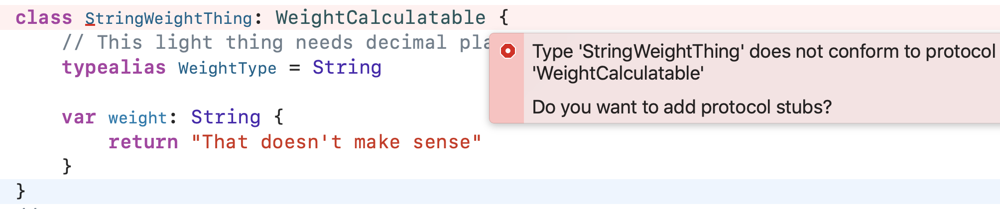

Swift
Apprentice
Seventh Edition
By the raywenderlich Tutorial Team
Ehab Amer, Alexis Gallagher, Matt Galloway, Eli Ganim,
Ben Morrow & Cosmin Pupăză
Swift Apprentice
Ehab Amer, Alexis Gallagher, Matt Galloway, Eli Ganim, Ben Morrow & Cosmin Pupăză
Copyright ©2021 Razeware LLC.
Notice of Rights
All rights reserved. No part of this book or corresponding materials (such as text, images, or source code) may be reproduced or distributed by any means without prior written permission of the copyright owner.
Notice of Liability
This book and all corresponding materials (such as source code) are provided on an “as is” basis, without warranty of any kind, express of implied, including but not limited to the warranties of merchantability, fitness for a particular purpose, and noninfringement. In no event shall the authors or copyright holders be liable for any claim, damages or other liability, whether in action of contract, tort or otherwise, arising from, out of or in connection with the software or the use of other dealing in the software.
Trademarks
All trademarks and registered trademarks appearing in this book are the property of their own respective owners.
Book license
By purchasing Swift Apprentice, you have the following license:
-
You are allowed to use and/or modify the source code in Swift Apprentice in as many apps as you want, with no attribution required.
-
You are allowed to use and/or modify all art, images and designs that are included in Swift Apprentice in as many apps as you want, but must include this attribution line somewhere inside your app: “Artwork/images/designs: from Swift Apprentice, available at www.raywenderlich.com”.
-
The source code included in Swift Apprentice is for your personal use only. You are NOT allowed to distribute or sell the source code in Swift Apprentice without prior authorization.
-
This book is for your personal use only. You are NOT allowed to sell this book without prior authorization, or distribute it to friends, coworkers or students; they would need to purchase their own copies.
All materials provided with this book are provided on an “as is” basis, without warranty of any kind, express or implied, including but not limited to the warranties of merchantability, fitness for a particular purpose and noninfringement. In no event shall the authors or copyright holders be liable for any claim, damages or other liability, whether in an action of contract, tort or otherwise, arising from, out of or in connection with the software or the use or other dealings in the software.
All trademarks and registered trademarks appearing in this guide are the properties of their respective owners.
Before You Begin
This section tells you a few things you need to know before you get started, such as what you’ll need for hardware and software, where to find the project files for this book and more.
What You Need
To follow along with the tutorials in this book, you’ll need the following:
-
A Mac running macOS Big Sur 11.6 or later. with the latest point release and security patches installed. This is so you can install the latest version of the required development tool: Xcode.
-
Xcode 13 or later. Xcode is the main development tool for writing code in Swift. You need Xcode 13 at a minimum, since that version includes Swift 5.5 Xcode playgrounds. You can download the latest version of Xcode for free from the Mac App Store, here: apple.co/1FLn51R
If you haven’t installed the latest version of Xcode, be sure to do that before continuing with the book. The code covered in this book depends on Swift 5.5 and Xcode 13 — you may get lost if you try to work with an older version or work outside the playground environment that this book assumes.
Book Source Code & Forums
Book source code
The materials for this book are all available in the GitHub repository here:
You can download the entire set of materials for the book from that page.
Forum
We’ve also set up an official forum for the book at https://forums.raywenderlich.com/c/books/swift-apprentice. This is a great place to ask questions about the book or to submit any errors you may find.
Dedications
“Thanks to my family for their unconditional support, and my beautiful Merche for being a wonderful blessing.”
— Ehab Amer
“To my wife and kids – Ringae, Odysseus, and Kallisto.”
— Alexis Gallagher
“To my amazing family who keep putting up with me spending my spare hours writing books like this.”
— Matt Galloway
“To my loved ones: Moriah, Lia and Ari.”
— Eli Ganim
“For MawMaw. A talented cook, a loving smooch, a worthy opponent in chicken foot; a home weaver. Her blessing abides beyond her time.”
— Ben Morrow
“To my awesome girlfriend Oana, my sweet dogs Sclip and Nori and my lovely cats Grisi and Porto for believing in me all the way.”
— Cosmin Pupăză
About the Authors
Ehab Amer is an author of this book. He is a very enthusiastic Lead iOS developer with a very diverse experience, from building games to enterprise applications and POCs, especially when exploring new technologies. In his spare time, TV shows take the majority, followed by video games. When away from the screen, he goes with his friends for escape room experiences or to explore the underwater world through diving.
Alexis Gallagher is an author of this book. He’s worked in consulting, science, iOS development, startup management, and theater. Perhaps the only software engineer in San Francisco who was born there, he lives there now with his family, and works at Google on machine learning research and applications.
Matt Galloway is an author of this book. He is a software engineer with a passion for excellence. He stumbled into iOS programming when it first was a thing, and he has never looked back. When not coding, he likes to brew his own beer.
Eli Ganim is an author of this book. He is a Software Engineer who’s passionate about teaching, writing and sharing knowledge with others. He lives in Israel with his wife and kids.
Ben Morrow is an author of this book. He delights in discovering the unspoken nature of the world. He’ll tell you the surprising bits while on a walk. He produces beauty by drawing out the raw wisdom that exists within each of us.
Cosmin Pupăză is an author of this book. He is a tutorial writer from Romania. He has worked with more than a dozen programming languages over the years, but none has made such a great impact on himself as Swift. When not coding, he either plays the guitar or studies WWII history.
About the Editors
Sandra Grauschopf is an editor of this book. Sandra is a freelance writer, editor, and content strategist as well as the Editing Team Lead at raywenderlich.com. She loves to untangle tortured sentences and to travel the world with a trusty book in her hand. You can follow her on Twitter at @SGrauschopf (https://twitter.com/sgrauschopf) or learn more about her at grauschopf.com.
Steven Van Impe is the technical editor of this book. Steven is a computer science author and lecturer at the HOGENT University of Applied Sciences in Belgium. You can find Steven on Twitter as @pwsacademy (https://twitter.com/pwsacademy).
Ray Fix is the final pass editor of this book. During the day, Ray works on next-generation microscopes made for iPad at Discover Echo Inc. in San Diego, California. He enjoys learning new things and is excited about math, data, visualization, machine learning and computer vision. Swift is his problem-solving language of choice and he has been using it and teaching others about it since its 2014 public release. Twitter: @rayfix (https://twitter.com/rayfix).
Introduction
Welcome to the Swift Apprentice, fully updated for Xcode 13 and Swift 5.5!
In the last seven years, Swift has gone from a secret project at Apple, Inc. to a full-blown, open-source, community-driven language. It continues to refine its core goal of being a general-purpose language that supports safety, speed and expressiveness.
Despite its progressive, industrial-strength nature, Swift is an excellent choice for the beginning programmer since Xcode offers a sandbox-type environment where you can directly execute Swift statements to try out various language features without creating a whole app first.
Developers worldwide use Swift to build thousands of amazing apps for iOS, iPadOS, macOS, tvOS and watchOS. Swift is also in server-side technology on non-Apple platforms. That means what you learn in this book will be extremely useful as you expand your development skills and possibly work as a developer someday.
You’ll learn about basic things like constants, values, operations and types, and move up to more intermediate concepts like data structures, classes and enumerations. Finally, you’ll finish off by getting in-depth knowledge about protocol extensions, custom operators, protocol-oriented programming and generics. Swift lets you create beautiful abstractions to solve real-world problems that you will learn about in this book.
Swift is also a lot of fun! It’s easy to try out small snippets of code as you test new ideas. Programming is a hands-on experience, and Swift makes it fast and easy to follow along with this book and explore on your own.
Who this book is for
If you’re a complete beginner at programming, this is the book for you! There are short exercises and challenges throughout the book to give you some programming practice and test your knowledge along the way.
If you want to get right into iOS app development while learning bits of the Swift language as you go, we recommend SwiftUI by Tutorials by the raywenderlich.com team. SwiftUI is so approachable that you may have even built a simple app or two with some sample code. As you go through this book, you may be wondering why you don’t see some of the syntaxes that appear in an elementary SwiftUI app. These include @State and @ObservedObject property wrappers, opaque return types and result builders. While property wrappers and opaque return types are eventually covered, they are advanced language features and require quite a bit of background to understand their inner workings. Using them, fortunately, is easy, and SwiftUI by Tutorials will show you how to do that.
How to use this book
Each chapter of this book presents theory and Swift code to demonstrate the practical applications of what you’re learning.
Since this is a book for beginners, we suggest reading it in order the first time. After that, the book will make an excellent reference for you to return to and refresh your memory on particular topics.
All the code in this book is platform-neutral; it isn’t specific to iOS, macOS or any other platform. The code runs in playgrounds, which you’ll learn about in the very first chapter.
As you read through the book, you can follow along and type the code into a playground. That means you’ll be able to experiment with the code by making changes and see the results immediately.
Throughout the book, you’ll find mini-exercises, which are short exercises about the topic at hand. At the end of each chapter, there are also challenges. These are either programming questions or more extended coding exercises to test your knowledge. You’ll get the most out of this book if you follow along with these exercises and challenges.
What’s in store
This book consists of four sections. Each section has a short introduction that describes its chapters, their topics and the overarching themes of the section. Here’s a brief overview of the book’s sections:
Section I: Swift Basics
The book’s first section starts at the beginning of the computing environment: first, how computers work, and then, how Swift’s playgrounds feature works. With those logistics out of the way, you’ll take a tour of the fundamentals of the Swift language and learn the basics of managing data, structuring your code, performing simple operations and calculations, working with types.
Section II: Collection Types
Stored data is a core component of any app, whether it’s a list of friends in your social networking app or a set of unlockable characters in your hit game. In this section, you’ll learn how to store collections of data in Swift.
Section III: Building Your Own Types
Swift comes with basic building blocks, but its real power is in the custom things you can build to model parts of your app. Swift has no idea about playable characters and monsters and power-ups — these are things you need to build yourself! You’ll learn how to do that in this section.
Section IV: Advanced Topics
The final section of the book covers more advanced topics in Swift. You’ll learn about specific things, such as how to handle problems that come up as your code runs, as well as about more general things such as memory management, which will help you understand some of Swift’s behind-the-scenes mechanisms. You’ll learn more advanced ways to use the type system with protocols and generics and use cutting-edge features such as results builders and property wrappers. The book concludes with an extensive chapter on the new concurrency features that are now part of the language.
Acknowledgments
We want to thank many people for their assistance in making this book possible:
-
Janie Clayton For her previous work on the first, second and third editions of Swift Apprentice.
-
Erik Kerber For his previous work on the first and second editions of Swift Apprentice.
-
Our families: For bearing with us in this crazy time as we worked all hours of the night to get this book ready for publication!
-
Everyone at Apple: For creating an exciting new programming language that we can use everywhere!
-
The Swift Community: For all the people, both inside and outside of Apple, who have worked very hard to make Swift the best computer language in the world.
-
And most importantly, the readers of raywenderlich.com — especially you! Thank you so much for reading our site and purchasing this book. Your continued readership and support are what make all of this possible!
Section I: Swift Basics
The chapters in this section will introduce you to the very basics of programming in Swift. From the fundamentals of how computers work up to language structures, you’ll cover enough of the language to be able to work with data and organize your code’s behavior.
The section begins with some groundwork to get you started.Once you have the basic data types in your head, it’ll be time to do things with that data, and finally, you’ll learn about an essential data type, optionals, that let you express potentially missing data.
These fundamentals will get you Swiftly on your way, and before you know it, you’ll be ready for the more advanced topics that follow. Let’s get started!
Chapter 1: Expressions, Variables & Constants
Welcome to the book! In this first chapter, you’re going to learn a few basics. You’ll learn how code works first. Then you’ll learn about the tools you’ll be using to write Swift code.
You’ll then start your adventure into Swift by learning some basics such as code comments, arithmetic operations, constants and variables. These are some of the fundamental building blocks of any language, and Swift is no different.
First of all, you’ll cover the basic workings of computers because it pays to have a grounding before you get into more complicated aspects of programming.
How a computer works
You may not believe me when I say it, but a computer is not very smart on its own. The power of a computer comes mostly from how it’s programmed by people like you and me. If you want to successfully harness the power of a computer — and I assume you do, if you’re reading this book — it’s important to understand how computers work.
It may also surprise you to learn that computers themselves are rather simple machines. At the heart of a computer is a Central Processing Unit (CPU). This is essentially a math machine. It performs addition, subtraction, and other arithmetical operations on numbers. Everything you see when you operate your computer is built upon a CPU crunching numbers many millions of times per second. Isn’t it amazing what can come from just numbers?
The CPU stores the numbers it acts upon in small memory units called registers. The CPU can read numbers into registers from the computer’s main memory, known as Random Access Memory (RAM). It’s also able to write the number stored in a register back into RAM. This allows the CPU to work with large amounts of data that wouldn’t all fit in the bank of registers.
Here is a diagram of how this works:
As the CPU pulls values from RAM into its registers, it uses those values in its math unit and stores the results back in another register.
Each time the CPU makes an addition, a subtraction, a read from RAM or a write to RAM, it’s executing a single instruction. Each computer program does its work by running thousands to millions of simple instructions. A complex computer program such as your operating system, macOS (yes, that’s a computer program too!), consists of many millions of instructions.
It’s entirely possible to write individual instructions to tell a computer what to do, but for all but the simplest programs, it would be immensely time-consuming and tedious. This is because most computer programs aim to do much more than simple math — computer programs let you surf the Internet, manipulate images, and chat with your friends.
Instead of writing individual instructions, you write source code (or just code) in a specific programming language, which in your case will be Swift. This code is put through a computer program called a compiler, which converts the code into those small machine instructions the CPU knows how to execute. Each line of code you write will turn into many instructions — some lines could end up being tens of instructions!
Representing numbers
As you know by now, numbers are a computer’s bread and butter, the fundamental basis of everything it does. Whatever information you send to the compiler will eventually become a number. For example, each character within a block of text is represented by a number. You’ll learn more about this in Chapter 2, “Types & Operations”, which delves into types, including strings, the computer term for a block of text.
Images are no exception. In a computer, each image is also represented by a series of numbers. An image is split into many thousands, or even millions, of picture elements called pixels, where each pixel is a solid color. If you look closely at your computer screen, you may be able to make out these blocks. That is unless you have a particularly high-resolution display where the pixels are incredibly small! Each of these solid color pixels is usually represented by three numbers: one for the amount of red, one for the amount of green and one for the amount of blue. For example, an entirely red pixel would be 100% red, 0% green and 0% blue.
The numbers the CPU works with are notably different from those you are used to. When dealing with numbers in day-to-day life, you work with them in base 10, otherwise known as the decimal system. Having used this numerical system for so long, you intuitively understand how it works. So that you can appreciate the CPU’s point of view, consider how base 10 works.
The decimal or base 10 number 423 contains three units, two tens and four hundreds:
In the base 10 system, each digit of a number can have a value of 0, 1, 2, 3, 4, 5, 6, 7, 8 or 9, giving a total of 10 possible values for each digit. Yep, that’s why it’s called base 10! But the actual value of each digit depends on its position within the number. Moving from right to left, each digit gets multiplied by an increasing power of 10. So the multiplier for the far-right position is 10 to the power of 0, which is 1. Moving to the left, the next multiplier is 10 to the power of 1, which is 10. Moving again to the left, the next multiplier is 10 to the power of 2, which is 100. And so on.
This means each digit has a value ten times that of the digit to its right. The number 423 is equal to the following:
(0 * 1000) + (4 * 100) + (2 * 10) + (3 * 1) = 423
Binary numbers
Because you’ve been trained to operate in base 10, you don’t have to think about how to read most numbers — it feels quite natural. But to a computer, base 10 is way too complicated! Computers are simple-minded, remember? They like to work with base 2.
Base 2 is often called binary, which you’ve likely heard of before. It follows that base 2 has only two options for each digit: 0 or 1.
Almost all modern computers use binary because, at the physical level, it’s easiest to handle only two options for each digit. In digital electronic circuitry, which is mostly what comprises a computer, the presence of an electrical voltage is 1 and the absence is 0 — that’s base 2!
Here’s a representation of the base 2 number 1101:
In the base 10 number system, the place values increase by a factor of 10: 1, 10, 100, 1000, etc. In base 2, they increase by a factor of 2: 1, 2, 4, 8, 16, etc. The general rule is to multiply each digit by an increasing power of the base number — in this case, powers of 2 — moving from right to left.
So the far-right digit represents (1 * 2^0), which is (1 * 1), which is 1. The next digit to the left represents (0 * 2^1), which is (0 * 2), which is 0. In the illustration above, you can see the powers of 2 on top of the blocks.
Put another way, every power of 2 either is (1) or isn’t (0) present as a component of a binary number. The decimal version of a binary number is the sum of all the powers of 2 that make up that number. So the binary number 1101 is equal to:
(1 * 8) + (1 * 4) + (0 * 2) + (1 * 1) = 13
And if you wanted to convert the base 10 number 423 into binary, you would simply need to break down 423 into its component powers of 2. You would wind up with the following:
(1 * 256) + (1 * 128) + (0 * 64) + (1 * 32) + (0 * 16) + (0 * 8) + (1 * 4) + (1 * 2) + (1 * 1) = 423
As you can see by scanning the binary digits in the above equation, the resulting binary number is 110100111. You can prove to yourself that this is equal to 423 by doing the math!
The computer term given to each digit of a binary number is a bit (a contraction of “binary digit”). Eight bits make up a byte. Four bits is called a nibble, a play on words that shows even old-school computer scientists had a sense of humor.
A computer’s limited memory means it can normally deal with numbers up to a certain length. Each register, for example, is usually 32 or 64 bits in length, which is why we speak of 32-bit and 64-bit CPUs.
Therefore, a 32-bit CPU can handle a maximum base-number of 4,294,967,295, which is the base 2 number 11111111111111111111111111111111. That is 32 ones—count them!
A computer can handle numbers larger than the CPU maximum, but the calculations must be split up and managed in a special and longer way, much like the long multiplication you performed in school.
Hexadecimal numbers
As you can imagine, working with binary numbers can become quite tedious because it can take a long time to write or type them. For this reason, in computer programming, we often use another number format known as hexadecimal or hex for short. This is base 16.
Of course, there aren’t 16 distinct numbers to use for digits; there are only 10. To supplement these, we use the first six letters, a through f.
They are equivalent to decimal numbers like so:
-
a = 10
-
b = 11
-
c = 12
-
d = 13
-
e = 14
-
f = 15
Here’s a base 16 example using the same format as before:
Notice first that you can make hexadecimal numbers look like words. That means you can have a little bit of fun. :]
Now the values of each digit refer to powers of 16. In the same way as before, you can convert this number to decimal like so:
(12 * 4096) + (0 * 256) + (13 * 16) + (14 * 1) = 49374
You translate the letters to their decimal equivalents and then perform the usual calculations.
But why bother with this?
Hexadecimal is useful because each hexadecimal digit can represent precisely four binary digits. The binary number 1111 is equivalent to hexadecimal f. It follows that you can simply concatenate the binary digits representing each hexadecimal digit, creating a hexadecimal number that is shorter than its binary or decimal equivalents.
For example, consider the number c0de from above:
c = 1100
0 = 0000
d = 1101
e = 1110
c0de = 1100 0000 1101 1110
This turns out to be rather helpful, given how computers use long 32-bit or 64-bit binary numbers. Recall that the longest 32-bit number in decimal is 4,294,967,295. In hexadecimal, it is ffffffff. That’s much more compact and clear.
How code works
Computers have many constraints, and by themselves, they can only do a small number of things. The power that the computer programmer adds through coding is putting these small things together in the correct order to produce something much bigger.
Coding is much like writing a recipe. You assemble ingredients (the data) and give the computer a step-by-step recipe for using them.
Here’s an example:
Step 1. Load photo from the hard drive.
Step 2. Resize photo to 400 pixels wide by 300 pixels high.
Step 3. Apply sepia filter to photo.
Step 4. Print photo.
This set of steps is what’s known as pseudo-code. It isn’t written in a valid computer programming language, but it represents the algorithm that you want to use. In this case, the algorithm takes a photo, resizes it, applies a filter and then prints it. It’s a relatively straightforward algorithm, but it’s an algorithm nonetheless!
Swift code is just like this: a step-by-step list of instructions for the computer. These instructions will get more complex as you read through this book, but the principle is the same: You are simply telling the computer what to do, one step at a time.
Each programming language is a high-level, pre-defined way of expressing these steps. The compiler knows how to interpret the code you write and convert it into instructions that the CPU can execute.
There are many different programming languages, each with its own advantages and disadvantages. Swift is an extremely modern language. It incorporates the strengths of many other languages while ironing out some of their weaknesses. In years to come, programmers may look back on Swift as being old and crusty, too. But for now, it continues to improve and evolve.
This has been a brief tour of computer hardware, number representation and code, and how they all work together to create a modern program. That was a lot to cover in one section! Now it’s time to learn about the tools you’ll use to write in Swift as you follow along with this book.
Playgrounds
The set of tools you use to write software is called a toolchain. The part of the toolchain into which you write your code is known as the Integrated Development Environment (IDE). The most commonly used IDE for Swift is called Xcode, and that’s what you’ll be using.
Xcode includes a handy document type called a playground, which allows you to quickly write and test code without building a complete app. You’ll use playgrounds throughout the book to practice coding, so it’s important to understand how they work. That’s what you’ll learn during the rest of this chapter.
Creating a playground
To get started with a playground, click File ▸ New ▸ Playground. Xcode will present you with a choice of templates:
The platform you choose simply defines which version of the template Xcode will use to create the playground. Currently, your options are iOS or macOS. Each platform comes with its own environment set up and ready for you to begin playing around with code.
For this book, choose whichever platform you wish. You won’t be writing any platform-specific code; instead, you’ll be learning the core principles of the Swift language.
Select the Blank template and click Next. Xcode will now ask you to name the playground and select a location to save it.
The name is merely cosmetic and for your own use; when you create your playgrounds, feel free to choose names that will help you remember what they’re about. For example, while you’re working through Chapter 1,“Expressions, Variables & Constants”, you may want to name your playground Chapter1.
Click Create to create and save the playground. Xcode then presents you with the playground, like so:
Even blank playgrounds don’t start empty but have some basic starter code to get you going. Don’t worry — you’ll soon learn what this code means.
Playgrounds overview
At first glance, a playground may look like a rather fancy text editor. Well, here’s some news for you: It is essentially just that!
The previous screenshot highlights the first and most important things to know about:
-
Source editor: This is the area in which you’ll write your Swift code. It’s much like a text editor such as Notepad or TextEdit. You’ll notice the use of what’s known as a monospaced font, meaning all characters are the same width. This makes the code much easier to read and format.
-
Results sidebar: This area shows the results of your code. You’ll learn more about how code executes as you read through the book. The results sidebar will be the main place you’ll look to confirm your code is working as expected.
-
Resources tree: This shows the list of resources contained within the playground. Here you’ll find a tree of resources for the playground, starting with the main playground file, then additional sources and resources. This allows you to build very complex playgrounds that split up the sources into multiple files.
-
Execution control: This control lets you run the entire playground file or clear state so you can run it again. By default, playgrounds do not execute automatically. You can change this setting to execute with every change by long pressing on it and selecting “Automatically Run”.
-
Activity viewer: This shows the status of the playground. In the screenshot, it shows that the playground has finished executing and is ready to handle more code in the source editor. When the playground is executing, this viewer will indicate this with a spinner.
-
Left panel control: This toggles the left panel where the resources tree is. Keep this closed for now.
-
Right panel control: This toggles the right panel. Here you’ll find information about the source file that’s open. You’ll usually keep this closed.
-
Bottom panel control: This toggles the bottom panel. In here, you’ll find output from the running playground. You’ll open this later.
You can turn on line numbers on the left side of the source editor by clicking Xcode ▸ Preferences… ▸ Text Editing ▸ Line Numbers. Line numbers can be handy when you want to refer to parts of your code.
Playgrounds execute the code in the source editor from top to bottom. The play button floats next to each line as you move the cursor over it and lets you run from the beginning of the file up to and including the line you click. To force a re-execution, you can click on the Execution control button twice–once to stop and clear it and again to rerun.
Once the playground execution is finished, Xcode updates the results sidebar to show the results of the corresponding line in the source editor. You’ll see how to interpret the results of your code as you work through the examples in this book.
Note: Under certain conditions, you may find Xcode incorrectly disables line-based execution. In these cases, just use the execution control button to run the entire playground.
Getting started with Swift
Now that you know how computers work and what this “playground” thing is, it’s time to start writing some Swift!
You may wish to follow along with your own playground. Simply create one and type in the code as you go!
First up is something that helps you organize your code. Read on!
Code comments
The Swift compiler generates executable code from your source code. To accomplish this, it uses a detailed set of rules you will learn about in this book. Sometimes these details can obscure the big picture of why you wrote your code a certain way or even what problem you are solving. To prevent this, it’s good to document what you wrote so that the next human who passes by will be able to make sense of your work. That next human, after all, may be a future you.
Swift, like most other programming languages, allows you to document your code through the use of what are called comments. These allow you to write any text directly alongside your code and are ignored by the compiler.
The first way to write a comment is like so:
This is a single-line comment.
You could stack these up like so to allow you to write paragraphs:
However, there is a better way to write comments which span multiple lines. Like so:
This is a multi-line comment. The start is denoted by /* and the end is denoted by */. Simple!
Swift also allows you to nest comments, like so:
This might not seem particularly interesting, but it may be if you have seen other programming languages. Many do not allow you to nest comments like this as when it sees the first */; it thinks you are closing the first comment. You should use code comments where necessary to document your code, explain your reasoning, or simply leave jokes for your colleagues. :]
Printing out
It’s also useful to see the results of what your code is doing. In Swift, you can achieve this through the use of the print command.
print will output whatever you want to the debug area (sometimes referred to as the console).
For example, consider the following code:
print("Hello, Swift Apprentice reader!")
This will output a nice message to the debug area, like so:
You can hide or show the debug area using the button highlighted with the box in the above screenshot. You can also click View ▸ Debug Area ▸ Show Debug Area to do the same thing.
Arithmetic operations
When you take one or more pieces of data and turn them into another piece of data, this is known as an operation.
The simplest way to understand operations is to think about arithmetic. The addition operation takes two numbers and converts them into the sum of the two numbers. The subtraction operation takes two numbers and converts them into the difference between the two numbers.
You’ll find simple arithmetic all over your apps; from tallying the number of “likes” on a post, to calculating the correct size and position of a button or a window, numbers are indeed everywhere!
In this section, you’ll learn about the various arithmetic operations that Swift has to offer by considering how they apply to numbers. In later chapters, you see operations for types other than numbers.
Simple operations
All operations in Swift use a symbol known as the operator to denote the type of operation they perform. Consider the four arithmetic operations you learned in your early school days: addition, subtraction, multiplication and division. For these simple operations, Swift uses the following operators:
-
Add: +
-
Subtract: -
-
Multiply: *
-
Divide: /
These operators are used like so:
2 + 6
10 - 2
2 * 4
24 / 3
Each of these lines is an expression, meaning each has a value. In these cases, all four expressions have the same value: 8. Notice how the code looks similar to how you would write the operations out on pen and paper. You can enter these straight into your playground.
The line numbers in light blue have not yet run. To run your code, click on the light blue play button on the last line next to the cursor.
Upon running, the playground removes the blue sidebar from the lines that have run; you can also see the values of these expressions in the right-hand bar, known as the results sidebar.
If you want, you can remove the whitespace surrounding the operator:
2+6
When you make this change, the blue sidebar reappears to indicate which lines need to be rerun. You can run again by clicking on the blue arrow or by using the shortcut Shift-Enter.
Note: Shift-Enter runs all statements up to the current cursor and advances to the next line. This makes it easy to keep hitting Shift-Enter and run the whole playground step-by-step, and it’s a great shortcut to commit to muscle memory.
Removing the whitespace is all or nothing; you can’t mix styles. For example:
2+6
2 + 6
2 +6
2+ 6
The first error will be:
Consecutive statements on a line must be separated by ';'
And for the second error, you’ll see:
'+' is not a postfix unary operator
You don’t need to understand these error messages at the moment. Just be aware that you must have whitespace on both sides of the operator or no whitespace on either side!
It’s often easier to read expressions when you have white space on either side.
Decimal numbers
All of the operations above have used whole numbers, more formally known as integers. However, as you will know, not every number is whole.
As an example, consider the following:
22 / 7
This, you may be surprised to know, results in the number 3. This is because if you only use integers in your expression, Swift makes the result an integer also. In this case, the result is rounded down to the next integer.
You can tell Swift to use decimal numbers by changing it to the following:
22.0 / 7.0
This time, the result is 3.142857142857143 as expected.
The remainder operation
The four operations you’ve seen so far are easy to understand because you’ve been doing them for most of your life. Swift also has more complex operations you can use, all of them standard mathematical operations, just less common ones. Let’s turn to them now.
The first of these is the remainder operation, also called the modulo operation. In division, the denominator goes into the numerator a whole number of times, plus a remainder. This remainder is exactly what the remainder operation gives. For example, 10 modulo 3 equals 1 because 3 goes into 10 three times, with a remainder of 1.
In Swift, the remainder operator is the % symbol, and you use it like so:
28 % 10
In this case, the result equals 8 because 10 goes into 28 twice with a remainder of 8. If you want to compute the same thing using decimal numbers, you do it like so:
(28.0).truncatingRemainder(dividingBy: 10.0)
This computes 28 divided by 10 and then truncates the result, chopping off any extra decimals and returns the remainder of that. The result is identical to % when there are no decimals.
Shift operations
The shift left and shift right operations take the binary form of a decimal number and shift the digits left or right, respectively. Then they return the decimal form of the new binary number.
For example, the decimal number 14 in binary, padded to 8 digits, is 00001110. Shifting this left by two places results in 00111000, which is 56 in decimal.
Here’s an illustration of what happens during this shift operation:
The digits that come in to fill the empty spots on the right become 0. The digits that fall off the end on the left are lost. Shifting right is the same, but the digits move to the right.
The operators for these two operations are as follows:
-
Shift left: <<
-
Shift right: >>
These are the first operators you’ve seen that contain more than one character. Operators can contain any number of characters.
Here’s an example that uses both of these operators:
1 << 3
32 >> 2
Both of these values equal the number 8.
One reason for using shifts is to make multiplying or dividing by powers of two easy. Notice that shifting left by one is the same as multiplying by two, shifting left by two is the same as multiplying by four, and so on.
Likewise, shifting right by one is the same as dividing by two, shifting right by two is the same as dividing by four, and so on.
In the old days, code often used this trick because shifting bits is much simpler for a CPU to do than complex multiplication and division arithmetic. Therefore the code was quicker if it used shifting.
However, these days, CPUs are much faster and compilers can even convert multiplication and division by powers of two into shifts for you. So you’ll see shifting only for binary twiddling, which you probably won’t see unless you become an embedded systems programmer!
Order of operations
Of course, it’s likely that when you calculate a value, you’ll want to use multiple operators. Here’s an example of how to do this in Swift:
((8000 / (5 * 10)) - 32) >> (29 % 5)
Note the use of parentheses, which in Swift serve two purposes: to make it clear to anyone reading the code — including yourself — what you meant, and to disambiguate. For example, consider the following:
350 / 5 + 2
Does this equal 72 (350 divided by 5, plus 2) or 50 (350 divided by 7)? Those of you who paid attention in school will be screaming, “72!” And you would be right!
Swift uses the same reasoning and achieves this through what’s known as operator precedence. The division operator (/) has higher precedence than the addition operator (+), so in this example, the code executes the division operation first.
If you wanted Swift to do the addition first — that is, to return 50 — then you could use parentheses like so:
350 / (5 + 2)
The precedence rules follow the same that you learned in math at school. Multiply and divide have the same precedence, higher than add and subtract, which also have the same precedence.
Math functions
Swift also has a vast range of math functions for you to use when necessary. You never know when you need to pull out some trigonometry, especially when you’re a pro at Swift and writing those complex games!
Note: Not all of these functions are part of Swift. The operating system provides some. Don’t remove the import statement that comes as part of the playground template or Xcode will tell you it can’t find these functions.
For example, consider the following:
sin(45 * Double.pi / 180)
cos(135 * Double.pi / 180)
These convert an angle from degrees to radians and then compute the sine and cosine, respectively. Notice how both make use of Double.pi, which is a constant Swift provides us, ready-made with pi to as much precision as is possible by the computer. Neat!
Then there’s this:
(2.0).squareRoot()
This computes the square root of 2. Did you know that the sine of 45° equals 1 over the square root of 2? Try it out!
Not mentioning these would be a shame:
max(5, 10)
min(-5, -10)
These compute the maximum and minimum of two numbers, respectively.
If you’re particularly adventurous you can even combine these functions like so:
max((2.0).squareRoot(), Double.pi / 2)
Naming data
At its simplest, computer programming is all about manipulating data. Remember, everything you see on your screen can be reduced to numbers you send to the CPU. Sometimes you represent and work with this data as various types of numbers, but other times the data comes in more complex forms such as text, images and collections.
In your Swift code, you can give each piece of data a name you can refer to later. The name carries with it a type annotation that denotes what sort of data the name refers to, such as text, numbers, or a date. You’ll learn about some of the basic types in this chapter, and you’ll encounter many other types throughout this book.
Constants
Take a look at this:
let number: Int = 10
This declares a constant called number, which is of type Int. Then it sets the value of the constant to the number 10.
Note: Thinking back to operators, here’s another one. The equals sign, =, is known as the assignment operator.
The type Int can store integers. The way you store decimal numbers is like so:
let pi: Double = 3.14159
This is similar to the Int constant, except the name and the type are different. This time, the constant is a Double, a type that can store decimals with high precision.
There’s also a type called Float, short for floating-point, that stores decimals with lower precision than Double. In fact, Double has about double the precision of Float, which is why it’s called Double in the first place. A Float takes up less memory than a Double, but generally, memory use for numbers isn’t a huge issue and you’ll see Double used in most places.
Once you’ve declared a constant, you can’t change its data. For example, consider the following code:
number = 0
This code produces an error:
Cannot assign to value: 'number' is a 'let' constant
In Xcode, you would see the error represented this way:
Constants are useful for values that aren’t going to change. For example, if you were modeling an airplane and needed to refer to the total number of seats installed, you could use a constant.
You might even use a constant for something like a person’s age. Even though their age will change as their birthday comes, you might only be concerned with their age at this particular instant.
Variables
Often you want to change the data behind a name. For example, if you were keeping track of your bank account balance with deposits and withdrawals, you might use a variable rather than a constant.
If your program’s data never changed, then it would be a rather boring program! But as you’ve seen, it’s not possible to change the data behind a constant.
When you know you’ll need to change some data, you should use a variable to represent that data instead of a constant. You declare a variable in a similar way, like so:
var variableNumber: Int = 42
Only the first part of the statement is different: You declare constants using let, whereas you declare variables using var.
Once you’ve declared a variable, you’re free to change it to whatever you wish, as long as the type remains the same. For example, to change the variable declared above, you could do this:
variableNumber = 0
variableNumber = 1_000_000
To change a variable, you simply assign it a new value.
Note: In Swift, you can optionally use underscores to make larger numbers more human-readable. The quantity and placement of the underscores is up to you.
This is a good time to take a closer look at the results sidebar of the playground. When you type the code above into a playground, you’ll see that the results sidebar on the right shows the current value of variableNumber at each line:
The results sidebar will show a relevant result for each line if one exists. In the case of a variable or constant, the result will be the new value, whether you’ve just declared a constant or declared or reassigned a variable.
Using meaningful names
Always try to choose meaningful names for your variables and constants. Good names act as documentation and make your code easy to read. A good name specifically describes the role of a variable or constant. Here are some examples of good names:
-
personAge
-
numberOfPeople
-
gradePointAverage
Often a bad name is simply not descriptive enough. Here are some examples of bad names:
The key is to ensure that you’ll understand what the variable or constant refers to when you read it again later. Don’t make the mistake of thinking you have an infallible memory! It’s common in computer programming to look back at your own code as early as a day or two later and have forgotten what it does. Make it easier for yourself by giving your variables and constants intuitive, precise names.
Also, note how the names above are written. In Swift, it is common to camel case names. For variables and constants, follow these rules to case your names properly:
-
Start with a lowercase letter.
-
If the name is made up of multiple words, join them together and start the other words with an uppercase letter.
-
If one of these words is an abbreviation, write the entire abbreviation in the same case (e.g.: sourceURL and urlDescription)
In Swift, you can even use the full range of Unicode characters. For example, you could declare a variable like so:
var 🐶💩: Int = -1
That might make you laugh, but use caution with special characters like these. They are harder to type and likely to bring you more pain than amusement.
Special characters like these probably make more sense in data that you store rather than in Swift code; you’ll learn more about Unicode in Chapter 9, “Strings.”
Increment and decrement
A common operation that you will need is to be able to increment or decrement a variable. In Swift, you achieve it like so:
var counter: Int = 0
counter += 1
counter -= 1
The counter variable begins as 0. The increment sets its value to 1, and then the decrement sets its value back to 0.
These operators are similar to the assignment operator (=), except they also perform an addition or subtraction. They take the current value of the variable, add or subtract the given value and assign the result to the variable.
In other words, the code above is shorthand for the following:
var counter: Int = 0
counter = counter + 1
counter = counter - 1
Similarly, the *= and /= operators do the equivalent for multiplication and division, respectively:
counter = 10
counter *= 3
counter /= 2
Mini-exercises
If you haven’t been following along with the code in Xcode, now’s the time to create a new playground and try some exercises to test yourself!
-
Declare a constant of type Int called myAge and set it to your age.
-
Declare a variable of type Double called averageAge. Initially, set it to your own age. Then, set it to the average of your age and my own age of 30.
-
Create a constant called testNumber and initialize it with whatever integer you’d like. Next, create another constant called evenOdd and set it equal to testNumber modulo 2. Now change testNumber to various numbers. What do you notice about evenOdd?
-
Create a variable called answer and initialize it with the value 0. Increment it by 1. Add 10 to it. Multiply it by 10. Then, shift it to the right by 3. After all of these operations, what’s the answer?
Challenges
Before moving on, here are some challenges to test your knowledge of variables and constants. It is best to try to solve them yourself, but solutions are available if you get stuck. These came with the download or are available at the printed book’s source code link listed in the introduction.
Challenge 1: Variables
Declare a constant Int called myAge and set it equal to your age. Also, declare an Int variable called dogs and set it equal to the number of dogs you own. Then imagine you bought a new puppy and increment the dogs variable by one.
Challenge 2: Make it compile
Given the following code:
age: Int = 16
print(age)
age = 30
print(age)
Modify the first line so that it compiles. Did you use var or let?
Challenge 3: Compute the answer
Consider the following code:
let x: Int = 46
let y: Int = 10
Work out what answer equals when you add the following lines of code:
let answer1: Int = (x * 100) + y
let answer2: Int = (x * 100) + (y * 100)
let answer3: Int = (x * 100) + (y / 10)
Challenge 4: Add parentheses
Add as many parentheses to the following calculation, ensuring that it doesn’t change the result of the calculation.
8 - 4 * 2 + 6 / 3 * 4
Challenge 5: Average rating
Declare three constants called rating1, rating2 and rating3 of type Double and assign each a value. Calculate the average of the three and store the result in a constant named averageRating.
Challenge 6: Electrical power
The power of an electrical appliance is calculated by multiplying the voltage by the current. Declare a constant named voltage of type Double and assign it a value. Then declare a constant called current of type Double and assign it a value. Finally, calculate the power of the electrical appliance you’ve just created, storing it in a constant called power of type Double.
Challenge 7: Electrical resistance
The resistance of such an appliance can then be calculated (in a long-winded way) as the power divided by the current squared. Calculate the resistance and store it in a constant called resistance of type Double.
Challenge 8: Random integer
You can create a random integer number by using the function arc4random(). This picks a number anywhere between 0 and 4294967295. You can use the modulo operator to truncate this random number to whatever range you want. Declare a constant randomNumber and assign it a random number generated with arc4random(). Then calculate a constant called diceRoll and use the random number you just found to create a random number between 1 and 6. (Hint: You will need to include the line import Foundation to get access to arc4random(). If this method of creating a random number seems primitive, you are right! There is an easier, more clear and expressive way to generate random numbers you will learn about in Chapter 4, “Advanced Control Flow”.)
Challenge 9: Quadratic equations
A quadratic equation is something of the form a⋅x² + b⋅x + c = 0. The values of x which satisfy this can be solved by using the equation x = (-b ± sqrt(b² - 4⋅a⋅c)) / (2⋅a). Declare three constants named a, b and c of type Double. Then calculate the two values for x using the equation above (noting that the ± means plus or minus — so one value of x for each). Store the results in constants called root1 and root2 of type Double.
Key points
-
Computers, at their most fundamental level, perform simple mathematics.
-
A programming language allows you to write code, which the compiler converts into instructions that the CPU can execute.
-
Computers operate on numbers in base 2 form, otherwise known as binary.
-
The IDE you use to write Swift code is named Xcode.
-
By providing immediate feedback about how code is executing, playgrounds allow you to write and test Swift code quickly and efficiently.
-
Code comments are denoted by a line starting with // or multiple lines bookended with /* and */.
-
You use comments to document your code.
-
You can use print to output information to the debug area.
-
The arithmetic operators are:
Add: +
Subtract: -
Multiply: *
Divide: /
Remainder: %
-
Swift makes many functions min(), max(), squareRoot(), sin() and cos(). You will learn many more throughout this book.
-
Constants and variables give names to data.
-
Once you’ve declared a constant, you can’t change its data, but you can change a variable’s data at any time.
-
Always give variables and constants meaningful names to save yourself and your colleagues headaches later.
-
Operators to perform arithmetic and then assign back to the variable:
Add and assign: +=
Subtract and assign: -=
Multiply and assign: *=
Divide and assign: /=
Chapter 2: Types & Operations
Now that you know how to perform basic operations and manipulate data using these operations, it’s time to learn more about types. Formally, a type describes a set of values and the operations that can be performed on them. In this chapter, you’ll learn about handling different types, including strings that allow you to represent text. You’ll learn about converting between types, and you’ll also be introduced to type inference which makes your life as a programmer a lot simpler. Finally, you’ll learn about tuple types, which allow you to group values of any type together.
Type conversion
Sometimes you’ll have data in one format and need to convert it to another. The naïve way to attempt this would be like so:
var integer: Int = 100
var decimal: Double = 12.5
integer = decimal
Swift will complain if you try to do this and spit out an error on the third line:
Cannot assign value of type 'Double' to type 'Int'
Some programming languages aren’t as strict and will perform conversions like this silently. Experience shows this kind of silent, automatic conversion is a source of software bugs and often hurts performance. Swift disallows you from assigning a value of one type to another and avoids these issues.
Remember, computers rely on us programmers to tell them what to do. In Swift, that includes being explicit about type conversions. If you want the conversion to happen, you have to say so!
Instead of simply assigning, you need to say that you want to convert the type explicitly. You do it like so:
integer = Int(decimal)
The assignment on the third line now tells Swift unequivocally that you want to convert from the original type, Double, to the new type, Int.
Note: In this case, assigning the decimal value to the integer results in a loss of precision: The integer variable ends up with the value 12 instead of 12.5. This is why it’s important to be explicit. Swift wants to make sure you know what you’re doing and that you may end up losing data by performing the type conversion.
Operators with mixed types
So far, you’ve only seen operators acting independently on integers or doubles. But what if you have an integer that you want to multiply by a double?
You might think you could do it like this:
let hourlyRate: Double = 19.5
let hoursWorked: Int = 10
let totalCost: Double = hourlyRate * hoursWorked
If you try that, you’ll get an error on the final line:
Binary operator '*' cannot be applied to operands of type 'Double' and 'Int'
This is because, in Swift, you can’t apply the * operator to mixed types. This rule also applies to the other arithmetic operators. It may seem surprising at first, but Swift is being rather helpful.
Swift forces you to be explicit about what you mean when you want an Int multiplied by a Double because the result can be only one type. Do you want the result to be an Int, converting the Double to an Int before performing the multiplication? Or do you want the result to be a Double, converting the Int to a Double before performing the multiplication?
In this example, you want the result to be a Double. You don’t want an Int because in that case, Swift would convert the hourlyRate constant into an Int to perform the multiplication, rounding it down to 19 and losing the precision of the Double.
You need to tell Swift you want it to consider the hoursWorked constant to be a Double, like so:
let totalCost: Double = hourlyRate * Double(hoursWorked)
Now, each of the operands will be a Double when Swift multiplies them, so totalCost is a Double as well.
Type inference
Every variable or constant you’ve seen in this book so far includes a type annotation. You may be asking yourself why you need to bother writing the : Int and : Double, since the right-hand side of the assignment is already an Int or a Double. It’s redundant, to be sure; your crazy-clever brain can see this without too much work.
It turns out the Swift compiler can deduce this as well. It doesn’t need you to tell it the type all the time — it can figure it out on its own. This is done through a process called type inference. Not all programming languages have this, but Swift does, and it’s a key component of Swift’s power as a language.
So, you can simply drop the type in most places where you see one.
For example, consider the following constant declaration:
let typeInferredInt = 42
Sometimes it’s useful to check the inferred type of a variable or constant. You can do this in a playground by holding down the Option key and clicking on the variable or constant’s name. Xcode will display a popover like this:
Xcode tells you the inferred type by giving you the declaration you would have used without type inference. In this case, the type is Int.
It works for other types, too:
let typeInferredDouble = 3.14159
Option-clicking on this reveals the following:
You can see from this that type inference isn’t magic. Swift is simply doing what your brain does very easily. Programming languages that don’t use type inference can often feel verbose because you must specify the often obvious type each time you declare a variable or constant.
Note: In later chapters, you’ll learn about more complex types where sometimes Swift can’t infer the type. That’s a pretty rare case, though, and you’ll see type inference used for most of the code examples in this book — except in cases where we want to highlight the type for you.
Sometimes you want to define a constant or variable and ensure it’s a certain type, even though what you’re assigning to it is a different type. You saw earlier how you could convert from one type to another. For example, consider the following:
let wantADouble = 3
Here, Swift infers the type of wantADouble as Int. But what if you wanted Double instead?
The first thing you could do is the following:
let actuallyDouble = Double(3)
This is like you saw before with type conversion.
Another option would be to not use type inference at all and do the following:
let actuallyDouble: Double = 3
There is a third option, like so:
let actuallyDouble = 3 as Double
This uses a new keyword you haven’t seen before, as. It also performs a type conversion, and you’ll see it again later in this book.
Note: Literal values like 3 don’t have a type, and it’s only when using them in an expression or assigning them to a constant or variable that Swift infers a type for them.
A literal number value that doesn’t contain a decimal point can be used as an Int as well as a Double. This is why you’re allowed to assign the value 3 to constant actuallyDouble.
Literal number values that do contain a decimal point cannot be integers. This means we could have avoided this entire discussion had we started with:
let wantADouble = 3.0
Sorry! :]
Mini-exercises
-
Create a constant called age1 and set it equal to 42. Create a constant called age2 and set it equal to 21. Check using Option-click that the type for both has been inferred correctly as Int.
-
Create a constant called avg1 and set it equal to the average of age1 and age2 using the naïve operation (age1 + age2) / 2. Use Option-click to check the type and check the result of avg1. Why is it wrong?
-
Correct the mistake in the above exercise by converting age1 and age2 to type Double in the formula. Use Option-click to check the type and check the result of avg1. Why is it now correct?
Strings
Numbers are essential in programming, but they aren’t the only type of data you need to work within your apps. Text is also an extremely common data type used to represent things like people’s names, addresses, or even the words of a book. All of these are examples of text that an app might need to handle.
Most computer programming languages store text in a data type called a string. This chapter introduces you to strings, first by giving you background on the concept of strings and then showing you how to use them in Swift.
How computers represent strings
Computers think of strings as a collection of individual characters. In Chapter 1, “Expressions, Variables & Constants”, you learned that numbers are the language of CPUs, and all code, in whatever programming language, can be reduced to raw numbers. Strings are no different!
That may sound very strange. How can characters be numbers? At its base, a computer needs to translate a character into the computer’s language, and it does so by assigning each character a different number. This forms a two-way mapping from character to number that is called a character set.
When you press a character key on your keyboard, you are actually communicating the number of the character to the computer. Your word processor application converts that number into a picture of the character or glyph, which gets presented to you.
Unicode
In isolation, a computer is free to choose whatever character set mapping it likes. If the computer wants the letter a to equal the number 10, then so be it. But when computers start talking to each other, they need to use a common character set.
If two computers used different character sets, then when one computer transferred a string to the other, they would end up thinking the strings contained different characters.
There have been several standards over the years, but the most modern standard is Unicode, and it defines the character set mapping that almost all computers use today.
As an example, consider the word cafe. The Unicode standard tells us that the letters of this word should be mapped to numbers like so:
The number associated with each character is called a code point. So in the example above, c uses code point 99, a uses code point 97, and so on.
Of course, Unicode is not just for the simple Latin characters used in English, such as c, a, f and e. It also lets you map characters from languages around the world. The word cafe, as you’re probably aware, is derived from French, in which it’s written as café. Unicode maps these characters like so:
And here’s an example using Chinese characters (this, according to Google translate, means “Computer Programming”):
You’ve probably heard of emojis, which are small pictures you can use in your text. These pictures are, in fact, just normal characters and are also mapped by Unicode. For example:
This is only two characters. The code points for these are very large numbers, but each is still only a single code point. The computer considers these as no different than any other two characters.
Note: The word “emoji” comes from Japanese, where “e” means picture and “moji” means character.
Strings in Swift
Swift, like any reasonable programming language, can work directly with characters and strings. It does so through the data types Character and String, respectively. In this section, you’ll learn about these data types and how to work with them.
Characters and strings
The Character data type can store a single character. For example:
let characterA: Character = "a"
This stores the character a. It can hold any character — even an emoji:
let characterDog: Character = "🐶"
But this data type is designed to hold only single characters. The String data type, on the other hand, stores multiple characters. For example:
let stringDog: String = "Dog"
It’s as simple as that! The right-hand side of this expression is known as a string literal; it’s the Swift syntax for representing a string.
Of course, type inference applies here as well. If you remove the type in the above declaration, then Swift does the right thing and makes the stringDog a String constant:
let stringDog = "Dog"
Note: There’s no such thing as a character literal in Swift. A character is simply a string of length one. However, Swift infers the type of any string literal to be String, so if you want a Character instead, you must make the type explicit.
Concatenation
You can do much more than create simple strings. Sometimes you need to manipulate a string, and one common way to do so is to combine it with another string.
In Swift, you do this in a rather simple way: by using the addition operator. Just as you can add numbers, you can add strings:
var message = "Hello" + " my name is "
let name = "Matt"
message += name
You need to declare message as a variable rather than a constant because you want to modify it. You can add string literals together, as in the first line, and add string variables or constants together, as in the last line.
It’s also possible to add characters to a string. However, Swift’s strictness with types means you have to be explicit when doing so, just as you have to be when you work with numbers if one is an Int and the other is a Double.
To add a character to a string, you do this:
let exclamationMark: Character = "!"
message += String(exclamationMark)
With this code, you explicitly convert the Character to a String before adding it to message.
Interpolation
You can also build up a string by using interpolation, which is a special Swift syntax that lets you build a string in a way that’s easy to read:
message = "Hello my name is \(name)!"
As I’m sure you’ll agree, this is much more readable than the previous section’s example. It’s an extension of the string literal syntax, whereby you replace certain parts of the string with other values. You enclose the value you want to insert in parentheses preceded by a backslash.
This syntax works, in the same way, to build a string from other data types, such as numbers:
let oneThird = 1.0 / 3.0
let oneThirdLongString = "One third is \(oneThird) as a decimal."
Here, you use a Double in the interpolation. At the end of this code, your oneThirdLongString constant will contain the following:
One third is 0.3333333333333333 as a decimal.
Of course, it would take infinite characters to represent one-third as a decimal because it’s a repeating decimal. String interpolation with a Double gives you no way to control the precision of the resulting string. This is an unfortunate consequence of using string interpolation: It’s simple to use but offers no ability to customize the output.
Multi-line strings
Swift has a neat way to express strings that contain multiple lines. This can be rather useful when you need to put a very long string in your code.
You do it like so:
let bigString = """
You can have a string
that contains multiple
lines
by
doing this.
"""
print(bigString)
The three double-quotes signify that this is a multiline string. Handily, the first and final newlines do not become part of the string. This makes it more flexible as you don’t have to have the three double-quotes on the same line as the string.
In the case above, it will print the following:
You can have a string
that contains multiple
lines
by
doing this.
Notice that the two-space margin in the multiline string literal is stripped out of the result. Swift looks at the number of leading spaces on the final three double-quotes line. Using this as a baseline, Swift requires that all lines above it have at least that much space so it can remove it from each line. This lets you format your code with pretty indentation without affecting the output.
Mini-exercises
-
Create a string constant called firstName and initialize it to your first name. Also, create a string constant called lastName and initialize it to your last name.
-
Create a string constant called fullName by adding the firstName and lastName constants together, separated by a space.
-
Using interpolation, create a string constant called myDetails that uses the fullName constant to create a string introducing yourself. For example, my string would read: "Hello, my name is Matt Galloway.".
Tuples
Sometimes data comes in pairs or triplets. An example of this is a pair of (x, y) coordinates on a 2D grid. Similarly, a set of coordinates on a 3D grid is comprised of an x-value, a y-value and a z-value. In Swift, you can represent such related data in a straightforward way through the use of a tuple.
A tuple is a type that represents data composed of more than one value of any type. You can have as many values in your tuple as you like. For example, you can define a pair of 2D coordinates where each axis value is an integer, like so:
let coordinates: (Int, Int) = (2, 3)
The type of coordinates is (Int, Int). The types of the values within the tuple, in this case, Int, are separated by commas and surrounded by parentheses. The code for creating the tuple is much the same, with each value separated by commas and surrounded by parentheses.
Type inference can infer tuple types too:
let coordinates = (2, 3)
You could similarly create a tuple of Double values, like so:
let coordinatesDoubles = (2.1, 3.5)
Or you could mix and match the types comprising the tuple, like so:
let coordinatesMixed = (2.1, 3)
And here’s how to access the data inside a tuple:
let x1 = coordinates.0
let y1 = coordinates.1
You can reference each item by its position in the tuple, starting with zero. So in this example, x1 will equal 2 and y1 will equal 3.
Note: Starting with zero is a common convention in computer programming called zero indexing. You’ll see this again in Chapter 7, “Arrays, Dictionaries & Sets.”
In the previous example, it may not be immediately obvious that the first value, at index 0, is the x-coordinate, and the second value, at index 1, is the y-coordinate. This is another demonstration of why it’s important to always name your variables in a way that avoids confusion.
Fortunately, Swift allows you to name the individual parts of a tuple, and you can be explicit about what each part represents. For example:
let coordinatesNamed = (x: 2, y: 3)
Here, the code annotates the values of coordinatesNamed to contain a label for each part of the tuple.
Then, when you need to access each part of the tuple, you can access it by its name:
let x2 = coordinatesNamed.x
let y2 = coordinatesNamed.y
This is much clearer and easier to understand. More often than not, it’s helpful to name the components of your tuples.
If you want to access multiple parts of the tuple at the same time, as in the examples above, you can also use a shorthand syntax to make it easier:
let coordinates3D = (x: 2, y: 3, z: 1)
let (x3, y3, z3) = coordinates3D
This declares three new constants, x3, y3 and z3, and assigns each part of the tuple to them in turn. The code is equivalent to the following:
let coordinates3D = (x: 2, y: 3, z: 1)
let x3 = coordinates3D.x
let y3 = coordinates3D.y
let z3 = coordinates3D.z
If you want to ignore a certain element of the tuple, you can replace the corresponding part of the declaration with an underscore. For example, if you were performing a 2D calculation and wanted to ignore the z-coordinate of coordinates3D, you’d write the following:
let (x4, y4, _) = coordinates3D
This line of code only declares x4 and y4. The _ is special and simply means you’re ignoring this part for now.
Note: You’ll find that you can use the underscore (also called the wildcard operator) throughout Swift to ignore a value.
Mini-exercises
-
Declare a constant tuple that contains three Int values followed by a Double. Use this to represent a date (month, day, year) followed by an average temperature for that date.
-
Change the tuple to name the constituent components. Give them names related to the data they contain: month, day, year and averageTemperature.
-
In one line, read the day and average temperature values into two constants. You’ll need to employ the underscore to ignore the month and year.
-
Up until now, you’ve only seen constant tuples. But you can create variable tuples, too. Change the tuple you created in the exercises above to a variable by using var instead of let. Now change the average temperature to a new value.
A whole lot of number types
You’ve been using Int to represent whole numbers. An Int is represented with 64 bits on most modern hardware and with 32 bits on older or more resource-constrained systems. Swift provides many more number types that use different amounts of storage. For whole numbers, you can use the explicit signed types Int8, Int16, Int32, Int64. These types consume 1, 2, 4, and 8 bytes of storage, respectively. Each of these types use 1 bit to represent the sign.
If you are only dealing with non-negative values, there is a set of explicit unsigned types that you can use. These include UInt8, UInt16, UInt32 and UInt64. While you cannot represent negative values with these, the extra 1 bit lets you represent values twice as big as their signed counterparts.
Here is a summary of the different integer types and their storage size in bytes. Most of the time, you will just want to use an Int.
These become useful if your code interacts with another piece of software that uses one of these more exact sizes or needs to optimize for storage size.
You’ve been using Double to represent fractional numbers. Swift offers a Float type with less range and precision than Double but requires half as much storage. Modern hardware has been optimized for Double, so it should be your go-to unless there is good reason to use a Float.
Most of the time, you will just use Int and Double to represent numbers, but you might encounter the other types every once in a while.
For example, suppose you need to add together an Int16 with a UInt8 and an Int32. You can do that like so:
let a: Int16 = 12
let b: UInt8 = 255
let c: Int32 = -100000
let answer = Int(a) + Int(b) + Int(c)
Type aliases
A useful feature of Swift is being able to create your own type which is an alias of another type. What this means you can do is give a more useful name to your type that describes what it is, but underneath, it’s just another type. This is known as a type alias.
It’s simple to create a type alias, like so:
typealias Animal = String
This creates a new type called Animal. When the compiler sees this type, it simply treats it as a String. Therefore you could do something like this:
let myPet: Animal = "Dog"
This might not seem useful right now, but sometimes types can become complex and creating an alias for them can give them a simpler and more explicit name. For example, you might do the following:
typealias Coordinates = (Int, Int)
let xy: Coordinates = (2, 4)
This creates a type called Coordinates, a tuple containing two Ints and then uses it.
As you see more and more Swift, you’ll see how type aliases can be very powerful and simplify code.
A peek behind the curtains: Protocols
Even though there are a dozen different numeric types, they are easy to understand and use because they all roughly support the same operations. In other words, once you know how to use an Int, using any one of the flavors is straightforward.
One of Swift’s truly great features is that it formalizes the idea of type commonality using what are known as protocols. By learning the protocol, you instantly understand how an entire family of types using that protocol work.
In the case of integers, the functionality can be diagrammed like so:
The arrows indicate conformance to (sometimes called adoption of) a protocol. While this graph does not show all of the protocols that integer types conform to — it gives you insight into how things are organized.
Swift is the first protocol-based language. As you begin to understand the protocols that underlie the types, you can leverage the system in ways not possible with other languages.
By the end of this book, you’ll be hooking into existing protocols and even creating new ones of your own.
Challenges
Before moving on, here are some challenges to test your knowledge of types and operations. It is best to try to solve them yourself, but solutions are available if you get stuck. These came with the download or are available at the printed book’s source code link listed in the introduction.
Challenge 1: Coordinates
Create a constant called coordinates and assign a tuple containing two and three to it.
Challenge 2: Named coordinate
Create a constant called namedCoordinate with a row and column component.
Challenge 3: Which are valid?
Which of the following are valid statements?
let character: Character = "Dog"
let character: Character = "🐶"
let string: String = "Dog"
let string: String = "🐶"
Challenge 4. Does it compile?
let tuple = (day: 15, month: 8, year: 2015)
let day = tuple.Day
Challenge 5: Find the error
What is wrong with the following code?
let name = "Matt"
name += " Galloway"
Challenge 6: What is the type of value?
What is the type of the constant named value?
let tuple = (100, 1.5, 10)
let value = tuple.1
Challenge 7: What is the value of month?
What is the value of the constant named month?
let tuple = (day: 15, month: 8, year: 2015)
let month = tuple.month
Challenge 8: What is the value of summary?
What is the value of the constant named summary?
let number = 10
let multiplier = 5
let summary = "\(number) multiplied by \(multiplier) equals \(number * multiplier)"
Challenge 9: Compute the value
What is the sum of a and b, minus c?
let a = 4
let b: Int32 = 100
let c: UInt8 = 12
Challenge 10: Different precision 𝜋s
What is the numeric difference between Double.pi and Float.pi?
Key points
-
Type conversion allows you to convert values of one type into another.
-
Type conversion is required when using an operator, such as the basic arithmetic operators (+, -, *, /), with mixed types.
-
Type inference allows you to omit the type when Swift already knows it.
-
Unicode is the standard for mapping characters to numbers.
-
A single mapping in Unicode is called a code point.
-
The Character data type stores single characters, and the String data type stores collections of characters or strings.
-
You can combine strings by using the addition operator.
-
You can use string interpolation to build a string in-place.
-
You can use tuples to group data into a single data type.
-
Tuples can either be unnamed or named. Their elements are accessed with index numbers for unnamed tuples or programmer-given names for named tuples.
-
There are many kinds of numeric types with different storage and precision capabilities.
-
Type aliases can be used to create a new type that is simply a new name for another type.
-
Protocols are how types are organized in Swift, and they describe the operations that multiple types share.
Chapter 3: Basic Control Flow
When writing a computer program, you need to tell the computer what to do in different scenarios. For example, a calculator app would need to do one thing if the user taps the addition button and another thing if the user taps the subtraction button.
In computer programming terms, this concept is known as control flow, named so because the flow of the program is controlled by various methods. This chapter will teach you how to make decisions and repeat tasks in your programs by using syntax to control the flow. You’ll also learn about Booleans, which represent true and false values, and how you can use these to compare data.
Comparison operators
You’ve seen a few types now, such as Int, Double and String. Here you’ll learn about another type that lets you compare values through the comparison operators.
When you perform a comparison, such as looking for the greater of two numbers, the answer is either true or false. Swift has a data type just for this! It’s called a Bool, which is short for Boolean, after a rather clever man named George Boole who invented an entire field of mathematics around the concept of true and false.
This is how you use a Boolean in Swift:
let yes: Bool = true
let no: Bool = false
And because of Swift’s type inference, you can leave off the type annotation:
let yes = true
let no = false
A Boolean can only be true or false, denoted by the keywords true and false. In the code above, you use the keywords to set the state of each constant.
Boolean operators
Booleans are commonly used to compare values. For example, you may have two values, and you want to know if they’re equal: either they are (true), or they aren’t (false).
In Swift, you do this using the equality operator, which is denoted by ==:
let doesOneEqualTwo = (1 == 2)
Swift infers that doesOneEqualTwo is a Bool. Clearly, 1 does not equal 2, and therefore doesOneEqualTwo will be false.
Similarly, you can find out if two values are not equal using the != operator:
let doesOneNotEqualTwo = (1 != 2)
This time, the comparison is true because 1 does not equal 2, so doesOneNotEqualTwo will be true.
The prefix ! operator, also called the not-operator, toggles true to false and false to true. Another way to write the above is:
let alsoTrue = !(1 == 2)
Because 1 does not equal 2, (1 == 2) is false, and then ! flips it to true.
Two more operators let you determine if a value is greater than (>) or less than (<) another value. You’ll likely know these from mathematics:
let isOneGreaterThanTwo = (1 > 2)
let isOneLessThanTwo = (1 < 2)
And it’s not rocket science to work out that isOneGreaterThanTwo will equal false and isOneLessThanTwo will equal true.
There’s also an operator that lets you test if a value is less than or equal to another value: <=. It’s a combination of < and ==, and will therefore return true if the first value is either less than the second value or equal to it.
Similarly, there’s an operator that lets you test if a value is greater than or equal to another — you may have guessed that it’s >=.
Boolean logic
Each of the examples above tests just one condition. When George Boole invented the Boolean, he had much more planned for it than these humble beginnings. He invented Boolean logic, which lets you combine multiple conditions to form a result.
One way to combine conditions is by using AND. When you AND together two Booleans, the result is another Boolean. If both input Booleans are true, then the result is true. Otherwise, the result is false.
In Swift, the operator for Boolean AND is &&, used like so:
let and = true && true
In this case, and will be true. If either of the values on the right were false, then and would be false.
Another way to combine conditions is by using OR. When you OR together two Booleans, the result is true if either of the input Booleans is true. Only if both input Booleans are false will the result be false.
In Swift, the operator for Boolean OR is ||, used like so:
let or = true || false
In this case, or will be true. If both values on the right were false, then or would be false. If both were true, then or would still be true.
Swift uses boolean logic to evaluate multiple conditions. Maybe you want to determine if two conditions are true; in that case, you’d use AND. If you only care about whether one of two conditions is true, then you’d use OR.
For example, consider the following code:
let andTrue = 1 < 2 && 4 > 3
let andFalse = 1 < 2 && 3 > 4
let orTrue = 1 < 2 || 3 > 4
let orFalse = 1 == 2 || 3 == 4
Each of these tests two separate conditions, combining them with either AND or OR.
It’s also possible to use Boolean logic to combine more than two comparisons. For example, you can form a complex comparison like so:
let andOr = (1 < 2 && 3 > 4) || 1 < 4
The parentheses disambiguates the expression. First, Swift evaluates the sub-expression inside the parentheses, and then it evaluates the entire expression, following these steps:
1. (1 < 2 && 3 > 4) || 1 < 4
2. (true && false) || true
3. false || true
4. true
String equality
Sometimes you want to determine if two strings are equal. For example, a children’s game of naming an animal in a photo would need to determine if the player answered correctly.
In Swift, you can compare strings using the standard equality operator, ==, in exactly the same way you compare numbers. For example:
let guess = "dog"
let dogEqualsCat = guess == "cat"
Here, dogEqualsCat is a Boolean that in this case equals false, because "dog" does not equal "cat". Simple!
Just as with numbers, you can compare not just for equality but also to determine if one value is greater than or less than another value. For example:
let order = "cat" < "dog"
This syntax checks if one string comes before another alphabetically. In this case, order equals true because "cat" comes before "dog".
Note: You will learn more about string equality in Chapter 9, “Strings”. Some interesting things crop up when strings contain special characters.
Toggling a Bool
A Bool often represents the state of something being “on” or “off”. In those cases, it’s common for the state to toggle between states. For example, you could use a Bool to represent the state of a light switch in your application and toggle between the states “on” and “off”.
For these situations, there is a handy way to flip a Bool from true to false and back again. Like so:
var switchState = true
switchState.toggle()
switchState.toggle()
Here, the variable called switchState starts as true. Then, after one toggle, it becomes false. After another toggle, it’s set to true again.
Note: The toggle() here is a call to a function. You’ll see more about these in Chapter 5, “Functions”, and how they apply to types in Chapter 12, “Methods”.
Mini-exercises
-
Create a constant called myAge and set it to your age. Then, create a constant named isTeenager that uses Boolean logic to determine if the age denotes someone in the age range of 13 to 19.
-
Create another constant named theirAge and set it to my age, which is 30. Then, create a constant named bothTeenagers that uses Boolean logic to determine if both you and I are teenagers.
-
Create a constant named reader and set it to your name as a string. Create a constant named author and set it to my name, Matt Galloway. Create a constant named authorIsReader that uses string equality to determine if reader and author are equal.
-
Create a constant named readerBeforeAuthor which uses string comparison to determine if reader comes before author.
The if statement
The first and most common way of controlling the flow of a program is through the use of an if statement, which allows the program to do something only if a certain condition is true. For example, consider the following:
if 2 > 1 {
print("Yes, 2 is greater than 1.")
}
This is a simple if statement. If the condition is true, then the statement will execute the code between the braces. If the condition is false, then the statement won’t execute the code between the braces. It’s as simple as that!
At the heart of the if statement is the condition. The condition is the thing being checked, and then the code in the braces either runs or doesn’t. An if statement is, therefore, a form of conditional statement. You’ll see that term crop up again in this chapter.
You can extend an if statement to provide code to run if the condition turns out to be false. This is known as the else clause. Here’s an example:
let animal = "Fox"
if animal == "Cat" || animal == "Dog" {
print("Animal is a house pet.")
} else {
print("Animal is not a house pet.")
}
Here, if animal equals either "Cat" or "Dog", the statement will run the first code block. If animal does not equal either "Cat" or "Dog", then the statement will run the block inside the else part of the if statement, printing the following to the debug area:
Animal is not a house pet.
But you can go even further than that with if statements. Sometimes you want to check one condition, then another. This is where else-if comes into play, nesting another if statement in the else clause of a previous if statement.
You can use it like so:
let hourOfDay = 12
var timeOfDay = ""
if hourOfDay < 6 {
timeOfDay = "Early morning"
} else if hourOfDay < 12 {
timeOfDay = "Morning"
} else if hourOfDay < 17 {
timeOfDay = "Afternoon"
} else if hourOfDay < 20 {
timeOfDay = "Evening"
} else if hourOfDay < 24 {
timeOfDay = "Late evening"
} else {
timeOfDay = "INVALID HOUR!"
}
print(timeOfDay)
These nested if statements test multiple conditions one by one until a true condition is found. Only the code associated with that first true condition is executed, regardless of whether subsequent else-if conditions are true. In other words, the order of your conditions matters!
You can add an else clause at the end to handle the case where none of the conditions are true. This else clause is optional if you don’t need it; in this example, you do need it to ensure that timeOfDay has a valid value by the time you print it out.
In this example, the if statement takes a number representing an hour of the day and converts it to a string representing the part of the day to which the hour belongs. Working with a 24-hour clock, the statements are checked in order, one at a time:
-
The first check is to see if the hour is less than 6. If so, that means it’s early morning.
-
If the hour is not less than 6, the statement continues to the first else-if, where it checks the hour to see if it’s less than 12.
-
Then, in turn, as conditions prove false, the statement checks the hour to see if it’s less than 17, then less than 20, then less than 24.
-
Finally, if the hour is out of range, the statement prints that information to the console.
In the code above, the hourOfDay constant is 12. Therefore, the code will print the following:
Notice that even though both the hourOfDay < 20 and hourOfDay < 24 conditions are also true, the statement only executes the first block whose condition is true; in this case, the block with the hourOfDay < 17 condition.
Short-circuiting
An important fact about if statements is what happens when there are multiple Boolean conditions separated by ANDs (&&) or ORs (||).
Consider the following code:
if 1 > 2 && name == "Matt Galloway" {
}
The first condition of the if statement, 1 > 2 is false. Therefore the whole expression cannot ever be true.
So Swift will not even bother to check the second part of the expression, namely the check of name. Similarly, consider the following code:
if 1 < 2 || name == "Matt Galloway" {
}
Since 1 < 2 is true, the whole expression must be true no matter what the value of name is. Therefore, once again, the check of name is not executed. This will come in handy later on when you start dealing with more complex data types.
Encapsulating variables
if statements introduce a new concept scope, which is a way to encapsulate variables through the use of braces. Imagine you want to calculate the fee to charge your client. Here’s the deal you’ve made:
You earn $25 for every hour up to 40 hours and $50 for every hour after that.
Using Swift, you can calculate your fee in this way:
var hoursWorked = 45
var price = 0
if hoursWorked > 40 {
let hoursOver40 = hoursWorked - 40
price += hoursOver40 * 50
hoursWorked -= hoursOver40
}
price += hoursWorked * 25
print(price)
This code takes the number of hours and checks if it’s over 40. If so, the code calculates the number of hours over 40, multiplies that by $50 and then adds the result to the price. The code then subtracts the number of hours over 40 from the hours worked. It multiplies the remaining hours worked by $25 and adds that to the total price.
In the example above, the result is as follows:
The interesting thing here is the code inside the if statement. There is a declaration of a new constant, hoursOver40, to store the number of hours over 40. Clearly, you can use it inside the if statement. But what happens if you try to use it at the end of the above code?
...
print(price)
print(hoursOver40)
This would result in the following error:
Use of unresolved identifier 'hoursOver40'
This error informs you that you’re only allowed to use the hoursOver40 constant within the scope it was created. In this case, the if statement introduced a new scope, so when that scope is finished, you can no longer use the constant.
However, each scope can use variables and constants from its parent scope. In the example above, the scope inside the if statement uses the price and hoursWorked variables, which you created in the parent scope.
The ternary conditional operator
Now I want to introduce a new operator, one you didn’t see in Chapter 2, “Types & Operations”. It’s called the ternary conditional operator and it’s related to if statements.
If you wanted to determine the minimum and maximum of two variables, you could use if statements, like so:
let a = 5
let b = 10
let min: Int
if a < b {
min = a
} else {
min = b
}
let max: Int
if a > b {
max = a
} else {
max = b
}
By now, you know how this works, but it’s a lot of code. Wouldn’t it be nice if you could shrink this to just a couple of lines? Well, you can, thanks to the ternary conditional operator!
The ternary conditional operator takes a condition and returns one of two values, depending on whether the condition was true or false. The syntax is as follows:
(<CONDITION>) ? <TRUE VALUE> : <FALSE VALUE>
You can use this operator to rewrite your long code block above, like so:
let a = 5
let b = 10
let min = a < b ? a : b
let max = a > b ? a : b
In the first example, the condition is a < b. If this is true, the result assigned back to min will be the value of a; if it’s false, the result will be the value of b.
I’m sure you’ll agree that’s much simpler! This is a useful operator that you’ll find yourself using regularly.
Note: Because finding the greater or smaller of two numbers is such a common operation, the Swift standard library provides two functions for this purpose: max and min. If you were paying attention earlier in the book, then you’ll recall you’ve already seen these.
Mini-exercises
-
Create a constant named myAge and initialize it with your age. Write an if statement to print out Teenager if your age is between 13 and 19 and Not a teenager if your age is not between 13 and 19.
-
Create a constant named answer and use a ternary condition to set it equal to the result you print out for the same cases in the above exercise. Then print out answer.
Loops
Loops are Swift’s way of executing code multiple times. In this section, you’ll learn about one type of loop: the while loop. If you know another programming language, you’ll find the concepts and maybe even the syntax to be familiar.
While loops
A while loop repeats a block of code while a condition is true. You create a while loop this way:
while <CONDITION> {
<LOOP CODE>
}
The loop checks the condition for every iteration. If the condition is true, then the loop executes and moves on to another iteration. If the condition is false, then the loop stops. Just like if statements, while loops introduce a scope.
The simplest while loop takes this form:
while true { }
This while loop never ends because the condition is always true. Of course, you would never write such a while loop because your program would spin forever! This situation is known as an infinite loop, and while it might not cause your program to crash, it will likely cause your computer to freeze.
Here’s a more useful example of a while loop:
var sum = 1
while sum < 1000 {
sum = sum + (sum + 1)
}
This code calculates a mathematical sequence to the point where the value is greater than 1000.
The loop executes as follows:
-
Before iteration 1: sum = 1, loop condition = true
-
After iteration 1: sum = 3, loop condition = true
-
After iteration 2: sum = 7, loop condition = true
-
After iteration 3: sum = 15, loop condition = true
-
After iteration 4: sum = 31, loop condition = true
-
After iteration 5: sum = 63, loop condition = true
-
After iteration 6: sum = 127, loop condition = true
-
After iteration 7: sum = 255, loop condition = true
-
After iteration 8: sum = 511, loop condition = true
-
After iteration 9: sum = 1023, loop condition = false
After the ninth iteration, the sum variable is 1023, and therefore the loop condition of sum < 1000 becomes false. At this point, the loop stops.
Repeat-while loops
A variant of the while loop is called the repeat-while loop. It differs from the while loop in that the condition is evaluated at the end of the loop rather than at the beginning. You construct a repeat-while loop like this:
repeat {
<LOOP CODE>
} while <CONDITION>
Here’s the example from the last section, but using a repeat-while loop:
sum = 1
repeat {
sum = sum + (sum + 1)
} while sum < 1000
In this example, the outcome is the same as before. However, that isn’t always the case — you might get a different result with a different condition.
Consider the following while loop:
sum = 1
while sum < 1 {
sum = sum + (sum + 1)
}
Consider the corresponding repeat-while loop, which uses the same condition:
sum = 1
repeat {
sum = sum + (sum + 1)
} while sum < 1
In the case of the regular while loop, the condition sum < 1 is false right from the start. That means the body of the loop won’t be reached! The value of sum will equal 1 because the loop won’t execute any iterations.
In the case of the repeat-while loop, sum will equal 3 because the loop executes once.
Breaking out of a loop
Sometimes you want to break out of a loop early. You can do this using the break statement, which immediately stops the loop’s execution and continues on to the code after the loop.
For example, consider the following code:
sum = 1
while true {
sum = sum + (sum + 1)
if sum >= 1000 {
break
}
}
Here, the loop condition is true, so the loop would normally iterate forever. However, the break means the while loop will exit once the sum is greater than or equal to 1000.
You’ve seen how to write the same loop in different ways, demonstrating that there are often many ways to achieve the same result in computer programming.
You should choose the method that’s easiest to read and conveys your intent in the best way possible. This is an approach you’ll internalize with enough time and practice.
Mini-exercises
-
Create a variable named counter and set it equal to 0. Create a while loop with the condition counter < 10, which prints out counter is X (where X is replaced with counter value) and then increments counter by 1.
-
Create a variable named counter and set it equal to 0. Create another variable named roll and set it equal to 0. Create a repeat-while loop. Inside the loop, set roll equal to Int.random(in: 0...5) which means to pick a random number between 0 and 5. Then increment counter by 1. Finally, print After X rolls, roll is Y where X is the value of counter and Y is the value of roll. Set the loop condition such that the loop finishes when the first 0 is rolled.
Challenges
Before moving on, here are some challenges to test your knowledge of basic control flow. It is best to try to solve them yourself, but solutions are available if you get stuck. These came with the download or are available at the printed book’s source code link listed in the introduction.
Challenge 1: Find the error
What’s wrong with the following code?
let firstName = "Matt"
if firstName == "Matt" {
let lastName = "Galloway"
} else if firstName == "Ray" {
let lastName = "Wenderlich"
}
let fullName = firstName + " " + lastName
Challenge 2: Boolean challenge
In each of the following statements, what is the value of the Boolean answer constant?
let answer = true && true
let answer = false || false
let answer = (true && 1 != 2) || (4 > 3 && 100 < 1)
let answer = ((10 / 2) > 3) && ((10 % 2) == 0)
Challenge 3: Snakes and ladders
Imagine you’re playing a game of snakes & ladders that goes from position 1 to position 20. On it, there are ladders at positions 3 and 7, which take you to 15 and 12, respectively. Then there are snakes at positions 11 and 17, which take you to 2 and 9, respectively.
Create a constant called currentPosition, which you can set to whatever position between 1 and 20 you like. Then create a constant called diceRoll, which you can set to whatever roll of the dice you want. Finally, calculate the final position considering the ladders and snakes, calling it nextPosition.
Challenge 4: Number of days in a month
Given a month (represented with a String in all lowercase) and the current year (represented with an Int), calculate the number of days in the month. Remember that because of leap years, “february” has 29 days when the year is a multiple of 4 but not a multiple of 100. February also has 29 days when the year is a multiple of 400.
Challenge 5: Next power of two
Given a number, determine the next power of two above or equal to that number.
Challenge 6: Triangular number
Given a number, print the triangular number of that depth. You can get a refresher of triangular numbers here: https://en.wikipedia.org/wiki/Triangular_number
Challenge 7: Fibonacci
Calculate the nth Fibonacci number. Remember that Fibonacci numbers start their sequence with 1 and 1, and then subsequent numbers in the sequence are equal to the previous two values added together. You can get a refresher here: https://en.wikipedia.org/wiki/Fibonacci_number
Challenge 8: Make a loop
Use a loop to print out the times table up to 12 of a given factor.
Challenge 9: Dice roll table
Print a table showing the number of combinations to create each number from 2 to 12, given two six-sided dice rolls. You should not use a formula but rather compute the number of combinations exhaustively by considering each possible dice roll.
Key points
-
You use the Boolean data type Bool to represent true and false.
-
The comparison operators, all of which return a Boolean, are:
-
You can use Boolean logic (&& and ||) to combine comparison conditions.
-
You use if statements to make simple decisions based on a condition.
-
You use else and else-if within an if statement to extend the decision-making beyond a single condition.
-
Short-circuiting ensures that only the minimal required parts of a Boolean expression are evaluated.
-
You can use the ternary operator (a ? b : c) instead of a simple if statement.
-
Variables and constants belong to a certain scope, beyond which you cannot use them. A scope inherits visible variables and constants from its parent.
-
while loops allow you to perform a particular task zero or more times until a condition is met.
-
repeat loops always execute the loop at least once.
-
The break statement lets you break out of a loop.
Chapter 4: Advanced Control Flow
In Chapter 3, “Basic Control Flow”, you learned how to control the flow of execution using the decision-making powers of if statements and the while loop. In this chapter, you’ll continue to learn how to control the flow of execution. You’ll learn about another loop known as the for loop.
Loops may not sound very interesting, but they’re very common in computer programs. For example, you might have code to download an image from the cloud; with a loop, you could run that multiple times to download your entire photo library. Or, if you have a game with multiple computer-controlled characters, you might need a loop to go through each one and make sure it knows what to do next.
You’ll also learn about switch statements, which are particularly powerful in Swift. They let you inspect a value and decide what to do based on that value, and they’re incredibly powerful when used with some advanced Swift features such as pattern matching.
Countable ranges
Before you dive into the for loop statement, you need to know about the Countable Range data types, which let you represent a sequence of countable integers. Let’s look at two types of ranges.
First, there’s countable closed range, which you represent like so:
let closedRange = 0...5
The three dots (...) indicate that this range is closed, which means the range goes from 0 to 5 inclusive. That’s the numbers (0, 1, 2, 3, 4, 5).
Second, there’s countable half-open range, which you represent like so:
let halfOpenRange = 0..<5
Here, you replace the three dots with two dots and a less-than sign (..<). Half-open means the range goes from 0 up to, but not including, 5. That’s the numbers (0, 1, 2, 3, 4).
Both open and half-open ranges must always be increasing. In other words, the second number must always be greater than or equal to the first. Countable ranges are commonly used in both for loops and switch statements, which means that throughout the rest of the chapter, you’ll use ranges as well!
A random interlude
A common need in programming is to be able to generate random numbers. And Swift provides the functionality built into the language, which is pretty handy!
As an example, imagine an application that needs to simulate rolling a die. You may want to do something until the code rolls a six. Now that you know about while loops, you can do that with the random feature. You could do that like so:
while Int.random(in: 1...6) != 6 {
print("Not a six")
}
Note: The random(in:) here is a call to a function. You’ll see more about these in Chapter 5, “Functions”, and how they apply to types in Chapter 12, “Methods”.
For loops
In Chapter 3, “Basic Control Flow”, you looked at while loops. Now that you know about ranges, it’s time to look at another type of loop: the for loop. This is probably the most common loop you’ll see, and you’ll use it to run code a certain number of times.
You construct a for loop like this:
for <CONSTANT> in <COUNTABLE RANGE> {
<LOOP CODE>
}
The loop begins with the for keyword, followed by a name given to the loop constant (more on that shortly), followed by in, followed by the range to loop through. Here’s an example:
let count = 10
var sum = 0
for i in 1...count {
sum += i
}
In the code above, the for loop iterates through the range 1 to count. At the first iteration, i will equal the first element in the range: 1. Each time around the loop, i will increment until it’s equal to count; the loop will execute one final time and then finish.
Note: If you’d used a half-open range, the last iteration would see i equal to count - 1.
Inside the loop, you add i to the sum variable; it runs 10 times to calculate the sequence 1 + 2 + 3 + 4 + 5 + ... all the way up to 10.
Here are the values of the constant i and variable sum for each iteration:
-
Start of iteration 1: i = 1, sum = 0
-
Start of iteration 2: i = 2, sum = 1
-
Start of iteration 3: i = 3, sum = 3
-
Start of iteration 4: i = 4, sum = 6
-
Start of iteration 5: i = 5, sum = 10
-
Start of iteration 6: i = 6, sum = 15
-
Start of iteration 7: i = 7, sum = 21
-
Start of iteration 8: i = 8, sum = 28
-
Start of iteration 9: i = 9, sum = 36
-
Start of iteration 10: i = 10, sum = 45
-
After iteration 10: sum = 55
In terms of scope, the i constant is only visible inside the scope of the for loop, which means it’s not available outside of the loop.
Note: If you’re mathematically astute, you might notice that this example computes triangle numbers. Here’s a quick explanation: http://bbc.in/1O89TGP
Xcode’s playground gives you a handy way to visualize such an iteration. Look at the sum += i line in the results pane. You will notice a box on the right. Click on it:
Xcode will display a graph underneath the line within the playground code editor:
This graph lets you visualize the sum variable as the loop iterates.
Finally, sometimes you only want to loop a certain number of times, so you don’t need to use the loop constant at all.
In that case, you can employ the underscore to indicate you’re ignoring it, like so:
sum = 1
var lastSum = 0
for _ in 0..<count {
let temp = sum
sum = sum + lastSum
lastSum = temp
}
This code doesn’t require a loop constant; the loop simply needs to run a certain number of times. In this case, the range is 0 up to, but not including, count and is half-open. This is the usual way of writing loops that run a certain number of times. It’s also possible to only perform the iteration under certain conditions. For example, imagine you wanted to compute a sum similar to that of triangle numbers, but only for odd numbers:
sum = 0
for i in 1...count where i % 2 == 1 {
sum += i
}
The previous loop has a where clause in the for loop statement. The loop still runs through all values in the range 1 to count, but it will only execute the loop’s code block when the where condition is true; in this case, where i is odd.
Continue and labeled statements
Sometimes you’d like to skip a loop iteration for a particular case without breaking out of the loop entirely. You can do this with the continue statement, which immediately ends the current iteration of the loop and starts the next iteration.
Note: In many cases, you can use the simpler where clause you just learned about. The continue statement gives you a higher level of control, letting you decide where and when you want to skip an iteration.
Take the example of an eight-by-eight grid, where each cell holds a row value multiplied by the column. It looks much like a multiplication table, doesn’t it?
Let’s say you wanted to calculate the sum of all cells but exclude all even rows, as shown below:
Using a for loop, you can achieve this as follows:
sum = 0
for row in 0..<8 {
if row % 2 == 0 {
continue
}
for column in 0..<8 {
sum += row * column
}
}
When the row modulo 2 equals 0, the row is even. In this case, continue makes the for loop skip to the next row. Just like break, continue works with both for loops and while loops.
The second code example will calculate the sum of all cells, excluding those where the column is greater than or equal to the row.
To illustrate, it should sum the following cells:
Using a for loop, you can achieve this as follows:
sum = 0
rowLoop: for row in 0..<8 {
columnLoop: for column in 0..<8 {
if row == column {
continue rowLoop
}
sum += row * column
}
}
The previous code block uses labeled statements, labeling the two loops as rowLoop and the columnLoop, respectively. When the row equals the column inside the inner columnLoop, the outer rowLoop will continue.
You can use labeled statements like these with break to break out of a certain loop. Normally, break and continue work on the innermost loop, so you need to use labeled statements to act on the outer loop.
Mini-exercises
-
Create a constant named range and set it equal to a range starting at 1 and ending with 10 inclusive. Write a for loop that iterates over this range and prints the square of each number.
-
Write a for loop to iterate over the same range as in the exercise above and print the square root of each number. You’ll need to type convert your loop constant.
-
Above, you saw a for loop that iterated over only the even rows like so:
sum = 0
for row in 0..<8 {
if row % 2 == 0 {
continue
}
for column in 0..<8 {
sum += row * column
}
}
Change this to use a where clause on the first for loop to skip even rows instead of using continue. Check that the sum is 448, as in the initial example.
Switch statements
You can also control flow via the switch statement. It executes different code depending on the value of a variable or constant. Here’s a switch statement that acts on an integer:
let number = 10
switch number {
case 0:
print("Zero")
default:
print("Non-zero")
}
In this example, the code will print the following:
The purpose of this switch statement is to determine whether or not a number is zero. It will get more complex — I promise!
To handle a specific case, you use case followed by the value you want to check for, which in this case is 0. Then, you use default to signify what should happen for all other values.
Here’s another example:
switch number {
case 10:
print("It’s ten!")
default:
break
}
This time you check for 10, in which case, you print a message. Nothing should happen for other values. When you want nothing to happen for a case, you use the break statement. This tells Swift that you meant to not write any code here and that nothing should happen. Cases can never be empty, so you must write some code, even if it’s just a break!
Of course, switch statements also work with data types other than integers. They work with any data type!
Here’s an example of switching on a string:
let string = "Dog"
switch string {
case "Cat", "Dog":
print("Animal is a house pet.")
default:
print("Animal is not a house pet.")
}
This will print the following:
In this example, you provide two values for the case, meaning that if the value is equal to either "Cat" or "Dog", then the statement will execute the case.
Advanced switch statements
You can also give your switch statements more than one case. In Chapter 3, “Basic Control Flow”, you saw an if statement that used multiple else clauses to convert an hour of the day to a string describing that part of the day.
You could rewrite that more succinctly with a switch statement, like so:
let hourOfDay = 12
var timeOfDay = ""
switch hourOfDay {
case 0, 1, 2, 3, 4, 5:
timeOfDay = "Early morning"
case 6, 7, 8, 9, 10, 11:
timeOfDay = "Morning"
case 12, 13, 14, 15, 16:
timeOfDay = "Afternoon"
case 17, 18, 19:
timeOfDay = "Evening"
case 20, 21, 22, 23:
timeOfDay = "Late evening"
default:
timeOfDay = "INVALID HOUR!"
}
print(timeOfDay)
This code will print the following:
Remember ranges?
Well, you can use ranges to simplify this switch statement. You can rewrite the above code using ranges:
switch hourOfDay {
case 0...5:
timeOfDay = "Early morning"
case 6...11:
timeOfDay = "Morning"
case 12...16:
timeOfDay = "Afternoon"
case 17...19:
timeOfDay = "Evening"
case 20..<24:
timeOfDay = "Late evening"
default:
timeOfDay = "INVALID HOUR!"
}
This code is more concise than writing out each value individually for all cases.
When there are multiple cases, the statement will execute the first one that matches. You’ll probably agree that this is more concise and clear than using an if statement for this example.
It’s slightly more precise as well because the if statement method didn’t address negative numbers, which here are correctly deemed to be invalid.
It’s also possible to match a case to a condition based on a property of the value. As you learned in Chapter 2, “Types & Operations” you can use the modulo operator to determine if an integer is even or odd.
Consider this code:
switch number {
case let x where x % 2 == 0:
print("Even")
default:
print("Odd")
}
This will print the following:
This switch statement uses the let-where syntax, meaning the case will match only when a certain condition is true. The let part binds a value to a name, while the where part provides a Boolean condition that must be true for the case to match.
In this example, you’ve designed the case to match if the value is even — that is if the value modulo 2 equals 0.
The method by which you can match values based on conditions is known as pattern matching.
In the previous example, the binding introduced an unnecessary constant x; it’s merely another name for number.
You can use number in the where clause and replace the binding with an underscore to ignore it.
switch number {
case _ where number % 2 == 0:
print("Even")
default:
print("Odd")
}
Partial matching
Another way you can use switch statements with matching to great effect is as follows:
let coordinates = (x: 3, y: 2, z: 5)
switch coordinates {
case (0, 0, 0):
print("Origin")
case (_, 0, 0):
print("On the x-axis.")
case (0, _, 0):
print("On the y-axis.")
case (0, 0, _):
print("On the z-axis.")
default:
print("Somewhere in space")
}
This switch statement makes use of partial matching. Here’s what each case does, in order:
-
Matches precisely where the value is (0, 0, 0). This is the origin of 3D space.
-
Matches y=0, z=0 and any value of x. This means the coordinate is on the x-axis.
-
Matches x=0, z=0 and any value of y. This means the coordinate is on the y-axis.
-
Matches x=0, y=0 and any value of z. This means the coordinate is on the z-axis.
-
Matches the remainder of coordinates.
You’re using the underscore to mean that you don’t care about the value. If you don’t want to ignore the value, you can bind it and use it in your switch statement.
Here’s an example of how to do this:
switch coordinates {
case (0, 0, 0):
print("Origin")
case (let x, 0, 0):
print("On the x-axis at x = \(x)")
case (0, let y, 0):
print("On the y-axis at y = \(y)")
case (0, 0, let z):
print("On the z-axis at z = \(z)")
case let (x, y, z):
print("Somewhere in space at x = \(x), y = \(y), z = \(z)")
}
Here, the axis cases use the let syntax to pull out the pertinent values. The code then prints the values using string interpolation to build the string.
Notice how you don’t need a default in this switch statement. This is because the final case is essentially the default; it matches anything because there are no constraints on any part of the tuple. If the switch statement exhausts all possible values with its cases, no default is necessary.
Also, notice how you could use a single let to bind all values of the tuple: let (x, y, z) is the same as (let x, let y, let z).
Finally, you can use the same let-where syntax you saw earlier to match more complex cases. For example:
switch coordinates {
case let (x, y, _) where y == x:
print("Along the y = x line.")
case let (x, y, _) where y == x * x:
print("Along the y = x^2 line.")
default:
break
}
Here, you match the “y equals x” and “y equals x squared” lines.
And those are the basics of switch statements!
Mini-exercises
-
Write a switch statement that takes an age as an integer and prints out the life stage related to that age. You can make up the life stages or use my categorization: 0-2 years, Infant; 3-12 years, Child; 13-19 years, Teenager; 20-39, Adult; 40-60, Middle-aged; 61+, Elderly.
-
Write a switch statement that takes a tuple containing a string and an integer. The string is a name, and the integer is an age. Use the same cases you used in the previous exercise and let syntax to print out the name followed by the life stage. For example, for myself, it would print out "Matt is an adult.".
Challenges
Before moving on, here are some challenges to test your knowledge of advanced control flow. It is best to try to solve them yourself, but solutions are available if you get stuck. These came with the download or are available at the printed book’s source code link listed in the introduction.
Challenge 1: How many times
In the following for loop, what will be the value of sum, and how many iterations will happen?
var sum = 0
for i in 0...5 {
sum += i
}
Challenge 2: Count the letter
In the while loop below, how many instances of “a” will there be in aLotOfAs? Hint: aLotOfAs.count tells you how many characters are in the string aLotOfAs.
var aLotOfAs = ""
while aLotOfAs.count < 10 {
aLotOfAs += "a"
}
Challenge 3: What will print
Consider the following switch statement:
switch coordinates {
case let (x, y, z) where x == y && y == z:
print("x = y = z")
case (_, _, 0):
print("On the x/y plane")
case (_, 0, _):
print("On the x/z plane")
case (0, _, _):
print("On the y/z plane")
default:
print("Nothing special")
}
What will this code print when coordinates is each of the following?
let coordinates = (1, 5, 0)
let coordinates = (2, 2, 2)
let coordinates = (3, 0, 1)
let coordinates = (3, 2, 5)
let coordinates = (0, 2, 4)
Challenge 4: Closed range size
A closed range can never be empty. Why?
Challenge 5: The final countdown
Print a countdown from 10 to 0. (Note: do not use the reversed() method, which will be introduced later.)
Challenge 6: Print a sequence
Print 0.0, 0.1, 0.2, 0.3, 0.4, 0.5, 0.6, 0.7, 0.8, 0.9, 1.0. (Note: do not use the stride(from:by:to:) function, which will be introduced later.)
Key points
-
You can use countable ranges to create a sequence of integers, incrementing to move from one value to another.
-
Closed ranges include both the start and end values.
-
Half-open ranges include the start value and stop one before the end value.
-
For loops allow you to iterate over a range.
-
The continue statement lets you finish the current loop iteration and begin the next iteration.
-
Labeled statements let you use break and continue on an outer loop.
-
You use switch statements to decide which code to run depending on the value of a variable or constant.
-
The power of a switch statement comes from leveraging pattern matching to compare values using complex rules.
Chapter 5: Functions
Functions are a core part of many programming languages. Simply put, a function lets you define a block of code that performs a task. Then, whenever your app needs to execute that task, you can run the function instead of copying and pasting the same code everywhere.
In this chapter, you’ll learn how to write your own functions and see firsthand how Swift makes them easy to use.
Function basics
Imagine you have an app that frequently needs to print your name. You can write a function to do this:
func printMyName() {
print("My name is Matt Galloway.")
}
The code above is known as a function declaration. You define a function using the func keyword. After that comes the name of the function, followed by parentheses. You’ll learn more about the need for these parentheses in the next section.
After the parentheses comes an opening brace, followed by the code you want to run in the function, followed by a closing brace. With your function defined, you can use it like so:
printMyName()
This prints out the following:
My name is Matt Galloway.
If you suspect that you’ve already used a function in previous chapters, you’re correct! print, which prints the text you give it to the console, is indeed a function. This leads nicely into the next section, in which you’ll learn how to pass data to a function and get data back in return.
Function parameters
In the previous example, the function simply prints out a message. That’s great, but sometimes you want to parameterize your function, which lets it perform differently depending on the data passed into it via its parameters.
As an example, consider the following function:
func printMultipleOfFive(value: Int) {
print("\(value) * 5 = \(value * 5)")
}
printMultipleOfFive(value: 10)
Here, you can see the definition of one parameter inside the parentheses after the function name, named value and of type Int. In any function, the parentheses contain what’s known as the parameter list. These parentheses are required both when declaring and invoking the function, even if the parameter list is empty. This function will print out any given multiple of five. In the example, you call the function with an argument of 10, so the function prints the following:
Note: Take care not to confuse the terms “parameter” and “argument”. A function declares its parameters in its parameter list. When you call a function, you provide values as arguments for the functions’ parameters.
You can take this one step further and make the function more general. With two parameters, the function can print out a multiple of any two values.
func printMultipleOf(multiplier: Int, andValue: Int) {
print("\(multiplier) * \(andValue) = \(multiplier * andValue)")
}
printMultipleOf(multiplier: 4, andValue: 2)
There are now two parameters inside the parentheses after the function name: one named multiplier and the other named andValue, both of type Int.
Notice that you need to apply the labels in the parameter list to the arguments when you call a function. In the example above, you need to put multiplier: before the multiplier and andValue: before the value to be multiplied.
In Swift, you should try to make your function calls read like a sentence. In the example above, you would read the last line of code like this:
Print multiple of multiplier 4 and value 2
You can make this even clearer by giving a parameter a different external name. For example, you can change the name of the andValue parameter:
func printMultipleOf(multiplier: Int, and value: Int) {
print("\(multiplier) * \(value) = \(multiplier * value)")
}
printMultipleOf(multiplier: 4, and: 2)
You assign a different external name by writing it in front of the parameter name. In this example, the internal name of the parameter is now value while the external name (the argument label) in the function call is now and. You can read the new call as:
Print multiple of multiplier 4 and 2
The following diagram explains where the external and internal names come from in the function declaration:
The idea behind this is to allow you to have a function call be readable in a sentence-like manner but still have an expressive name within the function itself. You could have written the above function like so:
func printMultipleOf(multiplier: Int, and: Int)
This would have the same effect at the function call of being a nice readable sentence. However, now the parameter inside the function is also called and. In a long function, it could get confusing to have such a generically named parameter.
If you want to have no external name at all, then you can employ the underscore _, as you’ve seen in previous chapters:
func printMultipleOf(_ multiplier: Int, and value: Int) {
print("\(multiplier) * \(value) = \(multiplier * value)")
}
printMultipleOf(4, and: 2)
This change makes it even more readable at the call site. The function call now reads like so:
Print multiple of 4 and 2
You could, if you so wished, take this even further and use _ for all parameters, like so:
func printMultipleOf(_ multiplier: Int, _ value: Int) {
print("\(multiplier) * \(value) = \(multiplier * value)")
}
printMultipleOf(4, 2)
In this example, all parameters have no external name. But this illustrates how you use the underscore wisely. Here, your expression is still understandable, but more complex functions that take many parameters can become confusing and unwieldy with no external parameter names. Imagine if a function took five parameters!
You can also give default values to parameters:
func printMultipleOf(_ multiplier: Int, _ value: Int = 1) {
print("\(multiplier) * \(value) = \(multiplier * value)")
}
printMultipleOf(4)
The difference is the = 1 after the second parameter, which means that if no value is provided for the second parameter, it defaults to 1.
Therefore, this code prints the following:
It can be useful to have a default value when you expect a parameter to be one particular value most of the time, and it will simplify your code when you call the function.
Return values
All of the functions you’ve seen so far have performed a simple task: printing something out. Functions can also return a value, and the caller of the function can assign the return value to a variable or constant or use it directly in an expression.
With a return value, you can use a function to transform data. You simply take in data through parameters, perform computations and return the result.
Here’s how you define a function that returns a value:
func multiply(_ number: Int, by multiplier: Int) -> Int {
return number * multiplier
}
let result = multiply(4, by: 2)
To declare that a function returns a value, you add a -> followed by the type of the return value after the set of parentheses and before the opening brace. In this example, the function returns an Int.
Inside the function, you use a return statement to return the value. In this example, you return the product of the two parameters. It’s also possible to return multiple values through the use of tuples:
func multiplyAndDivide(_ number: Int, by factor: Int)
-> (product: Int, quotient: Int) {
return (number * factor, number / factor)
}
let results = multiplyAndDivide(4, by: 2)
let product = results.product
let quotient = results.quotient
This function returns both the product and quotient of the two parameters: It returns a tuple containing two Int values with appropriate member value names.
The ability to return multiple values through tuples is one of the many things that makes it a pleasure to work with Swift. And it turns out to be a handy feature, as you’ll see shortly. You can make both of these functions simpler by removing the return, like so:
func multiply(_ number: Int, by multiplier: Int) -> Int {
number * multiplier
}
func multiplyAndDivide(_ number: Int, by factor: Int)
-> (product: Int, quotient: Int) {
(number * factor, number / factor)
}
You can do this because the function is a single statement. If the function had more lines of code in it, then you wouldn’t be able to do this. The idea behind this feature is that in such simple functions, it’s so obvious, and the return gets in the way of readability.
You need the return for functions with multiple statements because you might make the function return in many different places.
Advanced parameter handling
Function parameters are constants, which means they can’t be modified.
To illustrate this point, consider the following code:
func incrementAndPrint(_ value: Int) {
value += 1
print(value)
}
This results in an error:
Left side of mutating operator isn't mutable: 'value' is a 'let' constant
The parameter value is the equivalent of a constant declared with let. Therefore, when the function attempts to increment it, the compiler emits an error.
It is important to note that Swift copies the value before passing it to the function, a behavior known as pass-by-value.
Note: Pass-by-value and making copies is the standard behavior for all of the types you’ve seen so far in this book. You’ll see another way for things to be passed into functions in Chapter 13, “Classes”.
Usually, you want this behavior. Ideally, a function doesn’t alter its parameters. If it did, you couldn’t be sure of the parameters’ values, and you might make incorrect assumptions and introduce bugs into your code.
Sometimes you do want to let a function change a parameter directly, a behavior known as copy-in copy-out or call by value result. You do it like so:
func incrementAndPrint(_ value: inout Int) {
value += 1
print(value)
}
inout before the parameter type indicates that this parameter should be copied in, that local copy used within the function, and copied back out when the function returns. You need to make a slight tweak to the function call to complete this example. Add an ampersand (&) before the argument, which makes it clear at the call site that you are using copy-in copy-out:
var value = 5
incrementAndPrint(&value)
print(value)
Now the function can change the value however it wishes.
This example will print the following:
The function increments value and keeps its modified data after the function finishes. The value goes in to the function and comes back out again, thus the keyword inout.
Under certain conditions, the compiler can simplify copy-in copy-out to what is called pass-by-reference. The argument value isn’t copied into the parameter. Instead, the parameter will hold a reference to the memory of the original value. This optimization satisfies all requirements of copy-in copy-out while removing the need for copies.
Overloading
Did you notice how you used the same function name for several different functions in the previous examples?
func printMultipleOf(multiplier: Int, andValue: Int)
func printMultipleOf(multiplier: Int, and value: Int)
func printMultipleOf(_ multiplier: Int, and value: Int)
func printMultipleOf(_ multiplier: Int, _ value: Int)
This is called overloading and lets you define similar functions using a single name.
However, the compiler must still be able to tell the difference between these functions. Whenever you call a function, it should always be clear which function you’re calling.
This is usually achieved through a difference in the parameter list:
-
A different number of parameters.
-
Different parameter types.
-
Different external parameter names, such as the case with printMultipleOf.
You can also overload a function name based on a different return type, like so:
func getValue() -> Int {
31
}
func getValue() -> String {
"Matt Galloway"
}
Here, there are two functions called getValue(), which return different types–one an Int and the other a String.
Using these is a little more complicated. Consider the following:
let value = getValue()
How does Swift know which getValue() to call? The answer is, it doesn’t. And it will print the following error:
error: ambiguous use of 'getValue()'
There’s no way of knowing which one to call, and it’s a chicken and egg situation. It’s unknown what type value is, so Swift doesn’t know which getValue() to call or the return type of getValue().
To fix this, you can declare what type you want value to be, like so:
let valueInt: Int = getValue()
let valueString: String = getValue()
This will correctly call the Int version of getValue() in the first instance and the String version of getValue() in the second instance.
It’s worth noting that overloading should be used with care. Only use overloading for functions that are related and similar in behavior.
When only the return type is overloaded, as in the above example, you lose type inference, which is not recommended.
Mini-exercises
-
Write a function named printFullName that takes two strings called firstName and lastName. The function should print out the full name defined as firstName + " " + lastName. Use it to print out your own full name.
-
Change the declaration of printFullName to have no external name for either parameter.
-
Write a function named calculateFullName that returns the full name as a string. Use it to store your own full name in a constant.
-
Change calculateFullName to return a tuple containing both the full name and the length of the name. You can find a string’s length by using the count property. Use this function to determine the length of your own full name.
Functions as variables
This may come as a surprise, but functions in Swift are simply another data type. You can assign them to variables and constants just as you can any other type of value, such as an Int or a String.
To see how this works, consider the following function:
func add(_ a: Int, _ b: Int) -> Int {
a + b
}
This function takes two parameters and returns the sum of their values.
You can assign this function to a variable, like so:
var function = add
Here, the variable’s name is function . The compiler infers the type as (Int, Int) -> Int from the add function you assign to it.
Notice how the function type (Int, Int) -> Int is written in the same way you write the parameter list and return type in a function declaration.
Here, the function variable is a function type that takes two Int parameters and returns an Int.
Now you can use the function variable in just the same way you’d use add, like so:
function(4, 2)
This returns 6.
Now consider the following code:
func subtract(_ a: Int, _ b: Int) -> Int {
a - b
}
Here, you declare another function that takes two Int parameters and returns an Int. You can set the function variable from before to your new subtract function because the parameter list and return type of subtract is compatible with the type of the function variable.
function = subtract
function(4, 2)
This time, the call to function returns 2.
The fact that you can assign functions to variables comes in handy because it means you can pass functions to other functions. Here’s an example of this in action:
func printResult(_ function: (Int, Int) -> Int, _ a: Int, _ b: Int) {
let result = function(a, b)
print(result)
}
printResult(add, 4, 2)
printResult takes three parameters:
-
function is of a function type that takes two Int parameters and returns an Int, declared like so: (Int, Int) -> Int.
-
a is of type Int.
-
b is of type Int.
printResult calls the passed-in function, passing into it the two Int parameters. Then it prints the result to the console:
It’s extremely useful to be able to pass functions to other functions, and it can help you write reusable code. Not only can you pass data around to manipulate, but passing functions as parameters also means you can be flexible about what code executes.
The land of no return
Some functions are never, ever intended to return control to the caller. For example, think about a function that is designed to crash an application. Perhaps this sounds strange, so let me explain: if an application is about to work with corrupt data, it’s often best to crash rather than continue into an unknown and potentially dangerous state. The function fatalError("reason to terminate") is an example of a function like this. It prints the reason for the fatal error and then halts execution to prevent further damage.
Another example of a non-returning function is one that handles an event loop. An event loop is at the heart of every modern application that takes input from the user and displays things on a screen. The event loop services requests coming from the user then passes these events to the application code, which in turn causes the information to be displayed on the screen. The loop then cycles back and services the next event.
These event loops are often started in an application by calling a function known never to return.
Swift will complain to the compiler that a function is known to never return, like so:
func noReturn() -> Never {
}
Notice the special return type Never, indicating that this function will never return.
If you wrote this code, you would get the following error:
Function with uninhabited return type 'Never' is missing call to another never-returning function on all paths
This is a rather long-winded way of saying that the function doesn’t call another “no return” function before it returns itself. When it reaches the end, the function returns to the place from which it was called, breaching the contract of the Never return type.
A crude but honest implementation of a function that wouldn’t return would be as follows:
func infiniteLoop() -> Never {
while true {
}
}
You may be wondering why bother with this special return type. It’s useful because by the compiler knowing that the function won’t ever return, it can make certain optimizations when generating the code to call the function. Essentially, the code that calls the function doesn’t need to bother doing anything after the function call because it knows that it will never end before the application is terminated.
Writing good functions
Functions let you solve many problems. The best do one simple task , making them easier to mix, match, and model into more complex behaviors.
Make functions that are easy to use and understand! Give them well-defined inputs that produce the same output every time. You’ll find it’s easier to reason about and test good, clean, simple functions in isolation.
Commenting your functions
All good software developers document their code. :] ocumenting your functions is an important step to making sure that when you return to the code later or share it with other people, it can be understood without having to trawl through the code.
Fortunately, Swift has a straightforward way to document functions that integrates well with Xcode’s code completion and other features.
It uses the defacto Doxygen commenting standard used by many other languages outside of Swift. Let’s take a look at how you can document a function:
func calculateAverage(of a: Double, and b: Double, and c: Double) -> Double {
let total = a + b + c
let average = total / 3
return average
}
calculateAverage(of: 1, and: 3, and: 5)
Instead of the usual double-/, you use triple-/ instead. Then the first line is the description of what the function does. Following that is a list of the parameters and, finally, a description of the return value.
If you forget the format of a documentation comment, simply highlight the function and press “Option-Command-/” in Xcode. The Xcode editor will insert a comment template for you that you can then fill out.
When you create this kind of code documentation, you will find that the comment changes the font in Xcode from the usual monospace font. Neat right? Well, yes, but there’s more.
First, Xcode shows your documentation when code completion comes up, like so:
Also, you can hold the option key and click on the function name, and Xcode shows your documentation in a handy popover, like so:
Both of these are very useful, and you should consider documenting all your functions, especially those that are frequently used or complicated. Future you will thank you later. :]
Challenges
Before moving on, here are some challenges to test your knowledge of functions. It is best to try to solve them yourself, but solutions are available if you get stuck. These came with the download or are available at the printed book’s source code link listed in the introduction.
Challenge 1: Looping with stride functions
In Chapter 4, “Advanced Control Flow”, you wrote some for loops with countable ranges. Countable ranges are limited in that they must always be increasing by one. The Swift stride(from:to:by:) and stride(from:through:by:) functions let you loop much more flexibly.
For example, if you wanted to loop from 10 to 20 by 4’s you can write:
for index in stride(from: 10, to: 22, by: 4) {
print(index)
}
for index in stride(from: 10, through: 22, by: 4) {
print(index)
}
-
What is the difference between the two stride function overloads?
-
Write a loop that goes from 10.0 to (and including) 9.0, decrementing by 0.1.
Challenge 2: It’s prime time
When I’m acquainting myself with a programming language, one of the first things I do is write a function to determine whether or not a number is prime. That’s your second challenge.
First, write the following function:
func isNumberDivisible(_ number: Int, by divisor: Int) -> Bool
You’ll use this to determine if one number is divisible by another. It should return true when number is divisible by divisor.
Hint: You can use the modulo (%) operator to help you out here.
Next, write the main function:
func isPrime(_ number: Int) -> Bool
This should return true if number is prime and false otherwise. A number is prime if it’s only divisible by 1 and itself. You should loop through the numbers from 1 to the number and find the number’s divisors. If it has any divisors other than 1 and itself, then the number isn’t prime. You’ll need to use the isNumberDivisible(_:by:) function you wrote earlier.
Use this function to check the following cases:
isPrime(6)
isPrime(13)
isPrime(8893)
Hint 1: Numbers less than 0 should not be considered prime. Check for this case at the start of the function and return early if the number is less than 0.
Hint 2: Use a for loop to find divisors. If you start at two and end before the number itself, then as soon as you find a divisor, you can return false.
Hint 3: If you want to get really clever, you can simply loop from 2 until you reach the square root of number, rather than going all the way up to number itself. I’ll leave it as an exercise for you to figure out why. It may help to think of the number 16, whose square root is 4. The divisors of 16 are 1, 2, 4, 8 and 16.
Challenge 3: Recursive functions
In this challenge, you will see what happens when a function calls itself, a behavior called recursion. This may sound unusual, but it can be quite useful.
You’re going to write a function that computes a value from the Fibonacci sequence. Any value in the sequence is the sum of the previous two values. The sequence is defined such that the first two values equal 1. That is, fibonacci(1) = 1 and fibonacci(2) = 1.
Write your function using the following declaration:
func fibonacci(_ number: Int) -> Int
Then, verify you’ve written the function correctly by executing it with the following numbers:
fibonacci(1)
fibonacci(2)
fibonacci(3)
fibonacci(4)
fibonacci(5)
fibonacci(10)
Hint 1: For values of number less than 0, you should return 0.
Hint 2: To start the sequence, hard-code a return value of 1 when number equals 1 or 2.
Hint 3: For any other value, you’ll need to return the sum of calling fibonacci with number - 1 and number - 2.
Key points
-
You use a function to define a task that you can execute as many times as you like without writing the code multiple times.
-
Functions can take zero or more parameters and optionally return a value.
-
You can add an external name to a function parameter to change the label you use in a function call, or you can use an underscore to denote no label.
-
Parameters are passed as constants, unless you mark them as inout, in which case they are copied-in and copied-out.
-
Functions can have the same name with different parameters. This is called overloading.
-
Functions can have a special Never return type to inform Swift that this function will never exit.
-
You can assign functions to variables and pass them to other functions.
-
Strive to create functions that are clearly named and have one job with repeatable inputs and outputs.
-
Function documentation can be created by prefixing the function with a comment section using ///.
Chapter 6: Optionals
All the variables and constants you’ve dealt with so far have had concrete values. When you had a string variable, like var name, it had a string value associated with it, like "Matt Galloway". It could have been an empty string, like "", but there was a value to which you could refer.
That’s one of the built-in safety features of Swift: If the type says Int or String, then there’s an actual integer or string there, guaranteed.
This chapter will introduce you to the concept of optionals, a special Swift type that can represent a value and the absence of that value. By the end of this chapter, you’ll know why you need optionals and how to use them safely.
Introducing nil
Sometimes, it’s useful to represent the absence of a value. Imagine a scenario where you need to refer to a person’s identifying information; you want to store the person’s name, age and occupation. Name and age are both things that must have a value — everyone has them. But not everyone is employed, so the absence of a value for occupation is something you need to handle.
Without knowing about optionals, this is how you might represent the person’s name, age and occupation:
var name = "Matt Galloway"
var age = 30
var occupation = "Software Developer & Author"
But what if I become unemployed? Maybe I’ve won the lottery and want to give up work altogether (I wish!). This is when it would be useful to be able to refer to the absence of a value.
Why couldn’t you just use an empty string? You could, but optionals are a much better solution. Read on to see why.
Sentinel values
A value representing a special condition such as the absence of a value is known as a sentinel value, or simply, special value. That’s what your empty string would be in the previous example.
Let’s look at another example. Say your code requests something from a server, and you use a variable to store any returned error code:
var errorCode = 0
In the success case, you represent the lack of an error with a zero. That means 0 is a sentinel value.
Like the empty string for occupation, this works, but it’s potentially confusing for the programmer because it arbitrarily steals a value. 0 might be a valid error code — or could be in the future if the server changed how it responded. Either way, you can’t be completely confident that the server didn’t return an error without consulting the documentation about special values.
In these two examples, it would be much better if there were a special type that could represent the absence of a value. It would then be explicit when a value exists and when one doesn’t, the compiler could check for you.
Nil is the name given to the absence of a value, and you’re about to see how Swift incorporates this concept directly into the language in a rather elegant way.
Some other programming languages simply embrace sentinel values. Some, like Objective-C, have the concept of nil, but it is merely a synonym for zero, and it is just another sentinel value.
Swift introduces a whole new type, Optional, that handles the possibility a value could be nil. If you’re handling a non-optional type, you’re guaranteed to have a value and don’t need to worry about a sentinel value with special meaning. Similarly, if you use an optional type, you know you must handle the nil case. It removes the ambiguity introduced by using sentinel values.
Introducing optionals
Optionals are Swift’s solution to the problem of representing both a value and the absence of a value. An optional is allowed to hold either a value or nil.
Think of an optional as a box: it either contains exactly one value or is empty. When it doesn’t contain a value, it’s said to contain nil. The box itself always exists; it’s always there for you to open and look inside.
A string or an integer, on the other hand, doesn’t have this box around it. Instead, there’s always a value, such as "hello" or 42. Remember, non-optional types are guaranteed to have an actual value.
Note: Those of you who’ve studied physics may be thinking about Schroedinger’s cat right now. Optionals are a little bit like that, except it’s not a matter of life and death!
You declare a variable of an optional type by using the following syntax:
var errorCode: Int?
The only difference between this and a standard declaration is the question mark at the end of the type. In this case, errorCode is an “optional Int”. This means the variable is like a box containing either an Int or nil.
Note: You can add a question mark after any type to create an optional type. This optional type is said to wrap the regular non-optional type. For example, optional type String? wraps type String. In other words: an optional box of type String? holds either a String or nil.
Also, note how an optional type must be made explicit using a type annotation (here : Int?). Optional types can never be inferred from initialization values, as those values are of a regular, non-optional type, or nil, which can be used with any optional type.
Setting the value is simple. You can either set it to an Int, like so:
errorCode = 100
Or you can set it to nil, like so:
errorCode = nil
This diagram may help you visualize what’s happening:
The optional box always exists. When you assign 100 to the variable, you’re filling the box with the value. When you assign nil to the variable, you’re emptying the box.
Take a few minutes to think about this concept. The box analogy will be a big help as you go through the rest of the chapter and begin to use optionals.
Mini-exercises
-
Make an optional String called myFavoriteSong. If you have a favorite song, set it to a string representing that song. If you have more than one favorite song or no favorite, set the optional to nil.
-
Create a constant called parsedInt and set it equal to Int("10"), which tries to parse the string 10 and convert it to an Int. Check the type of parsedInt using Option-Click. Why is it an optional?
-
Change the string being parsed in the above exercise to a non-integer (try dog, for example). What does parsedInt equal now?
Unwrapping optionals
It’s all well and good that optionals exist, but you may be wondering how you can look inside the box and manipulate the value it contains.
Take a look at what happens when you print out the value of an optional:
var result: Int? = 30
print(result)
This prints the following:
Note: You will also see a warning on this line which says “Expression implicitly coerced from ‘Int?’ to Any”. This is because Swift warns that you’re using an optional in the place of the Any type as it’s something that usually means you did something wrong. You can change the code to print(result as Any) to silence the warning.
That isn’t really what you wanted — although if you think about it, it makes sense. Your code has printed the box, and the result says, “result is an optional that contains the value 30”.
To see how an optional type is different from a non-optional type, see what happens if you try to use result as if it were a normal integer:
print(result + 1)
This code triggers an error:
Value of optional type 'Int?' must be unwrapped to a value of type 'Int'
It doesn’t work because you’re trying to add an integer to a box — not to the value inside the box but to the box itself, which doesn’t make sense.
Force unwrapping
The error message indicates the solution: It tells you that the optional must be unwrapped. You need to unwrap the value from its box. It’s like Christmas!
Let’s see how that works. Consider the following declarations:
var authorName: String? = "Matt Galloway"
var authorAge: Int? = 30
There are two different methods you can use to unwrap these optionals. The first is known as force unwrapping, and you perform it like so:
var unwrappedAuthorName = authorName!
print("Author is \(unwrappedAuthorName)")
This code prints:
Great! That’s what you’d expect.
The exclamation mark after the variable name tells the compiler that you want to look inside the box and take out the value. The result is a value of the wrapped type. This means unwrappedAuthorName is of type String, not String?.
The use of the word “force” and the exclamation mark ! probably conveys a sense of danger to you, and it should.
You should use force unwrapping sparingly. To see why consider what happens when the optional doesn’t contain a value:
authorName = nil
print("Author is \(authorName!)")
This code produces the following error that you will see in your console:
Fatal error: Unexpectedly found nil while unwrapping an Optional value
The error occurs because the variable contains no value when you try to unwrap it. What’s worse is that you get this error at runtime rather than compile-time – which means you’d only notice the error if you happened to execute this code with some invalid input.
Worse yet, if this code were inside an app, the runtime error would cause the app to crash!
How can you play it safe?
To stop the runtime error here, you could wrap the code that unwraps the optional in a check, like so:
if authorName != nil {
print("Author is \(authorName!)")
} else {
print("No author.")
}
The if statement checks if the optional contains nil. If it doesn’t, that means it contains a value you can unwrap.
The code is now safe, but it’s still not perfect. If you rely on this technique, you’ll have to remember to check for nil every time you want to unwrap an optional. That will start to become tedious, and one day you’ll forget and once again end up with the possibility of a runtime error.
Back to the drawing board, then!
Optional binding
Swift includes a feature known as optional binding, which lets you safely access the value inside an optional. You use it like so:
if let unwrappedAuthorName = authorName {
print("Author is \(unwrappedAuthorName)")
} else {
print("No author.")
}
You’ll immediately notice that there are no exclamation marks here. This optional binding gets rid of the optional type. If the optional contains a value, this value is unwrapped and stored in, or bound to, the constant unwrappedAuthorName. The if statement then executes the first block of code, within which you can safely use unwrappedAuthorName, as it’s a regular non-optional String.
If the optional doesn’t contain a value, then the if statement executes the else block. In that case, the unwrappedAuthorName variable doesn’t even exist.
You can see how optional binding is much safer than force unwrapping, and you should use it whenever an optional might be nil. Force unwrapping is only appropriate when an optional is guaranteed contain a value.
Because naming things is so hard, it’s common practice to give the unwrapped constant the same name as the optional (thereby shadowing that optional):
if let authorName = authorName {
print("Author is \(authorName)")
} else {
print("No author.")
}
You can even unwrap multiple values at the same time, like so:
if let authorName = authorName,
let authorAge = authorAge {
print("The author is \(authorName) who is \(authorAge) years old.")
} else {
print("No author or no age.")
}
This code unwraps two values. It will only execute the if part of the statement when both optionals contain a value.
You can combine unwrapping multiple optionals with additional Boolean checks. For example:
if let authorName = authorName,
let authorAge = authorAge,
authorAge >= 40 {
print("The author is \(authorName) who is \(authorAge) years old.")
} else {
print("No author or no age or age less than 40.")
}
Here, you unwrap name and age and check that age is greater than or equal to 40. The expression in the if statement will only be true if name is non-nil, and age is non-nil, and age is greater than or equal to 40.
Now you know how to safely look inside an optional and extract its value if one exists.
Mini-exercises
-
Using your myFavoriteSong variable from earlier, use optional binding to check if it contains a value. If it does, print out the value. If it doesn’t, print "I don’t have a favorite song."
-
Change myFavoriteSong to the opposite of what it is now. If it’s nil, set it to a string; if it’s a string, set it to nil. Observe how your printed result changes.
Introducing guard
Sometimes you want to check a condition and only continue executing a function if the condition is true, such as when you use optionals. Imagine a function that fetches some data from the network. That fetch might fail if the network is down. The usual way to encapsulate this behavior is using an optional, which has a value if the fetch succeeds, and nil otherwise.
Swift has a useful and powerful feature to help in situations like this: the guard statement. Let’s take a look at it with this contrived example for now:
func guardMyCastle(name: String?) {
guard let castleName = name else {
print("No castle!")
return
}
print("Your castle called \(castleName) was guarded!")
}
The guard statement comprises guard followed by a condition that can include both Boolean expressions and optional bindings, followed by else, followed by a block of code. The block of code covered by the else will execute if the condition is false. The block of code that executes in the case of the condition being false must return. If you accidentally forget, the compiler will stop you — this is the guard statement’s true beauty.
You may hear programmers talking about the “happy path” through a function; this is the path you’d expect to happen most of the time. Any other path followed would be due to an error or another reason why the function should return earlier than expected.
Guard statements ensure the happy path remains on the left-hand side of the code; this is usually a good thing as it makes code more readable and understandable. Also, because the guard statement must return in the false case, the Swift compiler knows that if the condition was true, anything checked in the guard statement’s condition must be true for the remainder of the function.
This means the compiler can make specific optimizations. You don’t need to understand how these optimizations work or even what they are since Swift is designed to be user-friendly and fast.
You could simply use an if-let binding and return when it’s nil. However, when you use guard, you are explicitly saying that this must return if the statement in the guard is false. Thus the compiler can make sure that you have added a return. The compiler is providing some nice safety for you!
Let’s see guard in a more “real world” example. Consider the following function:
func calculateNumberOfSides(shape: String) -> Int? {
switch shape {
case "Triangle":
return 3
case "Square":
return 4
case "Rectangle":
return 4
case "Pentagon":
return 5
case "Hexagon":
return 6
default:
return nil
}
}
This function takes a shape name and returns the number of sides that shape has. If the shape isn’t known, or you pass something that isn’t a shape, it returns nil.
You could use this function like so:
func maybePrintSides(shape: String) {
let sides = calculateNumberOfSides(shape: shape)
if let sides = sides {
print("A \(shape) has \(sides) sides.")
} else {
print("I don’t know the number of sides for \(shape).")
}
}
There’s nothing wrong with this, and it would work.
However the same logic could be written with a guard statement like so:
func maybePrintSides(shape: String) {
guard let sides = calculateNumberOfSides(shape: shape) else {
print("I don’t know the number of sides for \(shape).")
return
}
print("A \(shape) has \(sides) sides.")
}
When your functions get more complex, guard really comes into its own. You may have multiple guards at the top of the function that set up the initial conditions correctly. You’ll see it used extensively in Swift code.
Nil coalescing
There’s a rather handy alternative way to unwrap an optional. You use it when you want to get a value out of the optional no matter what — and in the case of nil, you’ll use a default value. This is called nil coalescing. Here’s how it works:
var optionalInt: Int? = 10
var mustHaveResult = optionalInt ?? 0
The nil coalescing happens on the second line, with the double question mark (??), known as the nil coalescing operator. This line means mustHaveResult will equal either the value inside optionalInt, or 0 if optionalInt contains nil. In this example, mustHaveResult contains the concrete Int value of 10.
The previous code is equivalent to the following:
var optionalInt: Int? = 10
var mustHaveResult: Int
if let unwrapped = optionalInt {
mustHaveResult = unwrapped
} else {
mustHaveResult = 0
}
Set the optionalInt to nil, like so:
optionalInt = nil
mustHaveResult = optionalInt ?? 0
Now mustHaveResult equals 0.
Challenges
Before moving on, here are some challenges to test your knowledge of optionals. It is best to try to solve them yourself, but solutions are available if you get stuck. These came with the download or are available at the printed book’s source code link listed in the introduction.
Challenge 1: You be the compiler
Which of the following are valid statements?
var name: String? = "Ray"
var age: Int = nil
let distance: Float = 26.7
var middleName: String? = nil
Challenge 2: Divide and conquer
First, create a function that returns the number of times an integer can be divided by another integer without a remainder. The function should return nil if the division doesn’t produce a whole number. Name the function divideIfWhole.
Then, write code that tries to unwrap the optional result of the function. There should be two cases: upon success, print "Yep, it divides \(answer) times", and upon failure, print "Not divisible :[".
Finally, test your function:
-
Divide 10 by 2. This should print "Yep, it divides 5 times."
-
Divide 10 by 3. This should print "Not divisible :[."
Hint 1: Use the following as the start of the function signature:
func divideIfWhole(_ value: Int, by divisor: Int)
You’ll need to add the return type, which will be an optional!
Hint 2: You can use the modulo operator (%) to determine if a value is divisible by another; recall that this operation returns the remainder from the division of two numbers. For example, 10 % 2 = 0 means that 10 is divisible by 2 with no remainder, whereas 10 % 3 = 1 means that 10 is divisible by 3 with a remainder of 1.
Challenge 3: Refactor and reduce
The code you wrote in the last challenge used if statements. In this challenge, refactor that code to use nil coalescing instead. This time, make it print "It divides X times" in all cases, but if the division doesn’t result in a whole number, then X should be 0.
Challenge 4: Nested optionals
Consider the following nested optional — it corresponds to a number inside a box inside a box inside a box.
let number: Int??? = 10
If you print number you get the following:
print(number)
print(number!)
Do the following:
-
Fully force unwrap and print number.
-
Optionally bind and print number with if let.
-
Write a function printNumber(_ number: Int???) that uses guard to print the number only if it is bound.
Key points
-
nil represents the absence of a value.
-
Non-optional variables and constants are never nil.
-
Optional variables and constants are like boxes that can contain a value or be empty (nil).
-
To work with the value inside an optional, you must first unwrap it from the optional.
-
The safest way to unwrap an optional’s value is by using optional binding or nil coalescing. Use forced unwrapping only when appropriate, as it could produce a runtime error.
-
You can guard let to bind an optional. If the binding fails, the compiler forces you to exit the current function (or halt execution). This guarantees that your program never executes with an uninitialized value.
Section II: Collection Types
So far, you’ve mostly seen data in the form of single elements. Although tuples can have multiple pieces of data, you have to specify the size upfront; a tuple with three strings is a completely different type from a tuple with two strings, and converting between them isn’t trivial. In this section, you’ll learn about collection types in Swift. Collections are flexible “containers” that let you store any number of values together.
There are several collection types in Swift, but three important ones are arrays, dictionaries and sets. You’ll learn to apply custom operations and loop over collection types. Finally, you’ll revisit strings, which are collections of characters.
All the collection types share similar interfaces but have very different use cases. As you read through these chapters, keep the differences in mind, and you’ll begin to develop a feel for which type you should use when.
Chapter 7: Arrays, Dictionaries & Sets
As discussed in the introduction to this section, collections are flexible “containers” that let you store any number of values together. Before discussing these collections, you need to understand the concept of mutable vs. immutable collections.
As part of exploring the differences between the collection types, you’ll also consider performance: how quickly the collections can perform certain operations, such as adding or searching through it.
The usual way to talk about performance is with big-O notation. If you’re not familiar with it already, start reading the chapter for a brief introduction.
Big-O notation is a way to describe running time, or how long an operation takes to complete. The idea is that the exact time an operation takes isn’t as important; it’s the relative difference in scale that matters.
Imagine you have a list of names in some random order, and you have to look up the first name on the list. It doesn’t matter whether the list has a single name or a million names — glancing at the first name always takes the same amount of time. That’s an example of a constant time operation, or O(1) in big-O notation.
Now say you have to find a particular name on the list. You need to scan through the list and look at every name until you either find a match or reach the end. Again, we’re not concerned with the exact amount of time this takes, just the relative time compared to other operations.
To figure out the running time, think in terms of units of work. You need to look at every name, so consider there to be one “unit” of work per name. If you had 100 names, that’s 100 units of work. What if you double the number of names to 200? How does that change the amount of work?
The answer is it also doubles the amount of work. Similarly, if you quadruple the number of names, that quadruples the amount of work.
This increase in work is an example of a linear time operation, or O(N) in big-O notation. The input size is the variable N, which means the amount of time the process takes is also N. There’s a direct, linear relationship between the input size (the number of names in the list) and the time it will take to search for one name.
You can see why constant time operations use the number one in O(1). They’re just a single unit of work, no matter what!
You can read more about big-O notation by searching the Web. You’ll only need constant time and linear time in this book, but there are other such time complexities out there.
Big-O notation is particularly important when dealing with collection types because collections can store vast amounts of data. You need to be aware of running times when you add, delete or edit values.
For example, if collection type A has constant-time searching and collection type B has linear-time searching, which you choose to use will depend on how much searching you’re planning to do.
Mutable versus immutable collections
Like the previous types you’ve read about, such as Int or String, when you create a collection, you must declare it as either a constant or a variable.
If the collection doesn’t need to change after you’ve created it, you should make it immutable by declaring it as a constant with let. Alternatively, if you need to add, remove or update values in the collection, you should create a mutable collection by declaring it as a variable with var.
Arrays
Arrays are the most common collection type you’ll run into in Swift. Arrays are typed, just like regular variables and constants, and store multiple values like a simple list.
Before you create your first array, take some time to consider in detail what an array is and why you might want to use one.
What is an array?
An array is an ordered collection of values of the same type. The elements in the array are zero-indexed, which means the index of the first element is 0, the index of the second element is 1, and so on. Knowing this, you can determine that the last element’s index is the number of values in the array minus one.
There are five elements in this array, at indices 0–4.
All values are of type String, so you can’t add non-string types to an array that holds strings. Notice that the same value can appear multiple times.
When are arrays useful?
Arrays are useful when you want to store your items in a particular order. You may want the elements sorted, or you may need to fetch elements by index without iterating through the entire array.
For example, if you were storing high score data, then the order would matter. You would want the highest score to come first in the list (i.e., at index 0) with the next-highest score after that, and so on.
Creating arrays
The easiest way to create an array is by using an array literal. This is a concise way to provide array values. An array literal is a list of values separated by commas and surrounded by square brackets.
let evenNumbers = [2, 4, 6, 8]
Since the array literal only contains integers, Swift infers the type of evenNumbers to be an array of Int values. This type is written as [Int]. The type inside the square brackets defines the type of values the array can store, which the compiler will enforce when adding elements to the array.
If you try to add a string, for example, the compiler will return an error, and your code won’t compile. You can create an empty using the empty array literal []. Because the compiler isn’t able to infer a type from this, you need to use a type annotation to make the type explicit:
var subscribers: [String] = []
It’s also possible to create an array with all of its values set to a default value:
let allZeros = Array(repeating: 0, count: 5)
It’s good practice to declare arrays that aren’t going to change as constants. For example, consider this array:
let vowels = ["A", "E", "I", "O", "U"]
vowels is an array of strings, and its values can’t be changed. But that’s fine since the list of vowels doesn’t tend to change very often!
Accessing elements
Being able to create arrays is useless unless you know how to fetch values from an array. In this section, you’ll learn several different ways to access elements in an array.
Using properties and methods
Imagine creating a game of cards, and you want to store the players’ names in an array. The list will need to change as players join or leave the game, so you need to declare a mutable array:
var players = ["Alice", "Bob", "Cindy", "Dan"]
In this example, players is a mutable array because you assigned it to a variable.
Before the game starts, you need to make sure there are enough players. You can use the isEmpty property to check if there’s at least one player:
print(players.isEmpty)
Note: You’ll learn all about properties in Chapter 11, “Properties”. For now, just think of them as variables that are built into values. To access a property, place a dot after the name of the constant or variable that holds the value and follow it by the name of the property you want to access.
The array isn’t empty, but you need at least two players to start a game. You can get the number of players using the count property:
if players.count < 2 {
print("We need at least two players!")
} else {
print("Let’s start!")
}
It’s time to start the game! You decide that the order of play is by the order of names in the array. How would you get the first player’s name?
Arrays provide the first property to fetch the first object of an array:
var currentPlayer = players.first
Printing the value of currentPlayer reveals something interesting:
print(currentPlayer as Any)
The property first actually returns an optional because if the array were empty, first would return nil. The print() method realizes currentPlayer is optional and generates a warning. To suppress the warning, simply add as Any to the type to be printed.
Similarly, arrays have a last property that returns the last value in an array, or nil if the array is empty:
print(players.last as Any)
Another way to get values from an array is by calling min(). This method returns the element with the lowest value in the array — not the lowest index!
If the array contained strings, then it would return the string that’s the lowest in alphabetical order, which in this case is "Alice":
currentPlayer = players.min()
print(currentPlayer as Any)
Note: You’ll learn all about methods in Chapter 12, “Methods”. For now, just think of them as functions that are built into values. To call a method, place a dot after the name of the constant or variable that holds the value and follow it by the name of the method you want to call. Like functions, don’t forget to include the parameter list, even if it’s empty, when calling a method.
Obviously, first and min() will not always return the same value. For example:
print([2, 3, 1].first as Any)
print([2, 3, 1].min() as Any)
As you might have guessed, arrays also have a max() method.
Note: The first and last properties and the min() and max() methods aren’t unique to arrays. Every collection type has these properties and methods, in addition to a plethora of others. You’ll learn more about this behavior when you read about protocols in Chapter 16, “Protocols”.
Now that you know how to get the first player, you’ll announce who that player is:
if let currentPlayer = currentPlayer {
print("\(currentPlayer) will start")
}
You use if let to unwrap the optional you got back from min(); otherwise, the statement would print Optional("Alice") will start, which is not what you want.
These properties and methods are helpful if you want to get the first, last, minimum or maximum elements. But what if the element you want can’t be obtained with one of these properties or methods?
Using subscripting
The most convenient way to access elements in an array is by using the subscript syntax. This syntax lets you access any value directly by using its index inside square brackets:
var firstPlayer = players[0]
print("First player is \(firstPlayer)")
Because arrays are zero-indexed, you use index 0 to fetch the first object. You can use a greater index to get the next elements in the array, but if you try to access an index that’s beyond the size of the array, you’ll get a runtime error.
var player = players[4]
You receive this error because players contains only four strings. Index 4 represents the fifth element, but there is no fifth element in this array.
When you use subscripts, you don’t have to worry about optionals since trying to access a non-existing index doesn’t return nil; it simply causes a runtime error.
Using countable ranges to make an ArraySlice
You can use the subscript syntax with countable ranges to fetch more than a single value from an array. For example, if you’d like to get the next two players, you could do this:
let upcomingPlayersSlice = players[1...2]
print(upcomingPlayersSlice[1], upcomingPlayersSlice[2])
The constant upcomingPlayersSlice is actually an ArraySlice of the original array. The reason for this type difference is to make clear that upcomingPlayersSlice shares storage with players.
The range you used is 1...2, representing the second and third items in the array. You can use an index here as long as the start value is smaller than or equal to the end value and within the array’s bounds.
It is also easy to make a brand-new, zero-indexed Array from an ArraySlice like so:
let upcomingPlayersArray = Array(players[1...2])
print(upcomingPlayersArray[0], upcomingPlayersArray[1])
Checking for an element
You can check if there’s at least one occurrence of a specific element in an array by using contains(_:), which returns true if it finds the element in the array, and false otherwise.
You can use this strategy to write a function that checks if a given player is in the game:
func isEliminated(player: String) -> Bool {
!players.contains(player)
}
Now you can use this function any time you need to check if a player has been eliminated:
print(isEliminated(player: "Bob"))
You could even test for the existence of an element in a specific range using an ArraySlice:
players[1...3].contains("Bob")
Now that you can get data out of your arrays, it’s time to look at mutable arrays and how to change their values.
Modifying arrays
You can make all kinds of changes to mutable arrays, such as adding and removing elements, updating existing values, and moving elements around into a different order. In this section, you’ll see how to work with the array to match up what’s going on with your game.
Appending elements
If new players want to join the game, they need to sign up and add their names to the array. Eli is the first player to join the existing four players. You can add Eli to the end of the array using the append(_:) method:
players.append("Eli")
If you try to append anything other than a string, the compiler will show an error. Remember, arrays can only store values of the same type. Also, append(_:) only works with mutable arrays.
The next player to join the game is Gina. You can append her to the game another way by using the += operator:
players += ["Gina"]
The right-hand side of this expression is an array with a single element: the string "Gina". By using +=, you’re appending the elements of that array to players.
Now the array looks like this:
print(players)
Here, you added a single element to the array, but you can see how easy it would be to append multiple items using the += operator by adding more names after Gina’s.
Inserting elements
An unwritten rule of this card game is that the players’ names have to be in alphabetical order. This list is missing a player that starts with the letter F. Luckily, Frank has just arrived. You want to add him to the list between Eli and Gina. To do that, you can use the insert(_:at:) method:
players.insert("Frank", at: 5)
The at argument defines where you want to add the element. Remember that the array is zero-indexed, so index 5 is Gina’s index, causing her to move up as Frank takes her place.
Removing elements
During the game, the other players caught Cindy and Gina cheating. They should be removed from the game! You know that Gina is last in the players list, so you can remove her easily with the removeLast() method:
var removedPlayer = players.removeLast()
print("\(removedPlayer) was removed")
This method does two things: It removes the last element and then returns it, in case you need to print it or store it somewhere else — like in an array of cheaters!
To remove Cindy from the game, you need to know the exact index where her name is stored. Looking at the list of players, you see that she’s third, so her index is 2.
removedPlayer = players.remove(at: 2)
print("\(removedPlayer) was removed")
But how would you get the index of an element if you didn’t already know it? There’s a method for that! firstIndex(of:) returns the first index of the element because the array might contain multiple copies of the same value. If the method doesn’t find the element, it returns nil.
Mini-exercise
Use firstIndex(of:) to determine the position of the element "Dan" in players.
Updating elements
Frank has decided everyone should call him Franklin from now on. You could remove the value "Frank" from the array and then add "Franklin", but that’s too much work for a simple task. Instead, you should use the subscript syntax to update the name.
print(players)
players[4] = "Franklin"
print(players)
Be careful not to use an index beyond the bounds of the array, or your code will crash.
As the game continues, some players are eliminated, and new ones come to replace them. You can also use subscripting with ranges to update multiple values in a single line of code:
players[0...1] = ["Donna", "Craig", "Brian", "Anna"]
print(players)
This code replaces the first two players, Alice and Bob, with the four players in the new player’s array. As you can see, the size of the range doesn’t have to be equal to the size of the array that holds the values you’re adding.
Moving elements
Take a look at this mess! The players array contains names that start with A to F, but they aren’t in the correct order, which violates the rules of the game.
You can try to fix this situation by moving values one by one to their correct positions:
let playerAnna = players.remove(at: 3)
players.insert(playerAnna, at: 0)
print(players)
…or by swapping elements, by using swapAt(_:_:):
players.swapAt(1, 3)
print(players)
This works for a few elements, but to sort the entire array, you should use sort():
players.sort()
print(players)
If you’d like to leave the original array untouched and return a sorted copy instead, use sorted() instead of sort().
Iterating through an array
It’s getting late, so the players decide to stop for the night and continue tomorrow. In the meantime, you’ll keep their scores in a separate array. You’ll investigate a better approach for this when you learn about dictionaries, but for now, you can continue to use arrays:
let scores = [2, 2, 8, 6, 1, 2, 1]
Before the players leave, you want to print the names of those still in the game. You can do this using the for-in loop you read about in Chapter 4, “Advanced Control Flow”:
for player in players {
print(player)
}
This code goes over all the elements of players, from index 0 up to players.count - 1 and prints their values. In the first iteration, player is equal to the first element of the array; in the second iteration, it’s equal to the second element of the array; and so on, until the loop has printed all the elements in the array.
If you need the index of each element, you can iterate over the return value of the array’s enumerated() method, which returns tuples with each element’s index and value:
for (index, player) in players.enumerated() {
print("\(index + 1). \(player)")
}
Now you can use the technique you’ve just learned to write a function that takes an array of integers as its input and returns the sum of its elements:
func sumOfElements(in array: [Int]) -> Int {
var sum = 0
for number in array {
sum += number
}
return sum
}
You could use this function to calculate the sum of the players’ scores:
print(sumOfElements(in: scores))
Mini-exercise
Write a for-in loop that prints the players’ names and scores.
Running time for array operations
Arrays are stored as a contiguous block in memory. That means if you have ten elements in an array, the ten values are all stored one next to the other. With that in mind, here’s the performance cost of various array operations:
Accessing elements: The cost of fetching an element is cheap, meaning it happens in a fixed or constant time. Sometimes this is written O(1). Since all the values are sequential, it’s easy to use random access and fetch a value at a particular index; all the compiler needs to know is where the array starts and what index you want to fetch.
Inserting elements: The complexity of adding an element depends on the position in which you add the new element:
-
If you add to the beginning of the array, Swift requires time proportional to the size of the array because it has to shift all of the elements over by one to make room. This is called linear time and sometimes written O(n).
-
Likewise, if you add to the middle of the array, all values from that index on need to be shifted over. Doing so will require n/2 operations; therefore, the running time is still linear with the size of the array or O(n).
-
If you add to the end of the array using append and there’s room, it will take O(1). If there isn’t room, Swift will need to make space somewhere else and copy the entire array over before adding the new element, which will take O(n). The average case is O(1) because arrays are not full most of the time.
Deleting elements: Deleting an element leaves a gap where the removed element was. All elements in the array must be sequential, so this gap needs to be closed by shifting elements forward.
The complexity is similar to inserting elements: If you’re removing an element from the end, it’s an O(1) operation. Otherwise, the complexity is O(n).
Searching for an element: If the element you’re searching for is the first element in the array, then the search will end after a single operation. If the element doesn’t exist, you need to perform N operations until you realize that the element is not found. On average, searching for an element will take n/2 operations; therefore, searching has a complexity of O(n).
As you learn about dictionaries and sets, you’ll see how their performance characteristics differ from arrays. That could give you a hint on which collection type to use for your particular case.
Dictionaries
A dictionary is an unordered collection of pairs, where each pair comprises a key and a value.
As shown in the diagram below, keys are unique. The same key can’t appear twice in a dictionary, but different keys may point to the same value. All keys must be of the same type, and all values must be of the same type.
Dictionaries are useful when you want to look up values by means of an identifier. For example, the table of contents of this book maps chapter names to their page numbers, making it easy to skip to the chapter you want to read.
How is this different from an array? With an array, you can only fetch a value by its index, which has to be an integer, and all indexes have to be sequential. In a dictionary, the keys can be of any type and in no particular order.
Creating dictionaries
The easiest way to create a dictionary is by using a dictionary literal. This is a list of key-value pairs separated by commas, enclosed in square brackets.
For your card game from earlier, instead of using the two arrays to map players to their scores, you can use a dictionary literal:
var namesAndScores = ["Anna": 2, "Brian": 2, "Craig": 8, "Donna": 6]
print(namesAndScores)
In this example, the compiler infers the dictionary type to be [String: Int]. This means namesAndScores is a dictionary with strings as keys and integers as values.
When you print the dictionary, you see there’s no particular order to the pairs. Remember that, unlike arrays, dictionaries are unordered! The empty dictionary literal looks like this: [:]. You can use that to empty an existing dictionary, like so:
namesAndScores = [:]
…or create a new dictionary, like so:
var pairs: [String: Int] = [:]
The type annotation is required here, as the compiler can’t infer the type of the dictionary from the empty dictionary literal.
After you create a dictionary, you can define its capacity:
pairs.reserveCapacity(20)
Using reserveCapacity(_:) is an easy way to improve performance when you know how much data the dictionary needs to store.
Accessing values
As with arrays, there are several ways to access dictionary values.
Using subscripting
Dictionaries support subscripting to access values. Unlike arrays, you don’t access a value by its index but rather by its key. For example, if you want to get Anna’s score, you would type:
namesAndScores = ["Anna": 2, "Brian": 2, "Craig": 8, "Donna": 6]
print(namesAndScores["Anna"]!)
Notice that the return type is an optional. The dictionary will check if there’s a pair with the key Anna, and if there is, return its value. If the dictionary doesn’t find the key, it will return nil.
namesAndScores["Greg"]
With arrays, out-of-bounds subscript access causes a runtime error, but dictionaries are different since their results are wrapped in an optional. Subscript access using optionals is really powerful. You can find out if a specific player is in the game without iterating over all the keys, as you must do when using an array.
Using properties and methods
Dictionaries, like arrays, conform to Swift’s Collection protocol. Because of that, they share many of the same properties. For example, both arrays and dictionaries have isEmpty and count properties:
namesAndScores.isEmpty
namesAndScores.count
Note: If you want to know whether a collection has elements or not, it is always better to use the isEmpty property than comparing count to zero. Although arrays and dictionaries compute count in constant time, not every collection is guaranteed to do so. For example, count on a String needs to loop through all of its characters. isEmpty, by contrast, always runs in constant time no matter how many values there are for every collection type.
Modifying dictionaries
It’s easy enough to create dictionaries and access their contents — but what about modifying them?
Adding pairs
Bob wants to join the game.
Take a look at his details before you let him join:
var bobData = [
"name": "Bob",
"profession": "Card Player",
"country": "USA"
]
This dictionary is of type [String: String], and it’s mutable because it’s assigned to a variable. Imagine you received more information about Bob, and you wanted to add it to the dictionary. This is how you’d do it:
bobData.updateValue("CA", forKey: "state")
There’s even a shorter way to add pairs, using subscripting:
bobData["city"] = "San Francisco"
Bob’s a professional card player. So far, he sounds like an excellent addition to your roster.
Mini-exercise
Write a function that prints a given player’s city and state.
Updating values
It appears that in the past, Bob was caught cheating when playing cards. He’s not just a professional — he’s a card shark! He asks you to change his name and profession so no one will recognize him.
Because Bob seems eager to change his ways, you agree. First, you change his name from Bob to Bobby:
bobData.updateValue("Bobby", forKey: "name")
You saw this method above when you read about adding pairs. Why does it return the string Bob? updateValue(_:forKey:) replaces the value of the given key with the new value and returns the old value. If the key doesn’t exist, this method will add a new pair and return nil.
As with adding, you can do this with less code by using subscripting:
bobData["profession"] = "Mailman"
Like updateValue(_:forKey:), this code updates the value for this key or, if the key doesn’t exist, creates a new pair.
Removing pairs
Bob — er, sorry — Bobby, still doesn’t feel safe, and he wants you to remove all information about his whereabouts:
bobData.removeValue(forKey: "state")
This method will remove the key state and its associated value from the dictionary. As you might expect, there’s a shorter way to do this using subscripting:
bobData["city"] = nil
Assigning nil as a key’s associated value removes the pair from the dictionary.
Note: If you’re using a dictionary that has values that are optional types, dictionary[key] = nil still removes the key completely. If you want to keep the key and set the value to nil, you must use the updateValue method.
Iterating through dictionaries
The for-in loop also works when you want to iterate over a dictionary. But since the items in a dictionary are pairs, you can use a tuple:
for (player, score) in namesAndScores {
print("\(player) - \(score)")
}
It’s also possible to iterate over just the keys:
for player in namesAndScores.keys {
print("\(player), ", terminator: "")
}
print("")
You can iterate over just the values in the same manner with the values property of the dictionary.
Running time for dictionary operations
To examine how dictionaries work, you need to understand what hashing is and how it works. Hashing is the process of transforming a value — String, Int, Double, Bool, etc. — to a numeric value, known as the hash value. This value can then be used to quickly look up the values in a hash table.
Swift dictionaries have a type requirement for keys. Keys must be Hashable, or you will get a compiler error.
Fortunately, in Swift, all basic types are already Hashable and have a hash value. This value must be deterministic — meaning that a given value must always return the same hash value. No matter how many times you calculate the hash value for some string, it will always give the same value. However, you should never save a hash value because it will be different each time you run your program.
Here’s the performance of various dictionary operations. This great performance hinges on having a good hashing function that avoids value collisions.
All operations below degenerate to linear time O(n) performance if you have a poor hashing function. Fortunately, the built-in types have great, general-purpose Hashable implementations.
Accessing elements: Getting the value for a key is a constant time operation, or O(1).
Inserting elements: To insert an element, the dictionary needs to calculate the hash value of the key then store data based on that hash. These are all O(1) operations.
Deleting elements: Again, the dictionary needs to calculate the hash value to know exactly where to find the element and then remove it. This is also an O(1) operation.
Searching for an element: As mentioned above, accessing an element has constant running time, so the complexity for searching is also O(1).
While these running times compare favorably to arrays, remember that you lose order information when using dictionaries.
Sets
A set is an unordered collection of unique values of the same type. This can be extremely useful when you want to ensure that an item doesn’t appear more than once in your collection and when the order of your items isn’t important.
There are four strings in the Set illustration above. Notice that there’s no order for the elements.
Creating sets
You can declare a set explicitly by writing Set followed by the type inside angle brackets:
let setOne: Set<Int> = [1]
Set literals
Sets don’t have their own literals. You use array literals to create a set with initial values. Consider this example:
let someArray = [1, 2, 3, 1]
This is an array. So how would you use array literals to create a set? Like this:
var explicitSet: Set<Int> = [1, 2, 3, 1]
You have to explicitly declare the variable as a Set. However, you can let the compiler infer the element type like so:
var someSet = Set([1, 2, 3, 1])
To see the most important features of a set in action, print the set you just created:
print(someSet)
First, you can see there’s no specific ordering. Second, although you created the set with two instances of the value 1, that value only appears once. Remember, a set’s values must be unique.
Accessing elements
You can use contains(_:) to check for the existence of a specific element:
print(someSet.contains(1))
print(someSet.contains(4))
You can also use the first and last properties, which return one of the elements in the set. However, because sets are unordered, you won’t know which item you’ll get.
Adding and removing elements
You can use insert(_:) to add elements to a set. If the element already exists, the method does nothing.
someSet.insert(5)
You can remove the element from the set like this:
let removedElement = someSet.remove(1)
print(removedElement!)
remove(_:) returns the removed element if it’s in the set, or nil otherwise.
Running time for set operations
Sets have a very similar implementation to dictionaries, and they also require the elements to be hashable. The running time of all the operations is identical to those of dictionaries.
Challenges
Before moving on, here are some challenges to test your knowledge of arrays, dictionaries and sets. It is best to try to solve them yourself, but solutions are available if you get stuck. These came with the download or are available at the printed book’s source code link listed in the introduction.
Challenge 1: Which is valid
Which of the following are valid statements?
1. let array1 = [Int]()
2. let array2 = []
3. let array3: [String] = []
For the next five statements, array4 has been declared as:
let array4 = [1, 2, 3]
4. print(array4[0])
5. print(array4[5])
6. array4[1...2]
7. array4[0] = 4
8. array4.append(4)
For the final five statements, array5 has been declared as:
var array5 = [1, 2, 3]
9. array5[0] = array5[1]
10. array5[0...1] = [4, 5]
11. array5[0] = "Six"
12. array5 += 6
13. for item in array5 { print(item) }
Challenge 2: Remove the first number
Write a function that removes the first occurrence of a given integer from an array of integers. This is the signature of the function:
func removingOnce(_ item: Int, from array: [Int]) -> [Int]
Challenge 3: Remove the numbers
Write a function that removes all occurrences of a given integer from an array of integers. This is the signature of the function:
func removing(_ item: Int, from array: [Int]) -> [Int]
Challenge 4: Reverse an array
Arrays have a reversed() method that returns an array holding the same elements as the original array in reverse order. Write a function that does the same thing without using reversed(). This is the signature of the function:
func reversed(_ array: [Int]) -> [Int]
Challenge 5: Return the middle
Write a function that returns the middle element of an array. When array size is even, return the first of the two middle elements.
func middle(_ array: [Int]) -> Int?
Challenge 6: Find the minimum and maximum
Write a function that calculates the minimum and maximum values in an array of integers. Calculate these values yourself; don’t use the methods min and max. Return nil if the given array is empty.
This is the signature of the function:
func minMax(of numbers: [Int]) -> (min: Int, max: Int)?
Challenge 7: Which is valid
Which of the following are valid statements?
1. let dict1: [Int, Int] = [:]
2. let dict2 = [:]
3. let dict3: [Int: Int] = [:]
For the next four statements, use the following dictionary:
let dict4 = ["One": 1, "Two": 2, "Three": 3]
4. dict4[1]
5. dict4["One"]
6. dict4["Zero"] = 0
7. dict4[0] = "Zero"
For the next three statements, use the following dictionary:
var dict5 = ["NY": "New York", "CA": "California"]
8. dict5["NY"]
9. dict5["WA"] = "Washington"
10. dict5["CA"] = nil
Challenge 8: Long names
Given a dictionary with two-letter state codes as keys, and the full state names as values, write a function that prints all the states with names longer than eight characters. For example, for the dictionary ["NY": "New York", "CA": "California"], the output would be California.
Challenge 9: Merge dictionaries
Write a function that combines two dictionaries into one. If a certain key appears in both dictionaries, ignore the pair from the first dictionary. This is the function’s signature:
func merging(_ dict1: [String: String], with dict2: [String: String]) -> [String: String]
Challenge 10: Count the characters
Declare a function occurrencesOfCharacters that calculates which characters occur in a string, as well as how often each of these characters occur. Return the result as a dictionary. This is the function signature:
func occurrencesOfCharacters(in text: String) -> [Character: Int]
Hint: String is a collection of characters that you can iterate over with a for statement.Bonus: To make your code shorter, dictionaries have a special subscript operator that lets you add a default value if it is not found in the dictionary. For example, dictionary["a", default: 0] creates a 0 entry for the character “a” if it is not found instead of just returning nil.
Challenge 11: Unique values
Write a function that returns true if all of the values of a dictionary are unique. Use a set to test uniqueness. This is the function signature:
func isInvertible(_ dictionary: [String: Int]) -> Bool
Challenge 12: Removing keys and setting values to nil
Given the dictionary:
var nameTitleLookup: [String: String?] = ["Mary": "Engineer", "Patrick": "Intern", "Ray": "Hacker"]
Set the value of the key "Patrick" to nil and completely remove the key and value for "Ray".
Key points
Sets:
Dictionaries:
-
Are unordered collections of key-value pairs.
-
The keys are all of the same type, and the values are all of the same type.
-
Use subscripting to get values and to add, update or remove pairs.
-
If a key is not in a dictionary, lookup returns nil.
-
The key of a dictionary must be a type that conforms to the Hashable protocol.
-
Basic Swift types such as String, Int, Double are Hashable out of the box.
Arrays:
-
Are ordered collections of values of the same type.
-
Use subscripting, or one of the many properties and methods, to access and update elements.
-
Be wary of accessing an index that’s out of bounds.
Chapter 8: Collection Iteration With Closures
Earlier, you learned about functions. But Swift has another object you can use to break up code into reusable chunks: a closure. They become instrumental when dealing with collections.
A closure is simply a function with no name; you can assign it to a variable and pass it around like any other value. This chapter shows you how convenient and valuable closures can be.
Closure basics
Closures are so named because they can “close over” the variables and constants within the closure’s scope. This simply means that a closure can access the values of any variable or constant from the surrounding context. Variables and constants used within the closure body are said to have been captured by the closure.
You may ask, “If closures are functions without names, then how do you use them?” To use a closure, you first have to assign it to a variable or constant.
Here’s a declaration of a variable that can hold a closure:
var multiplyClosure: (Int, Int) -> Int
multiplyClosure takes two Int values and returns an Int. Notice that this is the same as a variable declaration for a function. That’s because a closure is simply a function without a name, and the type of a closure is a function type.
For the declaration to compile in a playground, you need to provide an initial definition like so:
var multiplyClosure = { (a: Int, b: Int) -> Int in
return a * b
}
This looks similar to a function declaration, but there’s a subtle difference. There’s the same parameter list, -> symbol and return type. But with closures, these elements appear inside braces, and there is an in keyword after the return type.
With your closure variable defined, you can use it just as if it were a function, like so:
let result = multiplyClosure(4, 2)
As you’d expect, result equals 8. Again, though, there’s a subtle difference.
Notice how the closure has no external names for the parameters. You can’t set them like you can with functions.
Shorthand syntax
There are many ways to shorten the syntax of a closure. First, just like normal functions, if the closure consists of a single return statement, you can leave out the return keyword, like so:
multiplyClosure = { (a: Int, b: Int) -> Int in
a * b
}
Next, you can use Swift’s type inference to shorten the syntax even more by removing the type information:
multiplyClosure = { (a, b) in
a * b
}
Remember, you already declared multiplyClosure as a closure taking two Ints and returning an Int, so you can let Swift infer these types for you.
And finally, you can even omit the parameter list if you want. Swift lets you refer to each parameter by number, starting at zero, like so:
multiplyClosure = {
$0 * $1
}
The parameter list, return type and in keyword are all gone, and your new closure declaration is much shorter than the original. Numbered parameters like this should only be used when the closure is short and sweet, like the one above.
If the parameter list is longer, it can be confusing to remember what each numbered parameter refers to. In these cases, you should use the named syntax.
Consider the following code:
func operateOnNumbers(_ a: Int, _ b: Int,
operation: (Int, Int) -> Int) -> Int {
let result = operation(a, b)
print(result)
return result
}
This declares a function named operateOnNumbers, which takes Int values as its first two parameters. The third parameter is named operation and is of a function type. operateOnNumbers itself returns an Int.
You can then use operateOnNumbers with a closure, like so:
let addClosure = { (a: Int, b: Int) in
a + b
}
operateOnNumbers(4, 2, operation: addClosure)
Remember, closures are simply functions without names. So you shouldn’t be surprised to learn that you can also pass in a function as the third parameter of operateOnNumbers, like so:
func addFunction(_ a: Int, _ b: Int) -> Int {
a + b
}
operateOnNumbers(4, 2, operation: addFunction)
operateOnNumbers is called the same way, whether the operation is a function or a closure.
The power of the closure syntax comes in handy again. You can define the closure inline with the operateOnNumbers function call, like this:
operateOnNumbers(4, 2, operation: { (a: Int, b: Int) -> Int in
return a + b
})
There’s no need to define the closure and assign it to a local variable or constant. You can simply declare the closure right where you pass it into the function as a parameter!
But recall that you can simplify the closure syntax to remove a lot of the boilerplate code. You can therefore reduce the above to the following:
operateOnNumbers(4, 2, operation: { $0 + $1 })
You can even go a step further. The + operator is just a function that takes two arguments and returns one result so that you can write:
operateOnNumbers(4, 2, operation: +)
There’s one more way you can simplify the syntax, but it can only be done when the closure is the final parameter passed to a function. In this case, you can move the closure outside of the function call:
operateOnNumbers(4, 2) {
$0 + $1
}
This may look strange, but it’s just the same as the previous code snippet, except you’ve removed the operation label and pulled the braces outside the function call parameter list. This is called trailing closure syntax.
Multiple trailing closures syntax
If a function has multiple closure for inputs, you can call it in a special shorthand way. Suppose you have this function:
func sequenced(first: ()->Void, second: ()->Void) {
first()
second()
}
Swift lets you call it like so:
sequenced {
print("Hello, ", terminator: "")
} second: {
print("world.")
}
This will print out “Hello, world.”
Note: If you ever forget how to call a function with a closure, Xcode can help you. Type in the method’s name (or code complete it) and press the return key twice. The code completion function will fill out trailing closure syntax for you.
Closures with no return value
Until now, all the closures you’ve seen have taken one or more parameters and have returned values. But just like functions, closures aren’t required to do these things. Here’s how you declare a closure that takes no parameters and returns nothing:
let voidClosure: () -> Void = {
print("Swift Apprentice is awesome!")
}
voidClosure()
The closure’s type is () -> Void. The empty parentheses denote there are no parameters. You must declare a return type, so Swift knows you’re declaring a closure. This is where Void comes in handy, and it means exactly what its name suggests: the closure returns nothing.
Note: Void is actually just a typealias for (). This means you could have written () -> Void as () -> (). A function’s parameter list however must always be surrounded by parentheses, so Void -> () or Void -> Void are invalid.
Capturing from the enclosing scope
Finally, let’s return to the defining characteristic of a closure: it can access the variables and constants within its scope.
Note: Recall that scope defines the range in which an entity (variable, constant, etc.) is accessible. You saw a new scope introduced with if-statements. Closures also introduce a new scope and inherit all entities visible to the scope in which it is defined.
For example, take the following closure:
var counter = 0
let incrementCounter = {
counter += 1
}
incrementCounter is relatively simple: It increments the counter variable. The counter variable is defined outside of the closure. The closure can access the variable because the closure is defined in the same scope as the variable. The closure is said to capture the counter variable. Any changes it makes to the variable are visible both inside and outside the closure.
Let’s say you call the closure five times, like so:
incrementCounter()
incrementCounter()
incrementCounter()
incrementCounter()
incrementCounter()
After these five calls, counter will equal 5.
The fact that closures can be used to capture variables from the enclosing scope can be extremely useful. For example, you could write the following function:
func countingClosure() -> () -> Int {
var counter = 0
let incrementCounter: () -> Int = {
counter += 1
return counter
}
return incrementCounter
}
This function takes no parameters and returns a closure. The closure it returns takes no parameters and returns an Int.
The closure returned from this function will increment its internal counter each time it is called. Each time you call this function, you get a different counter.
For example, this could be used like so:
let counter1 = countingClosure()
let counter2 = countingClosure()
counter1()
counter2()
counter1()
counter1()
counter2()
The two counters created by the function are mutually exclusive and count independently. Neat!
Custom sorting with closures
Closures come in handy when you start looking deeper at collections. In Chapter 7, “Arrays, Dictionaries & Sets”, you used array’s sort method to sort an array. By specifying a closure, you can customize how things are sorted. You call sorted() to get a sorted version of the array as so:
let names = ["ZZZZZZ", "BB", "A", "CCCC", "EEEEE"]
names.sorted()
By specifying a custom closure, you can change the details of how the array is sorted. Specify a trailing closure like so:
names.sorted {
$0.count > $1.count
}
Now the array is sorted by the length of the string, with longer strings coming first.
Iterating over collections with closures
In Swift, collections implement some convenient features often associated with functional programming. These features come in the shape of functions that you can apply to a collection to operate on it.
Operations include things like transforming each element or filtering out certain elements.
All of these functions make use of closures, as you will see now.
The first of these functions lets you loop over the elements in a collection and perform an operation like so:
let values = [1, 2, 3, 4, 5, 6]
values.forEach {
print("\($0): \($0*$0)")
}
This loops through each item in the collection printing the value and its square.
Another function allows you to filter out certain elements, like so:
var prices = [1.5, 10, 4.99, 2.30, 8.19]
let largePrices = prices.filter {
$0 > 5
}
Here, you create an array of Double to represent the prices of items in a shop. To filter out prices greater than $5, you use the filter function. This function looks like so:
func filter(_ isIncluded: (Element) -> Bool) -> [Element]
This means that filter takes a single parameter, a closure (or function) that takes an Element and returns a Bool. The filter function then returns an array of Elements. In this context, Element refers to the type of items in the array. In the example above, Doubles.
The closure’s job is to return true or false depending on whether or not the value should be kept or not. The array returned from filter will contain all elements for which the closure returned true.
In your example, largePrices will contain:
Note: The array returned from filter (and all of these functions) is a new array. The original is not modified at all.
If you’re only interested in the first element that satisfies a certain condition, you can use first(where:). For example, using a trailing closure:
let largePrice = prices.first {
$0 > 5
}
In this case, largePrice would be 10.
However, there is more!
Imagine having a sale and wanting to discount all items to 90% of their original price. There’s a handy function named map that can achieve this:
let salePrices = prices.map {
$0 * 0.9
}
The map function will take a closure, execute it on each item in the array and return a new array containing each result with the order maintained. In this case, salePrices will contain:
[1.35, 9, 4.491, 2.07, 7.371]
The map function can also be used to change the type. You can do that like so:
let userInput = ["0", "11", "haha", "42"]
let numbers1 = userInput.map {
Int($0)
}
This takes some strings that the user input and turns them into an array of Int?. They need to be optional because the conversion from String to Int might fail.
If you want to filter out the invalid (missing) values, you can use compactMap like so:
let numbers2 = userInput.compactMap {
Int($0)
}
This is almost the same as map except it creates an array of Int and tosses out the missing values.
There’s also a flatMap operation which has a similar name to map and compactMap, however does something a little different. Let’s see it in action:
let userInputNested = [["0", "1"], ["a", "b", "c"], ["🐕"]]
let allUserInput = userInputNested.flatMap {
$0
}
You will notice that allUserInput is ["0", "1", "a", "b", "c", "🐕"].
Swift expects the return value from the closure given to flatMap to be a collection itself. What it does then takes all these collections and concatenates them together. So, in this case, it’s done the trick of unwrapping those inner collections. We end up with a collection containing all the items from the first inner collection, then all the items from the second inner collection, and so on.
Another handy function is reduce. This function takes an initial value and a closure that gets called for each element in the array. Each time the closure is called, it gets two inputs: the current value (that starts as the initial value) and an array element. The closure returns what will be the next current value. This process might sound convoluted, but an example will make it clear.
For example, this could be used with the prices array to calculate the total, like so:
let sum = prices.reduce(0) {
$0 + $1
}
The initial value representing a running total is 0. The closure gets called for each element and returns the running total plus the current element. The returned value is the new running total. The final result is the total of all the values in the array. In this case, sum will be:
Now that you’ve seen filter, map and reduce, hopefully, you realize how powerful these functions can be, thanks to the syntax of closures. In just a few lines of code, you have calculated quite complex values from the collection.
These functions can also be used with dictionaries. Imagine you represent the stock in your shop by a dictionary mapping the price to the number of items at that price. You could use that to calculate the total value of your stock like so:
let stock = [1.5: 5, 10: 2, 4.99: 20, 2.30: 5, 8.19: 30]
let stockSum = stock.reduce(0) {
$0 + $1.key * Double($1.value)
}
The second parameter to the reduce function is a named tuple containing the key and value from the dictionary elements. A type conversion of the value is required to perform the calculation.
Here, the result is:
There’s another form of reduce named reduce(into:_:). You’d use it when the result you’re reducing a collection into is an array or dictionary, like so:
let farmAnimals = ["🐎": 5, "🐄": 10, "🐑": 50, "🐶": 1]
let allAnimals = farmAnimals.reduce(into: []) {
(result, this: (key: String, value: Int)) in
for _ in 0 ..< this.value {
result.append(this.key)
}
}
It works the same way as the other version, except that you don’t return something from the closure. Instead, each iteration gives you a mutable value. In this way, there is only ever one array in this example created and appended to, making reduce(into:_:) more efficient in some cases.
Should you need to chop up an array, there are a few more functions that can be helpful. The first function is dropFirst, which works like so:
let removeFirst = prices.dropFirst()
let removeFirstTwo = prices.dropFirst(2)
The dropFirst function takes a single parameter that defaults to 1 and returns an array with the required number of elements removed from the front. Results are as follows:
removeFirst = [10, 4.99, 2.30, 8.19]
removeFirstTwo = [4.99, 2.30, 8.19]
Just like dropFirst, there also exists dropLast which removes elements from the end of the array. It works like this:
let removeLast = prices.dropLast()
let removeLastTwo = prices.dropLast(2)
The results of these are as you would expect:
removeLast = [1.5, 10, 4.99, 2.30]
removeLastTwo = [1.5, 10, 4.99]
You can select just the first or last elements of an array as shown below:
let firstTwo = prices.prefix(2)
let lastTwo = prices.suffix(2)
Here, prefix returns the required number of elements from the front of the array, and suffix returns the required number of elements from the back of the array. The results of this function are:
firstTwo = [1.5, 10]
lastTwo = [2.30, 8.19]
And finally, you can remove all elements in a collection by using removeAll() qualified by a closure, or unconditionally:
prices.removeAll() { $0 > 2 }
prices.removeAll()
Lazy collections
Sometimes you can have a huge collection, or perhaps even infinite, but you want to be able to access it somehow. A concrete example of this would be all of the prime numbers. That is an infinite set of numbers. So how can you work with that set? Enter the lazy collection. Consider that you might want to calculate the first ten prime numbers. To do this in an imperative way you might do something like this:
func isPrime(_ number: Int) -> Bool {
if number == 1 { return false }
if number == 2 || number == 3 { return true }
for i in 2...Int(Double(number).squareRoot()) {
if number % i == 0 { return false }
}
return true
}
var primes: [Int] = []
var i = 1
while primes.count < 10 {
if isPrime(i) {
primes.append(i)
}
i += 1
}
primes.forEach { print($0) }
This creates a function that checks if a number is prime or not. Then it uses that to generate an array of the first ten prime numbers.
Note: The function to calculate if this is a prime is not a very good one! This is a deep topic and far beyond the scope of this chapter. If you’re curious, then I suggest starting with reading about the Sieve of Eratosthenes.
This works, but functional is better, as you saw earlier in the chapter. The functional way to get the first ten prime numbers would be to have a sequence of all the prime numbers and then use prefix() to get the first ten. However, how can you have a sequence of infinite length and get the prefix() of that? That’s where you can use the lazy operation to tell Swift to create the collection on-demand when it’s needed.
Let’s see it in action. You could rewrite the code above instead like this:
let primes = (1...).lazy
.filter { isPrime($0) }
.prefix(10)
primes.forEach { print($0) }
Notice that you start with the completely open-ended collection 1... which means 1 until, well, infinity (or rather the maximum integer that the Int type can hold!). Then you use lazy to tell Swift that you want this to be a lazy collection. Then you use filter() and prefix() to filter out the primes and choose the first ten.
At that point, the sequence has not been generated at all. No primes have been checked. Only on the second statement, the primes.forEach that the sequence is evaluated and the first ten prime numbers are printed out. Neat! :]
Lazy collections are extremely useful when the collection is huge (even infinite) or expensive to generate. It saves the computation until precisely when it is needed.
That wraps up collection iteration with closures!
Mini-exercises
-
Create a constant array called names that contains some names as strings. Any names will do — make sure there are more than three. Now use reduce to create a string that is the concatenation of each name in the array.
-
Using the same names array, first filter the array to contain only names longer than four characters, and then create the same concatenation of names as in the above exercise. (Hint: You can chain these operations together.)
-
Create a constant dictionary called namesAndAges containing some names as strings mapped to ages as integers. Now use filter to create a dictionary containing only people under the age of 18.
-
Using the same namesAndAges dictionary, filter out the adults (those 18 or older) and then use map to convert to an array containing just the names (i.e., drop the ages).
Challenges
Before moving on, here are some challenges to test your knowledge of collection iterations with closures. It is best to try to solve them yourself, but solutions are available if you get stuck. These came with the download or are available at the printed book’s source code link listed in the introduction.
Challenge 1: Repeating yourself
Your first challenge is to write a function that will run a given closure a given number of times.
Declare the function like so:
func repeatTask(times: Int, task: () -> Void)
The function should run the task closure, times number of times. Use this function to print "Swift Apprentice is a great book!" 10 times.
Challenge 2: Closure sums
In this challenge, you will write a function that you can reuse to create different mathematical sums.
Declare the function like so:
func mathSum(length: Int, series: (Int) -> Int) -> Int
The first parameter, length, defines the number of values to sum. The second parameter, series, is a closure that can be used to generate a series of values. series should have a parameter that is the position of the value in the series and return the value at that position.
mathSum should calculate length number of values, starting at position 1, and return their sum.
Use the function to find the sum of the first 10 square numbers, which equals 385. Then use the function to find the sum of the first 10 Fibonacci numbers, which equals 143. For the Fibonacci numbers, you can use the function you wrote in Chapter 5, “Functions” — or grab it from the solutions if you’re unsure your solution is correct.
Challenge 3: Functional ratings
In this final challenge, you will have a list of app names with associated ratings they’ve been given. Note — these are all fictional apps! Create the data dictionary like so:
let appRatings = [
"Calendar Pro": [1, 5, 5, 4, 2, 1, 5, 4],
"The Messenger": [5, 4, 2, 5, 4, 1, 1, 2],
"Socialise": [2, 1, 2, 2, 1, 2, 4, 2]
]
First, create a dictionary called averageRatings that will contain a mapping of app names to average ratings. Use forEach to iterate through the appRatings dictionary, then use reduce to calculate the average rating. Store this rating in the averageRatings dictionary. Finally, use filter and map chained together to get a list of the app names whose average rating is greater than 3.
Key points
-
Closures are functions without names. They can be assigned to variables and passed as parameters to functions.
-
Closures have shorthand syntax that makes them a lot easier to use than other functions.
-
A closure can capture the variables and constants from its surrounding context.
-
A closure can be used to direct how a collection is sorted.
-
A handy set of functions exists on collections that you can use to iterate over a collection and transform it. Transforms comprise mapping each element to a new value, filtering out certain values and reducing the collection down to a single value.
-
Lazy collections can be used to evaluate a collection only when strictly needed, which means you can easily work with large, expensive or potentially infinite collections.
Chapter 9: Strings
So far, you have briefly seen what the type String has to offer for representing text. Text is a ubiquitous data type: people’s names, their addresses, the words of a book. All of these are examples of text that an app might need to handle. It’s worth having a deeper understanding of how String works and what it can do.
This chapter deepens your knowledge of strings in general and how strings work in Swift. Swift is one of the few languages that handle Unicode characters correctly while maintaining maximum predictable performance.
Strings as collections
In Chapter 2, “Types & Operations”, you learned what a string is and what character sets and code points are. To recap, they define the mapping numbers to the character it represents. And now it’s time to look deeper into the String type.
It’s pretty easy to conceptualize a string as a collection of characters. Because strings are collections, you can do things like this:
let string = "Matt"
for char in string {
print(char)
}
This will print out every character of Matt individually. Simple, eh?
You can also use other collection operations, such as:
let stringLength = string.count
This will give you the length of the string.
Now imagine you want to get the fourth character in the string. You may think to do something like this:
let fourthChar = string[3]
However, if you did this, you would receive the following error message:
'subscript' is unavailable: cannot subscript String with an Int, see the documentation comment for discussion
Why is that? The short answer is because characters do not have a fixed size, so they can’t be accessed like an array. Why not? It’s time to take a detour further into how strings work by introducing what a grapheme cluster is.
Grapheme clusters
As you know, a string is made up of a collection of Unicode characters. Until now, you have considered one code point to precisely equal one character and vice versa. However, the term “character” is relatively loose.
It may come as a surprise, but there are two ways to represent some characters. One example is the é in café, an e with an acute accent. You can represent this character with either one or two characters.
The single character to represent this is code point 233. The two-character case is an e on its own, followed by an acute accent combining character, a special character that modifies the previous character.
So you can represent the e with an acute accent by either of these means:
The combination of these two characters in the second diagram forms what is known as a grapheme cluster defined by the Unicode standard. When you think of a character, you’re probably thinking of a grapheme cluster. Grapheme clusters are represented by the Swift type Character.
Other examples of combining characters are the special characters used to change the skin color of certain emojis.
Here, the thumbs-up emoji is followed by a skin tone combining character. On platforms that support it, including iOS and macOS, the rendered emoji is a single thumbs-up character with the skin tone applied.
Let’s now take a look at what this means for strings when they are used as collections. Consider the following code:
let cafeNormal = "café"
let cafeCombining = "cafe\u{0301}"
cafeNormal.count
cafeCombining.count
Both of these counts turn out to equal four because Swift considers a string as a collection of grapheme clusters. You may also notice that evaluating the length of a string takes linear time because you need to go through all characters to determine how many grapheme clusters there are. One can simply not know, just from looking, how big the string is in memory.
Note: The backslash character, \, is the escape character. It is used here followed by a u to indicate that what follows the \u is a Unicode code point in hexadecimal in braces. In the code above, the acute accent combining character is written using this syntax. You can use this shorthand to write any Unicode character. I had to use it here for the combining character because there’s no way to type this character on my keyboard!
However, you can access the underlying Unicode code points in the string via the unicodeScalars view. This view is also a collection itself. So, you can do the following:
cafeNormal.unicodeScalars.count
cafeCombining.unicodeScalars.count
In this case, you’re seeing the difference in the counts as you’d expect.
You can iterate through this Unicode scalars view like so:
for codePoint in cafeCombining.unicodeScalars {
print(codePoint.value)
}
This will print the following list of numbers, as expected:
99
97
102
101
769
Indexing strings
As you saw earlier, indexing into a string to get a certain character (err, I mean grapheme cluster) is not as simple as using an integer subscript. Swift wants you to be aware of what’s going on under the hood, so it requires syntax that is a bit more verbose.
You have to operate on the specific string index type to index into strings. For example, you obtain the index that represents the start of the string like so:
let firstIndex = cafeCombining.startIndex
If you option-click on firstIndex in a playground, you’ll notice that it is of type String.Index and not an integer.
You can then use this value to obtain the Character (grapheme cluster) at that index, like so:
let firstChar = cafeCombining[firstIndex]
In this case, firstChar will, of course, be c. The type of this value is Character, a grapheme cluster.
Similarly, you can obtain the last grapheme cluster like so:
let lastIndex = cafeCombining.endIndex
let lastChar = cafeCombining[lastIndex]
But if you do this, you’ll get a fatal error on the console (and an EXC_BAD_INSTRUCTION error in the code):
Fatal error: String index is out of bounds
This error happens because the endIndex is one past the end of the string. You need to do this to obtain the last character:
let lastIndex = cafeCombining.index(before: cafeCombining.endIndex)
let lastChar = cafeCombining[lastIndex]
Here you’re obtaining the index just before the end index then obtaining the character at that index. Alternatively, you could offset from the first character like so:
let fourthIndex = cafeCombining.index(cafeCombining.startIndex,
offsetBy: 3)
let fourthChar = cafeCombining[fourthIndex]
In this case, fourthChar is é as expected.
But as you know, the é in that case is made up of multiple code points. You can access these code points on the Character type the same way as you can on String through the unicodeScalars view. So you can do this:
fourthChar.unicodeScalars.count
fourthChar.unicodeScalars.forEach { codePoint in
print(codePoint.value)
}
This time you’re using the forEach function to iterate through the Unicode scalars view. The count is two, and as expected, the loop prints out:
101
769
Equality with combining characters
Combining characters make the equality of strings a little trickier. For example, consider the word café written once using the single é character, and once using the combining character, like so:
These two strings are, of course, logically equal. When they are printed on-screen, they use the same glyph and look the same. But they are represented inside the computer in different ways. Many programming languages would consider these strings to be unequal because those languages work by comparing the code points one by one.
Swift, however, considers these strings to be equal by default. Let’s see that in action.
let equal = cafeNormal == cafeCombining
In this case, equal is true because the two strings are logically the same.
String comparison in Swift uses a technique known as canonicalization. Say that three times fast! Before checking equality, Swift canonicalizes both strings, which means they’re converted to use the same special character representation.
It doesn’t matter which way Swift does the canonicalization — using the single character or using the combining character — as long as both strings get converted to the same style. Once the canonicalization is complete, Swift can compare individual characters to check for equality.
The same canonicalization comes into play when considering how many characters are in a particular string. You saw earlier where café using the single é character and café using the e plus combining accent character had the same length.
Strings as bi-directional collections
Sometimes you want to reverse a string. Often this is so you can iterate through it backward. Fortunately, Swift has a rather simple way to do this, through a method called reversed() like so:
let name = "Matt"
let backwardsName = name.reversed()
But what is the type of backwardsName? If you said String, then you would be wrong. It is a ReversedCollection<String>. Changing the type is a smart optimization that Swift makes. Instead of it being a concrete String, it is a reversed collection. Think of it as a thin wrapper around any collection that allows you to use the collection as if it were the other way around, without incurring additional memory usage.
You can then access every Characterin the backwards string just as you would any other string, like so:
let secondCharIndex = backwardsName.index(backwardsName.startIndex,
offsetBy: 1)
let secondChar = backwardsName[secondCharIndex]
But what if you want a String type? Well, you can do that by initializing a String from the reversed collection, like so:
let backwardsNameString = String(backwardsName)
This will create a new String from the reversed collection. But when you do this, you end up making a reversed copy of the original string with its own memory storage. Staying in the reversed collection domain will save memory space, which is fine if you don’t need the whole reversed string.
Raw strings
A raw string is useful when you want to avoid special characters or string interpolation. Instead, the complete string as you type it is what becomes the string. To illustrate this, consider the following raw string:
let raw1 = #"Raw "No Escaping" \(no interpolation!). Use all the \ you want!"#
print(raw1)
To denote a raw string, you surround the string in # symbols. This code prints:
Raw "No Escaping" \(no interpolation!). Use all the \ you want!
If you didn’t use the # symbols, this string would try to use interpolation and wouldn’t compile because “no interpolation!” is not valid Swift. If you want to include # in your code, you can do that too. You can use any number of # symbols you want as long as the beginning and end match like so:
let raw2 = ##"Aren’t we "# clever"##
print(raw2)
This prints:
Aren’t we "# clever
What if you want to use interpolation with raw strings. Can you do that?
let can = "can do that too"
let raw3 = #"Yes we \#(can)!"#
print(raw3)
Prints:
Yes, we can do that too!
There’s one more rather fun use of raw strings. You might need to use some ASCII art in your programs from time to time. ASCII art is where you use simple characters to draw out a picture. The problem is that ASCII art will often contain the backslash character, \, which is usually the escape character, as you saw earlier. Therefore raw strings are good for ASCII art because otherwise, all the \ would be treated as escapes, and bad things would ensure.
You can try out some ASCII art for yourself:
let multiRaw = #"""
_____ _ __ _
/ ____| (_)/ _| |
| (_____ ___| |_| |_
\___ \ \ /\ / / | _| __|
____) \ V V /| | | | |_
|_____/ \_/\_/ |_|_| \__|
"""#
print(multiRaw)
Now that looks neat!
The Swift team seems to have thought of everything with raw strings.
Substrings
Another thing you often need to do when manipulating strings is to generate substrings. That is, pull out a part of the string into its own value. This can be done in Swift using a subscript that takes a range of indices.
For example, consider the following code:
let fullName = "Matt Galloway"
let spaceIndex = fullName.firstIndex(of: " ")!
let firstName = fullName[fullName.startIndex..<spaceIndex]
This code finds the index representing the first space (using a force unwrap here because you know one exists). Then it uses a range to find the grapheme clusters between the start index and the index of the space (not including the space).
Now is an excellent time to introduce a new type of range you haven’t seen before: the open-ended range. This type of range only takes one index and assumes the other is either the start or the end of the collection.
That last line of code can be rewritten by using an open-ended range:
let firstName = fullName[..<spaceIndex]
This time we omit the fullName.startIndex and Swift will infer that this is what you mean.
Similarly, you can also use a one-sided range to start at a certain index and go to the end of the collection, like so:
let lastName = fullName[fullName.index(after: spaceIndex)...]
There’s something interesting to point out with substrings. If you look at their type, then you will see they are of type String.SubSequence rather than String. This String.SubSequence is just a typealias of Substring, which means that Substring is the actual type, and String.SubSequence is an alias.
Just like with the reversed string, you can force this Substring into a String by doing the following:
let lastNameString = String(lastName)
The reason for this extra Substring type is a cunning optimization. A Substring shares the storage with its parent String that it was sliced from. This means that when you’re in the process of slicing a string, you use no extra memory. Then, when you want the substring as a String, you explicitly create a new string, and the memory is copied into a new buffer for this new string.
The designers of Swift could have made this copying behavior by default. However, by having the separate type Substring, Swift makes it very explicit what is happening. The good news is that String and Substring share almost all the same capabilities. You might not even realize which type you are using until you return or pass your Substring to another function that requires a String. In this case, you can simply initialize a new String from your Substring explicitly.
Hopefully, it’s clear that Swift is opinionated about strings and very deliberate in the way it implements them. It is an important bit of knowledge to carry because strings are complex beasts and are used frequently. Getting the API right is important — that’s an understatement. :]
Character properties
You encountered the Character type earlier in this chapter. Some rather interesting properties of this type allow you to introspect the character in question and learn about its semantics.
Let’s take a look at a few of the properties.
The first is simply finding out if the character belongs to the ASCII character set. You can achieve this like so:
let singleCharacter: Character = "x"
singleCharacter.isASCII
Note: ASCII stands for American Standard Code for Information Interchange. It is a fixed-width 7-bit code for representing strings developed in the 1960s by Bell Labs. Because of its history and importance, the standard 8-bit Unicode encoding (UTF-8) was created as a superset of ASCII. You will learn more about UTF-8 later in this chapter.
In this case, the result is true because "x" is indeed in the ASCII character set. However, if you did this for something like "🥳", the “party face” emoji, then you would get false.
Next up is checking if something is whitespace. This can be useful as whitespace often has meaning in things like programming languages.
You can achieve this like so:
let space: Character = " "
space.isWhitespace
Again, the result here would be true.
Next up is checking if something is a hexadecimal digit or not. This can be useful if you are parsing some text and want to know if something is valid hexadecimal or not. You can achieve this like so:
let hexDigit: Character = "d"
hexDigit.isHexDigit
The result is true, but if you changed it to check "s", it would be false.
Finally, a rather powerful property is being able to convert a character to its numeric value. That might sound simple, say converting the character "5" into the number 5. However, it also works on non-Latin characters. For example:
let thaiNine: Character = "๙"
thaiNine.wholeNumberValue
In this case, the result is 9 because that is the Thai character for the number nine. Neat! :]
This is only scratching the surface of the properties of Character. There are too many to go through each one here; however, you can read more in the Swift evolution proposal (https://github.com/apple/swift-evolution/blob/master/proposals/0221-character-properties.md), which added these.
Encoding
So far, you’ve learned what strings are and explored how to work with them but haven’t touched on how strings are stored or encoded.
Strings are made up of a collection of Unicode code points. These code points range from the number 0 up to 1114111 (or 0x10FFFF in hexadecimal). This means that the maximum number of bits you need to represent a code point is 21.
However, if you are only ever using low code points, such as if your text contains only Latin characters, then you can get away with using only eight bits per code point.
Numeric types in most programming languages come in sizes of addressable, powers-of-2 bits, such as 8-bits, 16-bits and 32-bits. This is because computers are made of billions of transistors, either off or on; they just love powers of two!
When choosing how to store strings, you could store every individual code point in a 32-bit type, such as UInt32. Your String type would be backed by a [UInt32] (a UInt32 array). Each of these UInt32s is what is known as a code unit. However, you would be wasting space because not all those bits are needed, especially if the string uses only low code points.
This choice of how to store strings is known as the string’s encoding. This particular scheme described above is known as UTF-32. However, because it has inefficient memory usage, it is very rarely used.
UTF-8
A much more common scheme is called UTF-8. This uses 8-bit code units instead. One reason for UTF-8’s popularity is because it is fully compatible with the venerable, English-only, 7-bit ASCII encoding. But how do you store code points that need more than eight bits?! Herein lies the magic of the encoding.
If the code point requires up to seven bits, it is represented by simply one code unit and is identical to ASCII. But for code points above seven bits, a scheme comes into play that uses up to four code units to represent the code point.
For code points of 8 to 11 bits, two code units are used. The first code unit’s initial three bits are 110. The remaining five bits are the first five bits of the code point. The second code unit’s initial two bits are 10. The remaining six bits are the remaining six bits of the code point.
For example, the code point 0x00BD represents the ½ character. In binary, this is 10111101 and uses eight bits. In UTF-8, this would comprise two code units of 11000010 and 10111101.
To illustrate this, consider the following diagram:
Of course, code points higher than 11 bits are also supported. 12- to 16-bit code points use three UTF-8 code units, and 17- to 21-bit code points use four UTF-8 code units, according to the following scheme:
Each x is replaced with the bits from the code points.
In Swift, you can access the UTF-8 string encoding through the utf8 view. For example, consider the following code:
let char = "\u{00bd}"
for i in char.utf8 {
print(i)
}
The utf8 view is a collection, just like the unicodeScalars view. Its values are the UTF-8 code units that make up the string. In this case, it’s a single character, namely the one that we discussed above.
The above code will print the following:
194
189
If you pull out your calculator (or have a fantastic mental arithmetic mind), then you can validate that these are 11000010 and 10111101, respectively, as you expected!
Now consider a more complicated example which you’ll refer back to later in this section. Take the following string:
+½⇨🙃
And iterate through the UTF-8 code units it contains:
let characters = "+\u{00bd}\u{21e8}\u{1f643}"
for i in characters.utf8 {
print("\(i) : \(String(i, radix: 2))")
}
This time the print statement will print out both the decimal number and the number in binary. It prints the following, with newlines added to split grapheme clusters:
43 : 101011
194 : 11000010
189 : 10111101
226 : 11100010
135 : 10000111
168 : 10101000
240 : 11110000
159 : 10011111
153 : 10011001
131 : 10000011
Feel free to verify that these are indeed correct. Notice that the first character used one code unit, the second used two code units, and so on.
UTF-8 is therefore much more compact than UTF-32. For this string, you used 10 bytes to store the 4 code points. In UTF-32 this would be 16 bytes (four bytes per code unit, one code unit per code point, four code points).
There is a downside to UTF-8, though. To handle certain string operations, you need to inspect every byte. For example, if you wanted to jump to the n th code point, you would need to inspect every byte until you have gone past n-1 code points. You cannot simply jump into the buffer because you don’t know how far you have to jump.
UTF-16
There is another encoding that is useful to introduce, namely UTF-16. Yes, you guessed it. It uses 16-bit code units!
This means that code points that are up to 16 bits use one code unit. But how are code points of 17 to 21 bits represented? These use a scheme known as surrogate pairs. These are two UTF-16 code units that, when next to each other, represent a code point from the range above 16 bits.
There is a space within Unicode reserved for these surrogate pair code points. They are split into low and high surrogates. The high surrogates range from 0xD800 to 0xDBFF, and the low surrogates range from 0xDC00 to 0xDFFF.
Perhaps that sounds backward — but the high and low here refer to the bits from the original code point represented by this surrogate.
Take the upside-down face emoji from the string you saw earlier. Its code point is 0x1F643. To find out the surrogate pairs for this code point, you apply the following algorithm:
-
Subtract 0x10000 to give 0xF643, or 0000 1111 0110 0100 0011 in binary.
-
Split these 20 bits into two. This gives you 0000 1111 01 and 10 0100 0011.
-
Take the first and add 0xD800 to it to give 0xD83D. This is your high surrogate.
-
Take the second and add 0xDC00 to it to give 0xDE43. This is your low surrogate.
So in UTF-16, that upside-down face emoji is represented by the code unit 0xD83D followed by 0xDE43. Neat!
Just as with UTF-8, Swift allows you to access the UTF-16 code units through the utf16 view, like so:
for i in characters.utf16 {
print("\(i) : \(String(i, radix: 2))")
}
In this case, the following is printed, again with newlines added to split grapheme clusters:
43 : 101011
189 : 10111101
8680 : 10000111101000
55357 : 1101100000111101
56899 : 1101111001000011
As you can see, the only code point that needs to use more than one code unit is the last one, your upside-down face emoji. As expected, the values are correct!
So with UTF-16, your string this time uses 10 bytes (5 code units, 2 bytes per code unit), the same as UTF-8. However, the memory usage with UTF-8 and UTF-16 is often different. For example, strings comprised of code points of 7 bits or less will take up twice the space in UTF-16 than they would in UTF-8.
For a string made up of code points 7 bits or less, the string has to be entirely made up of those Latin characters contained in that range. Even the “£” sign is not in this range! So, often, the memory usage of UTF-16 and UTF-8 are comparable.
Swift string views make the String type encoding agnostic — Swift is one of the only languages that does this. Internally it uses UTF-8, C-language compatible, NULL terminated strings because it hits a sweet spot between memory usage and complexity of operations.
Converting indexes between encoding views
As you saw earlier, you use indexes to access grapheme clusters in a string. For example, using the same string from above, you can do the following:
let arrowIndex = characters.firstIndex(of: "\u{21e8}")!
characters[arrowIndex]
Here, arrowIndex is of type String.Index and used to obtain the Character at that index.
You can convert this index into the index relating to the start of this grapheme cluster in the unicodeScalars, utf8 and utf16 views. You do that using the samePosition(in:) method on String.Index, like so:
if let unicodeScalarsIndex = arrowIndex.samePosition(in: characters.unicodeScalars) {
characters.unicodeScalars[unicodeScalarsIndex]
}
if let utf8Index = arrowIndex.samePosition(in: characters.utf8) {
characters.utf8[utf8Index]
}
if let utf16Index = arrowIndex.samePosition(in: characters.utf16) {
characters.utf16[utf16Index]
}
unicodeScalarsIndex is of type String.UnicodeScalarView.Index. This grapheme cluster is represented by only one code point, so in the unicodeScalars view, the scalar returned is the one and only code point. If the Character were made up of two code points, such as e combined with ´ as you saw earlier, the scalar returned in the code above would be just the “e”.
Likewise, utf8Index is of type String.UTF8View.Index, and the value at that index is the first UTF-8 code unit used to represent this code point. The same goes for the utf16Index, which is of type String.UTF16View.Index.
Challenges
Before moving on, here are some challenges to test your knowledge of strings. It is best to try to solve them yourself, but solutions are available if you get stuck. These came with the download or are available at the printed book’s source code link listed in the introduction.
Challenge 1: Character count
Write a function that takes a string and prints out the count of each character in the string. For bonus points, print them ordered by the count of each character. For bonus-bonus points, print it as a nice histogram.
Hint: You could use # characters to draw the bars.
Challenge 2: Word count
Write a function that tells you how many words there are in a string. Do it without splitting the string.
Hint: try iterating through the string yourself.
Challenge 3: Name formatter
Write a function that takes a string that looks like “Galloway, Matt” and returns one which looks like “Matt Galloway”, i.e., the string goes from "<LAST_NAME>, <FIRST_NAME>" to "<FIRST_NAME> <LAST_NAME>".
Challenge 4: Components
A method exists on a string named components(separatedBy:) that will split the string into chunks, which are delimited by the given string, and return an array containing the results.
Your challenge is to implement this yourself.
Hint: There exists a view on String named indices that lets you iterate through all the indices (of type String.Index) in the string. You will need to use this.
Challenge 5: Word reverser
Write a function that takes a string and returns a version of it with each individual word reversed.
For example, if the string is “My dog is called Rover” then the resulting string would be “yM god si dellac revoR”.
Try to do it by iterating through the indices of the string until you find a space and then reversing what was before it. Build up the result string by continually doing that as you iterate through the string.
Hint: You’ll need to do a similar thing as you did for Challenge 4 but reverse the word each time. Try to explain to yourself, or the closest unsuspecting family member, why this is better in terms of memory usage than using the function you created in the previous challenge.
Key points
-
Strings are collections of Character types.
-
A Character is grapheme cluster and is made up of one or more code points.
-
A combining character is a character that alters the previous character in some way.
-
You use special (non-integer) indexes to subscript into the string to a certain grapheme cluster.
-
Swift’s use of canonicalization ensures that the comparison of strings accounts for combining characters.
-
Slicing a string yields a substring with type Substring, which shares storage with its parent String.
-
You can convert from a Substring to a String by initializing a new String and passing the Substring.
-
Swift String has a view called unicodeScalars, a collection of the individual Unicode code points that make up the string.
-
There are multiple ways to encode a string. UTF-8 and UTF-16 are the most popular.
-
The individual parts of an encoding are called code units. UTF-8 uses 8-bit code units, and UTF-16 uses 16-bit code units.
-
Swift’s String has views called utf8 and utf16that are collections that allow you to obtain the individual code units in the given encoding.
Section III: Building Your Own Types
You can create your own type by combining variables and functions into a new type definition. When you create a new type, you give it a name; thus, these custom types are known as named types. Structures are a powerful tool for modeling real-world concepts. You can encapsulate related concepts, properties and methods into a single, cohesive model.
Swift includes four kinds of named types: structures, classes, enumerations and protocols. You’ll learn here how other named types use the concepts of methods and properties, how they differ, and where you want to use each.
You’ll also learn about generics, which are types and methods that take as input other types instead of just methods, as well as custom types to build larger and complex things!
Chapter 10: Structures
You’ve covered some fundamental building blocks of Swift. With variables, conditionals, strings, functions and collections, you’re ready to conquer the world! Well, almost.
Most programs that perform complex tasks benefit from higher levels of abstraction. In addition to an Int, String or Array, most programs use new types specific to the domain of the task at hand. Keeping track of photos or contacts, for example, demands more than the simple types you’ve seen so far.
This chapter introduces the first named type–structures. Structures are types that can store named properties and define actions and behaviors. Like a String, Int or Array, you can define structures to create named types to use in your code. By the end of this chapter, you’ll know how to define and use your own structures.
You’ll begin your adventure into custom types with pizza.
Introducing structures
Imagine you live in a town called Pizzaville. As you might expect, Pizzaville is known for its amazing pizza. You own the most popular (and fastest!) pizza delivery restaurant in Pizzaville — “Swift Pizza”.
As the owner of a single restaurant, you have a limited delivery area. You want to write a program that calculates if a potential customer is within range for your delivery drivers. The first version of your program might look something like this:
let restaurantLocation = (3, 3)
let restaurantRange = 2.5
func distance(from source: (x: Int, y: Int),
to target: (x: Int, y: Int)) -> Double {
let distanceX = Double(source.x - target.x)
let distanceY = Double(source.y - target.y)
return (distanceX * distanceX +
distanceY * distanceY).squareRoot()
}func isInDeliveryRange(location: (x: Int, y: Int)) -> Bool {
let deliveryDistance = distance(from: location,
to: restaurantLocation)
return deliveryDistance < restaurantRange
}
isInDeliveryRange(location: (x: 5, y: 5))
Simple enough, right? distance(from:to:) will calculate how far away you are from your pizza. isInDeliveryRange(location:) will return true only if you’re not too far away.
A successful pizza delivery business may eventually expand to include multiple locations, adding a minor twist to the deliverable calculator.
Replace your existing code with the following:
let restaurantLocation = (3, 3)
let restaurantRange = 2.5
let otherRestaurantLocation = (8, 8)
let otherRestaurantRange = 2.5
func distance(from source: (x: Int, y: Int),
to target: (x: Int, y: Int)) -> Double {
let distanceX = Double(source.x - target.x)
let distanceY = Double(source.y - target.y)
return (distanceX * distanceX +
distanceY * distanceY).squareRoot()
}
func isInDeliveryRange(location: (x: Int, y: Int)) -> Bool {
let deliveryDistance =
distance(from: location, to: restaurantLocation)
let secondDeliveryDistance =
distance(from: location, to: otherRestaurantLocation)
return deliveryDistance < restaurantRange ||
secondDeliveryDistance < otherRestaurantRange
}
isInDeliveryRange(location: (x: 5, y: 5))
isInDeliveryRange(location:) checks both locations to see if you can get your pizza from either one.
Eventually, the rising number of customers will force the business to expand, and soon it might grow to a total of 10 stores! Then what? Do you keep updating your function to check against all these sets of coordinates and ranges?
You might briefly consider creating an array of x/y coordinate tuples to keep track of your pizza restaurants, but that would be both difficult to read and maintain. Fortunately, Swift has additional tools to help you simplify the problem.
Your first structure
Structures are one of the named types in Swift that allow you to encapsulate related properties and behaviors. You can declare a new type, give it a name, and then use it in your code.
In the pizza business example, you’ve been using x/y coordinate tuples to represent locations.
As a first example of structures, promote locations from tuples to a structure type:
struct Location {
let x: Int
let y: Int
}
This block of code demonstrates the basic syntax for defining a structure. In this case, the code declares a type named Location that combines both x and y coordinates.
The basic syntax begins with the struct keyword followed by the name of the type and a pair of curly braces. Everything between the curly braces is a member of the struct.
In Location, both members, x and y, are properties. Properties are constants or variables that are declared as part of a type. Every instance of the type will have these properties. This means that in our example, every Location will have both an x and a y property.
You can instantiate a structure and store it in a constant or variable just like any other type you’ve worked with:
let storeLocation = Location(x: 3, y: 3)
To create the Location value, you use the name of the type along with a parameter list in parentheses. This parameter list provides a way to specify the values for the properties x and y. This is an example of an initializer.
Initializers enforce that all properties are set before you start using them. This is one of the key safety features of Swift. Accidentally using uninitialized variables is a significant source of bugs in other languages. Another handy Swift feature is that you don’t need to declare this initializer in the Location type. Swift automatically provides initializers for structures with all the properties in the parameter list. You’ll learn a lot more about initializers in Chapter 12, “Methods.”
You may remember that there’s also a range involved, and now that the pizza business is expanding, there may be different ranges associated with different restaurants. You can create another struct to represent the delivery area of a restaurant, like so:
struct DeliveryArea {
let center: Location
var radius: Double
}
var storeArea = DeliveryArea(center: storeLocation, radius: 2.5)
Now there’s a new structure named DeliveryArea that contains a constant center property along with a variable radius property. As you can see, you can have a structure value inside a structure value; here, you use the Location type as the type of the center property of the DeliveryArea struct.
Mini-exercise
Write a structure that represents a pizza order. Include toppings, size and any other option you’d want for a pizza.
Accessing members
With your DeliveryArea defined and an instantiated value in hand, you may be wondering how you can use these values. Just as you have been doing with Strings, Arrays, and Dictionaries, you use dot syntax to access members:
storeArea.radius
You can even access members of members using dot syntax:
storeArea.center.x
Similar to how you can read values with dot syntax, you can also assign them. If the delivery radius of one pizza location becomes larger, you could assign the new value to the existing property:
storeArea.radius = 3.5
Defining a property as constant or variable determines if you can change it. In this case, you can assign to radius because you declared it with var.
On the other hand, you declared center with let, so you can’t modify it. Your DeliveryArea struct allows a pizza restaurant’s delivery range to be changed, but not its location!
In addition to choosing whether your properties should be variable or constants, you must also declare the structure itself as a variable if you want to be able to modify it after it is initialized:
let fixedArea = DeliveryArea(center: storeLocation, radius: 4)
fixedArea.radius = 3.5
Even though radius was declared with var, the enclosing type fixedArea is constant, so it can’t be changed. The compiler correctly emits an error. Change fixedArea from a let constant to a var variable to make it mutable.
Now you’ve learned how to control the mutability of the properties in your structure.
Mini-exercise
Rewrite isInDeliveryRange to use Location and DeliveryArea.
Introducing methods
Using some of the capabilities of structures, you could now make a pizza delivery range calculator that looks something like this:
let areas = [
DeliveryArea(center: Location(x: 3, y: 3), radius: 2.5),
DeliveryArea(center: Location(x: 8, y: 8), radius: 2.5)
]
func isInDeliveryRange(_ location: Location) -> Bool {
for area in areas {
let distanceToStore =
distance(from: (area.center.x, area.center.y),
to: (location.x, location.y))
if distanceToStore < area.radius {
return true
}
}
return false
}
let customerLocation1 = Location(x: 5, y: 5)
let customerLocation2 = Location(x: 7, y: 7)
isInDeliveryRange(customerLocation1)
isInDeliveryRange(customerLocation2)
In this example, there’s an array, areas, and a function that uses that array to determine if a customer’s location is within any of these areas.
Being in range is something you want to know about a particular restaurant. It’d be great if DeliveryArea could tell you if the restaurant could deliver to a location.
Much like a structure can have constants and variables, it can also define its own functions. In your playground, locate the implementation of DeliveryArea. Just before the closing curly brace, add the following code:
func contains(_ location: Location) -> Bool {
let distanceFromCenter =
distance(from: (center.x, center.y),
to: (location.x, location.y))
return distanceFromCenter < radius
}
This code defines a function contains, which is now a member of DeliveryArea. Functions that are members of types are called methods. Notice how contains uses the center and radius properties of the current location. This implicit access to properties and other members inside the structure makes methods different from regular functions. You’ll learn more about methods in Chapter 12, “Methods”.
Just like other members of structures, you can use dot syntax to access a method:
let area = DeliveryArea(center: Location(x: 8, y: 8), radius: 2.5)
let customerLocation = Location(x: 7, y: 7)
area.contains(customerLocation)
Mini-exercises
-
Change distance(from:to:) to use Location as your parameters instead of x-y tuples.
-
Change contains(_:) to call the new distance(from:to:) with Location.
-
Add a method overlaps(with:) on DeliveryArea that can tell you if the area overlaps with another area.
Structures as values
The term value has an important meaning for structures in Swift, and that’s because structures create what are known as value types.
A value type is a type whose instances are copied on assignment.
var a = 5
var b = a
a
b
a = 10
a
b
This copy-on-assignment behavior means that when a is assigned to b, the value of a is copied into b. But later, when you change the value of a, the value of b stays the same. That’s why it’s important to read = as “assign”, not “is equal to”. Read the statement b = a as “Assign the value of a to b”.
Note: You use == to calculate equality: 2 + 2 == 4. Read this expression as a question: “Is 2 + 2 equal to 4?”.
How about the same principle, except with the DeliveryArea struct:
var area1 = DeliveryArea(center: Location(x: 3, y: 3), radius: 2.5)
var area2 = area1
area1.radius
area2.radius
area1.radius = 4
area1.radius
area2.radius
As with the previous example, area2.radius didn’t pick up the new value set in area1.radius. The disconnection demonstrates the value semantics of working with structures. When you assign area2 the value of area1, it gets an exact copy of this value. area1 and area2 are still completely independent!
Thanks to value semantics and copying, structures are safe, so you’ll never need to worry about values being shared and possibly being changed behind your back by another piece of code.
Structures everywhere
You saw how the Location struct and a simple Int share the same copy-on-assignment behavior. They share the behavior because they are both value types, and both have value semantics.
You know structures represent values, so what exactly is an Int then? If you were to look at the definition of Int in the Swift library, you might be a bit surprised:
struct Int : FixedWidthInteger, SignedInteger {
}
The Int type is also a structure. Many standard Swift types are structures, such as: Double, String, Bool, Array and Dictionary. As you’ll learn in future chapters, the value semantics of structures provide many other advantages over their reference type counterparts that make them ideal for representing core Swift types.
Conforming to a protocol
You may have noticed some unfamiliar parts to the Int definition from the Swift standard library above. The types FixedWidthInteger and SignedInteger appear right after the declaration of Int:
struct Int : FixedWidthInteger, SignedInteger {
}
These types are known as protocols. By putting them after a colon when Int is declared, you signal that Int conforms to these protocols.
Protocols contain a set of requirements that conforming types must satisfy. A simple example from the standard library is CustomStringConvertible:
public protocol CustomStringConvertible {
var description: String { get }
}
This protocol contains one property requirement: description. The documentation refers to description as “A textual representation of this instance.”
If you were to modify DeliveryArea to conform to CustomStringConvertible, you would be required to add a description property with a “textual representation” of the instance. Try this now. Change DeliveryArea to:
struct DeliveryArea: CustomStringConvertible {
let center: Location
var radius: Double
var description: String {
"""
Area with center: (x: \(center.x), y: \(center.y)),
radius: \(radius)
"""
}
func contains(_ location: Location) -> Bool {
distance(from: center, to: location) < radius
}
func overlaps(with area: DeliveryArea) -> Bool {
distance(from: center, to: area.center) <=
(radius + area.radius)
}
}
The value of the description property contains the center and current radius. A value that updates in response to changes elsewhere is called a computed property.
You’ll learn all about computed properties — and more — in Chapter 11, “Properties”!
So what exactly does conforming to a protocol do? Because any type conforming to CustomStringConvertible must define description, so you can call description on any instance of any type that conforms to CustomStringConvertible. The Swift standard library takes advantage of this with the print() function. That function will use description in the console instead of a rather noisy default description:
print(area1)
print(area2)
Any named type can use protocols to extend its behavior. In this case, you conformed your structure to a protocol defined in the Swift standard library. In Chapter 16, “Protocols”, you’ll learn more about defining, using and conforming to protocols.
Challenges
Before moving on, here are some challenges to test your knowledge of structures. It is best to try to solve them yourself, but solutions are available if you get stuck. These came with the download or are available at the printed book’s source code link listed in the introduction.
Challenge 1: Fruit tree farm
Imagine you’re at a fruit tree farm, and you grow different kinds of fruits: pears, apples, and oranges. After the fruits are picked, a truck brings them in to be processed at the central facility. Since the fruits are all mixed together on the truck, the workers in the central facility have to sort them into the correct inventory container one by one.
Implement an algorithm that receives a truck full of different kinds of fruits and places each fruit into the correct inventory container.
Keep track of the total weight of fruit processed by the facility and print out how many of each fruit is in the inventory.
Challenge 2: A T-shirt model
Create a T-shirt structure that has size, color and material options. Provide a method to calculate the cost of a shirt based on its attributes.
Challenge 3: Battleship
Write the engine for a Battleship-like game. If you aren’t familiar with Battleship, you can brush up on the details at this webpage: http://bit.ly/2nT3JBU
-
Use an (x, y) coordinate system for your locations modeled using a structure.
-
Ships should also be modeled with structures. Record an origin, direction and length.
-
Each ship should be able to report if a “shot” has resulted in a “hit”.
Key points
-
Structures are named types you can define and use in your code.
-
Structures are value types, which means their values are copied on assignment.
-
You use dot syntax to access the members of named types such as structures.
-
Named types can have their own variables and functions, which are called properties and methods.
-
Conforming to a protocol requires implementing the properties and methods required by that protocol.
Chapter 11: Properties
Chapter 10, “Structures”, showed that you can use structures to group related properties and behaviors into a custom type.
In the example below, the Car structure has two properties; both are constants that store String values:
struct Car {
let make: String
let color: String
}
The values inside a structure are called properties. The two properties of Car are stored properties, which means they store actual string values for each instance of Car.
Some properties calculate values rather than store them. In other words, there’s no actual memory allocated for them; instead, they get calculated on-the-fly each time you access them. Naturally, these are called computed properties.
In this chapter, you’ll learn about both kinds of properties. You’ll also learn some other neat tricks for working with properties, such as how to monitor changes in a property’s value and delay initialization of a stored property.
Stored properties
As you may have guessed from the example in the introduction, you’re already familiar with the features of stored properties.
To review, imagine you’re building an address book. The common unit you’ll need is a Contact.
struct Contact {
var fullName: String
var emailAddress: String
}
You can use this structure repeatedly, letting you build an array of contacts, each with a different value. The properties you want to store are an individual’s full name and email address.
These are the properties of the Contact structure. You provide a data type for each but opt not to assign a default value because you plan to assign the value upon initialization. After all, the values will be different for each instance of Contact.
Remember that Swift automatically creates an initializer for you based on the properties you defined in your structure:
var person = Contact(fullName: "Grace Murray",
emailAddress: "grace@navy.mil")
You can access the individual properties using dot notation:
person.fullName
person.emailAddress
You can assign values to properties as long as they’re defined as variables and the parent instance is stored in a variable. That means both the property and the structure containing the property must be declared with var instead of let.
When Grace married, she changed her last name:
person.fullName = "Grace Hopper"
person.fullName
Since the property is a variable, she could update her name.
If you’d like to prevent a value from changing, you can define a property as a constant using let, like so:
struct Contact {
var fullName: String
let emailAddress: String
}
person.emailAddress = "grace@gmail.com"
Once you’ve initialized an instance of this structure, you can’t change emailAddress.
Default values
If you can make a reasonable assumption about the value of a property when the type is initialized, you can give that property a default value.
It doesn’t make sense to create a default name or email address for a contact, but imagine you add a new property relationship to indicate what kind of contact it is:
struct Contact {
var fullName: String
let emailAddress: String
var relationship = "Friend"
}
By assigning a value in the definition of relationship, you give this property a default value. Any contact created will automatically be a friend unless you change the value of relationship to something like “Work” or “Family”.
Swift will notice which properties you have defaulted and create the member-wise initializer with parameters also defaulted, so you don’t need to specify them unless you want to.
var person = Contact(fullName: "Grace Murray",
emailAddress: "grace@navy.mil")
person.relationship
var boss = Contact(fullName: "Ray Wenderlich",
emailAddress: "ray@raywenderlich.com",
relationship: "Boss")
You can choose to specify the relationship if you want to; otherwise, it takes on the value "Friend".
Computed properties
Most of the time, properties are stored data, but some properties can just be computed, which means they perform a calculation before returning a value.
While a stored property can be a constant or a variable, a computed property must be defined as a variable.
Computed properties must also include a type because the compiler needs to know what to expect as a return value.
The measurement for a TV is the perfect use case for a computed property:
The industry definition of the screen size of a TV isn’t the screen’s height or width, but its diagonal measurement:
struct TV {
var height: Double
var width: Double
var diagonal: Int {
let result = (height * height +
width * width).squareRoot().rounded()
return Int(result)
}
}
Let’s go through this code one step at a time:
-
You use an Int type for your diagonal property. Although height and width are Double types, TV sizes are usually advertised as nice, round numbers such as 50” rather than 49.52”. Instead of the usual assignment operator = to assign a value as you would for a stored property, you use curly braces to enclose your computed property’s calculation.
-
As you’ve seen before in this book, geometry can be handy; once you have the width and height, you can use the Pythagorean theorem to calculate the diagonal length. You use the rounded method to round the value with the standard rule: If the decimal is 0.5 or above, it rounds up; otherwise, it rounds down.
-
Now that you’ve got a properly-rounded number, you return it as an Int. Had you converted result directly to Int without rounding first, the result would have been truncated, so 109.99 would have become 109.
Computed properties don’t store any values; they return values based on calculations. From outside of the structure, a computed property can be accessed just like a stored property.
Test this with the TV size calculation:
var tv = TV(height: 53.93, width: 95.87)
tv.diagonal
You have a 110-inch TV. Let’s say you decide you don’t like the standard movie aspect ratio and would instead prefer a square screen. You cut off some of the screen’s width to make it equivalent to the height:
tv.width = tv.height
tv.diagonal
Now you only have a 76-inch square screen. The computed property automatically provides the new value based on the new width.
Mini-exercise
Do you have a television or a computer monitor? Measure the height and width, plug it into a TV struct, and see if the diagonal measurement matches what you think it is.
Getter and setter
The computed property you wrote in the previous section is called a read-only computed property. It has a block of code to compute the property’s value, called the getter.
It’s also possible to create a read-write computed property with two code blocks: a getter and a setter.
This setter works differently than you might expect.
As the computed property has no place to store a value, the setter usually sets one or more related stored properties indirectly:
var diagonal: Int {
get {
let result = (height * height +
width * width).squareRoot().rounded()
return Int(result)
}
set {
let ratioWidth = 16.0
let ratioHeight = 9.0
let ratioDiagonal = (ratioWidth * ratioWidth +
ratioHeight * ratioHeight).squareRoot()
height = Double(newValue) * ratioHeight / ratioDiagonal
width = height * ratioWidth / ratioHeight
}
}
Here’s what’s happening in this code:
-
Because you want to include a setter, you now have to be explicit about which calculations comprise the getter and which the setter, so you surround each code block with curly braces and precede it with either get or set. This specificity isn’t required for read-only computed properties, as their single code block is implicitly a getter.
-
You use the same code as before to get the computed value.
-
For a setter, you usually have to make some kind of assumption. In this case, you provide a reasonable default value for the screen ratio.
-
The formulas to calculate height and width, given a diagonal and a ratio, are a bit deep. You could work them out with a bit of time, but I’ve done the dirty work for you and provided them here. The important parts to focus on are:
-
The newValue constant lets you use whatever value was passed in during the assignment.
-
Remember, the newValue is an Int, so to use it in a calculation with a Double, you must first convert it to a Double.
-
Once you’ve done the calculations, you assign the height and width properties of the TV structure.
In addition to setting the height and width directly, you can set them indirectly by setting the diagonal computed property. When you set this value, your setter will calculate and store the height and width.
Notice that there’s no return statement in a setter — it only modifies the other stored properties. With the setter in place, you have a nice little screen size calculator:
tv.diagonal = 70
tv.height
tv.width
Now you can finally figure out the biggest TV you can cram into your cabinet — you’re so welcome. :]
Type properties
In the previous section, you learned how to declare stored and computed properties for instances of a particular type. The properties on your instance of TV are separate from the properties on my instance of TV.
However, the type itself may also need properties that are common across all instances. These properties are called type properties.
Imagine you’re building a game with many levels. Each level has a few attributes or stored properties:
struct Level {
let id: Int
var boss: String
var unlocked: Bool
}
let level1 = Level(id: 1, boss: "Chameleon", unlocked: true)
let level2 = Level(id: 2, boss: "Squid", unlocked: false)
let level3 = Level(id: 3, boss: "Chupacabra", unlocked: false)
let level4 = Level(id: 4, boss: "Yeti", unlocked: false)
You can use a type property to store the game’s progress as the player unlocks each level. A type property is declared with the modifier static:
struct Level {
static var highestLevel = 1
let id: Int
var boss: String
var unlocked: Bool
}
Here, highestLevel is a property on Level itself rather than on the instances. That means you don’t access this property on an instance:
let highestLevel = level3.highestLevel
Instead, you access it on the type itself:
Level.highestLevel
Using a type property means you can retrieve the same stored property value from anywhere in the code for your app or algorithm. The game’s progress is accessible from any level or any other place in the game, like the main menu.
Property observers
For your Level implementation, it would be useful to automatically set the highestLevel when the player unlocks a new one. For that, you’ll need a way to listen to property changes. Thankfully, there are a couple of property observers that get called before and after property changes.
A willSet observer is called when a property is about to be changed while a didSet observer is called after a property has been changed. Their syntax is similar to getters and setters:
struct Level {
static var highestLevel = 1
let id: Int
var boss: String
var unlocked: Bool {
didSet {
if unlocked && id > Self.highestLevel {
Self.highestLevel = id
}
}
}
}
Now, when the player unlocks a new level, it will update the highestLevel type property if the level is a new high. There are a couple of things to note here:
-
You can access the value of unlocked from inside the didSet observer. Remember that didSet gets called after the value has been set.
-
Even though you’re inside an instance of the type, you still have to access type properties with the type name prefix. You are required to use the full name Level.highestLevel rather than just highestLevel alone to indicate you’re accessing a type property. You can also refer to the static property from within the type as Self.highestLevel. Using Self here is preferred because even if you change the name of the type to something else — say, GameLevel — the code would still work. The uppercase Self indicates you’re accessing a property on the type itself, not an instance property.
willSet and didSet observers are only available for stored properties. If you want to listen for changes to a computed property, simply add the relevant code to the property’s setter.
Also, keep in mind that the willSet and didSet observers are not called when a property is set during initialization; they only get called when you assign a new value to a fully initialized instance. That means property observers are only useful for variable properties since constant properties are only set during initialization. Select between var and let accordingly to match your needs.
Limiting a variable
You can also use property observers to limit the value of a variable. Say you had a light bulb that could only support a maximum current flowing through its filament.
struct LightBulb {
static let maxCurrent = 40
var current = 0 {
didSet {
if current > LightBulb.maxCurrent {
print("""
Current is too high,
falling back to previous setting.
""")
current = oldValue
}
}
}
}
In this example, if the current flowing into the bulb exceeds the maximum value, it will revert to its last successful value. Notice there’s a helpful oldValue constant available in didSet to access the previous value.
Give it a try:
var light = LightBulb()
light.current = 50
light.current
light.current = 40
light.current
You try to set the light bulb to 50 amps, but the bulb rejected that input. Pretty cool!
Note: Do not confuse property observers with getters and setters. A stored property can have a didSet and a willSet observer. A computed property has a getter and optionally a setter. These, even though the syntax is similar, are entirely different concepts!
Mini-exercise
In the light bulb example, the bulb goes back to a successful setting if the current gets too high. In real life, that wouldn’t work, and the bulb would burn out!Your task is to rewrite the structure so that the bulb turns off before the current burns it out.
Hint: You’ll need to use the willSet observer that gets called before value is changed. The value that is about to be set is available in the constant newValue. The trick is that you can’t change this newValue, and it will still be set, so you’ll have to go beyond adding a willSet observer. :]
Lazy properties
If you have a property that might take some time to calculate, you don’t want to slow things down until you need the property. Say hello to the lazy stored property. It is useful for such things as downloading a user’s profile picture or making a serious calculation.
Look at this example of a Circle structure that uses pi in its circumference calculation:
struct Circle {
lazy var pi = {
((4.0 * atan(1.0 / 5.0)) - atan(1.0 / 239.0)) * 4.0
}()
var radius = 0.0
var circumference: Double {
mutating get {
pi * radius * 2
}
}
init(radius: Double) {
self.radius = radius
}
}
Here, you’re not trusting the value of pi available to you from the standard library; you want to calculate it yourself.
You can create a new Circle with its initializer, and the pi calculation won’t run yet:
var circle = Circle(radius: 5)
The calculation of pi defers until you need it. Only when you ask for the circumference property is pi calculated and assigned a value.
circle.circumference
Since you’ve got eagle eyes, you’ve noticed that pi uses a { }() self-executing closure pattern to calculate its value, even though it’s a stored property. The trailing parentheses execute the code inside the closure curly braces immediately. But since pi is marked as lazy, this calculation is postponed until the first time you access the property.
For comparison, circumference is a computed property and is calculated every time it’s accessed. You expect the circumference’s value to change if the radius changes. pi, as a lazy stored property, is only calculated the first time. That’s great because who wants to calculate the same thing over and over again?
The lazy property must be a variable, defined with var, instead of a constant defined with let. When you first initialize the structure, the property effectively has no value. Then when some part of your code requests the property, its value will be calculated. So even though the value only changes once, you still use var.
Here are two more advanced features of the code:
-
Since the value of pi changes, the circumference getter must be marked as mutating. Accessing the value of pi changes the value of the structure.
-
Since pi is a stored property of the structure, you need a custom initializer to use only the radius. Remember, the automatic initializer of a structure includes all of the stored properties.
Don’t worry about those advanced features too much for now. You’ll learn more about both the mutating keyword and custom initializers in Chapter 12, “Methods”. The important part to wrap your mind around is how the lazy stored property works. The rest of the details are window dressing that you’ll get more comfortable with in time.
Note: The lazy keyword is a property wrapper. Since lazy is common and has been in use for many years, it is afforded the luxury of omitting the @ symbol that usually prefixes property wrappers. When you build apps with SwiftUI, you will see many other property wrappers, like @State, @Binding, and @EnvironmentObject. Property wrappers allow you to generalize behavior so that you can write complex logic once and re-use it. Any property that is declared as lazy will use the behavior defined in the property wrapper definition. To understand the underlying mechanics of property wrappers, you’ll first need to learn more Swift language features. You’ll see them again in Chapter 26, “Property Wrappers”.
Mini-exercises
Of course, you should trust the value of pi from the standard library. It’s a type property, and you can access it as Double.pi. Given the Circle example above:
-
Remove the lazy stored property pi. Use the value of pi from the Swift standard library instead.
-
Remove the initializer. Since radius is the only stored property now, you can rely on the automatically included initializer.
Challenges
Before moving on, here are some challenges to test your knowledge of properties. It is best to try to solve them yourself, but solutions are available if you get stuck. These came with the download or are available at the printed book’s source code link listed in the introduction.
Challenge 1: Ice Cream
Rewrite the IceCream structure below to use default values and lazy initialization:
struct IceCream {
let name: String
let ingredients: [String]
}
-
Use default values for the properties.
-
Lazily initialize the ingredients array.
Challenge 2: Car and Fuel Tank
At the beginning of the chapter, you saw a Car structure. Dive into the inner workings of the car and rewrite the FuelTank structure below with property observer functionality:
struct FuelTank {
var level: Double
}
-
Add a lowFuel stored property of Boolean type to the structure.
-
Flip the lowFuel Boolean when the level drops below 10%.
-
Ensure that when the tank fills back up, the lowFuel warning will turn off.
-
Set the level to a minimum of 0 or a maximum of 1 if it gets set above or below the expected values.
-
Add a FuelTank property to Car.
Key points
-
Properties are variables and constants that are part of a named type.
-
Stored properties allocate memory to store a value.
-
Computed properties are calculated each time your code requests them and aren’t stored as a value in memory.
-
The static modifier marks a type property that’s universal to all instances of a particular type.
-
The lazy modifier prevents a value of a stored property from being calculated until your code uses it for the first time. You’ll want to use lazy initialization when a property’s initial value is computationally intensive or when you won’t know the initial value of a property until after you’ve initialized the object.
Chapter 12: Methods
In Chapter 11, “Properties”, you learned about properties, which are constants and variables that are part of structures. Methods, as you’ve already seen, are functions that reside inside a structure.
In this chapter, you’ll take a closer look at methods and initializers. As with properties, you’ll begin to design more complex structures. The things you learn in this chapter will apply to methods across all named types, including classes and enumerations, which you’ll see in later chapters.
Method refresher
Remember Array.removeLast()? It pops the last item off an instance of an array:
var numbers = [1, 2, 3]
numbers.removeLast()
numbers
Methods like removeLast() help you control the data in the structure.
Comparing methods to computed properties
With computed properties, you saw in Chapter 11, “Properties”, that you could run code from inside a structure. That sounds a lot like a method. What’s the difference? It comes down to a matter of style, but there are a few helpful thoughts to help you decide. Properties hold values that you can get and set while methods perform work. Sometimes this distinction gets fuzzy when a method’s sole purpose is to return a single value.
Ask yourself whether you want to be able to set a value as well as get the value. A computed property can have a setter component inside to write values. Another question to consider is whether the calculation requires extensive computation or reads from a database. Even for a simple value, a method helps you indicate to future developers that the call is expensive in time and computational resources. If the call is cheap (as in constant time O(1)), stick with a computed property.
Turning a function into a method
To explore methods and initializers, you will create a simple model for dates called SimpleDate. Be aware that Apple’s Foundation framework contains a robust, production-ready Date class that correctly handles all of the subtle intricacies of dealing with dates and times. For learning purposes, though, we’ll explore how you might construct SimpleDate to be useful in many contexts.
In the code below, how could you convert monthsUntilWinterBreak(date:) into a method?
let months = ["January", "February", "March",
"April", "May", "June",
"July", "August", "September",
"October", "November", "December"]
struct SimpleDate {
var month: String
}
func monthsUntilWinterBreak(from date: SimpleDate) -> Int {
months.firstIndex(of: "December")! -
months.firstIndex(of: date.month)!
}
Note: This example is fragile because it force unwraps an index that might not be valid. You would not want to do this in production code. Also, if you live in the southern hemisphere, you might be disappointed with the result since the winter season starts in June. Dealing with time is hard. :]
Making a method is as easy as moving the function inside the structure definition:
struct SimpleDate {
var month: String
func monthsUntilWinterBreak(from date: SimpleDate) -> Int {
months.firstIndex(of: "December")! -
months.firstIndex(of: date.month)!
}
}
There’s no identifying keyword for a method; it is just a function inside a named type. You call methods on an instance using dot syntax just as you do for properties:
let date = SimpleDate(month: "October")
date.monthsUntilWinterBreak(from: date)
And just like properties, as soon as you start typing a method name, Xcode will provide suggestions. You can select one with the Up and Down arrow keys on your keyboard, and you can autocomplete the call by pressing Tab:
If you think about this code for a minute, you’ll realize that the method’s definition is awkward. There must be an alternative for accessing content stored by the instance instead of passing the instance itself as a parameter to the method. It would be so much nicer to call this:
date.monthsUntilWinterBreak()
Introducing self
You already saw Self (spelled with an uppercase S) in Chapter 11, “Properties”, as a way to access static properties from inside a struct. Now we look at lowercase self. A structure definition (uppercase first letter) is like a blueprint, whereas an instance (lowercase first letter) is a real object. To access the value of an instance, you use the keyword self inside the structure. The Swift compiler passes it into your method as a secret parameter.
The method definition transforms into this:
func monthsUntilWinterBreak() -> Int {
months.firstIndex(of: "December")! -
months.firstIndex(of: self.month)!
}
Here’s what changed:
-
Now, there’s no parameter in the method definition.
-
In the implementation, self replaces the old parameter name.
You can now call the method without passing a parameter:
date.monthsUntilWinterBreak()
That’s looking a lot cleaner! One more thing you can do to simplify the code is to remove self.. …and you’re saying to yourself, “But you just told me to add it!”
self is your reference to the instance, but most of the time, you don’t need to use it because Swift understands your intent if you just use a variable name. While you can always use self to access the properties and methods of the current instance, most of the time, you don’t need to. In monthsUntilWinterBreak(), you can just say month instead of self.month:
months.firstIndex(of: "December")! -
months.firstIndex(of: month)!
Most programmers use self only when required, such as disambiguating between a local variable and a property with the same name. You’ll get more practice using self a little later.
Mini-exercise
Since monthsUntilWinterBreak() returns a single value and there’s not much calculation involved, transform the method into a computed property with a getter component.
Introducing initializers
You learned about initializers in Chapter 10, “Structures”, and Chapter 11, “Properties”, but let’s look at them again with your newfound knowledge of methods.
Initializers are special methods you call to create a new instance. They omit the func keyword and even a name, and instead, they use init. An initializer can have parameters, but it doesn’t have to.
Right now, when you create a new instance of the SimpleDate structure, you have to specify a value for the month property:
let date = SimpleDate(month: "October")
You might find it more efficient to have a handy no-parameter initializer. An empty initializer would create a new SimpleDate instance with a reasonable default value:
let date = SimpleDate()
While the compiler gives you an error now, you can provide the no-parameter initializer. By implementing init, you can create the most straightforward path to initialization with default values.
struct SimpleDate {
var month: String
init() {
month = "January"
}
func monthsUntilWinterBreak() -> Int {
months.firstIndex(of: "December")! -
months.firstIndex(of: month)!
}
}
Here’s what’s happening in that code:
-
The init() definition requires neither the func keyword nor a name. You always use the name of the type to call an initializer.
-
Like a function, an initializer must have a parameter list, even if it is empty.
-
In the initializer, you assign values for all the stored properties of a structure.
-
An initializer never returns a value. Its task is solely to initialize a new instance.
When you create even one custom initializer, you forgo the option to use the automatic memberwise initializer. So this code doesn’t work right now:
let date = SimpleDate(month: "October")
For now, comment out that code. Click somewhere in that line and press Command-/ to comment it out. You’ll add the memberwise initalizer back in soon.
For now, use your new simple, empty initializer to create an instance:
let date = SimpleDate()
date.month
date.monthsUntilWinterBreak()
You can test a change to the value in the initializer:
init() {
month = "March"
}
The value of monthsUntilWinterBreak() will change accordingly:
let date = SimpleDate()
date.month
date.monthsUntilWinterBreak()
As you think about the implementation, a good user experience optimization would have the initializer use a default value based on today’s date.
In the future, you’ll be capable of retrieving the current date. Eventually, you’ll use the Date class from the Foundation framework to work with dates.
Before you get carried away with all the power that these frameworks provide, let’s continue implementing your own SimpleDate type from the ground up.
Initializers in structures
Add a day property to SimpleDate:
struct SimpleDate {
var month: String
var day: Int
init() {
month = "January"
day = 1
}
func monthsUntilWinterBreak() -> Int {
months.firstIndex(of: "December")! -
months.firstIndex(of: month)!
}
}
Since initializers ensure all properties are set before the instance is ready to use, you have to set day inside init(). If you tried to create an initializer without setting the day property, the compiler would complain.
Recall that the auto-generated memberwise initializer accepts all the properties as parameters, such as init(month:day:), for the SimpleDate structure. However, when you add a custom initializer, the compiler always scraps the one created automatically.
So this code won’t work right now:
let valentinesDay = SimpleDate(month: "February",
day: 14)
Instead, you’ll have to define your own initializer with parameters. Add it right below the empty parameter list init():
init(month: String, day: Int) {
self.month = month
self.day = day
}
In that code, you assign the incoming parameters to the properties of the structure. Notice how self is used to tell the compiler that you’re referring to the property rather than the local parameter.
self wasn’t necessary in the simple initializer:
init() {
month = "January"
day = 1
}
In that code, there aren’t any parameters with the same names as the properties. Therefore, self isn’t necessary for the compiler to understand you’re referring to properties.
With the complex initializer in place, you can call the new initializer the same way you used to call the automatically generated initializer:
let valentinesDay = SimpleDate(month: "February", day: 14)
valentinesDay.month
valentinesDay.day
Note: Xcode 13 give you a shortcut
Default values and initializers
There is a more straightforward way to make a no-argument initializer.
When you set default values for parameters, the automatic memberwise initializer will use them.
In your structure, remove both initializers and then add default values for month and day:
struct SimpleDate {
var month = "January"
var day = 1
func monthsUntilWinterBreak() -> Int {
months.firstIndex(of: "December")! -
months.firstIndex(of: month)!
}
}
Here’s what’s happening in that code:
-
Both properties now have an assignment with a reasonable default value: January 1st.
-
Both initializers, init() and init(month:day:) have been removed. …Look ma’, no initializers!
Even though the initalizers are gone, you can still use both initializer styles:
let newYearsDay = SimpleDate()
newYearsDay.month
newYearsDay.day
let valentinesDay = SimpleDate(month: "February", day: 14)
valentinesDay.month
valentinesDay.day
What’s happening is that the automatic memberwise initializer is available since you didn’t declare any custom initializers. It provides init(month:day) for you since those parameters are the properties. However, it is also smart enough to realize that the properties have default values when declared and therefore do not need to be passed into the initializer. So that is how you get init() as well. What’s cool is that you can also mix and match, passing only the properties that you care to set:
let octoberFirst = SimpleDate(month: "October")
octoberFirst.month
octoberFirst.day
let januaryTwentySecond = SimpleDate(day: 22)
januaryTwentySecond.month
januaryTwentySecond.day
In that code, you only passed the month into the first instance and only the day into the second instance. Pretty slick, eh!
Introducing mutating methods
Methods in structures cannot change the values of the instance without being marked as mutating. You can imagine a method in the SimpleDate structure that advances to the next day:
mutating func advance() {
day += 1
}
Note: The implementation above is a naive way of writing advance() because it doesn’t account for what happens at the end of a month. In a challenge at the end of this chapter, you’ll create a more robust version.
The mutating keyword marks a method that changes a structure’s value. Since a structure is a value type, the system copies it each time it’s passed around an app. If a method changes the value of one of the properties, then the original instance and the copied instance will no longer be equivalent.
By marking a method as mutating, you’re also telling the Swift compiler this method must not be called on constants. This is how Swift knows which methods to allow and which to reject at compile time. If you call a mutating method on a constant instance of a structure, the compiler will flag it as an error that must be corrected before you can run your program.
For mutating methods, Swift secretly passes in self just like it did for normal methods. But for mutating methods, the secret self gets marked as an inout parameter. Whatever happens inside the mutating method will impact everything that relies on the type externally.
Type methods
Like type properties, you can use type methods to access data across all instances. You call type methods on the type itself instead of on an instance. To define a type method, you prefix it with the static modifier.
Type methods are useful for things that are about a type in general, rather than something about specific instances.
For example, you could use type methods to group similar methods into a structure:
struct Math {
static func factorial(of number: Int) -> Int {
(1...number).reduce(1, *)
}
}
Math.factorial(of: 6)
You might have custom calculations for things such as factorial. Instead of having many free-standing functions, you can group related functions as type methods in a structure. The structure is said to act as a namespace.
Here’s what’s happening:
-
You use static to declare the type method, which accepts an integer and returns an integer.
-
The implementation uses a higher-order function called reduce(_:_:). It effectively follows the formula for calculating a factorial: “The product of all the whole numbers from 1 to n”. You could write this using a for loop, but the higher-order function expresses your intent in a cleaner way.
-
You call the type method on Math rather than on an instance of the type.
Type methods gathered into a structure will advantageously code complete in Xcode. In this example, you can see all the math utility methods available to you by typing Math..
Mini-exercise
Add a type method to the Math structure that calculates the n-th triangle number. It will be very similar to the factorial formula, except instead of multiplying the numbers, you add them.
Adding to an existing structure with extensions
Sometimes you want to add functionality to a structure but don’t want to muddy up the original definition. And sometimes, you can’t add the functionality because you don’t have access to the source code.
It is possible to open an existing structure (even one you do not have the source code for) and add methods, initializers and computed properties to it. This can be useful for code organization and is discussed in greater detail in Chapter 18, “Access Control, Code Organization & Testing”. Doing so is as easy as using the keyword, extension.
At the bottom of your playground, outside the definition of Math, add this type method named primeFactors(of:) using an extension:
extension Math {
static func primeFactors(of value: Int) -> [Int] {
var remainingValue = value
var testFactor = 2
var primes: [Int] = []
while testFactor * testFactor <= remainingValue {
if remainingValue % testFactor == 0 {
primes.append(testFactor)
remainingValue /= testFactor
}
else {
testFactor += 1
}
}
if remainingValue > 1 {
primes.append(remainingValue)
}
return primes
}
}
This method finds the prime factors for a given number. For example, 81 returns [3, 3, 3, 3]. Here’s what’s happening in the code:
-
The value passed in as a parameter is assigned to the mutable variable, remainingValue, so that it can be changed as the calculation runs.
-
The testFactor starts as two and will be divided into remainingValue.
-
The logic runs a loop until the remainingValue is exhausted. If it evenly divides, meaning there’s no remainder, that value of the testFactor is set aside as a prime factor. If it doesn’t evenly divide, testFactor is incremented for the next loop.
This algorithm is a brute force one but does contain one optimization: the square of the testFactor should never be larger than the remainingValue. If it is, the remainingValue itself must be prime and added to the primes list.
You’ve now added a method to Math without changing its original definition. Verify that the extension works with this code:
Math.primeFactors(of: 81)
Pretty slick! You’re about to see how that can be powerful in practice.
Note: In an extension, you cannot add stored properties to an existing structure because that would change the size and memory layout of the structure and break existing code.
Keeping the compiler-generated initializer using extensions
With the SimpleDate structure, you saw that once you added your own init(), the compiler-generated memberwise initializer disappeared. It turns out that you can keep both if you add your init() to an extension to SimpleDate:
struct SimpleDate {
var month = "January"
var day = 1
func monthsUntilWinterBreak() -> Int {
months.firstIndex(of: "December")! -
months.firstIndex(of: month)!
}
mutating func advance() {
day += 1
}
}
extension SimpleDate {
init(month: Int, day: Int) {
self.month = months[month-1]
self.day = day
}
}
init(month:day:) gets added to SimpleDate without sacrificing the automatically generated memberwise initializer. You can create an instance using the month index Int instead of the month name String:
let halloween = SimpleDate(month: 10, day: 31)
halloween.month
halloween.day
Hooray!
Challenges
Before moving on, here are some challenges to test your knowledge of methods. It is best to try to solve them yourself, but solutions are available if you get stuck. These came with the download or are available at the printed book’s source code link listed in the introduction.
Challenge 1: Grow a Circle
Given the Circle structure below:
struct Circle {
var radius = 0.0
var area: Double {
.pi * radius * radius
}
}
Write a method that can change an instance’s area by a growth factor. For example, if you call circle.grow(byFactor: 3), the area of the instance will triple.
Hint: Add a setter to area.
Challenge 2: A more advanced advance()
Here is a naïve way of writing advance() for the SimpleDate structure you saw earlier in the chapter:
let months = ["January", "February", "March",
"April", "May", "June",
"July", "August", "September",
"October", "November", "December"]
struct SimpleDate {
var month: String
var day: Int
mutating func advance() {
day += 1
}
}
var date = SimpleDate(month: "December", day: 31)
date.advance()
date.month
date.day
What happens when the function should go from the end of one month to the start of the next? Rewrite advance() to account for advancing from December 31st to January 1st.
Challenge 3: Odd and Even Math
Add type methods named isEven and isOdd to your Math namespace that return true if a number is even or odd, respectively.
Challenge 4: Odd and Even Int
It turns out that Int is simply a struct. Add the computed properties isEven and isOdd to Int using an extension.
Note: Generally, you want to be careful about what functionality you add to standard library types as it can confuse readers.
Challenge 5: Prime Factors
Add the method primeFactors() to Int. Since this is an expensive operation, this is best left as an actual method and not a computed property.
Key points
-
Methods are functions associated with a type.
-
Methods are the behaviors that define the functionality of a type.
-
A method can access the data of an instance by using the keyword self.
-
Initializers create new instances of a type. They look a lot like methods that are called init with no return value.
-
A type method adds behavior to a type instead of the instances of that type. To define a type method, you prefix it with the static modifier.
-
You can open an existing structure and add methods, initializers and computed properties to it by using an extension.
-
By adding your own initializers in extensions, you can keep the compiler’s member-wise initializer for a structure.
-
Methods can exist in all the named types — structures, classes and enumerations.
Chapter 13: Classes
Structures introduced you to named types. In this chapter, you’ll get acquainted with classes, which are much like structures — they are named types with properties and methods.
You’ll learn classes are reference types, as opposed to value types, and have substantially different capabilities and benefits than their structure counterparts. While you’ll often use structures in your apps to represent values, you’ll generally use classes to represent objects.
What does values vs. objects mean, though?
Creating classes
Consider the following class definition in Swift:
class Person {
var firstName: String
var lastName: String
init(firstName: String, lastName: String) {
self.firstName = firstName
self.lastName = lastName
}
var fullName: String {
"\(firstName) \(lastName)"
}
}
let john = Person(firstName: "Johnny", lastName: "Appleseed")
That’s simple enough! It may surprise you that the definition is almost identical to its struct counterpart. The keyword class is followed by the name of the class, and everything in the curly braces is a member of that class.
But you can also see some differences between a class and a struct: The class above defines an initializer that sets both firstName and lastName to initial values. Unlike a struct, a class doesn’t provide a memberwise initializer automatically — which means you must provide it yourself if you need it. If you forget to provide an initializer, the Swift compiler will flag that as an error:
Default initialization aside, the initialization rules for classes and structs are very similar. Class initializers are functions marked init, and all stored properties must be assigned initial values before the end of init.
There is much more to class initialization, but you’ll have to wait until Chapter 14, “Advanced Classes”, which will introduce the concept of inheritance and its effect on initialization rules. This chapter will stick with basic class initializers so that you can get comfortable with classes in Swift.
Reference types
In Swift, an instance of a structure is an immutable value, whereas an instance of a class is a mutable object. Classes are reference types, so a variable of a class type doesn’t store an actual instance — it stores a reference to a location in memory that stores the instance.
If you created a SimplePerson class instance with only a name like this:
class SimplePerson {
let name: String
init(name: String) {
self.name = name
}
}
var var1 = SimplePerson(name: "John")
It would look something like this in memory:
If you were to create a new variable var2 and assign to it the value of var1:
var var2 = var1
Then the references inside both var1 and var2 would reference the same place in memory:
Conversely, a structure as a value type stores the actual value, providing direct access to it. Replace the SimplePerson class implementation with a struct like this:
struct SimplePerson {
let name: String
}
The variable would not reference an external, shared place in memory but instead belong to var1 exclusively:
The assignment var var2 = var1 would copy the value of var1 in this case:
Value types and reference types each have their own distinct advantages — and disadvantages. Later in the chapter, you’ll consider which type to use in a given situation. For now, let’s examine how classes and structs work under the hood.
The heap vs. the stack
When you create a reference type using a class, the system often stores the actual instance in a region of memory known as the heap that has a dynamic lifetime. Instances of value types typically reside in a region of memory called the stack that lives only as long as the current scope.
Both the heap and the stack have essential roles in the execution of any program. A general understanding of what they are and how they work will help you visualize the functional differences between a class and a structure:
-
The system uses the stack to store anything on the immediate thread of execution; it’s tightly managed and optimized by the CPU. A function allocates stack variables on entry and deallocates them on exit. Since the stack is so strictly organized, it’s very efficient.
-
The system uses the heap to store instances of reference types. The heap is generally a large pool of memory from which the system can request and dynamically allocate memory blocks. Lifetime is flexible and dynamic.
The heap doesn’t automatically deallocate as the stack does; additional work is required. This extra work makes creating and removing data on the heap more involved.
You may have already figured out how this relates to structs and classes. Take a look at the diagram below:
-
When you create an instance of a class, your code requests a block of memory on the heap to store the instance itself; that’s the first name and last name inside the instance on the right side of the diagram. It stores the address of that memory in your named variable on the stack; that’s the reference stored on the left side of the diagram.
-
When you create an instance of a struct (that is not part of an instance of a class), the instance itself is stored on the stack, and the heap is never involved.
This essential mental model of heaps and stacks is enough to understand the reference semantics of classes. You’ll now get some additional experience working with them.
Working with references
In Chapter 10, “Structures”, you saw the copy semantics involved when working with structures and other value types. Here’s a little reminder, using the Location and DeliveryArea structures from that chapter:
struct Location {
let x: Int
let y: Int
}
struct DeliveryArea {
var range: Double
let center: Location
}
var area1 = DeliveryArea(range: 2.5,
center: Location(x: 2, y: 4))
var area2 = area1
print(area1.range)
print(area2.range)
area1.range = 4
print(area1.range)
print(area2.range)
When you assign the value of area1 into area2, area2 receives a copy of the area1 value. That way, when area1.range receives a new value of 4, the number is only reflected in area1 while area2 still has the original value of 2.5.
Since a class is a reference type when you assign a class type variable, the system does not copy the instance; it only copies a reference.
Compare the previous code with the following code:
var homeOwner = john
john.firstName = "John"
john.firstName
homeOwner.firstName
As you can see, john and homeOwner truly have the same value!
This implied sharing among class instances results in a new way of thinking when passing things around. For instance, if the john object changes, then anything holding a reference to john will automatically see the update. If you were using a structure, you would have to update each copy individually, or it would still have the old value of “Johnny”.
Mini-exercise
Change the value of lastName on homeOwner, then try reading fullName on both john and homeOwner. What do you observe?
Object identity
In the previous code sample, it’s easy to see that john and homeOwner are pointing to the same object. The code is short, and both references are named variables. What if you want to see if the value behind a variable is John?
You might think to check the value of firstName, but how would you know it’s the John you’re looking for and not an imposter? Or worse, what if John changed his name again?
In Swift, the === operator lets you check if the identity of one object is equal to the identity of another:
john === homeOwner
Just as the == operator checks if two values are equal, the === identity operator compares the memory address of two references. It tells you whether the value of the references are the same; that is, they point to the same block of data on the heap.
That means this === operator can tell the difference between the John you’re looking for and an imposter-John:
let imposterJohn = Person(firstName: "Johnny",
lastName: "Appleseed")
john === homeOwner
john === imposterJohn
imposterJohn === homeOwner
homeOwner = imposterJohn
john === homeOwner
homeOwner = john
john === homeOwner
This form of reference equality can be handy when you cannot rely on regular equality (==) to compare and identify objects you care about:
var imposters = (0...100).map { _ in
Person(firstName: "John", lastName: "Appleseed")
}
imposters.contains {
$0.firstName == john.firstName && $0.lastName == john.lastName
}
By using the identity operator, you can verify that the references themselves are equal and separate our real John from the crowd:
imposters.contains {
$0 === john
}
imposters.insert(john, at: Int.random(in: 0..<100))
imposters.contains {
$0 === john
}
if let indexOfJohn = imposters.firstIndex(where:
{ $0 === john }) {
imposters[indexOfJohn].lastName = "Bananapeel"
}
john.fullName
Because Swift emphasizes value types, you’ll find the reference identity operator === isn’t used that often. What’s important is to understand what it does and what it demonstrates about the properties of reference types.
Mini-exercise
Write a function memberOf(person: Person, group: [Person]) -> Bool that will return true if person can be found inside group, and false if it can not.
Test it by creating two arrays of five Person objects for group and using john as the person. Put john in one of the arrays, but not in the other.
Methods and mutability
As you’ve read before, instances of classes are mutable objects, whereas instances of structures are immutable values. The following example illustrates this difference:
struct Grade {
let letter: String
let points: Double
let credits: Double
}
class Student {
var firstName: String
var lastName: String
var grades: [Grade] = []
init(firstName: String, lastName: String) {
self.firstName = firstName
self.lastName = lastName
}
func recordGrade(_ grade: Grade) {
grades.append(grade)
}
}
let jane = Student(firstName: "Jane", lastName: "Appleseed")
let history = Grade(letter: "B", points: 9.0, credits: 3.0)
var math = Grade(letter: "A", points: 16.0, credits: 4.0)
jane.recordGrade(history)
jane.recordGrade(math)
Note that recordGrade(_:) can mutate the array grades by adding more values to the end. The keyword ’ mutating ’ is not required because it mutates the underlying object and not the reference itself.
If you had tried this with a struct, you’d have wound up with a compiler error because structures methods are, by default, immutable and can’t change any of its properties. The keyword mutating marks structure methods that can change stored properties. This keyword is not used with classes because a class is just a reference to some storage that another client could share and mutate. It would give you a false sense of security about a guarantee that doesn’t exist for methods not marked mutating.
Mutability and constants
The previous example may have had you wondering how you could modify jane even though it was defined as a constant. When you define a constant, the value of the constant cannot be changed. If you recall back to the discussion of value types vs. reference types, it’s important to remember that, with reference types, the value is a reference.
The value of “reference1” in red is the value stored in jane. This value is a reference, and because jane is declared as a constant, this reference is constant. If you were to attempt to assign another student to jane, you would get a compiler error:
jane = Student(firstName: "John", lastName: "Appleseed")
If you declared jane as a variable instead, you would be able to assign to it another instance of Student on the heap:
var jane = Student(firstName: "Jane", lastName: "Appleseed")
jane = Student(firstName: "John", lastName: "Appleseed")
After assigning another Student to jane, the reference value behind jane would be updated to point to the new Student object.
Since nothing would be referencing the original “Jane” object, its memory would be freed to use elsewhere. You’ll learn more about this in Chapter 24, “Memory Management”.
Any individual member of a class can be protected from modification through the use of constants. Still, because reference types are not treated as values, they are not protected as a whole from mutation.
Mini-exercise
Add a computed property to Student that returns the student’s Grade Point Average or GPA. A GPA is defined as the number of points earned divided by the number of credits taken. For the example above, Jane earned (9 + 16 = 25) points while taking (3 + 4 = 7) credits, making her GPA (25 / 7 = 3.57).
Note: Points in most American universities range from 4 per credit for an A, down to 1 point for a D (with an F being 0 points). For this exercise, you may, of course, use any scale that you want!
Understanding state and side effects
Since the very nature of classes is that they are both referenced and mutable, programmers have many possibilities and many concerns. Remember: If you update a class instance with a new value, every reference to that instance will also see the new value.
You can use this to your advantage. Perhaps you pass a Student instance to a sports team, a report card and a class roster. Imagine all of these entities need to know the student’s grades, and because they all point to the same instance, they’ll all see new grades as the instance records them.
The result of this sharing is that class instances have state. State changes can sometimes be obvious, but often they’re not.
To illustrate this, add a credits property to the Student class.
var credits = 0.0
and update recordGrade(_:) to use this new property:
func recordGrade(_ grade: Grade) {
grades.append(grade)
credits += grade.credits
}
In this slightly modified example of Student, recordGrade(_:) now adds the number of credits to the credits property. Calling recordGrade(_:) has the side effect of updating credits.
Now, observe how side effects can result in non-obvious behavior:
jane.credits
math = Grade(letter: "A", points: 20.0, credits: 5.0)
jane.recordGrade(math)
jane.credits
Whoever wrote the modified Student class did so somewhat naïvely by assuming that the same grade won’t get recorded twice!
Because class instances are mutable, you need to be careful about unexpected behavior around shared references.
While confusing in a small example, mutability and state could be highly jarring as classes grow in size and complexity.
Situations like this would be much more common with a Student class that scales to 20 stored properties and has ten methods.
Extending a class using an extension
As you saw with structs, classes can be re-opened using the extension keyword to add methods and computed properties. Add a fullName computed property to Student:
extension Student {
var fullName: String {
"\(firstName) \(lastName)"
}
}
Functionality can also be added to classes using inheritance. You can even add new stored properties to inheriting classes. You’ll explore this technique in detail in Chapter 14, “Advanced Classes”.
When to use a class versus a struct
You may wonder when to use a class vs. a struct. Here are some general guidelines.
Values vs. objects
While there are no hard-and-fast rules, you should consider value versus reference semantics and use structures as values and classes as objects with identity.
An object is an instance of a reference type, and such instances have identity meaning that every object is unique. Two objects may not be equal simply because they hold the same state. Hence, you use === to see if objects refer to the same place in memory. In contrast, instances of value types, which are values, are considered equal if they are the same value.
For example: A delivery range is a value, so you implement it as a struct. A student is an object, so you implement it as a class. In non-technical terms, no two students are considered equal, even if they have the same name!
Speed
Speed considerations are a thing, as structs rely on the faster stack while classes rely on the slower heap. If you’ll have many more instances (hundreds and greater), or if these instances will only exist in memory for a short time — lean towards using a struct. If your instance will have a longer lifecycle in memory, or if you’ll create relatively few instances, then class instances on the heap shouldn’t create much overhead.
For instance, you’d use a struct to calculate the total distance of a running route using many GPS-based waypoints, such as the Location struct you used in Chapter 10, “Structures”. You’ll create many waypoints, but they’ll be quickly created and destroyed as you modify the route.
You could also use a class for an object to store route history, as there would be only one object for each user, and you’d likely use the same history object for the user’s lifetime.
Minimalist approach
Another approach is to use only what you need. If your data will never change or you need a simple data store, then use structures. If you need to update your data and you need it to contain logic to update its own state, then use a class. Often, it’s best to begin with a struct. If you need the added capabilities of a class sometime later, you just convert the struct to a class.
Structures vs. classes recap
Structures
-
Useful for representing values.
-
Implicit copying of values.
-
Becomes completely immutable when declared with let.
-
Fast memory allocation (stack).
Classes
-
Useful for representing objects with an identity.
-
Implicit sharing of objects.
-
Internals can remain mutable even when declared with let.
-
Slower memory allocation (heap).
Challenges
Before moving on, here are some challenges to test your classes knowledge. It’s best to try and solve them yourself, but solutions are available if you get stuck. These came with the download or are available at the printed book’s source code link listed in the introduction.
Challenge 1: Movie lists
Imagine you’re writing a movie-viewing app in Swift. Users can create lists of movies and share those lists with other users. Create a User and a List class that uses reference semantics to help maintain lists between users.
-
User: Has a method addList(_:) that adds the given list to a dictionary of List objects (using the name as a key), and list(forName:) -> List? that returns the List for the provided name.
-
List: Contains a name and an array of movie titles. A print method will print all the movies in the list.
-
Create jane and john users and have them create and share lists. Have both jane and john modify the same list and call print from both users. Are all the changes reflected?
-
What happens when you implement the same with structs? What problems do you run into?
Challenge 2: T-shirt store
Your challenge here is to build a set of objects to support a T-shirt store. Decide if each object should be a class or a struct and why.
-
TShirt: Represents a shirt style you can buy. Each TShirt has a size, color, price, and an optional image on the front.
-
User: A registered user of the t-shirt store app. A user has a name, email, and a ShoppingCart (see below).
-
Address: Represents a shipping address and contains the name, street, city, and zip code.
-
ShoppingCart: Holds a current order, which is composed of an array of TShirt that the User wants to buy, as well as a method to calculate the total cost. Additionally, there is an Address that represents where the order will be shipped.
Bonus: After you’ve decided on whether to use a class or struct for each object, go ahead and implement them all!
Key points
-
Like structures, classes are a named type that can have properties and methods.
-
Classes use references that are shared on assignment.
-
Class instances are called objects.
-
Objects are mutable.
-
Mutability introduces state, which adds complexity when managing your objects.
-
Use classes when you want reference semantics; structures for value semantics.
Chapter 14: Advanced Classes
Chapter 13, “Classes”, introduced you to the basics of defining and using classes in Swift. Classes are reference types and can be used to support traditional object-oriented programming.
Classes introduce inheritance, overriding, polymorphism which makes them suited for this purpose. These extra features require special consideration for initialization, class hierarchies, and understanding the class lifecycle in memory.
This chapter will introduce you to the finer points of classes in Swift and help you understand how you can create full-featured classes and class hierarchies.
Introducing inheritance
In Chapter 13, “Classes”, you saw a Grade struct and a pair of class examples: Person and Student.
struct Grade {
var letter: Character
var points: Double
var credits: Double
}
class Person {
var firstName: String
var lastName: String
init(firstName: String, lastName: String) {
self.firstName = firstName
self.lastName = lastName
}
}
class Student {
var firstName: String
var lastName: String
var grades: [Grade] = []
init(firstName: String, lastName: String) {
self.firstName = firstName
self.lastName = lastName
}
func recordGrade(_ grade: Grade) {
grades.append(grade)
}
}
It’s not difficult to see that there’s redundancy between Person and Student. Maybe you’ve also noticed that a Student is a Person! This simple case demonstrates the idea behind class inheritance. Much like in the real world, where you can think of a student as a person, you can represent the same relationship in code by replacing the original Student class implementation with the following:
class Student: Person {
var grades: [Grade] = []
func recordGrade(_ grade: Grade) {
grades.append(grade)
}
}
In this modified example, the Student class now inherits from Person, indicated by a colon after the naming of Student, followed by the class from which Student inherits, which in this case is Person. Through inheritance, Student automatically gets the properties and methods declared in the Person class. In code, it would be accurate to say that a Student is-a Person.
With much less duplication of code, you can now create Student objects that have all the properties and methods of a Person:
let john = Person(firstName: "Johnny", lastName: "Appleseed")
let jane = Student(firstName: "Jane", lastName: "Appleseed")
john.firstName
jane.firstName
Additionally, only the Student object will have all of the properties and methods defined in Student:
let history = Grade(letter: "B", points: 9.0, credits: 3.0)
jane.recordGrade(history)
A class inheriting from another class is known as a subclass or a derived class. The class it inherits is known as a superclass or a base class.
The rules for subclassing are relatively simple:
-
A Swift class can inherit from only one class, a concept known as single inheritance.
-
There’s no limit to the depth of subclassing, meaning you can subclass from a class that is also a subclass, like below:
class BandMember: Student {
var minimumPracticeTime = 2
}
class OboePlayer: BandMember {
override var minimumPracticeTime: Int {
get {
super.minimumPracticeTime * 2
}
set {
super.minimumPracticeTime = newValue / 2
}
}
}
A chain of subclasses is called a class hierarchy. In this example, the hierarchy would be OboePlayer -> BandMember -> Student -> Person. A class hierarchy is analogous to a family tree. Because of this analogy, a superclass is also called the parent class of its child class.
Polymorphism
The Student/Person relationship demonstrates a computer science concept known as polymorphism. In brief, polymorphism is a programming language’s ability to treat an object differently based on context.
An OboePlayer is, of course, an OboePlayer, but it’s also a Person. Because it derives from Person, you could use an OboePlayer object anywhere you’d use a Person object.
This example demonstrates how you can treat an OboePlayer as a Person:
func phonebookName(_ person: Person) -> String {
"\(person.lastName), \(person.firstName)"
}
let person = Person(firstName: "Johnny", lastName: "Appleseed")
let oboePlayer = OboePlayer(firstName: "Jane",
lastName: "Appleseed")
phonebookName(person)
phonebookName(oboePlayer)
Because OboePlayer derives from Person, it’s a valid input into the function phonebookName(_:). More importantly, the function has no idea that the object passed in is anything other than a regular Person. It can only observe the elements of OboePlayer that are defined in the Person base class.
With the polymorphism characteristics provided by class inheritance, Swift treats the object referred to by oboePlayer differently based on the context. This distilled behavior can be advantageous when you have many specialized derived types but want to code that operates on a common base class.
Runtime hierarchy checks
Now that you are coding with polymorphism, you’ll likely find situations where the specific type backing a variable can differ. For instance, you could define a variable hallMonitor as a Student:
var hallMonitor = Student(firstName: "Jill",
lastName: "Bananapeel")
But what if hallMonitor were a more derived type, such as an OboePlayer?
hallMonitor = oboePlayer
Because hallMonitor is defined as a Student, the compiler won’t allow you to attempt calling properties or methods for a more derived type.
Fortunately, Swift provides the as casting-operator to treat a property or a variable as another type:
-
as: Cast to a specific type that is known at compile-time to succeed, such as casting to a supertype.
-
as?: An optional downcast (to a subtype). If the downcast fails, the result of the expression will be nil.
-
as!: A forced downcast. If the downcast fails, the program will crash. Use this rarely, and only when you are certain the cast will never fail.
Casts can be used in various contexts to treat the hallMonitor as a BandMember or the oboePlayer as a less-derived Student.
oboePlayer as Student
(oboePlayer as Student).minimumPracticeTime
hallMonitor as? BandMember
(hallMonitor as? BandMember)?.minimumPracticeTime
hallMonitor as! BandMember
(hallMonitor as! BandMember).minimumPracticeTime
The optional downcast as? is particularly useful in if let or guard statements:
if let hallMonitor = hallMonitor as? BandMember {
print("This hall monitor is a band member and practices
at least \(hallMonitor.minimumPracticeTime)
hours per week.")
}
You may be wondering under what contexts you would use the as operator by itself. Any object contains all the properties and methods of its parent class, so what use is casting it to something it already is?
Swift has a strong type system, and the interpretation of a specific type can affect static dispatch, aka the process of deciding which operation to use at compile-time.
Sound confusing? Let’s see an example.
Assume you have two functions with identical names and parameter names for two different parameter types:
func afterClassActivity(for student: Student) -> String {
"Goes home!"
}
func afterClassActivity(for student: BandMember) -> String {
"Goes to practice!"
}
If you were to pass oboePlayer into afterClassActivity(for:), which one of these implementations would get called? The answer lies in Swift’s dispatch rules, which in this case will select the more specific version that takes in an OboePlayer.
If instead you were to cast oboePlayer to a Student, the Student version would be called:
afterClassActivity(for: oboePlayer)
afterClassActivity(for: oboePlayer as Student)
Inheritance, methods and overrides
Subclasses receive all properties and methods defined in their superclass, plus any additional properties and methods the subclass defines for itself. In that sense, subclasses are additive.
For example, you saw that the Student class can add additional properties and methods to handle a student’s grades. These properties and methods are available to any Person class instances but fully available to Student subclasses.
Besides creating their own methods, subclasses can override methods defined in their superclass. For another example, assume that student-athletes become ineligible for the athletics program if they fail three or more classes. That means you need to keep track of failing grades somehow, like so:
class StudentAthlete: Student {
var failedClasses: [Grade] = []
override func recordGrade(_ grade: Grade) {
super.recordGrade(grade)
if grade.letter == "F" {
failedClasses.append(grade)
}
}
var isEligible: Bool {
failedClasses.count < 3
}
}
In this example, the StudentAthlete class overrides recordGrade(_:) to keep track of any courses the student has failed. StudentAthlete has isEligible, its own computed property, that uses this information to determine the athlete’s eligibility.
When overriding a method, use the override keyword before the method declaration.
If your subclass were to have an identical method declaration as its superclass, but you omitted the override keyword, Swift would emit a compiler error:
This requirement makes it very clear whether a method is an override of an existing one or not.
Introducing super
You may have also noticed the line super.recordGrade(grade) in the overridden method. The super keyword is similar to self, except it will invoke the method in the nearest implementing superclass. In the example of recordGrade(_:) in StudentAthlete, calling super.recordGrade(grade) will execute the method as defined in the Student class.
Remember how inheritance lets you define Person with first name and last name properties and avoid repeating those properties in subclasses? Similarly, calling the superclass methods means you can write the code to record the grade once in Student and then call “up” to it as needed in subclasses.
Although it isn’t always required, it’s often important to call super when overriding a method in Swift. The super call will record the grade in the grades array because that behavior isn’t duplicated in StudentAthlete. Calling super is also a way of avoiding the need for duplicate code in StudentAthlete and Student.
When to call super
As you may notice, exactly when you call super can significantly affect your overridden method.
Suppose you replace the overriden recordGrade(_:) method in the StudentAthlete class with the following version that recalculates the failedClasses each time a grade is recorded:
override func recordGrade(_ grade: Grade) {
var newFailedClasses: [Grade] = []
for grade in grades {
if grade.letter == "F" {
newFailedClasses.append(grade)
}
}
failedClasses = newFailedClasses
super.recordGrade(grade)
}
This version of recordGrade(_:) uses the grades array to find the current list of failed classes. If you’ve spotted a bug in the code above, good job! Since you call super last, if the new grade.letter is an F, the code won’t update failedClasses properly.
It’s best practice to call the super version of a method first when overriding. That way, the superclass won’t experience any side effects introduced by its subclass, and the subclass won’t need to know the superclass’s implementation details.
Preventing inheritance
Sometimes you’ll want to disallow subclasses of a particular class. Swift provides the final keyword for you to guarantee a class will never get a subclass:
final class FinalStudent: Person {}
class FinalStudentAthlete: FinalStudent {}
By marking the FinalStudent class final, you tell the compiler to prevent any classes from inheriting from FinalStudent. This requirement can remind you — or others on your team! — that a class wasn’t designed to have subclasses.
Additionally, you can mark individual methods as final if you want to allow a class to have subclasses, but protect individual methods from being overridden:
class AnotherStudent: Person {
final func recordGrade(_ grade: Grade) {}
}
class AnotherStudentAthlete: AnotherStudent {
override func recordGrade(_ grade: Grade) {}
}
There are benefits to initially marking any new class you write as final. This keyword tells the compiler it doesn’t need to look for any more subclasses, which can shorten compile-time, and it also requires you to be very explicit when deciding to subclass a class previously marked final. You’ll learn more about controlling who can override a class in Chapter 18, “Access Control, Code Organization & Testing”.
Inheritance and class initialization
Chapter 13, “Classes”, briefly introduced you to class initializers, which are similar to their struct counterparts. With subclasses, there are a few more considerations about how you set up instances.
Note: In the chapter’s playground I have renamed Student and StudentAthlete to NewStudent and NewStudentAthlete in order to keep both versions working side-by-side.
Modify the StudentAthlete class to add a list of sports an athlete plays:
class StudentAthlete: Student {
var sports: [String]
}
Because sports doesn’t have an initial value, StudentAthlete must provide one in its own initializer:
class StudentAthlete: Student {
var sports: [String]
init(sports: [String]) {
self.sports = sports
}
}
Uh-oh! The compiler complains that you didn’t call super.init by the end of the initializer:
Initializers in subclasses are required to call super.init because, without it, the superclass won’t be able to provide initial states for all its stored properties — in this case, firstName and lastName.
Let’s make the compiler happy:
class StudentAthlete: Student {
var sports: [String]
init(firstName: String, lastName: String, sports: [String]) {
self.sports = sports
super.init(firstName: firstName, lastName: lastName)
}
}
The initializer now calls the initializer of its superclass, and the build error is gone.
Notice that the initializer now takes in a firstName and a lastName to call the Person initializer.
You also call super.init after you initialize the sports property, an enforced rule.
Two-phase initialization
Because Swift’s requirement that all stored properties have initial values, initializers in subclasses must adhere to Swift’s convention of two-phase initialization.
-
Phase one: Initialize all of the stored properties in the class instance, from the bottom to the top of the class hierarchy. You can’t use properties and methods until phase one is complete.
-
Phase two: You can now use properties, methods and initializations that require the use of self.
Without two-phase initialization, methods and operations on the class might interact with properties before they’ve been initialized.
The transition from phase one to phase two happens after you’ve initialized all stored properties in the base class of a class hierarchy.
In the scope of a subclass initializer, you can think of this as coming after the call to super.init.
Here’s the StudentAthlete class again, with athletes automatically getting a starter grade:
class StudentAthlete: Student {
var sports: [String]
init(firstName: String, lastName: String, sports: [String]) {
self.sports = sports
let passGrade = Grade(letter: "P", points: 0.0,
credits: 0.0)
super.init(firstName: firstName, lastName: lastName)
recordGrade(passGrade)
}
}
The above initializer shows two-phase initialization in action.
-
First, you initialize the sports property of StudentAthlete. This is part of the first phase of initialization and has to be done before you call the superclass initializer.
-
Although you can create local variables for things like grades, you can’t call recordGrade(_:) yet because the object is still in the first phase.
-
Call super.init. When this returns, you know that you’ve also initialized every class in the hierarchy because the same rules apply at every level.
-
After super.init returns, the initializer is in phase 2, so you call recordGrade(_:).
Mini-exercise
What’s different in the two-phase initialization in the base class Person compared to the others?
Required and convenience initializers
You already know it’s possible to have multiple initializers in a class, which means you could potentially call any of those initializers from a subclass.
Often, you’ll find that your classes have various initializers that simply provide a “convenient” way to initialize an object:
class Student {
let firstName: String
let lastName: String
var grades: [Grade] = []
init(firstName: String, lastName: String) {
self.firstName = firstName
self.lastName = lastName
}
init(transfer: Student) {
self.firstName = transfer.firstName
self.lastName = transfer.lastName
}
func recordGrade(_ grade: Grade) {
grades.append(grade)
}
}
In this example, the Student class can be built with another Student object. Perhaps the student switched majors? Both initializers fully set the first and last names.
Subclasses of Student could potentially rely on the Student-based initializer when they call super.init. Additionally, the subclasses might not even provide a method to initialize with first and last names.
You might decide the first and last name-based initializer is important enough that you want it to be available to all subclasses.
Swift supports this through the language feature known as required initializers.
class Student {
let firstName: String
let lastName: String
var grades: [Grade] = []
required init(firstName: String, lastName: String) {
self.firstName = firstName
self.lastName = lastName
}
}
In the modified version of Student above, the first and last name-based initializer has been marked with the keyword required. This keyword will force all subclasses of Student to implement this initializer.
Now that there’s a required initializer on Student, StudentAthlete must override and implement it.
class StudentAthlete: Student {
required init(firstName: String, lastName: String) {
self.sports = []
super.init(firstName: firstName, lastName: lastName)
}
}
Notice how the override keyword isn’t needed with required initializers. In its place, the required keyword must be used to make sure that any subclass of StudentAthlete still implements this required initializer.
You can also mark an initializer as a convenience initializer:
class Student {
convenience init(transfer: Student) {
self.init(firstName: transfer.firstName,
lastName: transfer.lastName)
}
}
The compiler forces a convenience initializer to call a non-convenience initializer (directly or indirectly) instead of handling the initialization of stored properties itself. A non-convenience initializer is called a designated initializer and is subject to the rules of two-phase initialization. All initializers you’ve written in previous examples were, in fact, designated initializers.
You might want to mark an initializer as convenience if you only use that initializer as an easy way to initialize an object. However, you still want it to leverage one of your designated initializers.
Here’s a summary of the compiler rules for using designated and convenience initializers:
-
A designated initializer must call a designated initializer from its immediate superclass.
-
A convenience initializer must call another initializer from the same class.
-
A convenience initializer must ultimately call a designated initializer.
Mini-exercise
Create two more convenience initializers on Student. Which other initializers are you able to call?
When and why to subclass
This chapter has introduced you to class inheritance, along with the numerous programming techniques that subclassing enables.
But you might be asking, “When should I subclass?”
Rarely is there a right or wrong answer, so you need an understanding of the trade-offs so you can make an informed decision for a particular case.
Using the Student and StudentAthlete classes as an example, you might decide you can simply put all of the characteristics of StudentAthlete into Student:
class Student: Person {
var grades: [Grade]
var sports: [Sport]
}
In reality, this could solve all of the use cases for your needs. A Student that doesn’t play sports would simply have an empty sports array, and you would avoid some of the added complexities of subclassing.
Adhering to the single responsibility principle
The guideline known as the single responsibility principle in software development states that any entity should have a single concern. Having more components with a single responsibility makes it easier to mix and match (compose) your components to build up functionality. When it comes time to change and add features, it is easier to augment your system when everything has a single, well-understood job.
This principle is true for object-oriented design. For example, in Student/StudentAthlete, you might argue that it shouldn’t be the Student class’s job to encapsulate responsibilities that only make sense to student-athletes. That way, if you later need to support students in student government, you can do so without worrying about their athletic standing.
Leveraging strong types
Subclassing creates an additional type. With Swift’s type system, you can declare properties or behavior based on objects that are student-athletes, not regular students:
class Team {
var players: [StudentAthlete] = []
var isEligible: Bool {
for player in players {
if !player.isEligible {
return false
}
}
return true
}
}
A team has players who are student-athletes. If you tried to add a regular Student object to the array of players, the type system wouldn’t allow it. This new type is helpful as the compiler can help you enforce the logic and requirement of your system.
Note: This is also where single-inheritance classes in Swift fall a bit short. This design might not work if you later added a StudentPresident type, but the student president was on the track team one year. To overcome this limitation, Swift also comes with protocol inheritance which effectively allows multiple inheritances. You will learn about this in Chapter 16, “Protocols” and Chapter 27, “Protocol-Oriented Programming.”
Shared base classes
You can subclass a shared base class multiple times by classes that have mutually exclusive behavior:
class Button {
func press() {}
}
class Image {}
class ImageButton: Button {
var image: Image
init(image: Image) {
self.image = image
}
}
class TextButton: Button {
var text: String
init(text: String) {
self.text = text
}
}
In this example, you can imagine numerous Button subclasses sharing only that they can be pressed. The ImageButton and TextButton classes likely use different mechanisms to render a given button, so they might have to implement their own behavior to handle presses. You can see here how storing image and text in the Button class — not to mention any other kind of button there might be — would quickly become impractical. It makes sense for Button to be concerned with the press behavior and the subclasses to handle the actual look and feel of the button.
Extensibility
Sometimes you need to extend the behavior of code you don’t own. In the example above, it’s possible Button is part of a framework you’re using, so there’s no way you can modify or extend the source code to fit your specific case.
But you can subclass Button and add your custom subclass to use with code that’s expecting an object of type Button.
Note: In addition to flagging a class as final, you can use access control, which you’ll learn in Chapter 18, “Access Control, Code Organization & Testing”, to designate if any of the members of a class can be subclassed — aka overridden — or not.
Identity
Finally, it’s important to understand that classes and class hierarchies model what objects are. If your goal is to share behavior (what objects can do) between types, more often than not, you should prefer protocols over subclassing. Again, you’ll learn about protocols in Chapter 16, “Protocols”.
Understanding the class lifecycle
In Chapter 13, “Classes”, you learned that objects are created in memory and stored on the heap. Objects on the heap are not automatically destroyed because the heap is simply a giant pool of memory. Without the utility of the call stack, there’s no automatic way for a process to know that a piece of memory will no longer be in use.
In Swift, the mechanism for deciding when to clean up unused objects on the heap is known as reference counting. Each object has a reference count that’s incremented for each constant or variable with a reference to that object and decremented each time a reference is removed.
Note: You might see the reference count called a “retain count” in other books and online resources. They refer to the same thing!
When a reference count reaches zero, that means the object is now abandoned since nothing in the system holds a reference to it. When that happens, Swift will clean up the object.
Here’s a demonstration of how the reference count changes for an object. Note that there’s only one actual object created in this example; the one object just has many references to it.
var someone = Person(firstName: "Johnny", lastName: "Appleseed")
var anotherSomeone: Person? = someone
var lotsOfPeople = [someone, someone, anotherSomeone, someone]
anotherSomeone = nil
lotsOfPeople = []
Now we create another object and replace someone with that reference.
someone = Person(firstName: "Johnny", lastName: "Appleseed")
In this example, you don’t have to do any work yourself to increase or decrease the object’s reference count. That’s because Swift has a feature known as automatic reference counting or ARC. While some older languages require you to increment and decrement reference counts in your code, the Swift compiler adds these calls automatically at compile-time.
Note: If you use a low-level language like C, you’re required to manually free memory you’re no longer using yourself. Higher-level languages like Java and C# use something called garbage collection. In that case, the language’s runtime will search your process for references to objects before cleaning up those that are no longer in use. While more automatic and behind the scenes than ARC, Garbage collection comes with a memory utilization and performance cost that Apple decided wasn’t acceptable for mobile devices or a general systems language.
Deinitialization
Swift removes the object from memory and marks that memory as free when an object’s reference count reaches zero.
A deinitializer is a special method on classes that runs when an object’s reference count reaches zero but before Swift removes the object from memory.
Modify Person as follows:
class Person {
deinit {
print("\(firstName) \(lastName) is being removed
from memory!")
}
}
Much like init is a special method in class initialization, deinit is a special method that handles deinitialization. Unlike init, deinit isn’t required and is automatically invoked by Swift. You also aren’t required to override it or call super within it. Swift will make sure to call each class deinitializer.
If you add this deinitializer, you’ll see the message Johnny Appleseed is being removed from memory! in the debug area after running the previous example.
What you do in a deinitializer is up to you. Often you’ll use it to clean up other resources, save state to a disk or execute any other logic you might want when an object goes out of scope.
Mini-exercises
Modify the Student class to have the ability to record the student’s name to a list of graduates. Add the name of the student to the list when the object is deallocated.
Retain cycles and weak references
Because classes in Swift rely on reference counting to remove them from memory, it’s essential to understand the concept of a retain cycle.
Add a field representing a classmate — for example, a lab partner — and a deinitializer to class Student like this:
class Student: Person {
var partner: Student?
deinit {
print("\(firstName) is being deallocated!")
}
}
var alice: Student? = Student(firstName: "Alice",
lastName: "Appleseed")
var bob: Student? = Student(firstName: "Bob",
lastName: "Appleseed")
alice?.partner = bob
bob?.partner = alice
Now suppose both alice and bob drop out of school:
alice = nil
bob = nil
If you run this in your playground, you’ll notice that you don’t see the message Alice/Bob is being deallocated!, and Swift doesn’t call deinit. Why is that?
Alice and Bob each have a reference to each other, so the reference count never reaches zero! To make things worse, by assigning nil to alice and bob, there are no more references to the initial objects. This situation is a classic case of a retain cycle, which leads to a software bug known as a memory leak.
With a memory leak, memory isn’t freed up even though its practical lifecycle has ended. Retain cycles are the most common cause of memory leaks. Fortunately, there’s a way that the Student object can reference another Student without being prone to retain cycles, and that’s by making the reference weak:
class Student: Person {
weak var partner: Student?
}
This simple modification marks the partner variable as weak, which means the reference in this variable will not take part in reference counting. When a reference isn’t weak, it’s called a strong reference, which is the default in Swift. Weak references must be declared as optional types so that when the object they are referencing is released, it automatically becomes nil.
Challenges
Before moving on, here are some challenges to test your advanced classes knowledge. It’s best to try and solve them yourself, but solutions are available if you get stuck. These came with the download or are available at the printed book’s source code link listed in the introduction.
Challenge 1: Initialization order
Create three simple classes called A, B, and C where C inherits from B and B inherits from A. In each class initializer, call print("I’m <X>!") both before and after super.init(). Create an instance of C called c. What order do you see each print() called in?
Challenge 2: Deinitialization order
Implement deinit for each class. Create your instance c inside of a do { } scope, causing the reference count to go to zero when it exits the scope. Which order do the classes deinitialize?
Challenge 3: Type casting
Cast the instance of type C to an instance of type A. Which casting operation do you use and why?
Challenge 4: To subclass or not
Create a subclass of StudentAthlete called StudentBaseballPlayer and include properties for position, number, and battingAverage. What are the benefits and drawbacks of subclassing StudentAthlete in this scenario?
Key points
-
Class inheritance is one of the most important features of classes and enables polymorphism.
-
Subclassing is a powerful tool, but it’s good to know when to subclass. Subclass when you want to extend an object and could benefit from an “is-a” relationship between subclass and superclass, but be mindful of the inherited state and deep class hierarchies.
-
The keyword override makes it clear when you are overriding a method in a subclass.
-
The keyword final can be used to prevent a class from being subclassed.
-
Swift classes use two-phase initialization as a safety measure to ensure all stored properties are initialized before they are used.
-
Class instances have lifecycles which their reference counts control.
-
Automatic reference counting, or ARC, handles reference counting for you automatically, but it’s essential to watch out for retain cycles.
Chapter 15: Enumerations
One day in your life as a developer, you’ll realize you’re being held captive by your laptop. Determined to break from convention, you’ll decide to set off on a long trek by foot. Of course, you’ll need a map of the terrain you’ll encounter. Since it’s the 21st century, and you’re fluent in Swift, you’ll complete one final project: a custom map app.
As you code away, you think it would be swell to represent the cardinal directions as variables: north, south, east, west. But what’s the best way to do this in code?
You could represent each value as an integer, like so:
-
North: 1
-
South: 2
-
East: 3
-
West: 4
You can see how this could quickly get confusing if you or your users happen to think of the directions in a different order. “What does 3 mean again?” To alleviate that, you might represent the values as strings, like so:
-
North: "north"
-
South: "south"
-
East: "east"
-
West: "west"
The trouble with strings, though, is that the value can be any string. What would your app do if it received "up" instead of "north"? Furthermore, it’s all too easy to make a typo like "nrth".
Wouldn’t it be great if there were a way to create a group of related, compiler-checked values? If you find yourself headed in this… direction, you’ll want to use an enumeration.
An enumeration is a list of related values that define a common type and let you work with values in a type-safe way. The compiler will catch your mistake if your code expects a Direction and you try to pass in a float like 10.7 or a misspelled direction like "Souuth".
Besides cardinal directions, other good examples of related values are colors (black, red, blue), card suits (hearts, spades, clubs, diamonds) and roles (administrator, editor, reader).
Enumerations in Swift are more powerful than they are in other languages such as C or Objective-C. They share features with the structure and class types you learned about in Chapter 10, “Structures”, and Chapter 13, “Classes”. An enumeration can have methods and computed properties, all while acting as a convenient state machine.
In this chapter, you’ll learn how enumerations work and when they’re useful. As a bonus, you’ll finally discover what an optional is under the hood. Hint: They are implemented with enumerations!
Your first enumeration
Your challenge: construct a function that will determine the school semester based on the month. One way to solve this would be to use an array of strings and match the semesters with a switch statement:
let months = ["January", "February", "March", "April", "May",
"June", "July", "August", "September", "October",
"November", "December"]
func semester(for month: String) -> String {
switch month {
case "August", "September", "October", "November", "December":
return "Autumn"
case "January", "February", "March", "April", "May":
return "Spring"
default:
return "Not in the school year"
}
}
semester(for: "April")
Running this code in a playground, you can see that the function correctly returns "Spring". But as I mentioned in the introduction, you could easily mistype a string. A better way to tackle this would be with an enumeration.
Declaring an enumeration
To declare an enumeration, you list out all the possible member values as case clauses:
enum Month {
case january
case february
case march
case april
case may
case june
case july
case august
case september
case october
case november
case december
}
This code creates a new enumeration called Month with 12 possible member values. The commonly accepted best practice is to start each member value with a lower case first letter, just like a property.
You can simplify the code a bit by collapsing the case clauses down to one line, with each value separated by a comma:
enum Month {
case january, february, march, april, may, june, july, august,
september, october, november, december
}
That looks snazzy and simple. So far, so good.
Deciphering an enumeration in a function
You can rewrite the function that determines the semester so that it uses enumeration values instead of string-matching.
func semester(for month: Month) -> String {
switch month {
case Month.august, Month.september, Month.october,
Month.november, Month.december:
return "Autumn"
case Month.january, Month.february, Month.march, Month.april,
Month.may:
return "Spring"
default:
return "Not in the school year"
}
}
Since Swift is strongly typed and uses type inference, you can simplify semester(for:) by removing the enumeration name in places where the compiler already knows the type. Keep the dot prefix, but lose the enumeration name, as shown below for the cases inside the switch statement:
func semester(for month: Month) -> String {
switch month {
case .august, .september, .october, .november, .december:
return "Autumn"
case .january, .february, .march, .april, .may:
return "Spring"
default:
return "Not in the school year"
}
}
Also, recall that switch statements must be exhaustive with their cases. The compiler will warn you if they aren’t. When case patterns are String elements, you need a default case because it’s impossible to create cases to match every possible String value. However, enumerations have a limited set of values you can match against. So if you have cases for each member value of the enumeration, you can safely remove the default case of the switch statement:
func semester(for month: Month) -> String {
switch month {
case .august, .september, .october, .november, .december:
return "Autumn"
case .january, .february, .march, .april, .may:
return "Spring"
case .june, .july:
return "Summer"
}
}
That’s much more readable. There is another huge benefit to getting rid of the default. If, in a future update, someone added .undecember or .duodecember to the Month enumeration, the compiler would automatically flag this and any other switch statement as being non-exhaustive, allowing you to handle this specific case.
You can test this function in a playground like so:
var month = Month.april
semester(for: month)
month = .september
semester(for: month)
The variable declaration for month uses the full enumeration type and value. You can use the shorthand .september in the second assignment since the compiler already knows the type. Finally, you pass both months to semester(for:), where a switch statement returns the strings "Spring" and "Autumn" respectively.
Mini-exercise
Wouldn’t it be nice to request the semester from an instance like month.semester instead of using the function? Add a semester computed property to the month enumeration so that you can run this code:
let semester = month.semester
Code completion prevents typos
Another advantage of using enumerations instead of strings is that you’ll never have a typo in your member values. Xcode provides code completion:
And if you do misspell an enumeration value, the compiler will complain with an error, so you won’t get too far down the line without recognizing your mistake:
Raw values
Unlike enumeration values in C, Swift enum values are not backed by integers as a default. That means january is itself the value.
You can specify that an integer backs the enumeration by declaring it with : Int like this:
enum Month: Int {
Swift enumerations are flexible: you can specify other raw value types like String, Float or Character. As in C, if you use integers and don’t specify values as you’ve done here, Swift will automatically assign the values 0, 1, 2 and up.
In this case, it would be better if January had the raw value of 1 rather than 0. To specify your own raw values, use the = assignment operator:
enum Month: Int {
case january = 1, february = 2, march = 3, april = 4, may = 5,
june = 6, july = 7, august = 8, september = 9,
october = 10, november = 11, december = 12
}
This code assigns an integer value to each enumeration case.
There’s another handy shortcut here: the compiler will automatically increment the values if you provide the first one and leave out the rest:
enum Month: Int {
case january = 1, february, march, april, may, june, july,
august, september, october, november, december
}
You can use the enumeration values alone and never refer to the raw values if you don’t want to. But the raw values will be there behind the scenes if you ever do need them!
Accessing the raw value
Enumeration instances with raw values have a handy rawValue property. With the raw values in place, your enumeration has a sense of order, and you can calculate the number of months left until winter break:
func monthsUntilWinterBreak(from month: Month) -> Int {
Month.december.rawValue - month.rawValue
}
monthsUntilWinterBreak(from: .april)
Initializing with the raw value
You can use the raw value to instantiate an enumeration value with an initializer. You can use init(rawValue:) to do this, but if you try to use the value afterward, you’ll get an error:
let fifthMonth = Month(rawValue: 5)
monthsUntilWinterBreak(from: fifthMonth)
There’s no guarantee that the raw value you submitted exists in the enumeration, so the initializer returns an optional. You could have used 13 as the input for a month that does not exist. Enumeration initializers with the rawValue: parameter are failable initializers, meaning if things go wrong, the initializer will return nil.
If you’re using these raw value initializers in your own projects, remember that they return optionals. If you’re unsure if the raw value is correct, you’ll need to either check for nil or use optional binding. In this case, the value 5 must be correct, so it’s appropriate to force unwrap the optional:
let fifthMonth = Month(rawValue: 5)!
monthsUntilWinterBreak(from: fifthMonth)
That’s better! You used the exclamation mark, !, to force unwrap the optional. Now there’s no error, and monthsUntilWinterBreak(from:) returns 7 as expected.
Mini-exercise
Make monthsUntilWinterBreak a computed property of the Month enumeration, so that you can execute the following code:
let monthsLeft = fifthMonth.monthsUntilWinterBreak
String raw values
Similar to the handy trick of incrementing an Int raw value, if you specify a raw value type of String, you’ll get another automatic conversion. Let’s pretend you’re building a news app that has tabs for each section. Each section has an icon. Icons are a good opportunity to deploy enumerations because, by their nature, they are a limited set:
enum Icon: String {
case music
case sports
case weather
var filename: String {
"\(rawValue).png"
}
}
let icon = Icon.weather
icon.filename
Here’s what’s happening in this code:
-
The enumeration sports a String raw value type.
-
Calling rawValue inside the enumeration definition is equivalent to calling self.rawValue. Since the raw value is a string, you can use it to build a file name.
Note you didn’t have to specify a String for each member value. If you set the raw value type of the enumeration to String and don’t specify any raw values yourself, the compiler will use the enumeration case names as raw values. The filename computed property will generate an image asset name for you. You can now fetch and display images for the tab icons in your app.
Next, let’s jump back to working with raw numerical values and learn how to use enumerations for banking.
Unordered raw values
Integer raw values don’t have to be in an incremental order. Coins are a good use case:
enum Coin: Int {
case penny = 1
case nickel = 5
case dime = 10
case quarter = 25
}
You can instantiate values of this type and access their raw values as usual:
let coin = Coin.quarter
coin.rawValue
Mini-exercise
Create an array called coinPurse that contains coins. Add an assortment of pennies, nickels, dimes and quarters to it.
Associated values
Associated values take Swift enumerations to the next level in expressive power. They let you associate a custom value (or values) with each enumeration case.
Here are some unique qualities of associated values:
-
Each enumeration case has zero or more associated values.
-
The associated values for each enumeration case have their own data type.
-
You can define associated values with label names as you would for named function parameters.
An enumeration can have raw values or associated values, but not both.
In the last mini-exercise, you defined a coin purse. Let’s say you took your money to the bank and deposited it. You could then go to an ATM and withdraw your money:
var balance = 100
func withdraw(amount: Int) {
balance -= amount
}
The ATM will never let you withdraw more than you put in, so it needs a way to let you know whether the transaction was successful. You can implement this as an enumeration with associated values:
enum WithdrawalResult {
case success(newBalance: Int)
case error(message: String)
}
Each case has a required value to go along with it. For the success case, the associated Int will hold the new balance; for the error case, the associated String will have some kind of error message.
Then you can rewrite the withdraw function to use the enumeration cases:
func withdraw(amount: Int) -> WithdrawalResult {
if amount <= balance {
balance -= amount
return .success(newBalance: balance)
} else {
return .error(message: "Not enough money!")
}
}
Now you can perform a withdrawal and handle the result:
let result = withdraw(amount: 99)
switch result {
case .success(let newBalance):
print("Your new balance is: \(newBalance)")
case .error(let message):
print(message)
}
Notice how you used let bindings to read the associated values. Associated values aren’t properties you can access freely, so you’ll need bindings like these to read them.
Remember that the newly bound constants newBalance and message are local to the switch cases. They aren’t required to have the same name as the associated values, although it’s common to do so.
You’ll see "Your new balance is: 1" printed out in the debug console.
Many real-world contexts function by accessing associated values in an enumeration. For example, internet servers often use enumerations to differentiate between types of requests:
enum HTTPMethod {
case get
case post(body: String)
}
In the bank account example, you had multiple values you wanted to check for in the enumeration. In places where you only have one, you could instead use pattern matching in an if case or guard case statement. Here’s how that works:
let request = HTTPMethod.post(body: "Hi there")
guard case .post(let body) = request else {
fatalError("No message was posted")
}
print(body)
In this code, guard case checks to see if request contains the post enumeration case and, if so, reads and binds the associated value.
You’ll also see enumerations used in error handling. The bank account example had multiple cases but just one generic error case with an associated string. In Chapter 22, “Error Handling,” you’ll see how to set up an enumeration with multiple cases to cover individual error conditions.
Enumeration as a state machine
An enumeration is an example of a state machine, meaning it can only ever be a single enumeration value at a time, never more. The friendly traffic light illustrates this concept well:
enum TrafficLight {
case red, yellow, green
}
let trafficLight = TrafficLight.red
A working traffic light will never be red and green simultaneously. You can observe this state machine behavior in other modern devices that follow a predetermined sequence of actions in response to events. Examples of state machines include:
-
Vending machines that dispense soda when the customer deposits the proper amount of money.
-
Elevators that drop riders off at upper floors before going down.
-
Combination locks that require combination numbers in the proper order.
To operate as expected, these devices depend on an enumeration’s guarantee that it will only ever be in one state at a time.
Mini-exercise
A household light switch is another example of a state machine. Create an enumeration for a light that can switch .on and .off.
Iterating through all cases
Sometimes you want to loop through all of the cases in an enumeration. This is easy to do:
enum Pet: CaseIterable {
case cat, dog, bird, turtle, fish, hamster
}
for pet in Pet.allCases {
print(pet)
}
When you conform to the CaseIterable protocol, your enumeration gains a class method called allCases that lets you loop through each case in the order that it was declared. This prints:
cat
dog
bird
turtle
fish
hamster
Enumerations without any cases
In Chapter 12, “Methods,” you learned how to create a namespace for a group of related type methods. The example in that chapter looked like this:
struct Math {
static func factorial(of number: Int) -> Int {
(1...number).reduce(1, *)
}
}
let factorial = Math.factorial(of: 6)
One thing you may not have realized at the time is that you could create an instance of Math, like so:
let math = Math()
The math instance doesn’t serve any purpose since it is empty; it has no stored properties. In situations like this, the better design is actually to transform Math from a structure to an enumeration:
enum Math {
static func factorial(of number: Int) -> Int {
(1...number).reduce(1, *)
}
}
let factorial = Math.factorial(of: 6)
Now, if you try to make an instance, the compiler will give you an error:
let math = Math()
Enumerations with no cases are sometimes referred to as uninhabited types or bottom types.
As you learned at the beginning of this chapter, enumerations are quite powerful. They can do almost everything a structure can, including having custom initializers, computed properties and methods. To create an enumeration instance, though, you have to assign a member value as the state. If there are no member values, then you won’t be able to create an instance.
That works perfectly for you in this case (pun intended). There’s no reason to have an instance of Math. You should make the design decision that there will never be an instance of the type.
That will prevent future developers from accidentally creating an instance and help enforce its use as you intended. So, in summary, choose a case-less enumeration if it would be confusing if a valueless instance existed.
Mini-exercise
Euler’s number is useful in calculations for statistical bell curves and compound growth rates. Add the constant e, 2.7183, to your Math namespace. Then you can figure out how much money you’ll have if you invest $25,000 at 7% continuous interest for 20 years:
let nestEgg = 25000 * pow(Math.e, 0.07 * 20)
Note: In everyday life, you should use M_E from the Foundation library for the value of e. The Math namespace here is just for practice.
Optionals
Since you’ve made it through the lesson on enumerations, the time has come to let you in on a little secret. There’s a Swift language feature using enumerations right under your nose all along: optionals! In this section, you’ll explore their underlying mechanism.
Optionals act like containers that have either something or nothing inside:
var age: Int?
age = 17
age = nil
Optionals are enumerations with two cases:
-
.none means there’s no value.
-
.some means a value attached to the enumeration case as an associated value.
You can extract the associated value from an optional with a switch statement, as you’ve already seen:
switch age {
case .none:
print("No value")
case .some(let value):
print("Got a value: \(value)")
}
You’ll see the "No value" message printed out in the debug console.
Although optionals are enumerations under the hood, Swift hides the implementation details with things like optional binding, the ? and ! operators, and keywords such as nil.
let optionalNil: Int? = .none
optionalNil == nil
optionalNil == .none
If you try this in a playground, you’ll see that nil and .none are equivalent.
In Chapter 17, “Generics,” you’ll learn a bit more about the underlying mechanism for optionals, including how to write your code to function in the same manner as optionals.
Now that you know how optionals work, you’ll have the right tool for the job the next time you need a value container.
Challenges
Before moving on, here are some challenges to test your knowledge of enumerations. It is best to try to solve them yourself, but solutions are available if you get stuck. These came with the download or are available at the printed book’s source code link listed in the introduction.
Challenge 1: Adding raw values
Take the coin example from earlier in the chapter then begin with the following array of coins:
enum Coin: Int {
case penny = 1
case nickel = 5
case dime = 10
case quarter = 25
}
let coinPurse: [Coin] = [.penny, .quarter, .nickel, .dime, .penny, .dime, .quarter]
Write a function where you can pass in the array of coins, add up the value and then return the number of cents.
Challenge 2: Computing with raw values
Take the example from earlier in the chapter and begin with the Month enumeration:
enum Month: Int {
case january = 1, february, march, april, may, june, july,
august, september, october, november, december
}
Write a computed property to calculate the number of months until summer.
Hint: You’ll need to account for a negative value if summer has already passed in the current year. To do that, imagine looping back around for the next full year.
Challenge 3: Pattern matching enumeration values
Take the map example from earlier in the chapter and begin with the Direction enumeration:
enum Direction {
case north
case south
case east
case west
}
Imagine starting a new level in a video game. The character makes a series of movements in the game. Calculate the position of the character on a top-down level map after making a set of movements:
let movements: [Direction] = [.north, .north, .west, .south,
.west, .south, .south, .east, .east, .south, .east]
Hint: Use a tuple for the location:
var location = (x: 0, y: 0)
Key points
-
An enumeration is a list of mutually exclusive cases that define a common type.
-
Enumerations provide a type-safe alternative to old-fashioned integer values or strings.
-
You can use enumerations to handle responses, store state and encapsulate values.
-
CaseIterable lets you loop through an enumeration with allCases.
-
Uninhabited enumerations can be used as namespaces and prevent the creation of instances.
-
The Swift Optional type is a generic enumeration with cases .none and .some.
Chapter 16: Protocols
In this book, you’ve learned about the three named types: structs, classes and enums. There’s one more named type to learn about: the protocol.
Unlike the other named types, protocols don’t define anything you instantiate directly. Instead, they define an interface or blueprint that actual concrete types conform to. With a protocol, you define a common set of properties and behaviors that concrete types go and implement.
You’ve been using protocol behind the scenes from the beginning of this book. In this chapter, you’ll learn the details about protocols and see why they’re central to Swift.
Introducing protocols
You define a protocol much as you do any other named type. Enter the following into a playground:
protocol Vehicle {
func accelerate()
func stop()
}
The keyword protocol is followed by the name of the protocol, followed by the curly braces with the members of the protocol inside. The big difference you’ll notice is that the protocol doesn’t contain any implementation.
That means you can’t instantiate a Vehicle directly:
Instead, you use protocols to enforce methods and properties on other types. What you’ve defined here is something like the idea of a vehicle — it’s something that can accelerate and stop.
Protocol syntax
A protocol can be adopted by a class, struct or enum — and when another type adopts a protocol, it’s required to implement the methods and properties defined in the protocol. Once a type implements all members of a protocol, the type is said to conform to the protocol.
Here’s how you declare protocol conformance for your type. In the playground, define a new class that will conform to Vehicle:
class Unicycle: Vehicle {
var peddling = false
func accelerate() {
peddling = true
}
func stop() {
peddling = false
}
}
You follow the name of the named type with a colon and the name of the protocol you want to conform to. This syntax might look familiar since it’s the same syntax you use to make a class inherit from another class. In this example, Unicycle conforms to the Vehicle protocol.
Note that it looks like class inheritance, but it isn’t; structs and enumerations can also conform to protocols with this syntax.
If you were to remove the definition of stop() from the class Unicycle above, Swift would display an error since Unicycle wouldn’t have fully conformed to the Vehicle protocol.
You’ll come back to the details of implementing protocols in a bit, but first, you’ll see what’s possible when defining protocols.
Methods in protocols
In the Vehicle protocol above, you define a pair of methods, accelerate() and stop(), that all types conforming to Vehicle must implement.
You define methods on protocols much like you would on any class, struct or enum with parameters and return values:
enum Direction {
case left
case right
}
protocol DirectionalVehicle {
func accelerate()
func stop()
func turn(_ direction: Direction)
func description() -> String
}
There are a few differences to note. You don’t, and in fact, can’t define any implementation for the methods. This lack of implementation is to help you enforce a strict separation of interface and code, as the protocol by itself makes no assumptions about the implementation details of any type that conforms to the protocol.
Also, methods defined in protocols can’t contain default parameters:
protocol OptionalDirectionVehicle {
func turn(_ direction: Direction = .left)
}
To provide direction as an optional argument, you’d define both versions of the method explicitly:
protocol OptionalDirectionVehicle {
func turn()
func turn(_ direction: Direction)
}
Keep in mind when you conform to OptionalDirectionVehicle, you will need to implement both turn() and turn(_:). If you implement only one function with a default parameter, Xcode won’t be happy, and it will ask you to add the other method.
Note: This isn’t creating a method with an optional parameter. Protocol extensions allow this, and you’ll learn more about them in Chapter 27, “Protocol-Oriented Programming”.
Properties in protocols
You can also define properties in a protocol:
protocol VehicleProperties {
var weight: Int { get }
var name: String { get set }
}
When defining properties in a protocol, you must explicitly mark them as get or get set, somewhat similar to how you declare computed properties. However, much like methods, you don’t include any implementation for properties.
The fact that you must mark get and set on properties shows that a protocol doesn’t know about a property’s implementation, which makes no assumption about the property’s storage. You can implement these property requirements as computed properties or as regular variables. All the protocol requires is that the property is readable if it has only a get requirement or readable and writable if it has both a get and a set requirement.
Even if the property has only a get requirement, you’re still allowed to implement it as a stored property or a read-write computed property. The requirements in the protocol are only minimum requirements.
Initializers in protocols
While protocols themselves can’t be initialized, they can declare initializers that conforming types should have:
protocol Account {
var value: Double { get set }
init(initialAmount: Double)
init?(transferAccount: Account)
}
In the Account protocol above, you define two initializers as part of the protocol. Any type that conforms to Account is required to have these initializers. If you conform to a protocol with required initializers using a class type, those initializers must use the required keyword:
class BitcoinAccount: Account {
var value: Double
required init(initialAmount: Double) {
value = initialAmount
}
required init?(transferAccount: Account) {
guard transferAccount.value > 0.0 else {
return nil
}
value = transferAccount.value
}
}
var accountType: Account.Type = BitcoinAccount.self
let account = accountType.init(initialAmount: 30.00)
let transferAccount = accountType.init(transferAccount: account)!
Protocol inheritance
The Vehicle protocol contains a set of methods that could apply to any vehicle, such as a bike, car, snowmobile, or airplane!
You may wish to define a protocol that contains all the qualities of a Vehicle but is also specific to vehicles with wheels. For this, you can have protocols that inherit from other protocols, much like you can have classes that inherit from other classes:
protocol WheeledVehicle: Vehicle {
var numberOfWheels: Int { get }
var wheelSize: Double { get set }
}
Any type you mark as conforming to the WheeledVehicle protocol will have all the members defined within the braces and the members of Vehicle. As with subclassing, any type you mark as a WheeledVehicle will have an is-a relationship with the protocol Vehicle.
Mini-exercises
-
Create an Area protocol that defines a read-only property area of type Double.
-
Implement Area with structs representing Square, Triangle and Circle.
-
Add a circle, a square and a triangle to an array. Convert the array of shapes to an array of areas using map.
Implementing protocols
As you’ve already seen, when you declare your type as conforming to a protocol, you must implement all the requirements declared in the protocol:
class Bike: Vehicle {
var peddling = false
var brakesApplied = false
func accelerate() {
peddling = true
brakesApplied = false
}
func stop() {
peddling = false
brakesApplied = true
}
}
The class Bike implements all the methods defined in Vehicle. If accelerate() or stop() weren’t defined, you’d receive a build error.
Defining a protocol guarantees any type that conforms to the protocol will have all the members you’ve defined in the protocol.
Implementing properties
Recall that properties in protocols come with a get and possibly a set requirement and that a conforming type must conform to at least these requirements.
Upgrade Bike to a WheeledVehicle:
class Bike: WheeledVehicle {
let numberOfWheels = 2
var wheelSize = 16.0
var peddling = false
var brakesApplied = false
func accelerate() {
peddling = true
brakesApplied = false
}
func stop() {
peddling = false
brakesApplied = true
}
}
The numberOfWheels constant fulfills the get requirement. The wheelSize variable fulfills both get and set requirements.
Protocols don’t care how you implement their requirements as long as you implement them. Your choices for implementing a get requirement are:
-
A constant stored property.
-
A variable stored property.
-
A read-only computed property.
-
A read-write computed property.
Your choices for implementing both a get and a set property are limited to a variable stored property or a read-write computed property.
Associated types in protocols
You can also add an associated type as a protocol member. When using associatedtype in a protocol, you’re simply stating there is a type used in this protocol, without specifying what type this should be. It’s up to the protocol adopter to decide what the exact type should be.
The associated type declaration lets you give arbitrary names to types without specifying which type it will eventually be:
protocol WeightCalculatable {
associatedtype WeightType
var weight: WeightType { get }
}
By defining the stand-in WeightType associated type, you delegate the decision of the type of weight to the type adopting the protocol.
You can see how this works in the two examples below:
class HeavyThing: WeightCalculatable {
typealias WeightType = Int
var weight: Int { 100 }
}
class LightThing: WeightCalculatable {
typealias WeightType = Double
var weight: Double { 0.0025 }
}
In these examples, you use typealias to be explicit about the associated type. This explicitness usually isn’t required, as the compiler can often infer the type. In the previous examples, the type of weight clarifies what the associated type should be so that you can remove typealias.
You may have noticed that the contract of WeightCalculatable now changes depending on the choice of associated type in the adopting type. Note that this prevents you from using the protocol as a simple variable type because the compiler doesn’t know what WeightType will be ahead of time.
let weightedThing: WeightCalculatable = LightThing()
You’ll learn all about generic constraints in Chapter 17, “Generics”.
Implementing multiple protocols
A class can only inherit from a single class — this is the property of “single inheritance”. By contrast, a class, structure or enumeration can conform to as many protocols as you’d like! Suppose instead of creating a WheeledVehicle protocol that inherits from Vehicle that you made Wheeled a protocol.
protocol Wheeled {
var numberOfWheels: Int { get }
var wheelSize: Double { get set }
}
class Bike: Vehicle, Wheeled {
}
Protocols support multiple conformances. You can add any number of protocol conformances to classes, structures and enumerations. In the example above, the Bike class has to implement all members defined in the Vehicle and Wheeled protocols.
Protocol composition
In the previous section, you learned how to implement multiple protocols. Sometimes you need a function to take a data type that must conform to multiple protocols. That is where protocol composition comes in. Imagine you need a function that needs access to the Vehicle protocol’s stop() function and the Wheeled protocol’s numberOfWheels property. You can do this using the & composition operator.
func roundAndRound(transportation: Vehicle & Wheeled) {
transportation.stop()
print("The brakes are being applied to
\(transportation.numberOfWheels) wheels.")
}
roundAndRound(transportation: Bike())
Extensions & protocol conformance
You can also adopt protocols using extensions. This language feature lets you add protocol conformance to types you don’t necessarily own. Consider the simple example below, which adds a custom protocol to String:
protocol Reflective {
var typeName: String { get }
}
extension String: Reflective {
var typeName: String {
"I’m a String"
}
}
let title = "Swift Apprentice!"
title.typeName
Even though String is part of the standard library, you’re still able to make String conform to the Reflective protocol.
Another advantage of using extensions is that you can nicely group the protocol adoption with the requisite methods and properties instead of having a pile of protocols cluttering up your type definition.
The following code breaks out the adoption of Vehicle into an extension on AnotherBike:
class AnotherBike: Wheeled {
var peddling = false
let numberOfWheels = 2
var wheelSize = 16.0
}
extension AnotherBike: Vehicle {
func accelerate() {
peddling = true
}
func stop() {
peddling = false
}
}
This extension pairs accelerate and stop with Vehicle. If you were to remove the Vehicle protocol from AnotherBike, you could simply delete the extension that adopts this protocol entirely.
Note: You can’t declare stored properties in extensions. You can only declare stored properties in the original type declaration or derived classes in the case of a class type. This limitation can present a challenge to implementing an arbitrary protocol for some types.
Requiring reference semantics
Protocols can be adopted by both value types (structs and enums) and reference types (classes), so you might wonder if protocols have reference or value semantics.
The truth is that it depends! If you have an instance of a class or struct assigned to a variable of a protocol type, it will express value or reference semantics that matches the type it was defined as.
To illustrate, take the simple example of a Named protocol below, implemented as a struct and a class:
protocol Named {
var name: String { get set }
}
class ClassyName: Named {
var name: String
init(name: String) {
self.name = name
}
}
struct StructyName: Named {
var name: String
}
If you were to assign a Named variable an instance of a reference type, you would see the behavior of reference semantics:
var named: Named = ClassyName(name: "Classy")
var copy = named
named.name = "Still Classy"
named.name
copy.name
Likewise, if you assign an instance of a value type, you would see the behavior of value semantics:
named = StructyName(name: "Structy")
copy = named
named.name = "Still Structy?"
named.name
copy.name
The situation isn’t always this clear. You’ll notice that most of the time, Swift will favor value semantics over reference semantics. If you’re designing a protocol adopted exclusively by classes, it’s best to request that Swift uses reference semantics when using this protocol as a type.
protocol Named: AnyObject {
var name: String { get set }
}
Using the AnyObject protocol constraint above indicates that only classes may adopt this protocol. This declaration makes it clear that Swift should use reference semantics.
The class keyword provides the same constraint. However, it is preferable to use the protocol AnyObject instead.
Note: You can learn more about the difference between value type and reference type semantics in Chapter 25, ”Value Types & Reference Types”.
Protocols: More than bags of syntax
As you have seen, protocols let you specify many syntax requirements for conforming types. However, they can’t (and never will) let you specify every conceivable requirement for the compiler to check. For example, a protocol may need to specify complexity requirements (O(1) vs. O(n)) for an operation, and it can do this only by stating it in comments. You need to understand all of these requirements that a protocol makes to conform correctly. This reality has lead to the refrain that protocols are more than just bags of syntax that the compiler can check.
Protocols in the Standard Library
The Swift standard library uses protocols extensively in ways that may surprise you. Understanding the roles protocols play in Swift can help you write clean, decoupled “Swifty” code.
Equatable
Some of the simplest code compares two integers with the == operator:
let a = 5
let b = 5
a == b
You can do the same thing with strings:
let swiftA = "Swift"
let swiftB = "Swift"
swiftA == swiftB
But you can’t use == on any type. Suppose you wrote a class to represents a team’s record and wanted to determine if two records were equal:
class Record {
var wins: Int
var losses: Int
init(wins: Int, losses: Int) {
self.wins = wins
self.losses = losses
}
}
let recordA = Record(wins: 10, losses: 5)
let recordB = Record(wins: 10, losses: 5)
recordA == recordB
You can’t apply the == operator to the class you just defined. But the use of the equality operator isn’t simply “magic” reserved for standard Swift types like Int and String; they’re structs, just like Record. You can extend the use of this operator to your own types!
Both Int and String conform to the Equatable protocol from the the standard library that defines a single static method:
protocol Equatable {
static func ==(lhs: Self, rhs: Self) -> Bool
}
You can apply this protocol to Record like so:
extension Record: Equatable {
static func ==(lhs: Record, rhs: Record) -> Bool {
lhs.wins == rhs.wins &&
lhs.losses == rhs.losses
}
}
Here, you’re defining (or overloading) the == operator for comparing two Record instances. In this case, two records are equal if they have the same number of wins and losses.
Now, you’re able to use the == operator to compare two Record types, just like you can with String or Int:
recordA == recordB
Note: The compiler will often automatically write (or codegen) the function== for you. This automatic code generation happens for structures and enumerations that conform to Equatable when all stored properties and associated values are also Equatable.
Comparable
A subprotocol of Equatable is Comparable:
protocol Comparable: Equatable {
static func <(lhs: Self, rhs: Self) -> Bool
static func <=(lhs: Self, rhs: Self) -> Bool
static func >=(lhs: Self, rhs: Self) -> Bool
static func >(lhs: Self, rhs: Self) -> Bool
}
In addition to the equality operator ==, Comparable requires you to overload the comparison operators <, <=, > and >= for your type. In practice, you’ll usually only provide <, as the standard library can implement <=, > and >= for you, using your implementations of == and <.
Make Record adopt Comparable as shown below:
extension Record: Comparable {
static func <(lhs: Record, rhs: Record) -> Bool {
if lhs.wins == rhs.wins {
return lhs.losses > rhs.losses
}
return lhs.wins < rhs.wins
}
}
This implementation of < considers one record lesser than another record if the first record either has fewer wins than the second record or an equal number of wins but a greater number of losses.
“Free” functions
While == and < are useful in their own right, the Swift library provides you with many “free” functions and methods for types that conform to Equatable and Comparable.
For any collection you define that contains a Comparable type, such as an Array, you have access to methods such as sort() that are part of the standard library:
let teamA = Record(wins: 14, losses: 11)
let teamB = Record(wins: 23, losses: 8)
let teamC = Record(wins: 23, losses: 9)
var leagueRecords = [teamA, teamB, teamC]
leagueRecords.sort()
Since you’ve given Record the ability to compare two values, the standard library has all the information it needs to sort an array of Records! As you can see, implementing Comparable and Equatable gives you quite an arsenal of tools:
leagueRecords.max()
leagueRecords.min()
leagueRecords.starts(with: [teamA, teamC])
leagueRecords.contains(teamA)
Other useful protocols
While learning the entire Swift standard library isn’t vital to your success as a Swift developer, there are a few other essential protocols you’ll find helpful in almost any project.
Hashable
The Hashable protocol, a subprotocol of Equatable, is required for any type you want to use as a key to a Dictionary. As with Equatable, the compiler will code generate Hashable conformance for you automatically, but you will need to do it yourself for reference types such as classes.
Hash values help you quickly find elements in a collection. For this to work, values considered equal by == must also have the same hash value. Because the number of hash values is limited, there’s a finite probability that non-equal values can have the same hash. The mathematics behind hash values is quite complex, but you can let Swift handle the details for you. Just make sure that everything you include in the == comparison is also combined using the hasher.
For example:
class Student {
let email: String
let firstName: String
let lastName: String
init(email: String, firstName: String, lastName: String) {
self.email = email
self.firstName = firstName
self.lastName = lastName
}
}
extension Student: Hashable {
static func ==(lhs: Student, rhs: Student) -> Bool {
lhs.email == rhs.email &&
lhs.firstName == rhs.firstName &&
lhs.lastName == rhs.lastName
}
func hash(into hasher: inout Hasher) {
hasher.combine(email)
hasher.combine(firstName)
hasher.combine(lastName)
}
}
You use email, firstName and lastName as the basis for equality. An exemplary implementation of hash would be to use all of these properties by combining them using the Hasher type passed in. The hasher does the heavy lifting of properly composing the values.
You can now use the Student type as the key in a Dictionary:
let john = Student(email: "johnny.appleseed@apple.com",
firstName: "Johnny",
lastName: "Appleseed")
let lockerMap = [john: "14B"]
Identifiable
The Identifiable protocol vends a unique id property. Specifically, Identifiable requires only a get property named id whose type must be Hashable.
For example, you could make Student identifiable like this:
extension Student: Identifiable {
var id: String {
email
}
}
This implementation works because email is unique for each student. (If two students shared the same email address, it would not work.) Also, the id is of type String which is Hashable.
You would not want to use firstName to fulfill the id requirement because two or more students might have the same first name.
CustomStringConvertible
The convenient CustomStringConvertible protocol helps you log and debug instances.
When you call print() on an instance such as a Student, Swift prints a vague description:
print(john)
As if you didn’t already know that! The CustomStringConvertible protocol has only a description property requirement. This property customizes how the instance appears in print() statements and in the debugger:
protocol CustomStringConvertible {
var description: String { get }
}
You can provide a more readable representation by adopting CustomStringConvertible on the Student type.
extension Student: CustomStringConvertible {
var description: String {
"\(firstName) \(lastName)"
}
}
print(john)
CustomDebugStringConvertible is similar to CustomStringConvertible: It behaves exactly like CustomStringConvertible except it also defines a debugDescription. Use CustomDebugStringConvertible along with debugPrint() to print to the output only in debug configurations.
Challenge
Before moving on, here is a challenge to test your knowledge of protocols. It is best to try to solve it yourself, but, as always, a solution is available if you get stuck.
Challenge 1: Pet shop tasks
Create a collection of protocols for tasks at a pet shop with dogs, cats, fish and birds.
The pet shop duties include these tasks:
-
All pets need to be fed.
-
Pets that can fly need to be caged.
-
Pets that can swim need to be put in a tank.
-
Pets that walk need exercise.
-
Tanks and cages need to be cleaned occasionally.
-
Create classes or structs for each animal and adopt the appropriate protocols. Feel free to simply use a print() statement for the method implementations.
-
Create homogeneous arrays for animals that need to be fed, caged, cleaned, walked, and tanked. Add the appropriate animals to these arrays. The arrays should be declared using the protocol as the element type, for example, var caged: [Cageable]
-
Write a loop that will perform the proper tasks (such as feed, cage, walk) on each element of each array.
Key points
-
Protocols define a contract that classes, structs and enums can adopt.
-
Adopting a protocol requires a type to conform to the protocol by implementing all methods and properties of the protocol.
-
A type can adopt any number of protocols, which allows for a quasi-multiple inheritance not permitted through subclassing.
-
You can use extensions for protocol adoption and conformance.
-
The Swift standard library uses protocols extensively. You can use many of them, such as Equatable and Hashable, with your own types.
Chapter 17: Generics
The truth is, you already know about generics. Every time you use a Swift array, you’re using generics. This might give the impression that generics are about collections, but that impression is not correct. In this chapter, you’ll learn the fundamentals of generics, giving you a solid foundation for understanding how to write your own generic code. Finally, you’ll loop back to look at generic types in the Swift standard library — arrays, dictionaries and optionals — using this new perspective.
Introducing generics
To get started, you’ll consider how you might model pets and their keepers. You could do this using different values for each or by using different types for each. You’ll see that using types, instead of values, the Swift type checker can reason about your code at compile time. Not only do you need to do less at runtime, but you can catch problems that would have slipped under the radar had you just used values. Your code also runs faster.
Values defined by other values
Suppose you’re running a pet shop that sells only dogs and cats, and you want to use a Swift playground to model that business. To start, you define a type, PetKind, that can hold two possible values corresponding to the two kinds of pets that you sell:
enum PetKind {
case cat
case dog
}
So far, so good. Now suppose you want to model the animals and the employees, the pet keepers who look after them. Your employees are highly specialized. Some keepers only look after cats, and others only dogs.
So you define a KeeperKind type as follows:
struct KeeperKind {
var keeperOf: PetKind
}
Then you can initialize a catKeeper and dogKeeper in the following way:
let catKeeper = KeeperKind(keeperOf: .cat)
let dogKeeper = KeeperKind(keeperOf: .dog)
There are two points to note about how you’re modeling your shop.
First, you’re representing the different kinds of pets and keepers by varying the values of types. There’s only one type for pet kinds — PetKind — and one type for keeper kinds — KeeperKind. Different kinds of pets are represented only by distinct values of the PetKind type, just as different kinds of keepers are represented by distinct values of the KeeperKind type.
Second, one range of possible values determines another range of possible values. Specifically, the range of possible KeeperKind values mirrors the range of possible PetKind values.
If your store started selling birds, you’d simply add a .bird member to the PetKind enumeration, and you’d immediately be able to initialize a value describing a bird keeper, KeeperKind(keeperOf: .bird). And if you started selling a hundred different kinds of pets, you’d immediately be able to represent a hundred different kinds of keepers.
In contrast, you could have defined a second unrelated enumeration instead of KeeperKind:
enum EnumKeeperKind {
case catKeeper
case dogKeeper
}
In this case, nothing would enforce this relationship except your diligence in always updating one type to mirror the other. If you added PetKind.snake but forgot to add EnumKeeperKind.snakeKeeper, then things would get out of whack.
But with KeeperKind, you explicitly established the relationship via a property of type PetKind. Every possible PetKind value implies a corresponding KeeperKind value. Or you could say, the set of potential PetKind values defines the set of possible KeeperKind values.
To summarize, you can depict the relationship like so:
Types defined by other types
The model above fundamentally works by varying the values of types. Now consider another way to model the pet-to-keeper system — by varying the types themselves.
Suppose that instead of defining a single type PetKind representing all kinds of pets, you chose to define a distinct type for every kind of pet you sell.
Distinct types are a plausible choice if you’re working in an object-oriented style, where you model the pets’ behaviors with different methods for each pet. Then you’d have the following:
class Cat {}
class Dog {}
Now how do you represent the corresponding kinds of keepers? You could simply write the following:
class KeeperForCats {}
class KeeperForDogs {}
But that’s no good. This approach has exactly the same problem as manually defining a parallel enum of KeeperKind values — it relies on you to enforce the required domain relationship of one kind of keeper for every kind of pet.
What you’d like is a way to declare a relationship just like the one you established for values.
You’d like to declare that every possible pet type implies the existence of a corresponding keeper type, a correspondence that you’d depict like so:
You’d like to establish that for every possible pet type that there’s a corresponding Keeper type. But you don’t want to do this manually. You want a way to automatically define a set of new types for all the keepers.
Automatic type generation, it turns out, is the problem generics solve!
Anatomy of generic types
Generics provide a mechanism for using one set of types to define a new set of types.
In your example, you can define a generic type for keepers, like so:
class Keeper<Animal> {}
This definition immediately defines all the corresponding keeper types, as desired:
You can verify these types are real by creating values of them, specifying the entire type in the initializer:
var aCatKeeper = Keeper<Cat>()
What’s going on here? First, Keeper is the name of a generic type.
But you might say that a generic type isn’t a type at all. It’s more like a recipe for making real types or concrete types. One sign of this is the error you get if you try to instantiate it in isolation:
var aKeeper = Keeper()
The compiler complains here that “generic parameter ‘Animal’ could not be inferred” because it doesn’t know what kind of keeper you want. That Animal in angle brackets is the type parameter that specifies the type for the kind of animal you’re keeping.
Once you provide the required type parameter, as in Keeper<Cat>, the generic Keeper becomes a new concrete type. Keeper<Cat> is different from Keeper<Dog>, even though they started from the same generic type. These resulting concrete types are called specializations of the generic type.
To summarize the mechanics, to define a generic type like Keeper<Animal>, you only need to choose the name of the generic type and the type parameter. The name of the type parameter, also called a placeholder, should clarify the relationship between the type parameter and the generic type. You’ll encounter names like T (short for Type) from time to time but avoid these names when the placeholder has a well-defined role such as Animal.
In one stroke, the generic type Keeper<Animal> defines a family of new types. Those are all the specializations of Keeper<Animal> implied by all possible concrete types that could substitute for the type parameter Animal.
Notice that the type Keeper doesn’t currently store anything or even use the type parameter Animal in any way. Essentially, generics are a way to systematically define sets of types.
Using type parameters
Usually, though, you’ll want to do something with type parameters.
Suppose you want to keep better track of individuals. First, you enrich your type definitions to include identifiers, such as names. Adding it lets every value represent the identity of an individual animal or keeper:
class Cat {
var name: String
init(name: String) {
self.name = name
}
}
class Dog {
var name: String
init(name: String) {
self.name = name
}
}
class Keeper<Animal> {
var name: String
init(name: String) {
self.name = name
}
}
You also want to track which keeper looks after which animals. Suppose every keeper is responsible for one animal in the morning and another in the afternoon. You can express this by adding properties for the morning and afternoon animals. But what type should those properties have?
If a particular keeper only manages dogs, then the properties must only hold dogs. And if cats, then cats. In general, if it’s a keeper of Animal, then the morning and afternoon animal properties should be of type Animal.
To express this, you merely need to use the type parameter that previously only distinguished the nature of your keeper types:
class Keeper<Animal> {
var name: String
var morningCare: Animal
var afternoonCare: Animal
init(name: String, morningCare: Animal, afternoonCare: Animal) {
self.name = name
self.morningCare = morningCare
self.afternoonCare = afternoonCare
}
}
Using Animal in the body of the generic type definition above, you can express that the morning and afternoon animals must be the kind of animal the keeper knows best. Just as function parameters become constants to use within the body of your function definition, you can use type parameters such as Animal throughout your type definitions. You can use the type parameter anywhere in the definition of Keeper<Animal> for stored properties, computed properties, method signatures and nested types.
Now when you instantiate a Keeper, Swift will make sure, at compile-time, that the morning and afternoon types are the same:
let jason = Keeper(name: "Jason",
morningCare: Cat(name: "Whiskers"),
afternoonCare: Cat(name: "Sleepy"))
Here, the keeper Jason manages the cat Whiskers in the morning and the cat Sleepy in the afternoon. The type of jason is Keeper<Cat>. Note that you did not have to specify a value for the type parameter.
Because you used instances of Cat as the values for morningCare and afternoonCare, Swift knows the type of jason should be Keeper<Cat>.
Mini-exercises
-
Try instantiating another Keeper but this time for dogs.
-
What would happen if you tried to instantiate a Keeper with a dog in the morning and a cat in the afternoon?
-
What happens if you try to instantiate a Keeper but for strings?
Type constraints
In your definition of Keeper, the identifier Animal serves as a type parameter named placeholder for some concrete type you supply later.
This is much like the parameter name cat in an ordinary function like func feed(cat: Cat) { /* open can, etc... */ }. But when calling this function, you can’t simply pass any argument to the function. You can only pass values of type Cat.
However, at present, you could offer any type for Animal, even something nonsensically unlike an animal, like a String or Int.
Being able to use anything is no good. What you’d like is a mechanism more closely analogous to a function parameter. You want a feature that lets you restrict what kinds of types are allowed in the type parameter. In Swift, you do this with various kinds of type constraints.
A simple kind of type constraint applies directly to a type parameter, and it looks like this:
class Keeper<Animal: Pet> {
}
Here, the constraint : Pet requires that the type assigned to Animal must be a subclass of Pet, if Pet is a class, or must implement the Pet protocol if Pet is a protocol.
For instance, to comply with the constraint established by the revised Keeper definition, you could redefine Cat and other animals to implement Pet, or you could retro-actively model conformance to the protocol by using an extension:
protocol Pet {
var name: String { get }
}
extension Cat: Pet {}
extension Dog: Pet {}
This code works because Cat and Dog already implement a name stored property.
In addition to such simple type constraints, you can define more complex type constraints using a generic where clause. You can use a where clause in definitions of free functions, types, member functions, protocols, and even extensions. It can constrain type parameters and associated types, letting you define rich relationships on top of generic types.
Type constraints on extensions are especially useful. For example, suppose you want all Cat arrays to support the method meow(). You can use an extension to specify that when the array’s Element is a Cat then the array provides meow():
extension Array where Element: Cat {
func meow() {
forEach { print("\($0.name) says meow!") }
}
}
You can even specify that a type should conform to some protocol only if it meets certain constraints. Suppose that anything that can meow is a Meowable. You could write that every Array is Meowable if its elements are as follows:
protocol Meowable {
func meow()
}
extension Cat: Meowable {
func meow() {
print("\(self.name) says meow!")
}
}
extension Array: Meowable where Element: Meowable {
func meow() {
forEach { $0.meow() }
}
}
This code demonstrates conditional conformance, a subtle but powerful mechanism of composition.
Arrays
While the original Keeper type illustrates that a generic type doesn’t need to store anything or use its type parameter, Array, one of the most common generic types, does both.
The need for generic arrays was part of the original motivation to invent generic types. Since so many programs need homogeneous arrays, generic arrays make all that code safer. Once the compiler infers (or is told) the type of an array’s elements at one point in the code, it can spot any deviations at other points in the code before the program ever runs.
You’ve been using Array all along, but only with a syntactic sugar: [Element] instead of Array<Element>. Consider an array declared like so:
let animalAges: [Int] = [2,5,7,9]
This is equivalent to the following:
let animalAges: Array<Int> = [2,5,7,9]
Array<Element> and [Element] are exactly interchangeable. So you could even call an array’s default initializer by writing [Int]() instead of Array<Int>().
Since Swift arrays simply allow indexed access to a sequence of elements, they impose no requirements on their Element type. But this isn’t always the case.
Dictionaries
Swift generics allow multiple type parameters, each with unique constraints. A Dictionary is a straightforward example of this.
Dictionary has two type parameters in the comma-separated generic parameter list that falls between the angle brackets, as you can see in its declaration:
struct Dictionary<Key: Hashable, Value> // etc..
Key and Value represent the types of the dictionary’s keys and values. The type constraint Key: Hashable requires that any type serving as the dictionary’s key be hashable because the dictionary is a hash map and must hash its keys to enable fast lookup.
To instantiate types such as Dictionary with multiple type parameters, simply provide a comma-separated type argument list:
let intNames: Dictionary<Int, String> = [42: "forty-two"]
As with arrays, dictionaries get some special treatment in Swift since they’re built-in and rather common. You’ve already seen the shorthand notation [Key: Value], and you can also use type inference:
let intNames2: [Int: String] = [42: "forty-two", 7: "seven"]
let intNames3 = [42: "forty-two", 7: "seven"]
Optionals
Finally, no discussion of generics would be complete without mentioning optionals. Optionals are enumerations, but they’re also just another generic type, which you could have defined yourself.
Suppose you were writing an app that lets a user enter her birthdate in a form but didn’t require it. You might find it handy to define an enum type as follows:
enum OptionalDate {
case none
case some(Date)
}
Similarly, if another form allowed but didn’t require the user to enter her last name, you might define the following type:
enum OptionalString {
case none
case some(String)
}
Then you could capture all the information a user did or did not enter into a struct with properties of those types:
struct FormResults {
var birthday: OptionalDate
var lastName: OptionalString
}
And if you found yourself doing this repeatedly for new types, at some point, you’d want to generalize this into a generic type that could support any type in the future. Therefore, you’d write the following:
enum Optional<Wrapped> {
case none
case some(Wrapped)
}
At this point, you would have reproduced Swift’s own Optional<Wrapped> type since this is quite close to the definition in the Swift standard library! It turns out, Optional<Wrapped> is close to being a plain old generic type, like one you could write yourself.
Why “close”? It would only be a plain old generic type if you interacted with optionals only by writing out their full types, like so:
var birthdate: Optional<Date> = .none
if birthdate == .none {
}
But, of course, it’s more common and conventional to write something like this:
var birthdate: Date? = nil
if birthdate == nil {
}
Those two code blocks say the same thing. The second relies on special language support for optionals: the Wrapped? shorthand syntax for specifying the optional type Optional<Wrapped>, and nil, which can stand for the .none value of an Optional<Wrapped> specialized on any type.
As with arrays and dictionaries, optionals get a privileged place in the language with this syntax to be more concise. But all of these features provide more convenient ways to access the underlying type, which is simply a generic enumeration type.
Generic function parameters
Functions can be generic as well. A function’s type parameter list comes after the function name. You can then use the generic parameters in the rest of the definition.
This function takes two arguments and swaps their order:
func swapped<T, U>(_ x: T, _ y: U) -> (U, T) {
(y, x)
}
swapped(33, "Jay")
A generic function definition demonstrates a confusing aspect of the syntax: having both type parameters and function parameters. You have both the generic parameter list of type parameters <T, U> and the list of function parameters (_ x: T, _ y: U).
Think of the type parameters as arguments for the compiler, which it uses to define one possible function. Just as your generic Keeper type meant the compiler could make dog keepers and cat keepers and any other kind of keeper, the compiler can now make a non-generic specialized swapped function for any two types for you to use.
Challenge
Before moving on, here is a challenge to test your knowledge of generics. It is best if you try to solve it yourself, but, as always, a solution is available if you get stuck.
Challenge 1: Build a collection
Consider the pet and keeper example from earlier in the chapter:
class Cat {
var name: String
init(name: String) {
self.name = name
}
}
class Dog {
var name: String
init(name: String) {
self.name = name
}
}
class Keeper<Animal> {
var name: String
var morningCare: Animal
var afternoonCare: Animal
init(name: String, morningCare: Animal, afternoonCare: Animal) {
self.name = name
self.morningCare = morningCare
self.afternoonCare = afternoonCare
}
}
Imagine that instead of looking after only two animals, every keeper looks after a changing number of animals throughout the day. It could be one, two, or ten animals per keeper instead of just morning and afternoon ones. You’d have to do things like the following:
let christine = Keeper<Cat>(name: "Christine")
christine.lookAfter(someCat)
christine.lookAfter(anotherCat)
You’d want access to the count of animals for a keeper like christine.countAnimals and to access the 51st animal via a zero-based index like christine.animalAtIndex(50).
Of course, you’re describing your old friend, the array type, Array<Element>!
Your challenge is to update the Keeper type to have this kind of interface. You’ll probably want to include a private array inside Keeper and then provide methods and properties on Keeper to allow outside access to the array.
Key points
-
Generics are everywhere in Swift: optionals, arrays, dictionaries, other collection structures, and most basic operators like + and ==.
-
Generics express systematic variation at the level of types via type parameters that range over possible concrete types.
-
Generics are like functions for the compiler. They are evaluated at compile-time and result in new types, which are specializations of the generic type.
-
A generic type is not a real type on its own, but more like a recipe, program, or template for defining new types.
-
Swift provides a rich system of type constraints, which lets you specify what types are allowed for various type parameters.
Section IV: Advanced Topics
You’ve made it to the final section of this book! In this section, you’ll delve into some essential but more advanced topics to round out your Swift apprenticeship.
After reading this section, you’ll be on your way to being a knowledgable Swift developer by digging into topics even those most advanced programmers use.
You’ll learn to hide complexity in your apps and organize your code through access control and testing tools. You’ll also work on pattern matching, error handling, and memory management, as well as encoding and decoding types. You will also get exposure to the newest language features, including result builders and property wrappers which drive cutting-edge frameworks like SwiftUI.
And level up how you approach your code by customizing operators and subscripts and leveraging protocol-oriented programming while using constraints to make generic code more functional.
Finally, you will get in-depth exposure to Swift’s native concurrency features, which improve the correctness, safety and efficiency of writing concurrent code.
Chapter 18: Access Control, Code Organization & Testing
You declare Swift types with properties, methods, initializers and even other nested types. These elements make up the interface to your code or the API (Application Programming Interface).
As code grows in complexity, controlling this interface becomes an essential part of software design. You may wish to create methods that serve as “helpers” to your code or properties that keep track of internal states that you don’t want as part of your code’s interface.
Swift solves these problems with a feature area known as access control, which lets you control your code’s viewable interface. Access control enables you, the library author, to hide implementation complexity from users.
This hidden internal state is sometimes referred to as the invariant, which your public interface should always maintain. Preventing direct access to the internal state and keeping the invariant valid is a fundamental software design concept known as encapsulation. In this chapter, you will learn what access control is, the problems it solves, and how to apply it.
Problems introduced by lack of access control
Imagine for a moment you are writing a banking library. This library would help serve as the foundation for your customers (other banks) to write their banking software.
In a playground, start with the following protocol:
protocol Account {
associatedtype Currency
var balance: Currency { get }
func deposit(amount: Currency)
func withdraw(amount: Currency)
}
This code contains Account, a protocol that describes what any account should have — the ability to deposit, withdraw, and check the balance of funds.
Now add a conforming type with the code below:
typealias Dollars = Double
class BasicAccount: Account {
var balance: Dollars = 0.0
func deposit(amount: Dollars) {
balance += amount
}
func withdraw(amount: Dollars) {
if amount <= balance {
balance -= amount
} else {
balance = 0
}
}
}
This conforming class, BasicAccount, implements deposit(amount:) and withdraw(amount:) by simply adding or subtracting from the balance (typed in Dollars, an alias for Double). Although this code is very straightforward, you may notice a slight issue. The balance property in the Account protocol is read-only — in other words, it only has a get requirement.
However, BasicAccount implements balance as a variable that is both readable and writeable.
Nothing can prevent other code from directly assigning new values for balance:
let account = BasicAccount()
account.deposit(amount: 10.00)
account.withdraw(amount: 5.00)
account.balance = 1000000.00
Oh no! Even though you carefully designed the Account protocol to only be able to deposit or withdraw funds, the implementation details of BasicAccount make it possible for outside to change the internal state arbitrarily.
Fortunately, you can use access control to limit the scope at which your code is visible to other types, files or even software modules!
Note: Access control is not a security feature protecting your code from malicious hackers. Instead, it lets you express intent by generating helpful compiler errors if a user attempts directly access implementation details that may compromise the invariant, and therefore, correctness.
Introducing access control
You can add access modifiers by placing a modifier keyword in front of a property, method or type declaration.
Add the access control modifier private(set) to the definition of balance in BasicAccount:
private(set) var balance: Dollars
The access modifier above is placed before the property declaration and includes an optional get/set modifier in parentheses. In this example, the setter of balance is made private.
You’ll cover the details of private shortly, but you can see it in action already: your code no longer compiles!
By adding private to the property setter, the property becomes inaccessible to the consuming code.
This example demonstrates the fundamental benefit of access modifiers: they restrict access to code that needs or should have access to and prevent access to code that doesn’t need it. Effectively, access control allows you to control the code’s accessible interface while defining whatever properties, methods or types you need to implement the behavior you want.
The private modifier used in the brief example above is one of several access modifiers available to you in Swift:
-
private: Accessible only to the defining type, all nested types and extensions on that type within the same source file.
-
fileprivate: Accessible from anywhere within the source file in which it’s defined.
-
internal: Accessible from anywhere within the module in which it’s defined. This level is the default access level. If you don’t write anything, this is what you get.
-
public: Accessible from anywhere that imports the module.
-
open: The same as public, with the additional ability granted to override the code in another module.
Next, you will learn more about these modifiers, when to use them, and how to apply them to your code.
Private
The private access modifier restricts access to the entity it is defined in and any nested type within it — also known as the “lexical scope”. Extensions on the type within the same source file can also access the entity.
To demonstrate, continue with your banking library by extending the behavior of BasicAccount to make a CheckingAccount:
class CheckingAccount: BasicAccount {
private let accountNumber = UUID().uuidString
class Check {
let account: String
var amount: Dollars
private(set) var cashed = false
func cash() {
cashed = true
}
init(amount: Dollars, from account: CheckingAccount) {
self.amount = amount
self.account = account.accountNumber
}
}
}
CheckingAccount has an accountNumber declared as private. CheckingAccount also has a nested type Check that can read the private value of accountNumber in its initializer.
Note: In this example, the UUID type provides a unique account number. This class is part of the Foundation module, so don’t forget to import it!
Checking accounts should be able to write and cash checks as well. Add the following methods to CheckingAccount:
func writeCheck(amount: Dollars) -> Check? {
guard balance > amount else {
return nil
}
let check = Check(amount: amount, from: self)
withdraw(amount: check.amount)
return check
}
func deposit(_ check: Check) {
guard !check.cashed else {
return
}
deposit(amount: check.amount)
check.cash()
}
While CheckingAccount can still make necessary deposits and withdrawals, it can now also write and deposit checks! The method writeCheck(amount:) verifies a sufficient balance before withdrawing the amount and creating a check. deposit(_:) will not deposit an already cashed check.
Give this code a try in your playground by having John write a check to Jane:
let johnChecking = CheckingAccount()
johnChecking.deposit(amount: 300.00)
let check = johnChecking.writeCheck(amount: 200.0)!
let janeChecking = CheckingAccount()
janeChecking.deposit(check)
janeChecking.balance
janeChecking.deposit(check)
janeChecking.balance
Of course, this code works great; the real story is what this code can’t do. Remember that access control lets you control the interface to your code. Look at what the autocomplete window shows as the interface for CheckingAccount:
The accountNumber is treated as an implementation detail of CheckingAccount and isn’t visible to consuming code.Likewise, Check makes the setter for cashed private and requires consumers to use cash() instead:
This interface gives Check a way for consumers to mark a check as deposited, but not the other way around! In other words, it is not possible to un-cash a check.
Finally, even though accountNumber was not visible on CheckingAccount, the number is made accessible by anyone holding a Check:
While the account property got its value from the CheckingAccount, that’s another implementation detail. The important thing is that access modifiers let the code shape its interface regardless of the code used to implement it.
Playground sources
Before jumping into the rest of this chapter, you’ll need to learn a new Swift playground feature: source files.
In Xcode, make sure the Project Navigator is visible by going to View\Navigators\Show Project Navigator. Under the playground tree, look for a slightly dimmed folder named Sources:
Right-click on the folder, select New File and name the file Account.swift. Move the Account protocol, the BasicAccount class, and the Dollars typealias to this file.
Create one more source file and name it Checking.swift. Move CheckingAccount into this file.
That’s it! The critical thing to note about the Sources folder is that Xcode treats the code in it as a separate module.
You can comment out the rest of the code in your playground for now. It won’t be able to “see” the code you just moved until later in this chapter.
Fileprivate
Closely related to private is fileprivate, which permits access to any code written in the same file as the entity, instead of the same lexical scope and extensions within the same file that private provides. You’ll use the two new files you just created to try this out!
Right now, nothing is preventing a haphazard coder who doesn’t read the documentation from creating a Check on their own. In your safe code, you want a Check to only originate from CheckingAccount so that it can keep track of balances.
In the Check class, try adding the private modifier to the initializer:
private init(amount: Dollars, from account: CheckingAccount) {
While this prevents incorrect code from creating a Check, you’ll notice it also prevents CheckingAccount from creating one as well. private entities can be accessed from anything within lexical scope. Still, in this case, CheckingAccount is one step outside the scope of Check. Fortunately, this is where fileprivate is very useful.
Replace the initializer instead with fileprivate:
fileprivate init(amount: Dollars, from account: CheckingAccount) {
Great! Now CheckingAccount can still write checks, but you can’t create them from anywhere else.
The fileprivate modifier is ideal for code that is “cohesive” within a source file; that is, code that is closely related or serves enough of a common purpose to have shared but protected access. Check and CheckingAccount are examples of two cohesive types.
Internal, public and open
With private and fileprivate, you could protect code from being accessed by other types and files. These access modifiers modified access from the default access level of internal.
The internal access level means that an entity can be accessed from anywhere within the software module in which it’s defined. So far, you’ve written all of your code in a single playground file, which means it’s all been in the same module.
When you added code to the Sources directory in your playground, you effectively created a module that your playground consumed. The way playgrounds work in Xcode, all files in the Sources directory are part of one module, and everything in the playground is another module that consumes the module in the Sources folder.
Internal
Back in your playground, uncomment the code that handles John writing checks to Jane:
let johnChecking = CheckingAccount()
johnChecking.deposit(amount: 300.00)
CheckingAccount has no access modifier specified and is treated as internal, so it is inaccessible to the playground.
The result is that Swift displays a build error when trying to use the CheckingAccount type.
To remedy this, you will have to learn about the public and open access modifiers.
Note: Because internal is the default access level, you never need to declare your code internal explicitly. Whether you use the internal keyword in your definitions is a matter of style and preference.
Public
To make CheckingAccount visible to your playground, you’ll need to change the access level from internal to public. An entity that is public can be seen and used by code outside the module in which it’s defined.
Add the public modifier to class CheckingAccount:
public class CheckingAccount: BasicAccount {
You’ll also need to add public to BasicAccount since CheckingAccount subclasses it:
public class BasicAccount: Account
The playground will now recognize CheckingAccount, yet you’re still not able to instantiate it.
While the type itself is now public, its members are still internal and unavailable outside the module. You’ll need to add public modifiers to all the entities you want to be part of your module’s interface.
Start by adding a public initializer to BasicAccount and CheckingAccount:
public init() { }
public override init() { }
Next, in BasicAccount, add public to balance, deposit(amount:) and withdraw(amount:). You’ll also need to make the Dollars typealias public, as this typealias is now used in public methods.
Finally, in CheckingAccount, add public to writeCheck(amount:), deposit(_:) and class Check. Save all files. You’ll find that everything builds and runs!
Note: Even though BasicAccount adopts Account, you may notice that the playground can’t see Account, nor does it know that BasicAccount conforms to it. Protocol conformance will be invisible to consuming modules if the protocol itself is not accessible.
Open
Now that CheckingAccount and its public members are visible to the playground, you can use your banking interface as designed.
Well — almost! The banking library should provide a set of standard accounts such as checking accounts and be open to extensibility for any special kind of account a bank may have.
In your playground, create an interest-accumulating SavingsAccount that subclasses BasicAccount:
class SavingsAccount: BasicAccount {
var interestRate: Double
init(interestRate: Double) {
self.interestRate = interestRate
}
func processInterest() {
let interest = balance * interestRate
deposit(amount: interest)
}
}
While BasicAccount is declared public and is accessible to the playground, Swift will show a build error when trying to subclass BasicAccount:
You can override a class, method, or property from another model by declaring it open. Go to the file Account.swift and replace the public access modifier for class BasicAccount with open:
open class BasicAccount: Account {
Do you see it all coming together? The interfaces you’ve crafted using public and open permit subclassing of BasicAccount to provide new types of accounts. withdraw(amount:) and deposit(amount:), because they’re public, can be used by those subclasses. The implementations of withdraw(amount:) and deposit(amount:) are safe from being overridden because they’re only public, not open!
Imagine if you could override withdraw(amount:) and deposit(amount:):
override func deposit(amount: Dollars) {
super.deposit(amount: 1_000_000.00)
}
Oh noes!
If you’re creating a library, you often want to restrict the ability to override methods and properties so you can avoid otherwise surprising behavior. The open access modifier allows you to control what other modules do to your code explicitly.
Mini-exercises
-
Create a struct Person in a new Sources file. This struct should have first, last and fullName properties readable but not writable by the playground.
-
Create a similar type, except make it a class and call it ClassyPerson. In the playground, subclass ClassyPerson with class Doctor and make a doctor’s fullName print the prefix "Dr.".
Organizing code into extensions
A theme of access control is the idea that your code should be loosely coupled and highly cohesive. Loosely coupled code limits how much one entity knows about another, which in turn makes different parts of your code less dependent on others. As you learned earlier, highly cohesive code helps closely related code work together to fulfill a task.
Swift features such as access modifiers, when used with extensions, can help you both organize your code and encourage good software design.
Extensions by behavior
An effective strategy in Swift is to organize your code into extensions by behavior. You can even apply access modifiers to extensions themselves, which will help you categorize entire code sections as public, internal or private.
Begin by adding some basic fraud protection to CheckingAccount. Add the following properties to CheckingAccount:
private var issuedChecks: [Int] = []
private var currentCheck = 1
These will keep track of checks that have been written by the checking account.
Next, add the following private extension:
private extension CheckingAccount {
func inspectForFraud(with checkNumber: Int) -> Bool {
issuedChecks.contains(checkNumber)
}
func nextNumber() -> Int {
let next = currentCheck
currentCheck += 1
return next
}
}
CheckingAccount can use these two methods to determine the check number and confirm that the account issued it.
Notably, this extension is marked private. A private extension implicitly denotes all of its members as private. These fraud protection tools are features of CheckingAccount only — you don’t want other code incrementing the currentCheck number! Putting these two methods together also connects two related, cohesive methods. It’s clear to yourself and anyone else maintaining the code that these two are cohesive and help solve a common task.
Extensions by protocol conformance
Another effective technique is to organize your extensions based on protocol conformance. You’ve already seen this technique used in Chapter 16, “Protocols”. As an example, let’s make CheckingAccount conform to CustomStringConvertible by adding the following extension:
extension CheckingAccount: CustomStringConvertible {
public var description: String {
"Checking Balance: $\(balance)"
}
}
This extension implements CustomStringConvertible, and more importantly:
-
Makes it obvious description is part of CustomStringConvertible.
-
Doesn’t help conform to other protocols.
-
Can easily be removed without doing collateral damage to the rest of CheckingAccount.
-
It’s easy to understand!
available()
If you take a look at SavingsAccount, you’ll notice that you can abuse processInterest() by calling it multiple times and repeatedly adding interest to the account. To make this function more secure, you can add a PIN to the account.
Add a pin property to SavingsAccount, and ensure the initializer and processInterest() method take this PIN as a parameter. The class should look like this:
class SavingsAccount: BasicAccount {
var interestRate: Double
private let pin: Int
init(interestRate: Double, pin: Int) {
self.interestRate = interestRate
self.pin = pin
}
func processInterest(pin: Int) {
if pin == self.pin {
let interest = balance * interestRate
deposit(amount: interest)
}
}
}
You’re thrilled with the new layer of security. However, after you send this updated code to the bank, you get angry phone calls. The bank’s code now doesn’t compile because it was using your old SavingsAccount class.
To prevent breaking code that uses the old implementation, you need to deprecate the code rather than replacing it. Luckily, Swift has built-in support for this.
Bring back the old implementation of the initializer and processInterest(), and add this line of code before the initializer:
@available(*, deprecated, message: "Use init(interestRate:pin:) instead")
And this line of code before processInterest():
@available(*, deprecated, message: "Use processInterest(pin:) instead")
Now, these methods still work as expected; however, Xcode generates a warning with your custom message when someone tries to use them:
The asterisk in the parameters denotes which platforms are affected by this deprecation. It accepts the values *, iOS, iOSMac, tvOS or watchOS. The second parameter details whether this method is deprecated, renamed or unavailable.
Opaque return types
Imagine you need to create a public API for users of your banking library. You’re required to make a function called createAccount that creates a new account and returns it. One of the requirements of this API is to hide implementation details so that clients are encouraged to write generic code. It means that you shouldn’t expose the type of account you’re creating, be it a BasicAccount, CheckingAccount or SavingsAccount. Instead, you’ll return some instance that conforms to the protocol Account.
To enable that, you need first to make the Account protocol public. Open Account.swift and add the public modifier before protocol Account. Now go back to your playground and insert this code:
func createAccount() -> Account {
CheckingAccount()
}
You’ll notice you get an error:
To solve this, you can add the keyword some before the return type so that it would look like this:
func createAccount() -> some Account {
CheckingAccount()
}
This code is an opaque return type, and it lets the function decide what kind of Account it wants to return without exposing the class type.
You’ll learn more about this feature in Chapter 28, “Advanced Protocols & Generics”.
Swift Package Manager
Another powerful way to organize your code is to use Swift Package Manager, or SwiftPM for short. SwiftPM lets you “package” your module so that you or other developers can easily use it in their code. For example, a module that implements the logic of downloading images from the web is useful in many projects. Instead of copying & pasting the code to all your projects that need image downloading functionality, you could import this module and reuse it.
Swift Package Manager is out of scope for this book; however, you can read more about it here: https://swift.org/package-manager/.
Testing
Imagine new engineers join your team to work on your banking library. These engineers are tasked with updating the SavingsAccount class to support taking loans. For that, they will need to update the basic functionally of the code you’ve written. This change is risky since they’re not familiar with the code, and their changes might introduce bugs to the existing logic. An excellent way to prevent this from happening is to write unit tests.
Unit tests are pieces of code whose purpose is to test that your existing code works as expected. For example, you might write a test that deposits $100 to a new account and then verifies the balance is indeed $100.
It might sound like overkill at first, but when many engineers are working on a codebase or going back to make changes to the code you wrote a long time ago, unit tests help you verify that you don’t break anything.
Creating a test class
To write unit tests, you first need to import the XCTest framework. Add this at the top of the playground:
import XCTest
Next, you need to create a new class that’s a subclass of XCTestCase:
class BankingTests: XCTestCase {
}
Writing tests
Once you have your test class ready, it’s time to add some tests. Tests should cover the core functionality of your code and some edge cases. The acronym FIRST describes a concise set of criteria for useful unit tests. Those criteria are:
-
Fast: Tests should run quickly.
-
Independent/Isolated: Tests should not share state.
-
Repeatable: You should obtain the same results every time you run a test.
-
Self-validating: Tests should be fully automated, and the output should be either “pass” or “fail”.
-
Timely: Ideally, write tests before writing the code they test (Test-Driven Development).
Adding tests to a test class is super easy - just add a function that starts with the word test, takes no arguments and returns nothing.
func testSomething() {
}
Congratulations! You’ve just written your first test.
To run your tests in the playground, add this at the bottom, outside of the BankingTests class.
BankingTests.defaultTestSuite.run()
Now run the playground, and you’ll see something similar to this printed to the console:
Test Suite 'BankingTests' started at ...
Test Case '-[__lldb_expr_2.BankingTests testSomething]' started.
Test Case '-[__lldb_expr_2.BankingTests testSomething]' passed (0.837 seconds).
Test Suite 'BankingTests' passed at ...
Executed 1 test, with 0 failures (0 unexpected) in 0.837 (0.840) seconds
The test passed, which is unsurprising since it does nothing at the moment.
XCTAssert
XCTAssert functions ensure your tests meet certain conditions. For example, you can verify that a certain value is greater than zero or that an object isn’t nil. Here’s an example of how to check that a new account starts with zero balance. Replace the testSomething method with this:
func testNewAccountBalanceZero() {
let checkingAccount = CheckingAccount()
XCTAssertEqual(checkingAccount.balance, 0)
}
The method XCTAssertEqual verifies that the two parameters are equal, or else it fails the test. Note how the name of the test explicitly states what it tests.
If you run your playground now, this should appear in your console:
Test Case '-[__lldb_expr_4.BankingTests testNewAccountBalanceZero]' started.
Test Case '-[__lldb_expr_4.BankingTests testNewAccountBalanceZero]' passed (0.030 seconds).
Awesome, your test is passing! If someone makes changes that inadvertently cause new accounts to start with a balance other than zero, the test will fail. Why not test it? Open the file Account.swift, find this line:
public private(set) var balance: Dollars = 0.0
and replace the 0.0 with 1.0. Now run the test in your playground and you should see this printed to the console:
error: -[BankingTests testNewAccountBalanceZero] : XCTAssertEqual failed: ("1.0") is not equal to ("0.0")
You can see the test fails, and it even tells you why it failed! This functionality is the real power of unit tests. From now on, tests protect your accounts code from this kind of mistake.
Now go ahead and return the variable balance to be 0.0 and then add one more test:
func testCheckOverBudgetFails() {
let checkingAccount = CheckingAccount()
let check = checkingAccount.writeCheck(amount: 100)
XCTAssertNil(check)
}
Can you figure out what this test does? It creates a new account and then tries to write a check for $100. The account balance is zero, so this test verifies that writing a check fails and returns nil.
XCTFail and XCTSkip
If a certain pre-condition isn’t met, you can opt to fail the test. For example, suppose you’re writing a test to verify an API that’s only available on iOS 14 and above. In that case, you can fail the test for iOS simulators running older versions with an informative message:
func testNewAPI() {
guard #available(iOS 14, *) else {
XCTFail("Only available in iOS 14 and above")
return
}
}
Alternatively, instead of failing the test, you can skip it. XCTSkip is a type of Error that a test can throw.
func testNewAPI() throws {
guard #available(iOS 14, *) else {
throw XCTSkip("Only available in iOS 14 and above")
}
}
XCTFail and XCTSkip
If a certain pre-condition isn’t met, you can opt to fail the test or skip it. For example, suppose you’re writing a test to verify an API that’s only available in iOS 15 and above. In that case, you can fail the test for iOS simulators running older versions with an informative message:
func testNewAPI() {
guard #available(iOS 15, *) else {
XCTFail("Only availble in iOS 15 and above")
return
}
}
Making things @testable
When you import Foundation, Swift brings in the public interface for that module. You might create a Banking module for your banking app that imports the public interface. But you might want to check the internal state with XCTAssert. Instead of making things public that really shouldn’t be, you can do this in your test code:
@testable import Banking
This attribute makes your internal interface visible. (Note: Private API remains private.) This technique is an excellent tool for testing, but you should never do this in production code. Always stick to the public API there.
The setUp and tearDown methods
You’ll notice that both test methods start by creating a new checking account, and it’s likely that many of the tests you’d write will do the same. Luckily there’s a setUp method. This method executes before each test, and its purpose is to initialize the needed state for the tests to run.
Add this at the top of your BankingTests class:
var checkingAccount: CheckingAccount!
override func setUp() {
super.setUp()
checkingAccount = CheckingAccount()
}
and remove the line let checkingAccount = CheckingAccount() from both tests.
Just as setUp executes before each test, tearDown runs after every test. It doesn’t matter whether the test passes or fails. It’s good when you need to release resources you acquired or when you need to reset the state of an object. For example, you could reset the balance of the CheckingAccount instance to zero. This code is not needed since setUp will initialize new accounts, but you can add it for the sake of the example.
Add this below the setUp method:
override func tearDown() {
checkingAccount.withdraw(amount: checkingAccount.balance)
super.tearDown()
}
You can read more about unit tests at https://developer.apple.com/documentation/xctest.
Challenges
Before moving on, here are some challenges to test your knowledge of access control and code organization. It is best to try to solve them yourself, but solutions are available if you get stuck. These came with the download or are available at the printed book’s source code link listed in the introduction.
Challenge 1: Singleton pattern
A singleton is a design pattern that restricts the instantiation of a class to one object.
Use access modifiers to create a singleton class Logger. This Logger should:
-
Provide shared, public, global access to the single Logger object.
-
Not be able to be instantiated by consuming code.
-
Have a method log() that will print a string to the console.
Challenge 2: Stack
Declare a generic type Stack. A stack is a LIFO (last-in-first-out) data structure that supports the following operations:
-
peek: returns the top element on the stack without removing it. Returns nil if the stack is empty.
-
push: adds an element on top of the stack.
-
pop: returns and removes the top element on the stack. Returns nil if the stack is empty.
-
count: returns the size of the stack.
Ensure that these operations are the only exposed interface. In other words, additional properties or methods needed to implement the type should not be visible.
Challenge 3: Character battle
Utilize something called a static factory method to create a game of Wizards vs. Elves vs. Giants.
Add a file Characters.swift in the Sources folder of your playground.
To begin:
-
Create an enum GameCharacterType that defines values for elf, giant and wizard.
-
Create a protocol GameCharacter that inherits from AnyObject and has properties name, hitPoints and attackPoints. Implement this protocol for every character type.
-
Create a struct GameCharacterFactory with a single static method make(ofType: GameCharacterType) -> GameCharacter.
-
Create a global function battle that pits two characters against each other — with the first character striking first! If a character reaches 0 hit points, they have lost.
Hints:
-
The playground should not be able to see the concrete types that implement GameCharacter.
-
Elves have 3 hit points and 10 attack points. Wizards have 5 hit points and 5 attack points. Giants have 10 hit points and 3 attack points.
-
The playground should know none of the above!
In your playground, you should use the following scenario as a test case:
let elf = GameCharacterFactory.make(ofType: .elf)
let giant = GameCharacterFactory.make(ofType: .giant)
let wizard = GameCharacterFactory.make(ofType: .wizard)
battle(elf, vs: giant)
battle(wizard, vs: giant)
battle(wizard, vs: elf)
Key points
-
Access control modifiers are private, fileprivate, internal, public and open. The internal access level is the default.
-
Modifiers control your code’s visible interface and can hide complexity.
-
private and fileprivate protect code from being accessed by code in other types or files, respectively.
-
public and open allow code access from another module. The open modifier additionally lets you override from other modules.
-
When you apply access modifiers to extensions, all members of the extension receive that access level.
-
Extensions that mark protocol conformance cannot have access modifiers.
-
The keyword available can be used to evolve a library by deprecating APIs.
-
You use unit tests to verify your code works as expected.
-
@testable import lets you test internal API.
Chapter 19: Custom Operators, Subscripts & Keypaths
You’ve learned the basics of operator overloading in Chapter 16, “Protocols”, where you implemented the Equatable and Comparable protocols and added custom behavior to standard operators.
However, there are certain cases when overloading standard operators is simply not enough. This chapter will show you how to create custom operators from scratch and define your very own subscripts, a special case of computed properties. You’ll use subscripts to declare your own shortcuts for accessing the elements of custom types and provide keypaths as dynamic references for properties of objects.
Custom operators
You declare your own operators when you want to define custom behavior not covered by the standard operators. Think of exponentiation, for example. You could overload the multiplication operator since exponentiation means repeated multiplication. Still, it would be confusing. Operators should do only one type of operation, not two.
So you’ll define your own exponentiation operator, first only for a specific type, then extend it by making it generic. Before doing that, you need to know a little bit of theory about operator types. Time to dive in!
Types of operators
There are three major types of operators: unary, binary and ternary.
-
Unary operators work with only one operand and are defined either as postfix if they appear after the operand or prefix if they appear before the operand. The logical-not operator is a unary prefix operator, and the force unwrapping operator is a unary postfix one. You learned about them in Chapter 3, “Basic Control Flow,” and Chapter 6, “Optionals”.
-
Binary operators work with two operands and are infix because they appear between them. All the arithmetic operators (+, -, *, /, %), comparison operators (==, !=, <, >, <=, >=) and most of the logical ones (&&, ||) are binary infix.
-
Ternary operators work with three operands. You’ve learned about the conditional operator in Chapter 3, “Basic Control Flow”, and this operator is the only ternary operator in Swift.
Your own operator
Let’s walk through the process of creating a new operator from scratch. We’ll create one for exponentiation. Since it’s a custom one, you get to choose the name yourself. It’s usually best to stick to the characters /, =, -, +, !, *, %, <, >, &, |, ^ and ?, although many other Unicode characters are allowed. You may need to type it often, so the fewer keystrokes, the better. Since exponentiation is repeated multiplication under the hood, it would be nice to choose something which reflects that. We’ll use ** since some other languages use this name as well.
Now for the operator’s type. The ** operator works with two operands, an infix (binary) operator.
Here’s what the operator’s signature looks like:
infix operator **
Nothing fancy here: the operator’s name and type are bundled into one line of code with the operator keyword. As for the operator’s implementation, a naive one looks like this:
func **(base: Int, power: Int) -> Int {
precondition(power >= 2)
var result = base
for _ in 2...power {
result *= base
}
return result
}
The function takes two arguments of type Int and uses loops, ranges and wildcards to return the first argument raised to the power of the second one. Note the multiplication assignment operator in action.
Note: You use the wildcard pattern to discard the loop’s values. You’ll learn more about it and other pattern matching techniques in Chapter 21, “Pattern Matching”.
Now test your brand-new operator:
let base = 2
let exponent = 2
let result = base ** exponent
Compound assignment operator
Most built-in operators have a corresponding compound assignment version. Do the same for the exponentiation operator:
infix operator **=
func **=(lhs: inout Int, rhs: Int) {
lhs = lhs ** rhs
}
The operator’s name is **= and its infix, just like the exponentiation operator created earlier. It has no return type and instead uses the inout keyword in front of the type of the operand you are modifying. You’ve already seen inout in action in Chapter 5, “Functions”. The function changes the inout parameter directly because it’s passed by reference.
Here is how the operator works:
var number = 2
number **= exponent
Your custom operator is cool and all, but it only works for Int. Time to make it generic!
Mini-exercises
-
Implement a custom multiplication operator for strings so that the following code works:
let baseString = "abc"
let times = 5
var multipliedString = baseString ** times
-
Implement the corresponding multiplication assignment operator so that the following code runs without errors:
multipliedString **= times
Generic operators
You want the exponentiation operator to work for all kind of integer types. Update your operator implementations as follows:
func **<T: BinaryInteger>(base: T, power: Int) -> T {
precondition(power >= 2)
var result = base
for _ in 2...power {
result *= base
}
return result
}
func **=<T: BinaryInteger>(lhs: inout T, rhs: Int) {
lhs = lhs ** rhs
}
Notice the BinaryInteger type constraint on the generic parameter. This constraint is required here as the *= operator used in the function body isn’t available on any type T. However, it’s available on all types that conform to the BinaryInteger protocol. The function’s body is the same as before since the generic operator does the same thing as its non-generic equivalent.
Your previous code should still work. Now that the operator is generic, test it with some types other than Int:
let unsignedBase: UInt = 2
let unsignedResult = unsignedBase ** exponent
let base8: Int8 = 2
let result8 = base8 ** exponent
let unsignedBase8: UInt8 = 2
let unsignedResult8 = unsignedBase8 ** exponent
let base16: Int16 = 2
let result16 = base16 ** exponent
let unsignedBase16: UInt16 = 2
let unsignedResult16 = unsignedBase16 ** exponent
let base32: Int32 = 2
let result32 = base32 ** exponent
let unsignedBase32: UInt32 = 2
let unsignedResult32 = unsignedBase32 ** exponent
let base64: Int64 = 2
let result64 = base64 ** exponent
let unsignedBase64: UInt64 = 2
let unsignedResult64 = unsignedBase64 ** exponent
The exponentiation operator now works for all integer types: Int, UInt, Int8, UInt8, Int16, UInt16, Int32, UInt32, Int64 and UInt64.
Note: You can also use the pow(_:_:) function from the Foundation framework for exponentiation, but it doesn’t work for all the above types. However, it does handle negative and fractional exponents and O(log) instead of O(n) as in the naive implementation.
Precedence and associativity
Your shiny new custom operator seems to work just fine, but if you use it in a complex expression, Swift won’t know what to do with it:
2 * 2 ** 3 ** 2
To understand this expression, Swift needs the following information about your operator:
Without this information, the only way to get Swift to understand your code is to add parentheses.
2 * (2 ** (3 ** 2))
These parentheses tell Swift that the exponentiation happens before the multiplication and from right to left. If this is always the case, you can define this behavior using a precedence group.
Change your operator definition to the following:
precedencegroup ExponentiationPrecedence {
associativity: right
higherThan: MultiplicationPrecedence
}
infix operator **: ExponentiationPrecedence
Here, you’re creating a precedence group for your exponentiation operator, telling Swift it’s right-associative and has higher precedence than multiplication.
Swift will now understand your expression, even without parentheses:
2 * 2 ** 3 ** 2
Maybe that is a good thing, and perhaps it’s not. You may choose to make associativity: none and force users to make things explicit with parenthesis.
That’s it for custom operators. Time for some fun with subscripts!
Subscripts
You’ve already used subscripts in Chapter 7, “Arrays, Dictionaries & Sets,” to retrieve the elements of arrays and dictionaries, and it’s high time you learned to create your very own subscripts. Think of them as overloading the [] operator to provide shortcuts for accessing elements of a collection, class, structure or enumeration.
The subscript syntax is as follows:
subscript(parameterList) -> ReturnType {
get {
}
set(newValue) {
}
}
As you can see, subscripts behave like functions and computed properties:
-
The subscript’s prototype looks like a function’s signature: It has a parameter list and a return type, but instead of the func keyword and the function’s name, you use the subscript keyword. Subscripts may have variadic parameters and can throw errors but can’t use inout or default parameters. You’ll learn more about errors in Chapter 22, “Error Handling”.
-
The subscript’s body looks like a computed property: it has a getter and a setter. The setter is optional so that the subscript can be either read-write or read-only. You can omit the setter’s newValue default parameter; its type is the same as the subscript’s return type. Only declare it if you want to change its name to something else.
Enough theory! Add a subscript to a Person class defined as follows:
class Person {
let name: String
let age: Int
init(name: String, age: Int) {
self.name = name
self.age = age
}
}
The Person class has two stored properties: name of type String and age of type Int, along with a designated initializer to kick things off.
Now suppose I want to create a version of myself right now, as follows:
let me = Person(name: "Cosmin", age: 36)
It would be nice to access my characteristics with a subscript like this:
me["name"]
me["age"]
me["gender"]
If you run this, Xcode would output the following error:
Type "Person" has no subscripts members
Whenever you use the square brackets operator, you call a subscript under the hood. Your class doesn’t have any subscripts defined by default, so you have to declare them yourself.
Add the following code to the Person class with an extension like this:
extension Person {
subscript(key: String) -> String? {
switch key {
case "name": return name
case "age": return "\(age)"
default: return nil
}
}
}
The subscript returns an optional string based on the key you provide: you return the key’s corresponding property value or nil if you don’t use a valid key. The switch must be exhaustive, so you need a default case.
The subscript is read-only, so its entire body is a getter — you don’t need to explicitly state that with the get keyword.
The above test code works now:
me["name"]
me["age"]
me["gender"]
And outputs:
Cosmin
36
nil
Subscript parameters
You don’t have to use names for the subscript’s parameters when calling the subscript, even if you don’t use underscores when declaring them.
Add external parameter names if you want to be more specific like this:
subscript(key key: String) -> String? {
}
The parameter’s name appears in the subscript call now:
me[key: "name"]
me[key: "age"]
me[key: "gender"]
Use descriptive names for external parameters instead of their local counterparts if you want to add more context to the subscript:
subscript(property key: String) -> String? {
}
me[property: "name"]
me[property: "age"]
me[property: "gender"]
Static subscripts
You can define static subscripts for custom types in Swift:
class File {
let name: String
init(name: String) {
self.name = name
}
static subscript(key: String) -> String {
switch key {
case "path": return "custom path"
default: return "default path"
}
}
}
File["path"]
File["PATH"]
The code works like this:
-
Use static to create a static subscript that returns the default or custom path for File.
-
Call the subscript on File instead of a File instance.
Dynamic member lookup
You use dynamic member lookup to provide arbitrary dot syntax to your type.
Consider the following:
@dynamicMemberLookup
class Instrument {
let brand: String
let year: Int
private let details: [String: String]
init(brand: String, year: Int, details: [String: String]) {
self.brand = brand
self.year = year
self.details = details
}
subscript(dynamicMember key: String) -> String {
switch key {
case "info": return "\(brand) made in \(year)."
default: return details[key] ?? ""
}
}
}
let instrument = Instrument(brand: "Roland", year: 2021,
details: ["type": "acoustic",
"pitch": "C"])
instrument.info
instrument.pitch
Going through the above code step by step:
-
Mark Instrument as @dynamicMemberLookup to enable dot syntax for its subscripts.
-
Conform Instrument to @dynamicMemberLookup by implementing subscript(dynamicMember:).
-
Call the previously implemented subscript using dot syntax. It returns either contents from details or more information about Instrument.
Using @dynamicMemberLookup here makes the contents of the details dictionary available as properties, which improves readability.
However, note that the compiler evaluates dynamic member calls at runtime, so you lose the usual compile-time safety. For example, this compiles without complaint:
guitar.dlfksdf
You should use @dynamicMemberLookup judiciously as it can prevent the compiler from checking an entire class of errors that it could previously identify at compile time. You can compose this feature with keypaths that you will learn about in a moment to maintain type safety and prevent the above sort of nonsense.
This code also works:
instrument.brand
instrument.year
A derived class inherits dynamic member lookup from its base one:
class Guitar: Instrument {}
let guitar = Guitar(brand: "Fender", year: 2021,
details: ["type": "electric", "pitch": "C"])
guitar.info
You use dot syntax to call the Guitar subscript since Guitar is an Instrument and Instrument implements @dynamicMemberLookup.
You may use dynamic member lookup for class subscripts in Swift as well. They behave like static subscripts, and you can override them in subclasses:
@dynamicMemberLookup
class Folder {
let name: String
init(name: String) {
self.name = name
}
class subscript(dynamicMember key: String) -> String {
switch key {
case "path": return "custom path"
default: return "default path"
}
}
}
Folder.path
Folder.PATH
Here’s what’s going on over here:
-
Mark Folder as @dynamicMemberLookup to enable dot syntax for custom subscripts.
-
Use class and dynamic member lookup to create a class subscript that returns the default or custom path for Folder.
-
Call the subscript on Folder with dot syntax.
Subscripts are easy to use and implement, and they live somewhere between computed properties and methods. However, take care not to overuse them. Unlike computed properties and methods, subscripts have no name to make their intentions clear. Subscripts are almost exclusively used to access a collection’s elements, so don’t confuse the readers of your code by using them for something unrelated and unintuitive!
Keypaths
Keypaths enable you to store references to properties. For example, this is how you model the tutorials on our website:
class Tutorial {
let title: String
let author: Person
let details: (type: String, category: String)
init(title: String, author: Person,
details: (type: String, category: String)) {
self.title = title
self.author = author
self.details = details
}
}
let tutorial = Tutorial(title: "Object Oriented Programming in Swift",
author: me,
details: (type: "Swift",
category: "iOS"))
Each tutorial has a certain title, author, type and category. Using keypaths, you can get the tutorial’s title like this:
let title = \Tutorial.title
let tutorialTitle = tutorial[keyPath: title]
You first use a backslash to create a keypath for the title property of the Tutorial class and then access its corresponding data with the keyPath(_:) subscript.
Keypaths can access properties several levels deep:
let authorName = \Tutorial.author.name
var tutorialAuthor = tutorial[keyPath: authorName]
You can also use keypaths for tuples in Swift:
let type = \Tutorial.details.type
let tutorialType = tutorial[keyPath: type]
let category = \Tutorial.details.category
let tutorialCategory = tutorial[keyPath: category]
Here you use keypaths to get type and category from details in tutorial.
Appending keypaths
You can make new keypaths by appending to existing ones like this:
let authorPath = \Tutorial.author
let authorNamePath = authorPath.appending(path: \.name)
tutorialAuthor = tutorial[keyPath: authorNamePath]
You use the appending(path:) method to add a new keypath to the already defined authorPath and infer the keypath’s base type.
Setting properties
Keypaths can change property values. Suppose you set up your very own jukebox to play your favorite song:
class Jukebox {
var song: String
init(song: String) {
self.song = song
}
}
let jukebox = Jukebox(song: "Nothing Else Matters")
You declare the song property as a variable because your best friend comes to visit and wants to listen to her favorite song instead:
let song = \Jukebox.song
jukebox[keyPath: song] = "Stairway to Heaven"
You use the song keypath to change the song for your friend, and everyone is happy now!
Keypath member lookup
You can use dynamic member lookup for keypaths:
struct Point {
let x, y: Int
}
@dynamicMemberLookup
struct Circle {
let center: Point
let radius: Int
subscript(dynamicMember keyPath: KeyPath<Point, Int>) -> Int {
center[keyPath: keyPath]
}
}
let center = Point(x: 1, y: 2)
let circle = Circle(center: center, radius: 1)
circle.x
circle.y
Here’s what this code does:
-
Declare a type Point with x and y coordinates.
-
Annotate Circle with @dynamicMemberLookup to enable dot syntax for its subscripts.
-
Create a subscript that uses keypaths to access center properties from Circle.
-
Call center properties on circle using dynamic member lookup.
As you can see, using keypaths is more involved than using properties. With keypaths, accessing a property becomes a two-step process:
-
First, you decide which property you need and create a keypath.
-
Then, you pass this keypath to an instance using the keypath subscript to access the selected property.
By using dynamic member lookup with keypaths, you maintain type safety. In other words, you can access circle.x and circle.y, but circle.z and circle.sdlkfj don’t compile! This type safety makes these two language features a powerful combo.
Note: The SwiftUI framework uses dynamic member lookup with keypaths to automatically wrap your properties inside other types that manage the View state and redrawing updates. You may not even realize your type is being used this way because you can access all of its properties as you normally would.
Keypaths as functions
You can use keypaths as functions if the function is a closure with only one parameter and the keypath’s returned type matches the returned type of the closure:
let anotherTutorial = Tutorial(title: "Encoding and Decoding in Swift",
author: me,
details: (type: "Swift",
category: "iOS"))
let tutorials = [tutorial, anotherTutorial]
let titles = tutorials.map(\.title)
Here you use the title keypath to map tutorials to their titles.
Challenges
Before moving on, here are some challenges to test your custom operators, subscripts and keypaths knowledge. It’s best to try and solve them yourself, but solutions are available if you get stuck. These came with the download or are available at the printed book’s source code link listed in the introduction.
Challenge 1: Make it compile
Modify the following subscript implementation so that it compiles in a playground:
extension Array {
subscript(index: Int) -> (String, String)? {
guard let value = self[index] as? Int else {return nil}
switch (value >= 0, abs(value) % 2) {
case (true, 0): return ("positive", "even")
case (true, 1): return ("positive", "odd")
case (false, 0): return ("negative", "even")
case (false, 1): return ("negative", "odd")
default: return nil
}
}
}
Challenge 2: Random access string
Write a subscript that computes the character at a specific index in a string. Why is this considered harmful?
Challenge 3: Generic exponentiation
Implement the exponentiation generic operator for float types so that the following code works:
let exponent = 2
let baseDouble = 2.0
var resultDouble = baseDouble ** exponent
let baseFloat: Float = 2.0
var resultFloat = baseFloat ** exponent
let baseCG: CGFloat = 2.0
var resultCG = baseCG ** exponent
Hint: Import the CoreGraphics framework to work with CGFloat.
Challenge 4: Generic exponentiation assignment
Implement the exponentiation assignment generic operator for float types so that the following code works:
resultDouble **= exponent
resultFloat **= exponent
resultCG **= exponent
Key points
-
Remember the custom operators mantra when creating brand new operators from scratch: With great power comes great responsibility. Make sure the additional cognitive overhead of a custom operator introduces pays for itself.
-
Choose the appropriate type for custom operators: postfix, prefix or infix.
-
Don’t forget to define any related operators, such as compound assignment operators, for custom operators.
-
Use subscripts to overload the square brackets operator for classes, structures and enumerations.
-
Use keypaths to create dynamic references to properties.
-
Use dynamic member lookup to provide type-safe dot syntax access to internal properties.
Chapter 20: Result Builders
Result builders first appeared on the scene as a feature of Apple’s SwiftUI, letting you declare your user interface in a compact, easy to read way. It was since expanded as a general language feature that lets you build values by combining a sequence of expressions. Using result builders to define things like HTML documents and database schemas could become commonplace in the future.
In this chapter, you’ll make a result builder to declaratively define attributed strings in a way that is cleaner and more readable than if you built it imperatively using a long sequence of mutating functions. You’ll also use techniques from Chapter 16, “Protocols”, like extensions and typealias, to give your builder code extra clarity.
Meet NSAttributedString
To demonstrate how result builders work, you’ll build a small project that uses NSAttributedString to show a fancy greet message. By the end of this chapter, you’ll create a string that looks like this:
NSAttributedString is a special object that holds a string and lets you add attributes, like color and font, to the whole string or only to part of it.
First, you’ll write some simple “regular” imperative code to generate the greeting. Later, you’ll convert that code to use a result builder.
Open Xcode, go to File ▸ New ▸ Playground…, choose Blank and name it ResultBuilders.
Enter this function into the playground:
func greet(name: String) -> NSAttributedString {
let message = NSAttributedString(string: "Hello " + name)
return message
}
Now, call the function by adding greet(name: "Daenerys") below it. Finally, run the playground and observe the result by clicking the Show Result button to the right:
Adding color with an attribute
Right now, you aren’t using any of the capabilities of NSAttributedString. You’ll change that by adding some color to the greeting message by using an attribute.
Replace greet with this:
func greet(name: String) -> NSAttributedString {
let attributes = [NSAttributedString.Key.foregroundColor : UIColor.red]
let message = NSAttributedString(string: "Hello " + name, attributes: attributes)
return message
}
Run the playground now. You’ll see the string appear in red.
Note that you’re using a different initializer that takes a dictionary of attributes as an argument. NSAttributedString supports many types of attributes, which you can examine by pressing Command-Control and left-clicking on foregroundColor.
Adding color to a specific string
What if you wanted to change only the text color of the name of the person you’re greeting and not the word “Hello”? There are two ways to do that: using Range or combining two separate attributed strings. Here, you’ll use the second approach because it’s easier to understand.
For this, you’ll use an NSMutableAttributedString, which lets you append attributed strings to it. You should already be familiar with the concept of mutable versus immutable objects since you read about them in the Collection Types section.
Replace the current NSAttributedString initialization — the second line in your function — with this:
let message = NSMutableAttributedString()
message.append(NSAttributedString(string: "Hello "))
message.append(NSAttributedString(string: name, attributes: attributes))
Here, you create a mutable attributed string that contains only the word “Hello” without any attributes. You then append another string with the name argument that was passed in and the attribute of the red color.
Observe the results:
Adding another attributed string
If you want to add another string to the mix — for example, one with a different font size — you need yet another attributed string. Add the following code before the return statement:
let attributes2 = [
NSAttributedString.Key.font : UIFont.systemFont(ofSize: 20),
NSAttributedString.Key.foregroundColor : UIColor.blue
]
message.append(NSAttributedString(string: ", Mother of Dragons", attributes: attributes2))
You’ll get a result with two different colors and a bigger font size for the last part of the string:
You can see how this kind of string building can get real messy, real quick. For cases like this, result builders make constructing the attributed string simpler and easier to read.
Result builders enable you to write cleaner code that looks like this:
func greet(name: String) -> NSAttributedString {
NSAttributedString(string: "Hello ")
NSAttributedString(string: name, attributes: ...)
NSAttributedString(string: ", Mother of Dragons", attributes: ...)
}
This code doesn’t have a return statement and doesn’t need to append strings. A result builder gathers the expressions and combines them into a single attributed string. You’ll next see how to implement this.
Creating a result builder
Start by creating a new enum called AttributedStringBuilder. To make it an actual result builder, you need to use the @resultBuilder annotation, which goes above the enum definition.
Add this at the bottom of your playground:
@resultBuilder
enum AttributedStringBuilder {
}
As soon as you add this piece of code, you’re greeted with an error message:
Add the missing required method inside the enum definition:
static func buildBlock(_ components: NSAttributedString...) -> NSAttributedString {
}
buildBlock(_:) is the main entry point; it performs the magic of combining the components. As you can see, it can take multiple components of type NSAttributedString and combine them into a single NSAttributedString.
Two things to note here:
-
The method uses a variadic parameter (NSAttributedString...), which means the result builder can support any number of components.
-
For now, the variadic parameter and the return value must be of the same type. There’s a way to work around this; you’ll read about it later.
Now, to implement the builder. Insert this code in the buildBlock(_:) method body:
let attributedString = NSMutableAttributedString()
for component in components {
attributedString.append(component)
}
return attributedString
Here, you go over each component in the components parameter and append each one to an attributed string. Eventually, you return the result of appending all the strings.
Simple, right? These few lines are enough to create the result builder and get you where you want to go.
Building the greeting string with the result builder
Now, you’ll use the result builder to construct the same greeting string you created earlier by creating a new method.
Add this to the bottom of your playground:
@AttributedStringBuilder
func greetBuilder(name: String) -> NSAttributedString {
}
The new annotation, @AttributedStringBuilder, exists thanks to the result builder you defined earlier. You can use this annotation on methods, getters and closures.
To examine how result builders work, you’ll add a few NSMutableAttributedStrings, then call greetBuilder, like so:
@AttributedStringBuilder
func greetBuilder(name: String) -> NSAttributedString {
NSMutableAttributedString(string: "Hello ")
NSMutableAttributedString(string: name)
NSMutableAttributedString(string: ", Mother of Dragons")
}
greetBuilder(name: "Daenerys")
Here, you use NSMutableAttributedString because you want to have the ability to change the attributes later on.
The method will return the string: “Hello Daenerys, Mother of Dragons”. Here, you send the NSMutableAttributedStrings to buildBlock(_:), which you implemented earlier. They’re appended to a single attributed string, then are eventually returned by the result builder.
Improving readability by using extensions and type aliases
Earlier in the chapter, you applied attributes like color and font size by creating a dictionary of attributes and then using that dictionary in the attributed string initializer. Now, you’ll use a fancier approach that makes the code much more readable.
Add the following code to the bottom of your playground:
extension NSMutableAttributedString {
public func color(_ color : UIColor) -> NSMutableAttributedString {
self.addAttribute(NSAttributedString.Key.foregroundColor,
value: color,
range: NSRange(location: 0, length: self.length))
return self
}
public func font(_ font : UIFont) -> NSMutableAttributedString {
self.addAttribute(NSAttributedString.Key.font,
value: font,
range: NSRange(location: 0, length: self.length))
return self
}
}
This code uses an extension to add two new methods to the API of NSMutableAttributedString. These methods apply a new attribute to the string, then return it.
Now, you could write something like this (don’t actually add this to the playground):
let name = NSMutableAttributedString(string: "Daenerys").color(.blue)
Nice, isn’t it? This technique isn’t directly related to result builders, but it serves the same purpose by making the code cleaner and easier to read.
Adding fonts and color
Now, go back to greetBuilder, which you created earlier, and use some fonts and color! Replace it with this:
@AttributedStringBuilder
func greetBuilder(name: String, title: String) -> NSAttributedString {
NSMutableAttributedString(string: "Hello ")
NSMutableAttributedString(string: name)
.color(.red)
NSMutableAttributedString(string: ", ")
NSMutableAttributedString(string: title)
.font(.systemFont(ofSize: 20))
.color(.blue)
}
In addition to the fonts and color, the method accepts the title as an argument.
Go ahead and update your call greetBuilder to take the new argument:
greetBuilder(name: "Daenerys", title: "Mother of Dragons")
With this change, you can specify the title of your choice at the call site.
Using typealias
While the result builder code is pretty straightforward, there are too many NSMutableAttributedString floating around. Fortunately, you can use typealias to make this code even shorter and more specific to your needs.
Add this line to your playground:
typealias Text = NSMutableAttributedString
Here, you just tell the compiler to treat Text as an alias of NSMutableAttributedString. You can now replace all occurrences of NSMutableAttributedString with Text:
@AttributedStringBuilder
func greetBuilder(name: String, title: String) -> NSAttributedString {
Text(string: "Hello ")
Text(string: name)
.color(.red)
Text(string: ", ")
Text(string: title)
.font(.systemFont(ofSize: 20))
.color(.blue)
}
Finally, you can remove the need to specify the argument label string every time. It’s already pretty clear that you’re passing in strings, so it feels redundant.
To do this, you’ll add another initializer that omits the argument label to NSMutableAttributedString. Add this to the extension:
convenience init(_ string: String) {
self.init(string: string)
}
This new initializer simply calls the old one with the string you pass in. Now, replace all occurrences of Text(string:) with Text():
@AttributedStringBuilder
func greetBuilder(name: String, title: String) -> NSAttributedString {
Text("Hello ")
Text(name)
.color(.red)
Text(", ")
Text(title)
.font(.systemFont(ofSize: 20))
.color(.blue)
}
Compare this to how the code looked previously, before you implemented the result builder:
func greet(name: String) -> NSAttributedString {
let attributes = [NSAttributedString.Key.foregroundColor : UIColor.red]
let message = NSMutableAttributedString()
message.append(NSAttributedString(string: "Hello "))
message.append(NSAttributedString(string: name, attributes: attributes))
let attributes2 = [
NSAttributedString.Key.font : UIFont.systemFont(ofSize: 20),
NSAttributedString.Key.foregroundColor : UIColor.blue
]
message.append(NSAttributedString(string: ", Mother of Dragons", attributes: attributes2))
return message
}
Note: Don’t add this last block of code! It is just for comparison.
greetBuilder looks so much better! While the new code isn’t much shorter, it’s much easier to understand. It’s also easier to see what you’re building and which attributes you’ve applied to each string.
Using conditional logic
If you pass in an empty title, you’ll get a weird result that looks like this:
greetBuilder(name: "Daenerys", title: "")
See that extra comma at the end? That doesn’t look right. You need to check whether the title is empty, and if it is, don’t add the comma. That should be simple to do by adding an if statement.
Wrap the last two Text elements in an if statement:
if !title.isEmpty {
Text(", ")
Text(title)
.font(.systemFont(ofSize: 20))
.color(.blue)
}
Oops! Once you add this code, you get an error: Closure containing control flow statement cannot be used with result builder 'AttributedStringBuilder'. What’s going on?
For a result builder to support conditional logic, you need to add a new method to its definition. Add this to enum AttributedStringBuilder:
static func buildOptional(_ component: NSAttributedString?) -> NSAttributedString {
component ?? NSAttributedString()
}
Under the hood, this method uses buildBlock(_:) to combine all the components in the if statement’s body. It then returns it if the condition is met. If the condition isn’t met, it returns an empty NSAttributedString. The code now compiles just fine. Give the new logic a try by passing an empty string to the title parameter of greetBuilder. Once you’ve checked the result, set the title back to “Mother of Dragons”.
Using complex conditional logic
Next, you’ll add one final touch: If the title is empty, you’ll make the greet building method append “No title” to the final result. Start by adding an else clause to the existing if statement:
if !title.isEmpty {
...
} else {
Text(", No title")
}
Ugh, another error! Wait, it’s the same error that you just fixed by implementing buildOptional. The problem is that buildOptional only works for plain if statements that don’t have an else clause. This limitation is also true for switch statements. You’ll need to implement two new methods for these cases: buildEither(first:) and buildEither(second:).
You add two methods for the if-else case because you might want to distinguish the cases where the if condition was met from cases where it wasn’t.
Add these two methods to AttributedStringBuilder:
static func buildEither(first component: NSAttributedString) -> NSAttributedString {
component
}
static func buildEither(second component: NSAttributedString) -> NSAttributedString {
component
}
Similar to buildOptional(_:), these methods use buildBlock(_:) to process the expressions, then send the results as the component parameter. You can decide what to do with this value. In this implementation, all you do is return the result both for the if and the else clause.
Now, the error will go away. Call greetBuilder, like this:
greetBuilder(name: "Daenerys", title: "")
This call now returns “Hello Daenerys, No title”.
Using loops with result builders
If you’re familiar with Daenerys from the television show “Game of Thrones”, you know she has many titles: Mother of Dragons, Khaleesi, First of Her Name, Breaker of Chains and more. She insists on having all her titles next to her name, so you need support for multiple titles.
To support this, update the declaration of greetBuilder to the following:
@AttributedStringBuilder
func greetBuilder(name: String, titles: [String]) -> NSAttributedString {
Text("Hello ")
Text(name)
.color(.red)
if !titles.isEmpty {
for title in titles {
Text(", ")
Text(title)
.font(.systemFont(ofSize: 20))
.color(.blue)
}
} else {
Text(", No title")
}
}
Now, add all of Daenerys’ titles:
let titles = ["Khaleesi",
"Mhysa",
"First of Her Name",
"Silver Lady",
"The Mother of Dragons"]
greetBuilder(name: "Daenerys", titles: titles)
In this new greetBuilder, you iterate over each title and create an attributed string out of it. The result builder should append these to the final result. However, the compiler can’t infer that it needs to do this. You’ll see the familiar error: Closure containing control flow statement cannot be used with result builder 'AttributedStringBuilder'.
You already know that the builder throws this error when it’s missing something. In this case, it’s missing a clear definition of how to handle for-in loops. To handle this, you’ll need to implement buildArray(_:).
Add the following to your result builder:
static func buildArray(_ components: [NSAttributedString]) -> NSAttributedString {
let attributedString = NSMutableAttributedString()
for component in components {
attributedString.append(component)
}
return attributedString
}
This piece of code might seem familiar to you because it’s identical to how you implemented buildBlock(_:).
Now that you’ve resolved the error, you’ll see the following result:
You might need to enlarge the resulting pop-up to view the entire string.
Supporting multiple data types
The greeting string is getting long, so you’d like to be able to break each title to a new line. This feature should be simple. Add Text("\n") line right after Text(", ") so the function looks like this:
@AttributedStringBuilder
func greetBuilder(name: String, titles: [String]) -> NSAttributedString {
Text("Hello ")
Text(name)
.color(.red)
if !titles.isEmpty {
for title in titles {
Text(", ")
Text("\n")
Text(title)
.font(.systemFont(ofSize: 20))
.color(.blue)
}
} else {
Text(", No title")
}
}
\n is a special combination of characters that results in a new line in a string. Rerun the playground and observe the result.
Now, your code has a few Text elements that only have a comma or a line break. Wouldn’t it be nice to replace these with a value that clearly denotes what these strings are?
Add a new enum for the special characters:
enum SpecialCharacters {
case lineBreak
case comma
}
Next, you’ll use the new enum inside greetBuilder.
Replace Text(", ") with SpecialCharacters.comma and Text("\n") with SpecialCharacters.lineBreak. You’ll immediately get an error that says: Cannot convert value of type 'SpecialCharacters' to expected argument type 'NSAttributedString'. This error makes sense, because the builder expects only NSAttributedStrings.
Fortunately, there’s a solution for that. Result builders let you define how to handle expressions that aren’t of the same type as the result builder return type. You’ll do this by implementing buildExpression(_:), which takes the type you want to support as an argument and returns the result builder type.
Add this to the result builder definition:
static func buildExpression(_ expression: SpecialCharacters) -> NSAttributedString {
switch expression {
case .lineBreak:
return Text("\n")
case .comma:
return Text(",")
}
}
Whenever the result builder sees an expression of type SpecialCharacters, it will use the method above to process it before sending it to buildBlock(_:). The contents of this method are pretty straightforward: If the expression is SpecialCharacters.lineBreak, it will return a Text with the special line break combination of characters. If the expression is SpecialCharacters.comma, it will return a Text with a comma.
One important thing to know about buildExpression(_:) is that once it’s implemented, all expressions will be sent to it for processing before being passed to buildBlock(_:). That’s also true for expressions of type NSMutableAttributedString. That’s why you now see the error Cannot convert the value of type 'NSMutableAttributedString' to expected argument type 'SpecialCharacters'.
To fix this, you need to add another buildExpression(_:), this time for expressions of type NSAttributedString:
static func buildExpression(_ expression: NSAttributedString) -> NSAttributedString {
expression
}
And now, all the errors go away. You can use buildExpression(_:) to add support for more types if you’d like. However, all of them have to eventually return an NSAttributedString because that’s the return value of the result builder.
Key points
Result builders have use beyond Apple’s SwiftUI. Before tackling the vital topic of pattern matching in Chapter 21, “Pattern Matching”, here are the key points to remember.
-
Result builders let you define your own domain-specific language for declaring and configuring values of a specific type.
-
You can use result builders on functions, getters and closures.
-
buildBlock(_:) goes over all expressions in the result builder code and decides what to do with them. Eventually, it returns one expression of the result builder’s type.
-
You must use buildOptional(_:) to support if statements.
-
You must implement buildEither(first:) and buildEither(second:) to support if-else and switch statements.
-
To support for-in loops, you need buildArray(_:).
-
If you want to support expressions other than the result builder return type, you need to implement buildExpression(_:).
Chapter 21: Pattern Matching
In this chapter, you’ll learn about proper golf attire: How to pair a striped shirt with plaid shorts:
No, just playing! This is not your grandfather’s pattern matching.
You’ve already seen pattern matching in action. In Chapter 4, “Advanced Control Flow”, you used a switch statement to match numbers and strings in different cases. That’s a simple example, but there’s a lot more to explore on the topic.
You’re going to dive deep into the underlying mechanisms and understand more about how the Swift compiler interprets the code you type.
Swift is a multi-paradigm language that lets you build full-featured, production-ready, object-oriented software. The designers of Swift borrowed some tricks from more functional style languages like Haskell and Erlang.
Pattern matching is a staple of those functional languages, and it saves you from having to type much longer and less readable statements to evaluate conditions.
Suppose you have a coordinate with x-, y-, and z- axis values:
let coordinate = (x: 1, y: 0, z: 0)
Both of these code snippets will achieve the same result:
if (coordinate.y == 0) && (coordinate.z == 0) {
print("along the x-axis")
}
if case (_, 0, 0) = coordinate {
print("along the x-axis")
}
The first option digs into the internals of a tuple and has a lengthy equatable comparison. It also uses the logical && operator to ensure both conditions are true.
The second option, using pattern matching, is concise and readable.
The following sections will show you how — and when — to use patterns in your code.
Introducing patterns
Patterns provide rules to match values. You can use patterns in switch cases, as well as in if, while, guard, and for statements. You can also use patterns in variable and constant declarations.
Believe it or not, you’ve already seen another powerful example of patterns with that coordinate tuple declaration. You construct a tuple by separating values with commas between parentheses, like (x, y, z). The compiler will understand that pattern refers to a tuple of 3 values: x, y and z. Tuples have the structure of a composite value.
Single values also have a structure. The number 42 is a single value and, by its very nature, identifiable.
A pattern defines the structure of a value, and pattern matching lets you check values against each other.
Note: The structure of a value doesn’t refer to the struct type. They are different concepts, even though they use the same word. It could be a symptom of the paucity of language!
Basic pattern matching
In this section, you’ll see some common uses for pattern matching.
If and guard
Throughout the book so far, you’ve used plain old if and guard statements. You can transform them into pattern matching statements by using a case condition. The example below shows how you use an if statement with a case condition:
func process(point: (x: Int, y: Int, z: Int)) -> String {
if case (0, 0, 0) = point {
return "At origin"
}
return "Not at origin"
}
let point = (x: 0, y: 0, z: 0)
let status = process(point: point)
In that code, all three axes match to zero values.
A case condition in a guard statement achieves the same effect:
func process(point: (x: Int, y: Int, z: Int)) -> String {
guard case (0, 0, 0) = point else {
return "Not at origin"
}
return "At origin"
}
In a case condition, you write the pattern first followed by an equals sign, =, and then the value you want to match to the pattern. if statements and guard statements work best if there is a single pattern you care to match.
Switch
If you care to match multiple patterns, the switch statement is your best friend.
You can rewrite processPoint() like this:
func process(point: (x: Int, y: Int, z: Int)) -> String {
let closeRange = -2...2
let midRange = -5...5
switch point {
case (0, 0, 0):
return "At origin"
case (closeRange, closeRange, closeRange):
return "Very close to origin"
case (midRange, midRange, midRange):
return "Nearby origin"
default:
return "Not near origin"
}
}
let point = (x: 15, y: 5, z: 3)
let status = process(point: point)
This code introduces a couple of new concepts:
-
You can match against ranges of numbers.
-
The switch statement allows for multiple cases to match patterns.
Because of its exhaustiveness checking, the switch statement also provides an advantage over the if statement. The compiler guarantees that you have checked for all possible values by the end of a switch statement.
Also, recall that a switch statement will exit with the first case condition that matches. That’s why you place the midRange condition second. Even though the midRange condition would match a closeRange value, it won’t evaluate unless the previous condition fails. The default case is the catch-all. The’ default’ case will execute if there hasn’t been a match in all the other cases.
Mini exercise
Given the population of a group, write a switch statement that prints out a comment for different group sizes: single, a few, several and many.
for
A for loop churns through a collection of elements. Pattern matching can act as a filter:
let groupSizes = [1, 5, 4, 6, 2, 1, 3]
for case 1 in groupSizes {
print("Found an individual")
}
In this example, the array provides a list of workgroup sizes for a school classroom. The loop’s body only runs for elements in the array that match the value 1. Since students in the class are encouraged to work in teams instead of individually, you can isolate those who have not found a partner.
Patterns
Now that you’ve seen some basic pattern matching examples, let’s talk about more patterns you can match.
Wildcard pattern
Revisit the example you saw at the beginning of this chapter, where you wanted to check if a value was on the x-axis for the (x, y, z) tuple coordinate:
if case (_, 0, 0) = coordinate {
print("On the x-axis")
}
The pattern in this case condition uses an underscore, _, to match any value of x component and exactly 0 for the y and z components.
Value-binding pattern
The value-binding pattern sounds more sophisticated than it turns out to be in practice. You simply use var or let to declare a variable or a constant while matching a pattern.
You can then use the value of the variable or constant inside the execution block:
if case (let x, 0, 0) = coordinate {
print("On the x-axis at \(x)")
}
The pattern in this case condition matches any value on the x-axis and binds its x component to the constant named x for use in the execution block.
If you wanted to bind multiple values, you could write let multiple times or, even better, move the let outside the tuple:
if case let (x, y, 0) = coordinate {
print("On the x-y plane at (\(x), \(y))")
}
The compiler will bind all the unknown constant names it finds by putting the let on the outside of the tuple.
Identifier pattern
The identifier pattern is even more straightforward than the value-binding pattern. The identifier pattern is the constant or variable name itself; in the example above, that’s the x in the pattern. You’re telling the compiler, “When you find a value of (something, 0, 0), assign the something to x.”
This description feels intertwined with what you’ve seen before because the identifier pattern is a sub-pattern of the value-binding pattern.
Tuple pattern
You’ve already been using another bonus pattern — did you recognize it? The tuple isn’t just a series of comma-separated values between parentheses: it’s comma-separated patterns. In the example tuple pattern, (something, 0, 0), the interior patterns are (identifier, expression, expression).
You’ll learn about expression patterns at the end of this chapter. For now, the important takeaway is that the tuple pattern combines many patterns into one and helps you write terse code.
Enumeration case pattern
In Chapter 15, “Enumerations”, you saw how you could match the member values of an enumeration:
enum Direction {
case north, south, east, west
}
let heading = Direction.north
if case .north = heading {
print("Don’t forget your jacket")
}
As you can imagine, the enumeration case pattern matches the value of an enumeration. In this example, case .north will only match the .north value of the enumeration.
The enumeration case pattern has some magic up its sleeve. When you combine it with the value binding pattern, you can extract associated values from an enumeration:
enum Organism {
case plant
case animal(legs: Int)
}
let pet = Organism.animal(legs: 4)
switch pet {
case .animal(let legs):
print("Potentially cuddly with \(legs) legs")
default:
print("No chance for cuddles")
}
In that code, the associated value for .animal is bound to the constant named legs. You reference the legs constant in the print call inside the execution block of that condition.
Associated values are locked away in enumeration values until you use the value-binding pattern to extract them.
Mini exercise
In Chapter 15, “Enumerations”, you learned that an optional is an enumeration under the hood. An optional is either .some(value) or .none. You just learned how to extract associated values from optionals.
Given the following array of optionals, print the names that are not nil with a for loop:
let names: [String?] =
["Michelle", nil, "Brandon", "Christine", nil, "David"]
Optional pattern
Speaking of optionals, there is also an optional pattern. The optional pattern consists of an identifier pattern followed immediately by a question mark. You can use this pattern in the same places you would use enumeration case patterns.
You can rewrite the solution to the mini exercise as:
for case let name? in names {
print(name)
}
Optional patterns are syntactic sugar for enumeration case patterns containing optional values. Syntactic sugar merely means a more pleasant way of writing the same thing.
“Is” type-casting pattern
Using the is operator in a case condition, you check if an instance is of a particular type. An example of when to use this is parsing through a JSON export. If you’re not familiar, JSON is an array full of all different types, which you can write as [Any] in Swift. Web APIs and website developers make use of JSON a lot.
Therefore, when you’re parsing data from a web API, you’ll need to check if each value is of a particular type:
let response: [Any] = [15, "George", 2.0]
for element in response {
switch element {
case is String:
print("Found a string")
default:
print("Found something else")
}
}
With this code, you find out that one of the elements is of type String. But you don’t have access to the value of that String in the implementation. That’s where the next pattern comes to the rescue.
“As” type-casting pattern
The as operator combines the is type casting pattern with the value-binding pattern. Extending the example above, you could write a case like this:
for element in response {
switch element {
case let text as String:
print("Found a string: \(text)")
default:
print("Found something else")
}
}
So when the compiler finds an object that it can cast to a String, the compiler will bind the value to the text constant.
Advanced patterns
You’ve blazed through all the above patterns! What you’ve learned so far in this chapter will carry you quite far as a developer. In the upcoming section, you’ll learn some modifier tricks that enable you to consolidate your code even further.
Qualifying with where
You can specify a where condition to further filter a match by checking a unary condition in-line. In Chapter 4, “Advanced Control Flow”, you saw an example like this:
for number in 1...9 {
switch number {
case let x where x % 2 == 0:
print("even")
default:
print("odd")
}
}
If the number in the code above is divisible evenly by two, the first case matches.
You can utilize where in a more sophisticated way with enumerations. Imagine you’re writing a game where you want to save the player’s progress for each level:
enum LevelStatus {
case complete
case inProgress(percent: Double)
case notStarted
}
let levels: [LevelStatus] =
[.complete, .inProgress(percent: 0.9), .notStarted]
for level in levels {
switch level {
case .inProgress(let percent) where percent > 0.8 :
print("Almost there!")
case .inProgress(let percent) where percent > 0.5 :
print("Halfway there!")
case .inProgress(let percent) where percent > 0.2 :
print("Made it through the beginning!")
default:
break
}
}
In this code, one level in the game is currently in progress. That level matches the first case as 90% complete and prints "Almost there!". The where condition tests the associated value from the enumeration case.
Chaining with commas
Another thing you learned in Chapter 4, “Advanced Control Flow”, was how to match multiple patterns in a single-case condition. Here’s an example similar to what you saw previously:
func timeOfDayDescription(hour: Int) -> String {
switch hour {
case 0, 1, 2, 3, 4, 5:
return "Early morning"
case 6, 7, 8, 9, 10, 11:
return "Morning"
case 12, 13, 14, 15, 16:
return "Afternoon"
case 17, 18, 19:
return "Evening"
case 20, 21, 22, 23:
return "Late evening"
default:
return "INVALID HOUR!"
}
}
let timeOfDay = timeOfDayDescription(hour: 12)
Here you see several identifier patterns matched in each case condition. You can list as many as you like, separated by commas.
The constants and variables you bind in a pattern are available in subsequent patterns. Here’s a refinement to the cuddly animal test:
if case .animal(let legs) = pet, case 2...4 = legs {
print("potentially cuddly")
} else {
print("no chance for cuddles")
}
The first pattern, before the comma, binds the associated value of the enumeration to the constant legs. In the second pattern, after the comma, the value of the legs constant is matched against a range.
Swift’s if statement is surprisingly capable. An if statement can have multiple conditions, separated by commas. Conditions fall into one of three categories:
-
Simple logical test E.g.: foo == 10 || bar > baz.
-
Optional binding E.g.: let foo = maybeFoo.
-
Pattern matching E.g.: case .bar(let value) = something.
Conditions evaluate in the order they are defined. At runtime, no conditions following a failing condition evaluate. Here is a contrived example of a complicated if statement:
enum Number {
case integerValue(Int)
case doubleValue(Double)
case booleanValue(Bool)
}
let a = 5
let b = 6
let c: Number? = .integerValue(7)
let d: Number? = .integerValue(8)
if a != b {
if let c = c {
if let d = d {
if case .integerValue(let cValue) = c {
if case .integerValue(let dValue) = d {
if dValue > cValue {
print("a and b are different")
print("d is greater than c")
print("sum: \(a + b + cValue + dValue)")
}
}
}
}
}
}
Nesting all those if statements one inside the other is known a pyramid of doom. Instead, you can use the unwrapped and bound values immediately after consecutive commas:
if a != b,
let c = c,
let d = d,
case .integerValue(let cValue) = c,
case .integerValue(let dValue) = d,
dValue > cValue {
print("a and b are different")
print("d is greater than c")
print("sum: \(a + b + cValue + dValue)")
}
So now, you see that pattern matching can be combined with simple logical conditions and optional binding within a single if statement. Your code is looking more elegant already!
Custom tuple
In this chapter, you saw how a tuple pattern could match a three-dimensional coordinate (x, y, z). You can create a just-in-time tuple expression at the moment you’re ready to match it.
Here’s a tuple that does just that:
let name = "Bob"
let age = 23
if case ("Bob", 23) = (name, age) {
print("Found the right Bob!")
}
Here you combine the name and age constants into a tuple and evaluate them together.
Another such example involves a login form with a username and password field. Users are notorious for leaving fields incomplete then clicking Submit. In these cases, you want to show a specific error message to the user that indicates the missing field, like so:
var username: String?
var password: String?
switch (username, password) {
case let (username?, password?):
print("Success! User: \(username) Pass: \(password)")
case let (username?, nil):
print("Password is missing. User: \(username)")
case let (nil, password?):
print("Username is missing. Pass: \(password)")
case (nil, nil):
print("Both username and password are missing")
}
Each case checks one of the possible submissions. You write the success case first because there is no need to check the rest of the cases if it is true. Swift’s switch` statements don’t fall through, so the remaining conditions don’t evaluate if the first case condition is true.
Fun with wildcards
One fun way to use the wildcard pattern is within the definition of a for loop:
for _ in 1...3 {
print("hi")
}
This code performs its action three times. The underscore _ means that you don’t care to use each value from the sequence. If you ever need to repeat an action, this is a clean way to write the code.
Validate that an optional exists
let user: String? = "Bob"
guard let _ = user else {
print("There is no user.")
fatalError()
}
print("User exists, but identity not needed.")
In this code, you check to make sure user has a value. You use the underscore to indicate that, right now, you don’t care what value it contains.
Even though you can do something, it doesn’t mean you should. The best way to validate an optional where you don’t care about the value is like so:
guard user != nil else {
print("There is no user.")
fatalError()
}
Here, user != nil does the same thing as let _ = user, but the intent is more apparent.
Organize an if-else-if
In app development, views are rectangles. Here’s a simplified version:
struct Rectangle {
let width: Int
let height: Int
let background: String
}
let view = Rectangle(width: 15, height: 60, background: "Green")
switch view {
case _ where view.height < 50:
print("Shorter than 50 units")
case _ where view.width > 20:
print("Over 50 tall, & over 20 wide")
case _ where view.background == "Green":
print("Over 50 tall, at most 20 wide, & green")
default:
print("This view can’t be described by this example")
}
You could write this code as a chain of if statements. When you use the switch statement, it becomes clear that each condition is a case. Notice that each case uses an underscore with a qualifying where clause.
Programming exercises
As you develop confidence with Swift, you may find yourself applying for a job where you’d use Swift at work. Hiring interviews have some classic questions like the Fibonacci and FizzBuzz algorithms, and pattern matching can come in handy for both of these challenges.
Note: Both algorithms are call-intensive. If you’re following along in a playground, please start a new playground and use it for the rest of this chapter to avoid it stuttering under the processing load.
Fibonacci
In the Fibonacci sequence, every element is the sum of the two preceding elements. The sequence starts with 0, 1, 1, 2, 3, 5, 8 …
Here’s how you could find the 15th number of the Fibonacci sequence:
func fibonacci(position: Int) -> Int {
switch position {
case let n where n <= 1:
return 0
case 2:
return 1
case let n:
return fibonacci(position: n - 1) + fibonacci(position: n - 2)
}
}
let fib15 = fibonacci(position: 15)
-
If the current sequence position is less than two, the function will return 0.
-
If the current sequence position is equal to two, the function will return 1.
-
Otherwise, the function will use recursion to call itself and sum up all the numbers. This code is also an example of avoiding the default case in a switch statement. The let n case matches all values, so the default case is unnecessary.
FizzBuzz
In the FizzBuzz algorithm, your objective is to print the numbers from 1 to 100, except:
-
On multiples of three, print "Fizz" instead of the number.
-
On multiples of five, print "Buzz" instead of the number.
-
On multiples of both three and five, print "FizzBuzz" instead of the number.
for i in 1...100 {
switch (i % 3, i % 5) {
case (0, 0):
print("FizzBuzz", terminator: " ")
case (0, _):
print("Fizz", terminator: " ")
case (_, 0):
print("Buzz", terminator: " ")
case (_, _):
print(i, terminator: " ")
}
}
print("")
Here’s what’s going on:
-
You construct a tuple in the switch expression.
-
Each of the cases checks a result of the modulo operation. The underscore means you don’t care, and it matches any value.
-
In this code, you see another equivalent way to avoid writing the default case of a switch statement with a tuple pattern of all underscores (_, _) that match any value. This type of pattern is known in the Swift lexicon as an irrefutable pattern.
The terminator parameter of the print call tells the compiler to end each line with a space character instead of a new line. All the numbers in the algorithm will print on one line in your debug area. The final print("") call adds an empty string with a new line so that any future code will print on a new line.
Now you know how to ace those tricky interview questions in a surprisingly elegant fashion using pattern matching. You can thank me later for your new Swift job!
Expression pattern
With all the pattern matching skills you’ve developed so far, you’re finally ready to learn what’s underneath the hood. The expression pattern is simple, but oh, so powerful.
At the beginning of this chapter, you saw the example tuple pattern (x, 0, 0). You learned that, internally, the tuple is a comma-separated list of patterns. You also learned that the x is an identifier pattern, while the 0’s are examples of the expression pattern. So the tuple’s internal patterns are (identifier, expression, expression).
The expression pattern compares values with the pattern matching operator, ~=. The match succeeds when a comparison returns true. If the values are the same type, the common == equality operator performs the comparison instead. You learned how to implement Equatable and == for your own named types back in Chapter 16, “Protocols”.
When the values aren’t of the same type or the type doesn’t implement the Equatable protocol, the ~= pattern matching operator is used.
For instance, the compiler uses the ~= operator to check whether an integer value falls within a range. The range is not an integer, so the compiler cannot use the == operator. However, you can conceptualize the idea of checking whether an Int is within a range. That’s where the ~= pattern matching operator comes in:
let matched = (1...10 ~= 5)
As in the definition of a case condition, the pattern must be on the operator’s left-hand side and the value on the right-hand side of the operator. Here’s what the equivalent case condition looks like:
if case 1...10 = 5 {
print("In the range")
}
This if case statement is functionally equivalent to using the ~= operator in the previous example.
Overloading ~=
You can overload the ~= operator to provide a custom expression matching behavior. You’ll implement a pattern match between an array and an integer to check if the integer is an element of the array. A value of 2 should match the pattern [0, 1, 2, 3]. With the standard library, you’ll get an error on this code:
let list = [0, 1, 2, 3]
let integer = 2
let isInArray = (list ~= integer)
if case list = integer {
print("The integer is in the array")
} else {
print("The integer is not in the array")
}
Sure, you could check if the integer is in the array like this:
let isInList = list.contains(integer)
But it would be nice to use pattern matching so that you could check for a match within a switch statement. You can implement the missing pattern matcher with this code:
func ~=(pattern: [Int], value: Int) -> Bool {
for i in pattern {
if i == value {
return true
}
}
return false
}
Here’s what’s happening:
-
The function takes an array of integers as its pattern parameter and an integer as its value parameter. The function returns a Bool.
-
In the implementation, a for loop iterates through each element in the array.
-
If the value is equal to the current array element, the function immediately returns true, and no more code runs within the function implementation.
-
If the for loop finishes without any matches, the function returns false.
Now that the pattern matching operator is overloaded, the expression patterns you saw earlier now match correctly with no errors.
let isInArray = (list ~= integer)
if case list = integer {
print("The integer is in the array")
} else {
print("The integer is not in the array")
}
You are now a pattern-matching ninja! With your mastery of patterns, you’re ready to write clear, concise, readable code.
Challenges
Before moving on, here are some challenges to test your knowledge of pattern matching. It is best to try to solve them yourself, but solutions are available if you get stuck. These came with the download or are available at the printed book’s source code link listed in the introduction.
Challenge 1: Carded
Given this code, write an if statement that shows an error if the user is not yet 21 years old:
enum FormField {
case firstName(String)
case lastName(String)
case emailAddress(String)
case age(Int)
}
let minimumAge = 21
let submittedAge = FormField.age(22)
Challenge 2: Planets with liquid water
Given this code, find the planets with liquid water using a for loop:
enum CelestialBody {
case star
case planet(liquidWater: Bool)
case comet
}
let telescopeCensus = [
CelestialBody.star,
.planet(liquidWater: false),
.planet(liquidWater: true),
.planet(liquidWater: true),
.comet
]
Challenge 3: Find the year
Given this code, find the albums that were released in 1974 with a for loop:
let queenAlbums = [
("A Night at the Opera", 1974),
("Sheer Heart Attack", 1974),
("Jazz", 1978),
("The Game", 1980)
]
Challenge 4: Where in the world
Given the following code, write a switch statement that will print out whether the monument is located in the northern hemisphere, the southern hemisphere, or on the equator.
let coordinates = (lat: 37.334890, long: -122.009000)
Key points
-
A pattern represents the structure of a value.
-
Pattern matching can help you write more readable code than the alternative logical conditions.
-
Pattern matching is the only way to extract associated values from enumeration values.
Chapter 22: Error Handling
Skilled developers design their software for errors. Error handling is the art of failing gracefully. Although you have complete control of your code, you don’t control outside events and resources. These include user input, network connections, available system memory and files your app needs to access.
In this chapter, you’ll learn the fundamentals of error handling: what it is and different strategies for implementing it.
What is error handling?
Imagine you’re in the desert and you decide to surf the internet. You’re miles away from the nearest hotspot with no cellular signal. You open your internet browser. What happens? Does your browser hang there forever with a spinning wheel of death, or does it immediately alert you to the fact that you have no internet access?
When you’re designing the user experience for your apps, you must think about the error states. Think about what can go wrong, how you want your app to respond, and how you want to surface that information to users to allow them to act on it appropriately.
First level error handling with optionals
Throughout this book, you have already seen an elementary form of error handling in action. Optionals model missing information and provide compiler and runtime guarantees that you won’t accidentally act on values that are not available. This predictability is the foundation of Swift’s safety.
Failable initializers
When you try to initialize an object from external input, it may fail. For example, if you’re converting a String into an Int, there is no guarantee it’ll work.
let value = Int("3")
let failedValue = Int("nope")
You saw in Chapter 15, “Enumerations”, if you make your own raw representable enumeration type, the compiler creates a failable initializer for you. For example, suppose you have some pet foods backed by a string.
enum PetFood: String {
case kibble, canned
}
let morning = PetFood(rawValue: "kibble")
let snack = PetFood(rawValue: "fuuud!")
The return type is optional to recognize the risk of failure, and the return value will be nil if initialization fails.
You can create failable initializers yourself. Try it out:
struct PetHouse {
let squareFeet: Int
init?(squareFeet: Int) {
if squareFeet < 1 {
return nil
}
self.squareFeet = squareFeet
}
}
let tooSmall = PetHouse(squareFeet: 0)
let house = PetHouse(squareFeet: 1)
To make a failable initializer, you simply name it init?(...) and return nil if it fails. Using a failable initializer, you can guarantee that your instance has the correct attributes, or it will never exist.
Optional chaining
Have you ever seen a prompt in Xcode from the compiler that something is wrong, and you are supposed to add ! to a property? The compiler tells you that you’re dealing with an optional value and sometimes suggests that you deal with it by force unwrapping.
Sometimes force unwrapping or using an implicitly unwrapped optional is just fine. If you have @IBOutlets in your UIKit app, you know those elements must exist after the view loads, and if they don’t, there is something wrong with your app. In general, force unwrap or using implicitly unwrapped optionals is appropriate only when an optional must contain a value. In all other cases, you’re asking for trouble!
Consider this code:
class Pet {
var breed: String?
init(breed: String? = nil) {
self.breed = breed
}
}
class Person {
let pet: Pet
init(pet: Pet) {
self.pet = pet
}
}
let delia = Pet(breed: "pug")
let olive = Pet()
let janie = Person(pet: olive)
let dogBreed = janie.pet.breed!
In this simple example, Olive has no breed. She was a rescue from the pound, so her breed is unknown. But she’s still a sweetheart.
If you assume she has a breed and force unwraps this property, it will cause the program to crash. There’s a better way of handling this situation.
if let dogBreed = janie.pet.breed {
print("Olive is a \(dogBreed).")
} else {
print("Olive’s breed is unknown.")
}
This code is pretty standard optional handling, but you can take you far even with more complicated types with nested optionals.
Comment out what you have so far and start over with the following types:
class Toy {
enum Kind {
case ball, zombie, bone, mouse
}
enum Sound {
case squeak, bell
}
let kind: Kind
let color: String
var sound: Sound?
init(kind: Kind, color: String, sound: Sound? = nil) {
self.kind = kind
self.color = color
self.sound = sound
}
}
class Pet {
enum Kind {
case dog, cat, guineaPig
}
let name: String
let kind: Kind
let favoriteToy: Toy?
init(name: String, kind: Kind, favoriteToy: Toy? = nil) {
self.name = name
self.kind = kind
self.favoriteToy = favoriteToy
}
}
class Person {
let pet: Pet?
init(pet: Pet? = nil) {
self.pet = pet
}
}
A lot of raywenderlich.com team members own pets — but not all. Some pets have a favorite toy, and others don’t. Even further into this, some of these toys make noise, and others don’t.
For example, Tammy Coron’s evil cat is methodically plotting her death.
This cat’s favorite toy to chew on (besides Tammy) is a catnip mouse. This toy doesn’t make any noise.
Felipe Marsetti is a Ray Wenderlich team member who lives in a condo and isn’t allowed to have pets.
let janie = Person(pet: Pet(name: "Delia", kind: .dog,
favoriteToy: Toy(kind: .ball,
color: "Purple", sound: .bell)))
let tammy = Person(pet: Pet(name: "Evil Cat Overlord",
kind: .cat, favoriteToy: Toy(kind: .mouse,
color: "Orange")))
let felipe = Person()
You want to check if any team members have a pet with a favorite toy that makes a sound. You can use optional chaining for this; it’s a quick way to walk through a chain of optionals by adding a ? after every property or method that can return nil. If any of the chain’s values were nil, the result will be nil as well. So instead of having to test every optional along the chain, you simply test the result!
For example:
if let sound = janie.pet?.favoriteToy?.sound {
print("Sound \(sound).")
} else {
print("No sound.")
}
Janie’s pet — one of her pugs, not just any old pet — fulfills all of the conditions, and therefore the sound is accessible.
Try accessing the sound with Tammy and Felipe:
if let sound = tammy.pet?.favoriteToy?.sound {
print("Sound \(sound).")
} else {
print("No sound.")
}
if let sound = felipe.pet?.favoriteToy?.sound {
print("Sound \(sound).")
} else {
print("No sound.")
}
During each stage of this chain, the compiler checks whether or not each optional property is present.
Since Tammy’s cat’s toy does not have a sound, the process bails out after favoriteToy?. Since Felipe doesn’t have a pet at all, the process bails out after pet?.
All this checking is repetitive. What if you wanted to iterate through the entire array of team members to find this information?
Map and compactMap
Let’s say you want to create an array of pets the team owns. First off, you need to create an array of team members:
let team = [janie, tammy, felipe]
You want to iterate through this array and extract all pet names. You could use a for loop, but you’ve already learned a better way to do this: map.
let petNames = team.map { $0.pet?.name }
This code creates a new array of pet names by pulling out the pet name from each team member in the array. You want to see what these values are, so why not print them out?
for pet in petNames {
print(pet)
}
The compiler generates a warning. Look at the output for this print statement:
Optional("Delia")
Optional("Evil Cat Overlord")
nil
Ew! That doesn’t look right. Instead of having a nice list of names, you have many optional values and even a nil! This won’t do at all.
You could take this array, filter it and then call map again to unwrap all the values that are not nil, but that seems somewhat convoluted. Iterating through an array of optional values that you need to unwrap and ensure are not nil is a very common operation.
There is a better way to accomplish this task: compactMap. Try out the following:
let betterPetNames = team.compactMap { $0.pet?.name }
for pet in betterPetNames {
print(pet)
}
You should see a far more helpful and user-friendly output:
Delia
Evil Cat Overlord
compactMap does a regular map operation and potentially “compacts” or shrinks the result array’s size. In this case, you’re using compactMap to compact the return type [Optional<String>] into the type [String].
So far, you’ve learned how to do some informal error handling. Up next, you’ll learn about the Error protocol to do some proper error handling.
Error protocol
Swift includes the Error protocol, which forms the basis of the error-handling architecture. Any type that conforms to this protocol represents an error.
Any named type can conform to the Error, but it’s especially well-suited to enumerations. Try it out now.
Create a new playground where you will create an abstraction for a bakery and use it to learn how to throw and handle errors.
Add this code to your playground:
class Pastry {
let flavor: String
var numberOnHand: Int
init(flavor: String, numberOnHand: Int) {
self.flavor = flavor
self.numberOnHand = numberOnHand
}
}
enum BakeryError: Error {
case tooFew(numberOnHand: Int), doNotSell, wrongFlavor
case inventory, noPower
}
The Error protocol tells the compiler that this enumeration represents errors that you can throw. There are many types of errors at a bakery. You may be out of stock, have the wrong flavor, or you may not sell an item altogether. The bakery may also be closed because it ran out of inventory or because of a power outage.
Throwing errors
What does your program do with these errors? It throws them, of course! That’s the actual terminology you’ll see: throwing errors then catching them.
Add this class to your playground:
class Bakery {
var itemsForSale = [
"Cookie": Pastry(flavor: "ChocolateChip", numberOnHand: 20),
"PopTart": Pastry(flavor: "WildBerry", numberOnHand: 13),
"Donut" : Pastry(flavor: "Sprinkles", numberOnHand: 24),
"HandPie": Pastry(flavor: "Cherry", numberOnHand: 6)
]
func open(_ now: Bool = Bool.random()) throws -> Bool {
guard now else {
throw Bool.random() ? BakeryError.inventory
: BakeryError.noPower
}
return now
}
func orderPastry(item: String,
amountRequested: Int,
flavor: String) throws -> Int {
guard let pastry = itemsForSale[item] else {
throw BakeryError.doNotSell
}
guard flavor == pastry.flavor else {
throw BakeryError.wrongFlavor
}
guard amountRequested <= pastry.numberOnHand else {
throw BakeryError.tooFew(numberOnHand:
pastry.numberOnHand)
}
pastry.numberOnHand -= amountRequested
return pastry.numberOnHand
}
}
The bakery sometimes closes because unexpected things like an inventory or a power shortage may happen randomly, so you should first check if it is open right now.
Next, you need to have some items to sell. Each item needs to have a flavor and an amount on hand. When customers order a pastry from you, they need to tell you what pastry they want, what flavor, and how many they want. Customers can be incredibly demanding. :]
First, you need to check if you even carry what the customer wants. If the customer tries to order albatross with wafers, you don’t want the bakery to crash. After you verify that the bakery carries the item the customer wants, you need to check if you have the requested flavor and have enough of that item to fulfill the customer’s order.
As this example shows, you throw errors using throw. The errors you throw must be instances of a type that conforms to Error. A function (or method) that throws errors and does not immediately handle them must clarify this by adding throws to its declaration.
Next, try out your bakery:
let bakery = Bakery()
bakery.open()
bakery.orderPastry(item: "Albatross",
amountRequested: 1,
flavor: "AlbatrossFlavor")
The code above does not compile. What’s wrong? Oh, right — you need to catch the error and do something with it.
Handling errors
After your program throws an error, you need to handle that error. There are two ways to approach this problem: Immediately handling your errors or bubble them up to another level.
To choose your approach, you need to think about where it makes the most sense to handle the error. If it makes sense to handle the error immediately, then do so. Suppose you’re in a situation where you have to alert the user and have her take action, but you’re several function calls away from a user interface element. In that case, it makes sense to bubble up the error until you reach the point where you can alert the user.
It’s up to you at what level in your call stack to handle the error, but not handling it isn’t an option. Swift requires you to deal with the error at some point in the chain, or your program won’t compile.
Replace the previous line of code with this:
do {
try bakery.open()
try bakery.orderPastry(item: "Albatross",
amountRequested: 1,
flavor: "AlbatrossFlavor")
} catch BakeryError.inventory, BakeryError.noPower {
print("Sorry, the bakery is now closed.")
} catch BakeryError.doNotSell {
print("Sorry, but we don’t sell this item.")
} catch BakeryError.wrongFlavor {
print("Sorry, but we don’t carry this flavor.")
} catch BakeryError.tooFew {
print("Sorry, we don’t have enough items to fulfill your
order.")
}
Code that can throw errors must always be inside a do block, which creates a new scope. Even more, the possible points where errors can occur have a try in front of them. The try serves as a reminder to anyone reading your code that something could go wrong.
You’re now catching each error condition and providing helpful feedback to the user about why the bakery is closed for now and why you can’t fulfill their order. You can catch multiple errors in the same catch block - really cool! :]
Not looking at the detailed error
If you don’t care about the error details, you can use try? to wrap the result of a function (or method) in an optional. The function will then return nil instead of throwing an error. No need to set up a do {} catch {} block.
For example:
let open = try? bakery.open(false)
let remaining = try? bakery.orderPastry(item: "Albatross",
amountRequested: 1,
flavor: "AlbatrossFlavor")
This code is nice and short to write, but the downside is that you don’t get any details if the request fails.
Stoping your program on an error
Sometimes you know for sure that your code is not going to fail. For example, if you certainly know the bakery is now open and you just restocked the cookie jar, you’ll be able to order a cookie. Add:
do {
try bakery.open(true)
try bakery.orderPastry(item: "Cookie",
amountRequested: 1,
flavor: "ChocolateChip")
}
catch {
fatalError()
}
Swift gives you a short way to write the same thing:
try! bakery.open(true)
try! bakery.orderPastry(item: "Cookie", amountRequested: 1,
flavor: "ChocolateChip")
It’s delicious syntactic sugar, but know that your program will halt if the no error assumption does not hold. So, just as with implicitly unwrapped optionals, you need to be extra careful when using try! and avoid it in production code.
Advanced error handling
Cool, you know how to handle errors! That’s neat, but how do you scale your error handling to a more extensive, more complex app?
PugBot
The sample project you’ll work with in this second half of the chapter is PugBot. The PugBot is cute and friendly, but sometimes it gets lost and confused.
As the programmer of the PugBot, it’s your responsibility to make sure it doesn’t get lost on the way home from your PugBot lab.
You’ll learn how to make sure your PugBot finds its way home by throwing an error if it steers off course.
First, you need to set up an enum containing all of the directions your PugBot can move:
enum Direction {
case left, right, forward
}
You’ll also need an error type to indicate what can go wrong:
enum PugBotError: Error {
case invalidMove(found: Direction, expected: Direction)
case endOfPath
}
Here, associated values store additional details about what went wrong. With any luck, you’ll be able to use these to rescue a lost PugBot!
Last but not least, create your PugBot class:
class PugBot {
let name: String
let correctPath: [Direction]
private var currentStepInPath = 0
init(name: String, correctPath: [Direction]) {
self.correctPath = correctPath
self.name = name
}
func move(_ direction: Direction) throws {
guard currentStepInPath < correctPath.count else {
throw PugBotError.endOfPath
}
let nextDirection = correctPath[currentStepInPath]
guard nextDirection == direction else {
throw PugBotError.invalidMove(found: direction,
expected: nextDirection)
}
currentStepInPath += 1
}
func reset() {
currentStepInPath = 0
}
}
When creating a PugBot, you tell it how to get home by passing it the correct directions. move(_:) causes the PugBot to move in the corresponding direction. If at any point the program notices the PugBot isn’t doing what it’s supposed to do, it throws an error.
Give your PugBot a test:
let pug = PugBot(name: "Pug",
correctPath: [.forward, .left, .forward, .right])
func goHome() throws {
try pug.move(.forward)
try pug.move(.left)
try pug.move(.forward)
try pug.move(.right)
}
do {
try goHome()
} catch {
print("PugBot failed to get home.")
}
Every single command in goHome() must pass for the method to complete successfully. The moment an error is thrown, your PugBot will stop trying to get home and will stay put until you come and rescue it.
Handling multiple errors
Since you’re a savvy developer, you’ve noticed that you’re not handling errors in goHome(). Instead, it just passes the error up to the caller.
You might benefit from a function that can move the PugBot and handle errors by reporting what went wrong in a String.
func moveSafely(_ movement: () throws -> ()) -> String {
do {
try movement()
return "Completed operation successfully."
} catch PugBotError.invalidMove(let found, let expected) {
return "The PugBot was supposed to move \(expected),
but moved \(found) instead."
} catch PugBotError.endOfPath {
return "The PugBot tried to move past the end of the path."
} catch {
return "An unknown error occurred."
}
}
This function takes a movement function (like goHome()) or a closure containing movement function calls and handles any errors thrown.
You might notice that you have to add a default case to the end. What gives? You’ve exhausted the cases in your PugBotError enum, so why is the compiler hassling you?
Unfortunately, at this point, Swift’s do-try-catch system isn’t type-specific. There’s no way to tell the compiler that it should only expect PugBotErrors. To the compiler, that isn’t exhaustive because it doesn’t handle every possible error that it knows about, so you still need a default case. Now you can use your function to handle movement safely:
pug.reset()
moveSafely(goHome)
pug.reset()
moveSafely {
try pug.move(.forward)
try pug.move(.left)
try pug.move(.forward)
try pug.move(.right)
}
Thanks to trailing closure syntax, your movement calls are cleanly wrapped in the call to moveSafely(_:). Here, your PugBot will find her way home safely.
Rethrows
A function that takes a throwing closure as a parameter has to choose: either catch every error or be a throwing function. Let’s say you want a utility function to perform a certain movement or set of movements several times in a row.
You could define this function as follows:
func perform(times: Int, movement: () throws -> ()) rethrows {
for _ in 1...times {
try movement()
}
}
Notice the rethrows here. This function does not handle errors like moveSafely(_:). Instead, it leaves error handling to the function’s caller, such as goHome(). The above function uses rethrows to indicate that it will only rethrow errors thrown by the closure passed into it, and it will never throw errors of its own.
Throwable properties
You can throw errors from read-only computed properties:
class Person {
var name: String
var age: Int
init(name: String, age: Int) {
self.name = name
self.age = age
}
}
enum PersonError: Error {
case noName, noAge, noData
}
extension Person {
var data: String {
get throws {
guard !name.isEmpty else {throw PersonError.noName}
guard age > 0 else {throw PersonError.noAge}
return "\(name) is \(age) years old."
}
}
}
Here is what happens in the code:
-
Define a Person class with name and age properties.
-
Declare a PersonError enumeration with specific Person errors.
-
Define a read-only computed property that returns custom Person data and throws errors if either name or age has an invalid value.
Time to see your throwable property in action:
let me = Person(name: "Cosmin", age: 36)
me.name = ""
do {
try me.data
} catch {
print(error)
}
me.age = -36
do {
try me.data
} catch {
print(error)
}
me.name = "Cosmin"
do {
try me.data
} catch {
print(error)
}
me.age = 36
do {
try me.data
} catch {
print(error)
}
It works for all possible cases - way to go!
Throwable subscripts
You can also throw errors from read-only subscripts:
extension Person {
subscript(key: String) -> String {
get throws {
switch key {
case "name": return name
case "age": return "\(age)"
default: throw PersonError.noData
}
}
}
}
The above read-only subscript returns either the person’s name or age and throws errors for invalid keys. Go ahead and try it out:
do {
try me["name"]
} catch {
print(error)
}
do {
try me["age"]
} catch {
print(error)
}
do {
try me["gender"]
} catch {
print(error)
}
It works for all possible scenarios - really cool!
Challenges
Before moving on, here are some challenges to test your error handling knowledge. It’s best to try and solve them yourself, but solutions are available if you get stuck. These came with the download or are available at the printed book’s source code link listed in the introduction.
Challenge 1: Even strings
Write a throwing function that converts a String to an even number, rounding down if necessary.
Challenge 2: Safe division
Write a throwing function that divides type Int types.
Key points
-
A type can conform to the Error protocol to work with Swift’s error-handling system.
-
Any function that can throw an error, or call a function that can throw an error, has to be marked with throws or rethrows.
-
When calling an error-throwing function, you must embed the function call in a do block. Within that block, you try the function, and if it fails, you catch the error.
-
Read-only computed properties and subscripts can throw errors.
Chapter 23: Encoding & Decoding Types
There are several scenarios where you’ll need to save data to a file or send it over the network. This chapter will teach you how to convert types like an Employee to a stream of bytes ready to be transported. This process is called encoding, also known as serialization.
The reverse process of turning the data into an instance is called decoding, or deserialization.
Imagine you have an instance you want to write to a file. The instance itself cannot be written as-is to the file, so you need to encode it into another representation, such as a stream of bytes:
Once the data is encoded and saved to a file, you can turn it back into an instance whenever you want by using a decoder:
Encodable and Decodable protocols
The Encodable protocol expresses that a type can convert itself into another representation. It declares a single method:
func encode(to: Encoder) throws
The compiler automatically generates this for you if all the stored properties of that type conform to Encodable. You’ll learn more about this later on in the chapter.
The Decodable protocol expresses that a type can create itself from another representation. It declares just a single initializer:
init(from decoder: Decoder) throws
Again, the compiler will make this initializer for you if all stored properties conform to Decodable. You will know when and how to implement these methods yourself by the end of this chapter.
What is Codable?
Codable is a protocol that a type can conform to, which means it can be encoded and decoded. It’s an alias for the Encodable and Decodable protocols. Literally:
typealias Codable = Encodable & Decodable
Automatic encoding and decoding
Many of Swift’s types are codable out of the box: Int, String, Date, Array and many other types from the Standard Library and the Foundation framework. If you want your type to be codable, the simplest way to do it is by conforming to Codable and ensuring all its stored properties are also codable.
For example, let’s say you own a toy factory, and you have this struct to store employee data:
struct Employee {
var name: String
var id: Int
}
All you need to do to be able to encode and decode this type to conform to the Codable protocol, like so:
struct Employee: Codable {
var name: String
var id: Int
}
Wow, that was easy. You could do it because both name (String) and id (Int) are codable.
This automatic process works when you’re only using types that are already Codable. But what if your type includes other custom types as properties? For example, looking at your Employee struct, assume that it also has an optional favoriteToy property:
struct Employee: Codable {
var name: String
var id: Int
var favoriteToy: Toy?
}
struct Toy: Codable {
var name: String
}
By making sure Toy also conforms to Codable, you maintain the overall conformance to Codable for Employee as well.
All collections types, like Array and Dictionary are also codable if they contain codable types.
Encoding and decoding custom types
You can encode to or decode from several representations, such as XML or a Property List. This section will show you how to encode to and decode from JSON by using Swift’s JSONEncoder and JSONDecoder classes.
JSON stands for JavaScript Object Notation and is one of the most popular ways to serialize data. It’s easily readable by humans and easy for computers to parse and generate.
For example, if you were to encode an instance of type Employee to JSON, it might look something like this:
{ "name": "John Appleseed", "id": 7 }
The conversion between an Employee type and serialized JSON is almost trivial.
JSONEncoder and JSONDecoder
Once you have a codable type, you can use JSONEncoder to convert your type to Data that can be either written to a file or sent over the network. Assume you have this employee instance:
let toy1 = Toy(name: "Teddy Bear");
let employee1 = Employee(name: "John Appleseed", id: 7, favoriteToy: toy1)
John’s birthday is coming up, and you want to give him his favorite toy as a gift. You need to send this data to the gift department. Before you can do that, you need to encode it, like so:
let jsonEncoder = JSONEncoder()
let jsonData = try jsonEncoder.encode(employee1)
You’ll notice that you need to use try because encode(_:) might fail and throw an error.
If you try to print jsonData like this:
print(jsonData)
You’ll see that Xcode omits the data and only provides the number of bytes in jsonData. This is fine, because jsonData contains an unreadable representation of employee1. If you would like to create a readable version of this JSON as a string, you can use theString initializer:
let jsonString = String(data: jsonData, encoding: .utf8)!
print(jsonString)
Now you can send jsonData or jsonString over to the gift department using their special gift API.
If you want to decode the JSON data back into an instance, you need to use JSONDecoder:
let jsonDecoder = JSONDecoder()
let employee2 = try jsonDecoder.decode(Employee.self, from: jsonData)
Note that you need to tell the decoder what type to decode with Employee.self.
By design, you specify the type at compile-time as it prevents a security vulnerability where someone on the outside might try to inject a type you weren’t expecting. It also plays well with Swift’s natural preference for static types.
Renaming properties with CodingKeys
It turns out that the gifts department API requires that the employee ID appear as employeeId instead of id. Luckily, Swift provides a solution to this kind of problem.
CodingKey protocol and CodingKeys enum
The CodingKeys enum, which conforms to the CodingKey protocol, lets you rename specific properties if the serialized format doesn’t match the API requirements.
Add the nested enumeration CodingKeys like this:
struct Employee: Codable {
var name: String
var id: Int
var favoriteToy: Toy?
enum CodingKeys: String, CodingKey {
case id = "employeeId"
case name
case favoriteToy
}
}
There are several things to note here:
-
CodingKeys is a nested enumeration in your type.
-
It has to conform to CodingKey.
-
You also need String as the raw type since the keys must be strings or integers.
-
You have to include all properties in the enumeration, even if you don’t plan to rename them.
-
By default, the compiler creates this enumeration, but when you need to rename a key, you need to implement it yourself.
Now, if you print the JSON, you’ll see that id has changed to employeeId.
{ "employeeId": 7, "name": "John Appleseed", "favoriteToy": {"name": "Teddy Bear"}}
Manual encoding and decoding
You try to send the data over to the gifts department, and again the data gets rejected. This time they claim that the information of the gift you want to send to the employee should not be inside a nested type, but rather as a property called gift. So the JSON should look like this:
{ "employeeId": 7, "name": "John Appleseed", "gift": "Teddy Bear" }
In this case, you can’t use CodingKeys since you need to alter the structure of the JSON and not just rename properties. You need to write your own encoding and decoding logic.
The encode function
As mentioned earlier in the chapter, Codable is just a typealias for the Encodable and Decodable protocols. You need to implement encode(to: Encoder) and describe how to encode each property.
It might sound complicated, but it’s pretty simple. First, update CodingKeys to use the key gift instead of favoriteToy:
enum CodingKeys: String, CodingKey {
case id = "employeeId"
case name
case gift
}
Then, you need to remove Employee’s conformance to Codable and add this extension:
extension Employee: Encodable {
func encode(to encoder: Encoder) throws {
var container = encoder.container(keyedBy: CodingKeys.self)
try container.encode(name, forKey: .name)
try container.encode(id, forKey: .id)
try container.encode(favoriteToy?.name, forKey: .gift)
}
}
First, you get the container of the encoder back, giving you a view into the encoder’s storage that you can access with keys. Note how you choose which properties to encode for which keys. Importantly, you flatten favoriteToy?.name down to the .gift key. If you stop now, you’ll get the following error:
'Employee' does not conform to expected type 'Decodable'
This error is because you removed the conformance to Codable and only added conformance to Encodable. For now, you can comment out the code that decodes jsonString to employee2. If you print jsonString once more, this is what you’ll get:
{"name":"John Appleseed","gift":"Teddy Bear","employeeId":7}
The decode function
Once the data arrives at the gift department, it needs to be converted to an instance in the department’s system. Clearly, the gift department needs a decoder. Add the following code to your playground to make Employee conform to Decodable, and thus also Codable:
extension Employee: Decodable {
init(from decoder: Decoder) throws {
let values = try decoder.container(keyedBy: CodingKeys.self)
name = try values.decode(String.self, forKey: .name)
id = try values.decode(Int.self, forKey: .id)
if let gift = try values.decode(String?.self, forKey: .gift) {
favoriteToy = Toy(name: gift)
}
}
}
Here you’re pretty much doing the opposite of what you did in the encode method using the decoder’s keyed storage container.
encodeIfPresent and decodeIfPresent
It turns out not all employees have a favorite toy. In this case, the encode method will create a JSON that looks like this:
{"name":"John Appleseed","gift":null,"employeeId":7}
In order to fix this, you can use encodeIfPresent so the encode method will look like this:
extension Employee: Encodable {
func encode(to encoder: Encoder) throws {
var container = encoder.container(keyedBy: CodingKeys.self)
try container.encode(name, forKey: .name)
try container.encode(id, forKey: .id)
try container.encodeIfPresent(favoriteToy?.name, forKey: .gift)
}
}
With this change, the JSON won’t contain a gift key if the employee doesn’t have a favorite toy.
Next, update the decoder using decodeIfPresent:
extension Employee: Decodable {
init(from decoder: Decoder) throws {
let values = try decoder.container(keyedBy: CodingKeys.self)
name = try values.decode(String.self, forKey: .name)
id = try values.decode(Int.self, forKey: .id)
if let gift = try values.decodeIfPresent(String.self, forKey: .gift) {
favoriteToy = Toy(name: gift)
}
}
}
Writing tests for the Encoder and Decoder
If you change your encoder and forget to update the decoder (or vice versa), you might get nasty errors at runtime. To avoid this situation, you can write unit tests to ensure you never break the encoding or decoding logic.
To do that, you first need to import the XCTest framework. Add this at the top of the playground:
import XCTest
Then you should add a test class and implement the setUp method to initialize a JSONEncoder and JSONDecoder. Also, initialize one Toy and one Employee instance, so you have them ready to use.
Add this at the end of the playground:
class EncoderDecoderTests: XCTestCase {
var jsonEncoder: JSONEncoder!
var jsonDecoder: JSONDecoder!
var toy1: Toy!
var employee1: Employee!
override func setUp() {
super.setUp()
jsonEncoder = JSONEncoder()
jsonDecoder = JSONDecoder()
toy1 = Toy(name: "Teddy Bear")
employee1 = Employee(name: "John Appleseed", id: 7,
favoriteToy: toy1)
}
}
The next step is to add the tests themselves. Remember that all tests have to start with test.
Add this inside the class EncoderDecoderTests. The contents of the methods should look familiar since it’s mostly a copy of what you previously wrote when you learned how to use encoders and decoders.
func testEncoder() {
let jsonData = try? jsonEncoder.encode(employee1)
XCTAssertNotNil(jsonData, "Encoding failed")
let jsonString = String(data: jsonData!, encoding: .utf8)!
XCTAssertEqual(jsonString, "{\"name\":\"John Appleseed\",\"gift\":\"Teddy Bear\",\"employeeId\":7}")
}
func testDecoder() {
let jsonData = try! jsonEncoder.encode(employee1)
let employee2 = try? jsonDecoder.decode(Employee.self, from: jsonData)
XCTAssertNotNil(employee2)
XCTAssertEqual(employee1.name, employee2!.name)
XCTAssertEqual(employee1.id, employee2!.id)
XCTAssertEqual(employee1.favoriteToy?.name,
employee2!.favoriteToy?.name)
}
The most important thing here is the usage of XCTAssert methods. They guarantee the logic is correct and that your encoder and decoder are working correctly.
There’s only one thing missing to start using the tests. As explained in Chapter 18, for the playground to run the tests, add this at the end of the playground:
EncoderDecoderTests.defaultTestSuite.run()
Once you run the playground, you should see something similar to this:
Test Suite 'EncoderDecoderTests' started at ...
Test Case '-[__lldb_expr_2.EncoderDecoderTests testDecoder]' started.
Test Case '-[__lldb_expr_2.EncoderDecoderTests testDecoder]' passed (0.781 seconds).
Test Case '-[__lldb_expr_2.EncoderDecoderTests testEncoder]' started.
Test Case '-[__lldb_expr_2.EncoderDecoderTests testEncoder]' passed (0.004 seconds).
Test Suite 'EncoderDecoderTests' passed at ...
Executed 2 tests, with 0 failures (0 unexpected) in 0.785 (0.788) seconds
Challenges
Before moving on, here are some challenges to test your knowledge of encoding, decoding and serialization. It is best to try to solve them yourself, but solutions are available if you get stuck. These came with the download or are available at the printed book’s source code link listed in the introduction.
Challenge 1: Spaceship
Given the structures below, make the necessary modifications to make Spaceship codable:
struct Spaceship {
var name: String
var crew: [CrewMember]
}
struct CrewMember {
var name: String
var race: String
}
Challenge 2: Custom keys
It appears that the spaceship’s interface is different than that of the outpost on Mars. The Mars outpost expects to get the spaceship’s name as spaceship_name. Make the necessary modifications so that encoding the structure would return the JSON in the correct format.
Challenge 3: Write a decoder
You received a transmission from planet Earth about a new spaceship. Write a custom decoder to convert this JSON into a Spaceship. This is the incoming transmission:
{"spaceship_name":"USS Enterprise", "captain":{"name":"Spock", "race":"Human"}, "officer":{"name": "Worf", "race":"Klingon"}}
Hint: There are no ranks in your type, just an array of crew members, so you’ll need to use different keys for encoding and decoding.
Challenge 4: Decoding property lists
You intercepted some weird transmissions from the Klingon, which you can’t decode. Your scientists deduced that these transmissions are encoded with a PropertyListEncoder and that they’re also information about spaceships. Try your luck with decoding this message:
var klingonSpaceship = Spaceship(name: "IKS NEGH’VAR", crew: [])
let klingonMessage = try PropertyListEncoder().encode(klingonSpaceship)
Challenge 5: Enumeration with associated values
The compiler can (as of Swift 5.5) automatically generate codable for enumerations with associated values. Check out how it works by encoding and printing out the following list of items.
enum Item {
case message(String)
case numbers([Int])
case mixed(String, [Int])
case person(name: String)
}
let items: [Item] = [.message("Hi"),
.mixed("Things", [1,2]),
.person(name: "Kirk"),
.message("Bye")]
Key points
Codable is a powerful tool for saving and loading types. Here are some important takeaways:
-
You need to encode (or serialize) an instance before you can save it to a file or send it over the web.
-
You need to decode (or deserialize) to bring it back from a file or the web as an instance.
-
Your type should conform to the Codable protocol to support encoding and decoding.
-
If all stored properties of your type are Codable, then the compiler can automatically implement the requirements of Codable for you.
-
JSON is the most common encoding in modern applications and web services, and you can use JSONEncoder and JSONDecoder to encode and decode your types to and from JSON.
-
Codable is very flexible and can be customized to handle almost any valid JSON.
-
Codable supports serialization formats beyond JSON.
Chapter 24: Memory Management
In Chapter 14, “Advanced Classes,” you explored elementary memory management when examining the class lifetime and automatic reference counting (ARC). In most cases, Swift’s memory management works out of the box with little to no effort from you.
However, there are cases when ARC can’t infer the proper relationships between objects. That’s where you come in.
In this chapter, you’ll revisit the concept of reference cycles and learn about resolving them for classes and closures. You’ll also learn to use capture lists in closures to capture values from the enclosing scope. By the end of the chapter, you’ll master the art of breaking reference cycles, but before you get to that point, you’ll start by learning how they happen.
Reference cycles for classes
Two class instances that hold a strong reference to each other create a strong reference cycle that leads to a memory leak. That’s because each instance keeps the other one alive, so their reference counts never reach zero.
For example, our website has a mountain of top-notch programming tutorials, most of which are scrutinized by an editor before you see them. You can model these tutorials with the following class:
class Tutorial {
let title: String
var editor: Editor?
init(title: String) {
self.title = title
}
deinit {
print("Goodbye tutorial \(title)!")
}
}
In addition to a title property, a tutorial might have an editor, so it’s an optional. Recall that when the reference count drops to zero, Swift automatically calls the deinitializer and releases the object from memory.
Now that you’ve defined an editor for each tutorial, you need to declare an Editor class, like so:
class Editor {
let name: String
var tutorials: [Tutorial] = []
init(name: String) {
self.name = name
}
deinit {
print("Goodbye editor \(name)!")
}
}
Each editor has a name and a list of tutorials they have edited. The tutorials property is an array so that you can add to it.
Now define a brand new tutorial for publishing and an editor to ensure it meets our high standards:
do {
let tutorial = Tutorial(title: "Memory management")
let editor = Editor(name: "Ray")
}
Each example uses a do {} scope to force the references inside them to decrement and, hopefully, deallocate. This way, you can see everything is working.
Something happens when you instead make a relationship between the two objects, like this:
do {
let tutorial = Tutorial(title: "Memory management")
let editor = Editor(name: "Ray")
tutorial.editor = editor
editor.tutorials.append(tutorial)
}
Although both objects go out of scope, deinitializers aren’t called, and nothing prints to the console — bummer! That’s because you’ve just created a reference cycle between the tutorial and its corresponding editor. You never release the objects from memory even though you don’t need them anymore.
Now that you understand how reference cycles happen, you can break them. Weak references to the rescue!
Weak references
Weak references are references that don’t play any role in the ownership of an object. The great thing about using them is that they automatically detect when the underlying object has gone away. This automatic detection is why you always declare them with an optional type. They become nil once the reference count reaches zero.
A tutorial doesn’t always have an editor assigned, so it makes sense to model it as an optional type. Also, a tutorial doesn’t own the editor, so it makes perfect sense to make it a weak reference. Change the property’s declaration in the Tutorial class to the following:
weak var editor: Editor?
You break the reference cycle with the weak keyword.
Both deinitializers now run and print the following output to the console:
Goodbye editor Ray!
Goodbye tutorial Memory management!
Note: You can’t define a weak reference as constant because it will change to nil during runtime when the underlying object goes away.
Unowned references
You have another means to break reference cycles: Unowned references, which behave much like weak ones in that they don’t change the object’s reference count.
However, unlike weak references, they always expect to have a value — you can’t declare them as optionals. Think of it this way: A tutorial cannot exist without an author. Somebody has to write words for the editor to redline. :] At the same time, a tutorial does not “own” the author, so the reference should be unowned.
Modify the Tutorial class as shown below:
class Tutorial {
let title: String
let author: Author
weak var editor: Editor?
init(title: String, author: Author) {
self.title = title
self.author = author
}
deinit {
print("Goodbye tutorial \(title)!")
}
}
Add the following Author class as well:
class Author {
let name: String
var tutorials: [Tutorial] = []
init(name: String) {
self.name = name
}
deinit {
print("Goodbye author \(name)!")
}
}
Here you guarantee that a tutorial always has an author. Hence, Author is not declared as optional. On the other hand, tutorials is a variable that can change after initialization.
An error persists in your code, however. The tutorial doesn’t yet have an author. Modify its declaration as follows:
do {
let author = Author(name: "Cosmin")
let tutorial = Tutorial(title: "Memory management",
author: author)
let editor = Editor(name: "Ray")
author.tutorials.append(tutorial)
tutorial.editor = editor
editor.tutorials.append(tutorial)
}
Here you release the editor but not the rest of the objects. And you’re making another reference cycle, this time between the tutorial and its corresponding author. Each tutorial on the website has an author, and there are no anonymous authors here! The tutorial’s author property is the perfect match for an unowned reference since it’s never nil. Change the property’s declaration in the Tutorial class to the following:
class Tutorial {
unowned let author: Author
}
This code breaks the reference cycle with the unowned keyword. All the deinit methods run and print the following output to the console:
Goodbye editor Ray!
Goodbye author Cosmin!
Goodbye tutorial Memory management!
That’s it for reference cycles for classes. Now let’s look at reference cycles with closures.
Reference cycles for closures
In Chapter 8, “Collection Iteration With Closures”, you learned that closures capture values from the enclosing scope. Because Swift is a safe language, closures extend the lifetime of any object they use to guarantee those objects are alive and valid. This automatic safety is convenient, but the downside of this is you can inadvertently create a reference cycle if you extend the lifetime of an object that itself captures the closure. Closures, you see, are reference types themselves.
For example, add a property that computes the tutorial’s description to the Tutorial class like this:
lazy var description: () -> String = {
"\(self.title) by \(self.author.name)"
}
Remember that a lazy property isn’t assigned until its first use and that self is only available after initialization.
Print the tutorial’s description to the console. Add the following code right after the tutorial object’s declaration:
print(tutorial.description())
You created another strong reference cycle between the tutorial object and the closure by capturing self, so only the author’s deinit method runs.
You’ll need to know about a language feature called capture lists to break the cycle.
Note: Swift requires self inside of closures of reference types, and it’s a good reminder that you are capturing a reference to the current object. The other place where you can omit self is when the closure is non-escaping, which you’ll learn about next.
Escaping closures
In Chapter 8, “Collection Iteration With Closures”, all of the closures you used were non-escaping. Closure parameters are by default non-escaping because they are assumed to not be used after the function returns. This is the case for map, filter, reduce, sort and more. If the closure is going to be used at a later time, it needs to let the caller know. You do this by marking the closure parameter with the @escaping attribute. A minimal example looks like this:
final class FunctionKeeper {
private let function: () -> Void
init(function: @escaping () -> Void) {
self.function = function
}
func run() {
function()
}
}
Here is what FunctionKeeper does:
-
The stored property function keeps a reference to a closure.
-
You pass a closure on initialization. Because it is going to put it into a stored property and keep using it after init(function:) returns, it must be marked as @escaping.
-
The run() function executes the function.
You might use the function this way:
let name = "Cosmin"
let f = FunctionKeeper {
print("Hello, \(name)")
}
f.run()
This creates a FunctionKeeper object and prints, “Hello, Cosmin”. The escaping closure extends the lifetime of the name variable by capturing it so it’s available when run() executes.
Capture lists
Capture lists are a language feature to help you control exactly how a closure extends the lifetime of instances it references. Capture lists are lists of variables captured by a closure and appear at the beginning of the closure before any arguments.
First, consider the following code snippet with no capture list:
var counter = 0
var g = {print(counter)}
counter = 1
g()
The g() closure prints the counter variable’s updated value of 1 because it has a reference to the counter variable. Now add a [c = counter] capture list:
counter = 0
g = {[c = counter] in print(c)}
counter = 1
g()
Most of the time, you don’t bother creating a new variable name like c. The shorthand [counter] capture list creates a counter local variable that shadows the original counter:
counter = 0
g = {[counter] in print(counter)}
counter = 1
g()
The g() closure also prints 0 in this case because counter is a shadowed copy.
When dealing with objects, remember that “constant” has a different meaning for reference types. A capture list will cause the closure to capture and store the current reference stored inside the captured variable with reference types. Changes made to the object through this reference will still be visible outside of the closure. Ready to break some reference cycles again? Good! This time, you’ll use — you guessed it — a capture list.
Unowned self
The closure that determines the tutorial’s description captures a strong reference of self and creates a reference cycle. Since the closure doesn’t exist after releasing the tutorial object from memory, self will never be nil, so you can change the strong reference to an unowned one using a capture list.
lazy var description: () -> String = {
[unowned self] in
"\(self.title) by \(self.author.name)"
}
Huzzah. No more reference cycle! All the deinit methods work as before and output the following to the console:
Memory management by Cosmin
Goodbye editor Ray!
Goodbye author Cosmin!
Goodbye tutorial Memory management!
Weak self
There are certain times when you can’t capture self as an unowned reference, because it might become nil. Consider the following example:
let tutorialDescription: () -> String
do {
let author = Author(name: "Cosmin")
let tutorial = Tutorial(title: "Memory management",
author: author)
tutorialDescription = tutorial.description
}
print(tutorialDescription())
The above code crashes your playground because you deallocate tutorial and author at the end of do. Change unowned for self to weak in the capture list of description to fix this:
lazy var description: () -> String = {
[weak self] in
"\(self?.title) by \(self?.author.name)"
}
This code produces the following curious output:
nil by nil
[weak self] means that the closure will not extend the lifetime of self. If the underlying object representing self goes away, it gets set to nil. The code doesn’t crash anymore but does generate a warning which you can fix.
The weak-strong pattern
The weak-strong pattern (sometimes affectionately called the weak-strong-dance) also does not extend the lifetime of self but converts the weak reference to a strong one after it enters the closure:
lazy var description: () -> String = {
[weak self] in
guard let self = self else {
return "The tutorial is no longer available."
}
return "\(self.title) by \(self.author.name)"
}
guard makes self strong if it isn’t nil, so it’s guaranteed to live until the end of the closure. You print a suitable message if self is nil this time, and the previous warning is gone.
Challenges
Before moving on, here are some challenges to test your memory management knowledge. It’s best to try and solve them yourself, but solutions are available if you get stuck. These came with the download or are available at the printed book’s source code link listed in the introduction.
Challenge 1: Break the cycle
Break the strong reference cycle in the following code:
class Person {
let name: String
let email: String
var car: Car?
init(name: String, email: String) {
self.name = name
self.email = email
}
deinit {
print("Goodbye \(name)!")
}
}
class Car {
let id: Int
let type: String
var owner: Person?
init(id: Int, type: String) {
self.id = id
self.type = type
}
deinit {
print("Goodbye \(type)!")
}
}
var owner: Person? = Person(name: "Cosmin",
email: "cosmin@whatever.com")
var car: Car? = Car(id: 10, type: "BMW")
owner?.car = car
car?.owner = owner
owner = nil
car = nil
Challenge 2: Break another cycle
Break the strong reference cycle in the following code:
class Customer {
let name: String
let email: String
var account: Account?
init(name: String, email: String) {
self.name = name
self.email = email
}
deinit {
print("Goodbye \(name)!")
}
}
class Account {
let number: Int
let type: String
let customer: Customer
init(number: Int, type: String, customer: Customer) {
self.number = number
self.type = type
self.customer = customer
}
deinit {
print("Goodbye \(type) account number \(number)!")
}
}
var customer: Customer? = Customer(name: "George",
email: "george@whatever.com")
var account: Account? = Account(number: 10, type: "PayPal",
customer: customer!)
customer?.account = account
account = nil
customer = nil
Key points
-
Use a weak reference to break a strong reference cycle if a reference may become nil at some point in its lifecycle.
-
Use an unowned reference to break a strong reference cycle when you know a reference always has a value and will never be nil.
-
You must use self inside a closure’s body of a reference type. This requirement is a way the Swift compiler hints that you need to be careful not to make a circular reference.
-
An escaping closure is a closure parameter that can be stored and called after the function returns.
-
Capture lists define how you capture values and references in closures.
-
The weak-strong pattern converts a weak reference to a strong one.
Chapter 25: Value Types & Reference Types
Swift supports two kinds of types: value types and reference types. Structs and enums are value types, while classes and functions are reference types, and they differ in behavior. The behavior you’ve come to expect from value types is the result of value semantics. When a type supports value semantics, you can reason about a variable’s value by looking only at that variable since interactions with other variables cannot affect it.
Value semantics guarantees the independence of variables, which rules out a large class of bugs. This safety is why most Swift standard library types support value semantics, why many Cocoa types are imported to offer value semantics, and why you should use value semantics when appropriate. Value semantics are not always the proper choice, and they can require some subtle handling to support correctly.
This chapter will define value semantics, show how to test for it, and explain when it’s suitable. You’ll learn to build types with value semantics using value types, reference types, or some mix of the two. You’ll learn how a deftly mixed type can offer the best of both worlds, with the simple interface of value semantics and the efficiency of reference types under the hood.
Value types vs. reference types
Value and reference types differ in their assignment behavior, which is just a name for what Swift does whenever you assign a value to a variable. Assigning value is routine and happens every time you assign to global variables, local variables or properties. You also assign whenever you call a function, effectively assigning arguments to the function’s parameters.
Reference types
Reference types use assign-by-reference. When a variable is of a reference type, assigning an instance to the variable sets that variable to refer to that instance. If another variable was already referring to that instance, then both variables post-assignment refer to the same instance, like so:
Since both variables point to the same instance, you can use one variable to change that instance and see the change’s effect on the other.
Suppose you’re running a paint shop, selling paint to landscape artists, painters and builders. You’re building an inventory app to keep track of your paint.
Start with a simple color and paint abstraction:
struct Color: CustomStringConvertible {
var red, green, blue: Double
var description: String {
"r: \(red) g: \(green) b: \(blue)"
}
}
extension Color {
static var black = Color(red: 0, green: 0, blue: 0)
static var white = Color(red: 1, green: 1, blue: 1)
static var blue = Color(red: 0, green: 0, blue: 1)
static var green = Color(red: 0, green: 1, blue: 0)
}
class Bucket {
var color: Color
var isRefilled = false
init(color: Color) {
self.color = color
}
func refill() {
isRefilled = true
}
}
Landscape artists like painting the sky, so you have a bucket of blue paint in the shop with the label “azure” on the side. Housepainters also like that color, but they call it “wall blue”. On the other side of that same bucket, you have another label that says “wall blue“.
The code in your inventory app reflects this:
let azurePaint = Bucket(color: .blue)
let wallBluePaint = azurePaint
wallBluePaint.isRefilled
azurePaint.refill()
wallBluePaint.isRefilled
When you call azurePaint.refill(), you also refill wallBluePaint because the two variables refer to the same instance.
The two variables now depend on each other. The value of any variable is simply the value of the instance it references, and these two variables refer to the same instance. Changing one might change the other, as the two variables are two names for the same bucket.
Value types
Value types, however, use assign-by-copy. Assigning an instance to a variable of a value type copies the instance and sets the variable to hold that new instance. So after every assignment, a variable contains an instance which it owns all to itself.
Here’s how this looks:
In the example above, Color is a value type, so assigning a value to wallBlue creates a copy of the instance held by azure.
With this system, each variable is independent, so you never need to worry that another variable might change it. For instance, suppose the painters’ tastes change, and they decide that walls look better in a darker shade of blue. If you call a method wallBlue.darken() to change the color of wallBlue, there is no effect on what is meant by azure.
extension Color {
mutating func darken() {
red *= 0.9; green *= 0.9; blue *= 0.9
}
}
var azure = Color.blue
var wallBlue = azure
azure
wallBlue.darken()
azure
To continue the metaphor, instead of having different names for the same bucket of paint, where the bucket’s contents can change, these value-type variables are more like names printed on color sample swatches. Each name is independently associated with just one color.
Defining value semantics
What’s nice about primitive value types like Color or Int is not the assign-by-copy behavior itself, but rather the guarantee this behavior creates.
The guarantee is that the only way to affect a variable’s value is through that variable itself. If a type promises that, then the type supports value semantics.
To test if a type supports value semantics, consider it in a snippet like the following:
var x = MysteryType()
var y = x
exposeValue(x)
exposeValue(x)
If the code that “uses only y” can affect the value of x, then MysteryType does not support value semantics.
One benefit of value semantics is that they aid local reasoning. To determine how a variable got its value, you only need to consider the history of interactions with that variable. The world of value semantics is a simple one where variables have values not affected by other variables.
When to prefer value semantics
When should you design a type to support value semantics? This choice depends on what your type is supposed to model.
Value semantics are appropriate for representing inert, descriptive data — numbers, strings, and physical quantities like angle, length, or color; mathematical objects, like vectors and matrices; pure binary data; and lastly, collections of such values, and large, rich structures made from such values, like media.
Reference semantics are suitable for representing distinct items in your program or the world. For example, specific objects or memory buffers that change over time and coordinate with other objects work well with reference semantics. Similarly, a particular person or physical object can be represented this way easily in the real world.
The underlying logic here is that the referenceable items are all objects, meaning they all have distinct identities. Two identical twins could be alike in all physical attributes, but they are still distinct people. Two buffers could hold equal byte patterns, but they are still distinct buffers.
But the items on the value semantics list are all values. They lack identity, so it is meaningless to talk about two things being equal but distinct. If we agree x equals five, there is no further question about which five it equals. Five is five.
A typical pattern is to see a model type like Person defined as a reference type to reflect an object with identity. The type then uses other types with value semantics to store various descriptive values like age, hairColor, etc.
When a program must represent many distinct items (like Persons), or when different parts of a program need to coordinate around the same item (like the UIScreen or the UIApplication instance of a UIKit app), reference types are the natural tool for representing those items.
Reference types are used throughout UIKit, an Objective-C, object-oriented framework, because distinct objects communicate and interact with one another. You have UIView instances for representing regions on the screen, UIScreen for the screen itself, NSNotificationCenter for objects providing framework services, and so on.
By contrast, SwiftUI is a declarative and more value-based framework. In this world, a View-conforming value type provides a lightweight, immutable description of a piece of the user interface computed from the current state. If the state changes, the interface is recomputed from scratch.
Implementing value semantics
Now assume you do want value semantics. If you’re defining a type, how do you enforce it? The approach depends on the details of the type. In this section, you will consider the various cases one by one.
Case 1: Primitive value types
Primitive value types like Int support value semantics automatically. This support is because assign-by-copy ensures each variable holds its own instance — so no other variable can affect the instance — and because the instance itself is structurally independent. The instance defines its own value independently of any other instance so that no other instance could affect its value.
The intuition here is that a copied bit pattern with no external references or dependencies represents an Int.
Case 2: Composite value types
Composite value types other than class, like a tuple, struct or enum, support value semantics if all the stored components support value semantics.
You can prove this rule by looking at how Swift does the instance copying. When Swift copies the instance of a struct, it creates a copy instance as if it’s directly assigning all the stored properties of the original instance into the copy instance’s properties. This assignment is direct in that it does not invoke any property observers.
When you assign a struct value type, the assigned-to variable will hold a copy of the instance. Since each property has value semantics, the copy instance’s properties will be the only variables that can modify their instances. So from this, you can see the assigned-to variable is the only way to modify its instance or any other dependency. Therefore, this is the only way to alter its own value. Proof!
Tuples act as ad hoc structs with no user-definable methods or protocol conformances, so the same proof logic applies.
The proof is analogous if the type is an enumeration: the instance copy is the same enumeration case. It is as if that member’s associated values are directly assigned from the existing instance’s associated values.
Incidentally, since an Array<Element> provides the same semantics as a struct with a property of type Element, this case also tells you whether arrays support value semantics. They do, but only if their element type does.
Case 3: Reference types
Reference types can also have value semantics.
To see how, recall that a type has value semantics if the only way to affect a variable’s value is through that variable. In general, you can change the value of a reference type in only two ways: first, by changing the value directly; second, by assigning it to a new variable and modifying that.
The first approach is allowed by value semantics. But the second way — modifying the instance through a newly assigned variable — must be prevented to preserve value semantics.
One solution is straightforward: define the reference type to be immutable. In other words, build it, so it’s impossible to change the instance’s value after initialization. To achieve this, you must ensure that all its stored properties are constant and only use types with value semantics.
Many of the basic UIKit utility types adopt this pattern. For instance, consider this code handling a UIImage:
var a = UIImage(named:"smile.jpg")
var b = a
computeValue(b)
doSomething(a)
computeValue(b)
Because UIImage is immutable, there is no possible function doSomething(a) that will cause computeValue(b) to change the value it returns. It doesn’t matter if b is a copy of a.
The UIImage type has dozens of properties (scale, capInsets, renderingMode, etc.), but since they are all read-only, you can’t modify an instance. Therefore, there’s no way for one variable to affect another. But if one of its properties were not constant, then setting that property would mutate the instance and spoil the invariant — such structural sharing of a common instance would not be safe.
UIImage, along with many of the Cocoa types, is defined as immutable for this reason because an immutable reference type has value semantics.
Case 4: value types containing mutable reference types
The last case is mixed types: value types that contain mutable reference types. This case is the subtlest but perhaps the most valuable. It can allow providing the simple programming model of value semantics with the efficiency benefits of reference types. But it can easily fail to do so.
To see how it can fail, look again at the instance copying rule:
-
When a mixed-type instance is copied, all of its properties are directly assigned.
-
But since any reference-type property is assigned by reference to the copy, the instances of the copy property and the original property will refer to the same shared instance.
The instance and its copy are distinct, but their values depend on each other because of structural sharing, affecting both instances.
An example and a diagram will explain this best. Returning to your paint shop, imagine you want a type to define a plan for a painting project, a plan that specifies the bucket that provides the main color and also specifies the accent color:
struct PaintingPlan {
var accent = Color.white
var bucket = Bucket(color: .blue)
}
You might want to define your plan for a piece of artwork by starting with a house painting plan and then modifying it. Since PaintingPlan is a struct — a value type — you might hope to do this by assigning a new variable and then modifying that variable.
Unfortunately, since it’s a struct containing a reference type, the assignment does not create a genuinely independent copy.
When you change the house plan color, you change the art plan’s color since they share the same bucket.
let artPlan = PaintingPlan()
let housePlan = artPlan
artPlan.bucket.color
housePlan.bucket.color = Color.green
artPlan.bucket.color
This surprising behavior is due to the implicit structural sharing of the paint bucket instance:
Because of this structural sharing, PaintingPlan is a value type but lacks value semantics. Nor does it have pure reference semantics, and it is a bit of a mess.
You should beware of casual discussions of value semantics which give the impression that all value types have value semantics or that having value semantics is synonymous with being a value type. As this example shows, this is not the case.
Copy-on-write to the rescue
What’s the fix? The first step lies in recognizing that value semantics are defined relative to an access level. Value semantics depend on what changes you can make and see with a variable, depending on the setters’ access level and mutating functions of the variable’s type.
So a type may provide value semantics to all client code — for example, which can access internal or public members — while not providing value semantics to code that can access its private members.
So the trick to preserving value semantics in a mixed type is to define the type such that its users can never see the effects of mutation on the contained reference-type property. This example makes the mutable reference type private and provides an interface that controls reads and writes:
struct PaintingPlan {
var accent = Color.white
private var bucket = Bucket()
var bucketColor: Color {
get {
bucket.color
}
set {
bucket = Bucket(color: newValue)
}
}
}
To code that can access private members, this struct contains the mutable reference-type property bucket, spoiling value semantics. But to a client with internal access or higher, the type behaves like a struct with value semantics, with two properties, accentColor and bucketColor.
Reading bucketColor simply invokes the computed property getter, which reads from the private reference-type property bucket, which acts as the backing storage. Apple sometimes also calls this indirect storage or deep storage. Assigning to bucketColor invokes the computed property setter, designed to preserve the independence of PaintingPlan values. Whenever a user modifies bucketColor, the setter creates a distinct new instance of indirect storage, a new Bucket, to back it.
The effect is that assigning a value of PaintingPlan does not immediately copy the backing storage at the moment of assignment, as with a simple value type. Instances will share their backing storage for a while. But every instance appears as if it always had its own backing store since it privately creates its own unique backing store as soon as one is needed.
This mechanism is called the copy-on-write (COW) pattern because the system only copies the backing store when writing to the variable.
But what’s the point of that? The point is performance. Suppose the backing store is enormous. When you only read from variables, the instances can all share the same backing store, using less storage and sparing the computational cost of copying it.
But once you use a variable to mutate an instance — to write to it — only then does the system do the work of copying the backing store to ensure the modification does not affect other variables. This lazy approach minimizes immediate storage and compute costs, deferring them only until they are needed.
Suppose the backing store is large enough to deserve this optimization. In that case, it is almost certainly worth applying a further optimization that performs in-place mutation of the backing store if it is not shared elsewhere. This additional optimization is cheaper than creating a new store and throwing away the old one.
For this to work, your value type needs a way to tell if it uniquely refers to a given backing store. The standard library function isKnownUniquelyReferenced provides just the thing for that:
struct PaintingPlan {
var bucketColor: Color {
get {
bucket.color
}
set {
if isKnownUniquelyReferenced(&bucket) {
bucket.color = bucketColor
} else {
bucket = Bucket(color: newValue)
}
}
}
}
The Swift standard library uses this technique extensively.
Many of the Swift value types are not primitive value types but are mixed types that only seem like primitive value types because they provide value semantics, relying on efficient COW implementations. The Swift language itself uses COW under the hood, sometimes deferring the copying of instances until the compiler can deduce that it is needed because of a mutation.
Recipes for value semantics
To summarize, here is the recipe for determining if a type has value semantics or for defining your own such type:
For a reference type (a class):
For a value type (a struct or enum):
-
A primitive value type like Int always has value semantics.
-
If you define a struct type with properties, that type will have value semantics if all of its properties have value semantics.
-
Similarly, if you define an enum type with associated values, that type will have value semantics if all its associated values have value semantics.
For COW value types —struct or enum:
-
Choose the “value-semantics access level”, that is, the access level that’ll expose an interface that preserves value semantics.
-
Make a note of all mutable reference-type properties, as these are the ones that spoil automatic value semantics. Set their access level below the value-semantics level.
-
Define setters and mutating functions at and above the value-semantics access level so that they never actually modify a shared instance of those reference-type properties but instead assign a copy of the instance to the reference-type property.
Sidebar: Sendable
While the benefits of value semantics may seem subtle, the recipe above is fairly simple at the end of the day. In fact, the recipe is so simple that you might wonder: couldn’t the compiler lend a hand?
For instance, wouldn’t it be nice if the compiler let you somehow mark a type as having value semantics? For instance, by letting you declare that a type is ValueSemantic? And if the compiler knew that primitive types like Int and String are all intrinsically ValueSemantic?
And that structs, enums, and tuples can only be ValueSemantic when all of their members or associated values are also ValueSemantic? And that class types can only be ValueSemantic when they contain only immutable stored properties that are also ValueSemantic? This is, after all, the essence of the recipe.
If the compiler knew all that, it could validate the types you declare as ValueSemantic. It could even generate those declarations, automatically detecting that certain types are ValueSemantic.
In fact, as of Swift 5.5, the compiler does this – but ValueSemanticis the new protocol Sendable, which is a marker protocol. Why finally introduce _ direct_ compiler support for a feature, value semantics, which has long been deeply embedded in the language and libraries implicitly? And why call it Sendable?
Recall that a key benefit of value semantics is that it makes types immune from side effects, aiding local reasoning. This property is invaluable in concurrent programming since it ensures you can pass a value from one concurrency domain to another completely, eliminating the risk that the value will be mutated from two concurrent domains. This guarantee is the motivation for Sendable.
Sendable is arriving in Swift as one of a set of carefully integrated features to support concurrent programming. It’s called “Sendable” to indicate that a value is safe to send from one domain to another. When the compiler sees code that tries to pass a non-Sendable value across domains, it raises an error at compile-time, preventing the sort of concurrency bug which is notoriously hard to understand at runtime. You’ll learn more about Swift’s concurrency features in Chapter 29, “Concurrency”.
So can we treat Sendable as a synonym for having value semantics? Not quite, because Sendable is designed primarily with concurrency in mind. For instance, there is no facility to specify an access level. Also, Swift documentation has not yet been updated to specify which standard types are Sendable and it is not trivial to check this programmatically. But it is worth watching this new feature closely to see how much we can lean on it as an explicit, compiler-enforced way to keep track of value semantics, an essential aspect of a type that used to be visible only to those with a discerning eye.
Challenges
Here are some challenges to test your knowledge of value types, reference types, and value semantics before moving on. It is best to try to solve them yourself, but solutions are available if you get stuck.
These came with the download or are available at the printed book’s source code link listed in the introduction.
Challenge 1: Image with value semantics
Build a new type, Image, that represents a simple image. It should also provide mutating functions that apply modifications to the image. Use copy-on-write to economize memory use when a user defines a large array of these identical images and doesn’t mutate any of them.
To get started, assume you’re using the following Pixels class for the raw storage:
private class Pixels {
let storageBuffer: UnsafeMutableBufferPointer<UInt8>
init(size: Int, value: UInt8) {
let p = UnsafeMutablePointer<UInt8>.allocate(capacity: size)
storageBuffer = UnsafeMutableBufferPointer<UInt8>(start: p, count: size)
storageBuffer.initialize(from: repeatElement(value, count: size))
}
init(pixels: Pixels) {
let otherStorage = pixels.storageBuffer
let p = UnsafeMutablePointer<UInt8>.allocate(capacity: otherStorage.count)
storageBuffer = UnsafeMutableBufferPointer<UInt8>(start: p, count: otherStorage.count)
storageBuffer.initialize(from: otherStorage)
}
subscript(offset: Int) -> UInt8 {
get {
storageBuffer[offset]
}
set {
storageBuffer[offset] = newValue
}
}
deinit {
storageBuffer.baseAddress!.deallocate(capacity: self.storageBuffer.count)
}
}
Your image should be able to set and get individual pixel values and set all values at once. Typical usage:
var image1 = Image(width: 4, height: 4, value: 0)
image1[0,0]
image1[0,0] = 100
image1[0,0]
image1[1,1]
var image2 = image1
image2[0,0]
image1[0,0] = 2
image1[0,0]
image2[0,0]
var image3 = image2
image3.clear(with: 255)
image3[0,0]
image2[0,0]
Challenge 2: Enhancing UIImage
Pretend you’re Apple and want to modify UIImage to replace it with a value type with the mutating functions described above. Could you do make it backward compatible with code that uses the existing UIImage API?
Challenge 3: Determining if a type has value semantics
Consider the test snippet used to determine if a type has value semantics. How do you define an automatic means to test if a type supports value semantics? If I handed you a type, could you know for sure if it offers value semantics? What if you could not see its implementation? Could the compiler be expected to know?
Key points
-
Value types and reference types differ in their assignment behavior. Value types use assign-by-copy; reference types use assign-by-reference. This behavior describes whether a variable copies or refers to the instance assigned to it.
-
This assignment behavior affects not only variables but also function calls.
-
Value types help you implement types with value semantics. A type has value semantics if assigning to a variable seems to create a completely independent instance. When this is the case, the only way to affect a variable’s value is through the variable itself. You can then simply think about variables as if instances and references did not exist.
-
Primitive value types and immutable reference types have value semantics automatically. Value types that contain reference types, such as mixed types, will only have value semantics if they are engineered that way. For instance, they might only share immutable properties or privately copy shared components on mutation.
-
Structural sharing is when distinct instances refer to a common backing instance that contributes to their value. This sharing economizes storage since multiple instances can depend on one large shared resource. But suppose one instance can modify the shared backing instance. In that case, it can indirectly change the value of other instances so that the distinct instances are not fully independent, undermining value semantics.
Copy-on-write is the optimization pattern where a type relies on structural sharing and preserves value semantics by copying its backing instance only when it is mutated. This sharing allows the efficiency of a reference type in the read-only case while deferring the cost of instance copying in the read-write case.
-
Reference types also have value semantics if you define them as entirely immutable, meaning that they cannot be modified after initialization. To do this, all of the type’s stored properties need to be read-only with value semantics.
Where to go from here?
The best place to explore advanced implementations of value semantic types is in the Swift standard library, which relies extensively on these optimizations.
Apple and many practitioners in the wider community have written about value types and value-oriented programming more generally. Here are some relevant videos available online:
These talks offer a perspective that is complementary to the one in this chapter. However, only the last two resources focus on the distinctions between value types, as defined by assignment behavior, and value semantics, defined by the independence of variable values. Dave’s discussion of value semantics, which starts around the 54-minute mark of the interview, is particularly helpful for seeing the historical roots in functional programming and C++ assignment behaviors and dispelling the widespread misunderstanding that “copy-on-write” is a kind of semantics rather than a performance optimization.
Chapter 26: Property Wrappers
Back in Chapter 11, “Properties”, you learned about property observers and how you can use them to affect the behavior of properties in a type. Property wrappers take that idea to the next level by letting you name and reuse the custom logic. They do this by moving the custom logic to an auxiliary type, which you may define.
If you’ve worked with SwiftUI, you’ve run into property wrappers (and their telltale @-based, $-happy syntax) already. SwiftUI uses them extensively because they allow virtually unlimited customization of property semantics, which SwiftUI needs to do its view update and data synchronization magic behind the scenes.
The Swift core team worked hard to make property wrappers a general-purpose language feature. They’re already being used outside the Apple ecosystem — for example, on the Vapor project. Property wrappers, in this context, let you define a data model and map it to a database like PostgreSQL.
To learn the ins and outs of property wrappers, you’ll continue with some abstractions from the last chapter. You’ll begin with a simple example and then see an implementation for the copy-on-write pattern. Finally, you’ll wrap up with another example that will show you some things to watch out for when using this language feature.
Basic example
To start with a simple use case for property wrappers, think back to the Color type from the last chapter. It looked like this:
struct Color {
var red: Double
var green: Double
var blue: Double
}
There was an implicit assumption that the values red, green and blue fall between zero and one. You could have stated that requirement as a comment, but it’s much better to enlist the compiler’s help. To do that, create a property wrapper, like this:
@propertyWrapper
struct ZeroToOne {
private var value: Double
private static func clamped(_ input: Double) -> Double {
min(max(input, 0), 1)
}
init(wrappedValue: Double) {
value = Self.clamped(wrappedValue)
}
var wrappedValue: Double {
get { value }
set { value = Self.clamped(newValue) }
}
}
What’s so special here? Here’s what’s going on:
-
The attribute @propertyWrapper says that this type can be used as a property wrapper. As such, it must vend a property called wrappedValue.
-
In every other aspect, it’s just a standard type. In this case, it’s a struct with a private variable value.
-
The private static clamped(_:) helper method does a min/max dance to keep values between zero and one.
-
A wrapped value initializer is required for property wrapper types.
-
The wrappedValue vends the clamped value.
Now, you can use the property wrapper to add behavior to the color properties:
struct Color {
@ZeroToOne var red: Double
@ZeroToOne var green: Double
@ZeroToOne var blue: Double
}
That’s all it takes to guarantee the values are always locked between zero and one. Try it out with this:
var superRed = Color(red: 2, green: 0, blue: 0)
print(superRed)
superRed.blue = -2
print(superRed)
No matter how hard you try, you can never get it to go outside the zero-to-one bound.
Beginning in Swift 5.5, you can use property wrappers with function arguments, too. Try this:
func printValue(@ZeroToOne _ value: Double) {
print("The wrapped value is", value)
}
printValue(3.14)
Here, the wrapped value printed is 1.0. @ZeroToOne adds clamping behavior to passed values. Pretty cool.
Projecting values with $
In the above example, you clamp the wrapped value between zero and one — but you potentially lose the original value. To remedy this, you can use another feature of property wrappers. In addition to wrappedValue, property wrappers vend another type called projectedValue. You can use this to offer direct access to the unclamped value like this:
@propertyWrapper
struct ZeroToOneV2 {
private var value: Double
init(wrappedValue: Double) {
value = wrappedValue
}
var wrappedValue: Double {
get { min(max(value, 0), 1) }
set { value = newValue }
}
var projectedValue: Double { value }
}
In this version, the initializer and setter assign the value without clamping it. Instead, the wrappedValue getter does the clamping. This lets you use the projected value, which you access with $, to get the raw value.
Test it out with this:
func printValueV2(@ZeroToOneV2 _ value: Double) {
print("The wrapped value is", value)
print("The projected value is", $value)
}
printValueV2(3.14)
Not surprisingly, this prints out 1.0 for the wrapped value and 3.14 for the projected value. The wrapped value, value, and projected value, $value, are both Doubles in this example. However, as you’ll see later on, this doesn’t have to be the case.
Adding parameters
The example clamps between zero and one, but you could imagine wanting to clamp between zero and 100 — or any other number greater than zero. You can do that with another parameter: upper. Try this definition:
@propertyWrapper
struct ZeroTo {
private var value: Double
let upper: Double
init(wrappedValue: Double, upper: Double) {
value = wrappedValue
self.upper = upper
}
var wrappedValue: Double {
get { min(max(value, 0), upper) }
set { value = newValue }
}
var projectedValue: Double { value }
}
This version adds an upper bound that you must specify. Try it out in the playground:
func printValueV3(@ZeroTo(upper: 10) _ value: Double) {
print("The wrapped value is", value)
print("The projected value is", $value)
}
printValueV3(42)
To specify the upper parameter, you write the property wrapper like this: @ZeroTo(upper: 10). This example will print 10 for the wrapped value and 42 as the projected value, respectively.
Going generic
In the example, you used a Double for the wrapped value. The property wrapper can also be generic with respect to the wrapped value. Try this:
@propertyWrapper
struct ZeroTo<Value: Numeric & Comparable> {
private var value: Value
let upper: Value
init(wrappedValue: Value, upper: Value) {
value = wrappedValue
self.upper = upper
}
var wrappedValue: Value {
get { min(max(value, 0), upper) }
set { value = newValue }
}
var projectedValue: Value { value }
}
Instead of Double, this version uses the generic placeholder Value everywhere. You can use it just like you did before, except this time, you can use it with Double, Float, Float16, Int and so on. The compiler infers the Value type from the wrapped type you use, and this type only needs to fulfill the requirement that it’s Numeric and Comparable.
Implementing CopyOnWrite
Now that you have the basic mechanics of property wrappers under your belt, it’s time to look at some more detailed examples.
As the discussion from the last chapter shows, the copy-on-write pattern is verbose. You need to define the private, stored reference-type property for the backing storage (the bucket) and the visible, computed property that preserves value semantics (the bucketColor). Then, in the getter and setter, you also need to define the copy-on-write logic.
As you might have expected, this is also an example of a pattern you can simplify by using property wrappers.
Recall that, in the previous chapter, you defined PaintingPlan with a computed property bucketColor:
struct PaintingPlan {
var bucketColor: Color {
get {
bucket.color
}
set {
if isKnownUniquelyReferenced(&bucket) {
bucket.color = bucketColor
} else {
bucket = Bucket(color: newValue)
}
}
}
}
With a CopyOnWriteColor property wrapper, you can replace the above code with this simpler code:
struct PaintingPlan {
@CopyOnWriteColor var bucketColor = .blue
}
Just as before, this handy syntax lets you create dozens of copy-on-write properties. But how does it work?
Compiler expansion
The compiler automatically expands @CopyOnWriteColor var bucketColor = .blue into the following:
private var _bucketColor = CopyOnWriteColor(wrappedValue: .blue)
var bucketColor: Color {
get { _bucketColor.wrappedValue }
set { _bucketColor.wrappedValue = newValue }
}
This substitution reproduces parts of the original version of your code, including the internal computed property bucketColor and the private storage property _bucketColor.
But where did all the tricky logic go? It now lives in a dedicated custom property wrapper type, CopyOnWriteColor, which enables the custom @CopyOnWriteColor. CopyOnWriteColor has the same type as the private _bucketColor, which serves as the actual underlying stored property.
Here’s the definition of CopyOnWriteColor:
@propertyWrapper
struct CopyOnWriteColor {
private var bucket: Bucket
init(wrappedValue: Color) {
self.bucket = Bucket(color: wrappedValue)
}
var wrappedValue: Color {
get {
bucket.color
}
set {
if isKnownUniquelyReferenced(&bucket) {
bucket.color = newValue
} else {
bucket = Bucket(color:newValue)
}
}
}
}
In PaintingPlan, assigning an initial value of .blue to bucketColor initializes an instance of the property wrapper CopyOnWriteColor, which defines its own bucket.
Then, when you read or write bucketColor, you call the getters and setters of the computed property wrappedValue in CopyOnWriteColor. These getters and setters implement the same copy-on-write logic as your original implementation.
It’s a bit opaque because of the two levels of delegation: first through the property wrapper and then through its computed property. But, at its core, this is just plain old code reuse. You write the tricky copy-on-write logic just once, then refer to it whenever you use the custom attribute. It’s easy to write a more elaborate painting plan:
struct PaintingPlan {
var accent = Color.white
@CopyOnWriteColor var bucketColor = .blue
@CopyOnWriteColor var bucketColorForDoor = .blue
@CopyOnWriteColor var bucketColorForWalls = .blue
}
As you saw earlier, property wrappers can be generic, making them even more reusable. You’ll explore generic property wrappers again for copy-on-write in a challenge later in the chapter.
Wrappers, projections and other confusables
When you think about property wrappers as shorthand that the compiler automatically expands, it’s clear that there’s nothing magical about them — but if you aren’t careful, thinking about them only in this way can tempt you to create unintuitive ones. To work with them day-to-day, you only need to focus on a few key terms: property wrapper, wrapped value and projected value.
The secret to these terms is not to take them literally because the names are misleading. To make their functions clearer, here’s a short set of working definitions:
-
A property wrapper: Defines and presents a property via its wrappedValue.
-
A wrapped value: Simply the value a property wrapper presents as wrappedValue.
-
A projected value: An arbitrary value exposed by a property wrapper via $ syntax. It might not have any relationship at all with the wrapped value.
So how do these terms apply to the painting plan example?
-
@CopyOnWriteColor creates a CopyOnWriteColor instance. That instance is the property wrapper.
-
A client interacts with the instance via its wrappedValue property. This is the wrapped value.
-
CopyOnWriteColor doesn’t offer a projected value at all.
Note that the type of wrappedValue matches the type of the stored property bucketColor (Color). This property would exist even if you didn’t apply the wrapper. However, once you apply the property, it is not the case that the original stored property still exists “underneath the wrapper” in any sense. In other words, the wrapping is purely conceptual, not physical.
Projected values are handles
A projected value is nothing more than an additional handle that a property wrapper can offer. As you saw earlier, it’s defined by projectedValue and exposed as $name, where “name” is the name of the wrapped property.
Projected values don’t need to have the same type as the projected value. To illustrate projected values further, you’ll create a new example that uses property wrappers to transform values.
Suppose you are reading in a text file, formatted as comma-separated values (CSV). Every row contains key dates about a product order, such as when the order was placed, shipped and delivered. You load these dates into a struct.
You also want to validate that the dates are written in your preferred date format: yyyy-mm-dd. For instance, you’d write Swift’s birthday, June 2, 2014, as "2014-06-02".
You could enforce this validation by applying a @ValidatedDate annotation, as follows:
struct Order {
@ValidatedDate var orderPlacedDate: String
@ValidatedDate var shippingDate: String
@ValidatedDate var deliveredDate: String
}
To achieve this, you define this property wrapper:
@propertyWrapper
public struct ValidatedDate {
private var storage: Date? = nil
private(set) var formatter = DateFormatter()
public init(wrappedValue: String) {
self.formatter.dateFormat = "yyyy-mm-dd"
self.wrappedValue = wrappedValue
}
public var wrappedValue: String {
set {
self.storage = formatter.date(from: newValue)
}
get {
if let date = self.storage {
return formatter.string(from: date)
} else {
return "invalid"
}
}
}
}
The property wrapper encapsulates the conversion logic. Whenever you store a date string like "2014-06-02" in orderPlacedDate, you convert that string and store it as a Date in the wrapper’s storage. Whenever you read the property, you convert it back to a string. If you try to store an invalid string, wrappedValue will return "invalid".
But what if, for instance, you wanted to change the date format you’re using? For that, you need a way to get at the property wrapper itself, not just its wrappedValue. projectedValue does just that.
You can make the projected value anything, including the date formatter object:
@propertyWrapper
public struct ValidatedDate {
public var projectedValue: DateFormatter {
get { formatter }
set { formatter = newValue }
}
}
Updating the wrapper’s projectedValue updates the underlying DateFormatter to use a new date format.
You access the projected value with a $. Just as a reference to the wrapped property orderPlaceDate really accesses the wrapper’s wrappedValue, a reference to $orderPlacedDate really accesses the wrapper’s projectedValue.
This example shows the syntax in action:
var o = Order()
o.orderPlacedDate = "2014-06-02"
o.orderPlacedDate
let otherFormatter = DateFormatter()
otherFormatter.dateFormat = "mm/dd/yyyy"
order.$orderPlacedDate = otherFormatter
order.orderPlacedDate
As this example shows, you can use a property wrapper’s projected value for anything. The lesson here is that you must study the property wrapper’s documentation to understand the meaning of $name in any particular case. A $ could mean anything.
Challenges
Challenge 1: Create a generic property wrapper for CopyOnWrite
Consider the property wrapper CopyOnWriteColor, which you defined earlier in this chapter. It lets you wrap any variable of type Color. It manages the sharing of an underlying storage type, Bucket, which owns a single Color instance. Thanks to structural sharing, multiple CopyOnWriteColor instances might share the same Bucket instance — thus sharing its Color instance and saving memory.
To implement the copy-on-write logic, what matters about Bucket is not its domain semantics, like isRefilled, but just that it’s a reference type. You only used it as a box for Color.
Since property wrappers can be generic, try your hand at defining a generic copy-on-write property wrapper type, CopyOnWrite. Instead of being able to wrap only Color values, it should be generic over any value semantic that it wraps. Instead of using a dedicated storage type like Bucket, it should provide its own box type to act as storage.
Your challenge: Write the definition for this generic type, CopyOnWrite, and use it in an example to verify that the wrapped properties preserve the value semantics of the original type.
To get you started, here’s a suitable definition of a box type:
private class StorageBox<StoredValue> {
var value: StoredValue
init(_ value: StoredValue) {
self.value = value
}
}
Challenge 2: Implement @ValueSemantic
Using StorageBox from the previous challenge and the following protocol, DeepCopyable, as a constraint, write the definition for a generic property wrapper @ValueSemantic. Then use it in an example to verify that wrapped properties have value semantics even when wrapping an underlying type that doesn’t. Example: NSMutableString is an example of a non-value semantic type. Make it conform to DeepCopyable and test it with @ValueSemantic.
Hints:
-
If the DeepCopyable conforming type is a reference type or otherwise doesn’t have value semantics, making a deep copy ensures properties don’t share any storage and changes to one don’t affect the other.
-
Note that if the conforming type already has value semantics, it meets these requirements, so it’s enough to return self. In this case, however, there’s no point in using @ValueSemantic.
protocol DeepCopyable {
func deepCopy() -> Self
}
Key points
Property wrappers have a lot of flexibility and power, but you also need to use them with care. Here are some things to remember:
-
Unusual SwiftUI syntax that uses @ and $ characters is not unique to SwiftUI. It’s an advanced application of property wrappers, a language feature that anyone can use.
-
A property wrapper lets you apply custom logic to define the behavior of reading and writing a property such as @MyWrapper var myproperty. It lets you define this logic so you can reuse it easily over many properties.
-
A property wrapper’s wrappedValue defines the external interface to the value, which is exposed as the wrapped property itself, as in myproperty.
-
A property wrapper can have a projectedValue, which provides a handle for other interactions with the property wrapper. For example, it’s exposed via the $ syntax, as in $myproperty.
-
Property wrapping is conceptual. It’s doesn’t use the common object-oriented programming pattern where one object acts as an adapter by physically wrapping another actual object. Consequently, there isn’t necessarily a stored property or value that exists untouched “underneath” the wrapper.
Chapter 27: Protocol-Oriented Programming
Apple declared Swift to be the first protocol-oriented programming language. This declaration was made possible by the introduction of protocol extensions.
Although protocols have been in Swift since the very beginning, this announcement and the protocol-heavy standard library changes Apple made affect how you think about your types. Extending protocols is the key to an entirely new style of programming!
In brief, protocol-oriented programming emphasizes coding to protocols instead of specific classes, structs or enums. It does this by breaking the old rules of protocols and allowing you to write implementations for protocols on the protocols themselves.
This chapter introduces you to the power of protocol extensions and protocol-oriented programming. Along the way, you’ll learn how to use default implementations, type constraints, mixins and traits to simplify your code vastly.
Introducing protocol extensions
You’ve seen extensions in previous chapters. They let you add additional methods and computed properties to a type:
extension String {
func shout() {
print(uppercased())
}
}
"Swift is pretty cool".shout()
Here, you’re extending the String type itself to add a new method. You can extend any type, including ones that you didn’t write yourself, and you can have any number of extensions on a type.
You can define a protocol extension using the following syntax:
protocol TeamRecord {
var wins: Int { get }
var losses: Int { get }
var winningPercentage: Double { get }
}
extension TeamRecord {
var gamesPlayed: Int {
wins + losses
}
}
Like the way you extend a class, struct or enum, you use the keyword extension followed by the name of the protocol you are extending. Within the extension’s braces, you can define additional members on the protocol.
Compared to the protocol itself, the most significant difference in the definition of a protocol extension is that the extension includes the actual implementation of the member. The example above defines a new computed property named gamesPlayed that combines wins and losses to return the total number of games played.
Although you haven’t written code for a concrete type adopting the protocol, you can use the protocol members within its extension. That’s because the compiler knows that any type conforming to TeamRecord will have all the members required by TeamRecord.
Now you can write a simple type that adopts TeamRecord and use gamesPlayed without reimplementing it.
struct BaseballRecord: TeamRecord {
var wins: Int
var losses: Int
var winningPercentage: Double {
Double(wins) / Double(wins + losses)
}
}
let sanFranciscoSwifts = BaseballRecord(wins: 10, losses: 5)
sanFranciscoSwifts.gamesPlayed
Since BaseballRecord conforms to TeamRecord, you have access to gamesPlayed, defined in the protocol extension.
You can see how useful protocol extensions can be to define “free” behavior on a protocol — but this is only the beginning. Next, you’ll learn how protocol extensions can provide implementations for members of the protocol itself.
Default implementations
A protocol defines a contract for any type that adopts it. If a protocol defines a method or a property, any type that adopts the protocol must implement that method or property. Consider another example of a TeamRecord type:
struct BasketballRecord: TeamRecord {
var wins: Int
var losses: Int
let seasonLength = 82
var winningPercentage: Double {
Double(wins) / Double(wins + losses)
}
}
Both BasketballRecord and BaseballRecord have identical implementations of winningPercentage. You can imagine that most of the TeamRecord types will implement this property the same way. That could lead to a lot of repetitive code.
Fortunately, Swift has a shortcut:
extension TeamRecord {
var winningPercentage: Double {
Double(wins) / Double(wins + losses)
}
}
While this is much like the protocol extension you defined in the previous example, it differs in that winningPercentage is a member of the TeamRecord protocol itself, whereas gamesPlayed isn’t. Implementing a member of a protocol in an extension creates a default implementation for that member.
You’ve already seen default arguments to functions, and this is similar: If you don’t implement winningPercentage in your type, it will use the default implementation provided by the protocol extension.
In other words, you no longer need to explicitly implement winningPercentage on types that adopt TeamRecord:
struct BasketballRecord: TeamRecord {
var wins: Int
var losses: Int
let seasonLength = 82
}
let minneapolisFunctors = BasketballRecord(wins: 60, losses: 22)
minneapolisFunctors.winningPercentage
Default implementations let you add a capability to a protocol while significantly reducing repeated or “boilerplate” code.
A default implementation doesn’t prevent a type from implementing a protocol member on its own. Some team records may require a slightly different formula for the winning percentage, such as a sport that includes ties as a possible outcome:
struct HockeyRecord: TeamRecord {
var wins: Int
var losses: Int
var ties: Int
var winningPercentage: Double {
Double(wins) / Double(wins + losses + ties)
}
}
With this change, if you call winningPercentage on a TeamRecord that’s a HockeyRecord value type, it will calculate the winning percentage as a function of wins, losses and ties. If you call winningPercentage on another type that doesn’t have its own implementation, it will fall back to the default implementation:
let chicagoOptionals = BasketballRecord(wins: 10, losses: 6)
let phoenixStridables = HockeyRecord(wins: 8, losses: 7, ties: 1)
chicagoOptionals.winningPercentage
phoenixStridables.winningPercentage
Mini-exercise
Write a default implementation on CustomStringConvertible that will simply remind you to implement description by returning Remember to implement CustomStringConvertible!.
Once you have your default implementation, you can write code like this:
struct MyStruct: CustomStringConvertible {}
print(MyStruct())
Understanding protocol extension dispatch
There’s a critical pitfall to keep in mind when defining protocol extensions. Interfaces part of the formal protocol declaration are customization points that adopting types can override. If a type defines a method or property in a protocol extension, without declaring it in the protocol itself, static dispatch comes into play. Static dispatch means the compiler chooses the method or property used at compile-time based on what it knows about the type. The compiler doesn’t account for dynamic runtime information.
Suppose you defined a protocol similar to TeamRecord called WinLoss:
protocol WinLoss {
var wins: Int { get }
var losses: Int { get }
}
…and declared the following extension:
extension WinLoss {
var winningPercentage: Double {
Double(wins) / Double(wins + losses)
}
}
…which is adopted by the following type:
struct CricketRecord: WinLoss {
var wins: Int
var losses: Int
var draws: Int
var winningPercentage: Double {
Double(wins) / Double(wins + losses + draws)
}
}
Observe what happens when you use the winningPercentage property:
let miamiTuples = CricketRecord(wins: 8, losses: 7, draws: 1)
let winLoss: WinLoss = miamiTuples
miamiTuples.winningPercentage
winLoss.winningPercentage
Even though miamiTuples and winLoss contain the same instance, you see different results. This result is because static dispatch chooses an implementation based on the compile-time type: CricketRecord for miamiTuples and WinLoss for winLoss.
If you declare winningPercentage as part of the formal WinLoss protocol, the implementation in the extension becomes the default implementation that you can override. In this case, the compiler uses dynamic dispatch, which considers underlying runtime types to call the appropriate method or property.
You’ve seen dynamic dispatch in action in Chapter 14, “Advanced Classes”, as the dispatch method used for overridden properties and methods in class hierarchies.
Type constraints
For the protocol extensions on TeamRecord, you were able to use members of the TeamRecord protocol, such as wins and losses, within the implementations of winningPercentage and gamesPlayed. Much like in a struct, class, or enum extension, you write code as if you were writing inside the type you’re extending.
When you write extensions on protocols, there’s an additional dimension to consider: The adopting type could also be any number of other types. In other words, when a type adopts TeamRecord, it could very well also adopt Comparable, CustomStringConvertible, or even another protocol you wrote yourself!
Swift lets you write extensions for certain adopting types. Using a type constraint on a protocol extension, you’re able to use methods and properties from that type.
Take the following example of a type constraint:
protocol PostSeasonEligible {
var minimumWinsForPlayoffs: Int { get }
}
extension TeamRecord where Self: PostSeasonEligible {
var isPlayoffEligible: Bool {
wins > minimumWinsForPlayoffs
}
}
You have a new protocol, PostSeasonEligible, that defines a minimumWinsForPlayoffs property. The magic happens in the extension of TeamRecord, which has a type constraint on Self: PostSeasonEligible that will apply the extension to all adopters of TeamRecord that also adopt PostSeasonEligible.
Applying the type constraint to the TeamRecord extension means that within the extension, self is known to be both a TeamRecord and PostSeasonEligible. That means you can use properties and methods defined on both of those types. You can also use type constraints to create default implementations on specific type combinations.
Consider the case of HockeyRecord, which introduced ties in its record along with another implementation of winningPercentage:
struct HockeyRecord: TeamRecord {
var wins: Int
var losses: Int
var ties: Int
var winningPercentage: Double {
Double(wins) / Double(wins + losses + ties)
}
}
Ties are allowed in more games than hockey, so you could make that a protocol instead of coupling it to one specific sport:
protocol Tieable {
var ties: Int { get }
}
With type constraints, you can also make a default implementation for winningPercentage, specifically for types that are both a TeamRecord and Tieable:
extension TeamRecord where Self: Tieable {
var winningPercentage: Double {
Double(wins) / Double(wins + losses + ties)
}
}
Now, any type that is both a TeamRecord and Tieable won’t need to implement a winningPercentage that factors in ties:
struct RugbyRecord: TeamRecord, Tieable {
var wins: Int
var losses: Int
var ties: Int
}
let rugbyRecord = RugbyRecord(wins: 8, losses: 7, ties: 1)
rugbyRecord.winningPercentage
Using a combination of protocol extensions and constrained protocol extensions, you can provide default implementations that make sense for particular cases.
Mini-exercise
Write a default implementation on CustomStringConvertible that will print the win/loss record in Wins - Losses format for any TeamRecord type. For instance, if a team is 10 and 5, it should return 10 - 5.
Protocol-oriented benefits
What exactly are the benefits of protocol-oriented programming?
Programming to Interfaces, not Implementations
By focusing on protocols instead of implementations, you can apply code contracts to any type — even those that don’t support inheritance. Suppose you were to implement TeamRecord as a base class.
class TeamRecordBase {
var wins = 0
var losses = 0
var winningPercentage: Double {
Double(wins) / Double(wins + losses)
}
}
struct BaseballRecord: TeamRecordBase {
}
At this point, you’d be stuck working with classes as long as you were working with team records. If you wanted to add ties to the mix, you’d either have to add ties to your subclass:
class HockeyRecord: TeamRecordBase {
var ties = 0
override var winningPercentage: Double {
Double(wins) / Double(wins + losses + ties)
}
}
Or you’d have to create yet another base class and thus deepen your class hierarchy:
class TieableRecordBase: TeamRecordBase {
var ties = 0
override var winningPercentage: Double {
Double(wins) / Double(wins + losses + ties)
}
}
class HockeyRecord: TieableRecordBase {
}
class CricketRecord: TieableRecordBase {
}
Likewise, if you wanted to work with any records that have wins, losses and ties, then you’d generally code against the lowest-common-denominator base class:
extension TieableRecordBase {
var totalPoints: Int {
(2 * wins) + (1 * ties)
}
}
This practice forces you to “code to implementation, not interface.” If you wanted to compare two teams’ records, all you care about is wins and losses. With classes, though, you’d need to operate on the specific base class that happens to define wins and losses.
I’m sure you don’t want to hear what would happen if you suddenly needed to support divisional wins and losses on some sports! :] With protocols, you don’t need to worry about the specific type or even whether it is a class or a struct; all you care about is the existence of specific common properties and methods.
Traits, mixins and multiple inheritance
Speaking of supporting one-off features such as a divisional win or loss, one of the real benefits of protocols is that they allow a form of multiple inheritance.
When creating a type, you can use protocols to decorate it with all the unique characteristics you want:
protocol TieableRecord {
var ties: Int { get }
}
protocol DivisionalRecord {
var divisionalWins: Int { get }
var divisionalLosses: Int { get }
}
protocol ScoreableRecord {
var totalPoints: Int { get }
}
extension ScoreableRecord where Self: TieableRecord, Self: TeamRecord {
var totalPoints: Int {
(2 * wins) + (1 * ties)
}
}
struct NewHockeyRecord: TeamRecord, TieableRecord,
DivisionalRecord, CustomStringConvertible, Equatable {
var wins: Int
var losses: Int
var ties: Int
var divisionalWins: Int
var divisionalLosses: Int
var description: String {
"\(wins) - \(losses) - \(ties)"
}
}
NewHockeyRecord is a TeamRecord and a TieableRecord, tracks divisional wins and losses, works with ==, and defines its own CustomStringConvertible description!
Using protocols in this way is described as using traits or mixins. These terms reflect that you can use protocols and protocol extensions to add or mix different behaviors or traits to a type.
Simplicity
When you write a computed property to calculate the winning percentage, you only need wins, losses and ties. When you write code to print a person’s full name, you only need a first and last name.
If you were to write code to do these tasks inside of a more complex object, it could be easy to make the mistake of coupling it with unrelated code:
var winningPercentage: Double {
var percent = Double(wins) / Double(wins + losses)
above500 = percent > 0.5
return percent
}
That above500 property might be needed for some reason in cricket, but not in hockey. However, that makes the function very specific to a particular sport.
You saw how simple the protocol extension version of this function was: It handled one calculation, and that was it. It let you leverage a default implementation kept in one place.
You don’t need to know that the type adopting a protocol is a HockeyRecord, or a StudentAthlete, or a class, struct or enum. Because the code inside your protocol extension operates only on the protocol itself, any type that conforms to that protocol will be able to leverage this code.
You’ll repeatedly discover in your coding life that simpler code is less buggy code.
Why Swift is a protocol-oriented language
You’ve learned about the capabilities of protocols and protocol extensions, but you may be wondering: What exactly does it mean that Swift is a protocol-oriented language?
Protocol extensions significantly affect your ability to write expressive and decoupled code — and the Swift language itself uses protocol extensions extensively.
To begin with, you can contrast protocol-oriented programming with object-oriented programming. The latter focuses on the idea of mutable objects and how objects interact. Because of this, the class is at the center of any object-oriented language.
Though classes are a part of Swift, you’ll find they are an extremely small part of the standard library. Instead, the Swift standard library is value types (or types with value semantics) that conform to protocols. You can see the significance in many of Swift’s core types, such as Int and Array. Consider the definition of Array:
public struct Array<Element> : RandomAccessCollection, MutableCollection {
}
The fact that Array is a struct means it’s a value type, of course, but it also means that it can’t be subclassed, nor can it be a superclass. Instead of inheriting behaviors from common base classes, Array adopts protocols to define many of its more common capabilities.
Array is a MutableCollection, which is also a Collection. Thanks to protocol extensions, Array will get numerous properties and methods common to every Collection, such as first, count or isEmpty — only by being a Collection.
Thanks to many protocol extensions with generic constraints, you can split() an Array or find the index(of:) an element, assuming the type of that element conforms to Equatable.
These implementations are all defined within protocol extensions in the Swift standard library. By implementing them in protocol extensions, these behaviors can be treated as mixins and do not need to be explicitly reimplemented on each adopting type.
This decoration of defined behaviors lets Array and Dictionary — yet another Collection — be similar in some respects and different in others. Had Swift used subclassing, Dictionary and Array would either share one common base class or none at all. With protocols and protocol-oriented programming, you can treat them both as a Collection.
With a design centered around protocols rather than specific classes, structs or enums, your code is instantly more portable and decoupled — methods now apply to a range of types instead of a particular type. Your code is also more cohesive because it operates only on the properties and methods within the protocol you’re extending and its type constraints. And it ignores the internal details of any type that conforms to it.
Understanding protocol-oriented programming is a powerful skill that will help you become a better Swift developer and give you new ways to think about how to design your code.
Note: More neutral-minded Swift developers will call Swift a “multi-paradigm” language. You’ve already seen inheritance and object-oriented techniques and now protocol-oriented programming; Swift easily handles both!
Protocols and protocol-oriented programming are at the foundation of the Swift language. The generics system, for example, uses protocols to specify with precision the type requirements of a generic type in use. If you have m data structures and n algorithms that operate on those data structures, in some languages, you need m * n blocks of code to implement them. With Swift, using protocols, you only need to write m + n blocks with no repetition. Protocol-oriented programming gives you all of the advantages of typical object-oriented programming while dodging most of the pitfalls.
Next time you face a programming task, start with value types. See if you can figure out common elements across types. These become candidates for protocols and are often deeply connected with the problem domain of concern. Thinking in this way may lead you to a more flexible and extensible solution. Just as Neo can see the red dress in “The Matrix”, the more you get into this habit, the easier it will be to see protocol abstractions.
Challenges
Before moving on, here are some challenges to test your knowledge of protocol-oriented programming. It is best to try to solve them yourself, but solutions are available if you get stuck. These came with the download or are available at the printed book’s source code link listed in the introduction.
Challenge 1: Protocol extension practice
Suppose you own a retail store. You have food items, clothes and electronics. Begin with an Item protocol:
protocol Item {
var name: String { get }
var clearance: Bool { get }
var msrp: Double { get }
var totalPrice: Double { get }
}
Fulfill the following requirements using what you’ve learned about protocol-oriented programming. In other words, minimize the code in your classes, structs or enums.
-
Clothes do not have a sales tax, but all other items have 7.5% sales tax.
-
When food items are discounted 50% on clearance, clothes are discounted 25%, and electronics are discounted 5%.
-
Items should implement CustomStringConvertible and return name. Food items should also print their expiration dates.
Challenge 2: Doubling values
Write a protocol extension on Sequence named double() that only applies to sequences of numeric elements. Make it return an array where each element is twice the element in the sequence. Test your implementation on an array of Int and an array of Double, then see if you can try it on an array of String.
Hints:
-
Numeric values implement the protocol Numeric.
-
Your method signature should be double() -> [Element]. The type [Element] is an array of whatever type the Sequence holds, such as String or Int.
Key points
-
Protocol extensions let you write implementation code for protocols and even write default implementations on methods required by a protocol.
-
Protocol extensions are the primary driver for protocol-oriented programming and let you write code that will work on any type that conforms to a protocol.
-
Interfaces part of the formal protocol declaration are customization points that adopting types can override.
-
Type constraints on protocol extensions provide additional context and let you write more specialized implementations.
-
You can decorate a type with traits and mixins to extend behavior without requiring inheritance.
-
Protocols, when used well, promote code reuse and encapsulation.
-
Start with value types and find the fundamental protocols.
Chapter 28: Advanced Protocols & Generics
This chapter covers more advanced uses of protocols and generics. Expanding on what you’ve learned in previous chapters, you’ll make protocols with constraints to Self, other associated types.
Later in the chapter, you’ll discover some issues with protocols, and you’ll address them using type erasure and opaque return types.
Existential protocols
In this chapter, you’ll see some fancy words that may sound unrelated to Swift, yet type system experts use these terms. It’ll be best for you to know this terminology and realize it isn’t a big deal.
Existential type is one such term. Fortunately, it’s a name for something you already know and have used; it’s merely a concrete type accessed through a protocol.
Example time. Put this into a playground:
protocol Pet {
var name: String { get }
}
struct Cat: Pet {
var name: String
}
In this code, the Pet protocol says that pets must have a name. Then you created a concrete type Cat which conforms to Pet. Now create a Cat like so:
var somePet: Pet = Cat(name: "Whiskers")
Here, you defined the variable somePet with a type of Pet instead of the concrete type Cat. Here Pet is an existential type — it’s an abstract concept, a protocol, that refers to a concrete type, such as a struct, that exists.
To keep things simple, we’ll call it a protocol type from now on. These protocol types look a lot like abstract base classes in object-oriented programming, but you can apply them to enums and structs as well.
Non-existential protocols
If a protocol has associated types, you cannot use it as an existential type. For example, if you change Pet like so:
protocol Pet {
associatedtype Food
var name: String { get }
}
Suddenly, you can no longer instantiate Whiskers.
Despite this shortcoming, associated types are super useful. Consider this example from Chapter 16, “Protocols”:
protocol WeightCalculatable {
associatedtype WeightType
var weight: WeightType { get }
}
This protocol defines having a weight without fixing weight to one specific type. You can create a class (or a struct) that sets the WeightType as an Int or a Double or anything you want. For example:
class Truck: WeightCalculatable {
typealias WeightType = Int
var weight: Int {
100
}
}
class Flower: WeightCalculatable {
typealias WeightType = Double
var weight: Double {
0.0025
}
}
The emphasis here is on the anything you want part. Nothing is stopping you from defining WeightType as a string or even something else entirely. :]
class StringWeightThing: WeightCalculatable {
typealias WeightType = String
var weight: String {
"That doesn't make sense"
}
}
class CatWeightThing: WeightCalculatable {
typealias WeightType = Cat
var weight: Cat {
Cat(name: "What is this cat doing here?")
}
}
Constraining the protocol to a specific type
When you first thought about creating this protocol, you wanted it to define a weight through a number, and it worked perfectly when used that way. It simply made sense!
But that’s when you were using your own protocol. If you wanted to write generic code around it, and the generic system knows nothing about WeightType capabilities, you can’t do any computation with it.
In this case, you want to add a constraint that requires WeightCalculatable to be Numeric:
protocol WeightCalculatable {
associatedtype WeightType: Numeric
var weight: WeightType { get }
}
This change will make strings and cats invalid weight types:

You can now write generic short-hand functions that use WeightCalculatable in computations instead of accessing its underlying weight property. Why not start making good use of that? Write this:
extension WeightCalculatable {
static func + (left: Self, right: Self) -> WeightType {
left.weight + right.weight
}
}
var heavyTruck1 = Truck()
var heavyTruck1 = Truck()
heavy1 + heavy2
var lightFlower1 = Flower()
heavyTruck1 + lightFlower1
Anything that conforms to WeightCalculatable must have a WeightType that represents a number. You can add the numeric capabilities directly into the protocol.
Also, notice that when you tried to add two different weight types, it didn’t work. That’s because the + operator has two parameters of the same type: Self. The protocol ensures that only the same conforming types add to produce a WeightType result.
Expressing relationships between types
Next, look at how you can use type constraints to express relationships between types.
Suppose you want to model a production factory. Enter this code to get started:
protocol Product {}
protocol ProductionLine {
func produce() -> Product
}
protocol Factory {
var productionLines: [ProductionLine] {get}
}
extension Factory {
func produce() -> [Product] {
var items: [Product] = []
productionLines.forEach { items.append($0.produce()) }
print("Finished Production")
print("-------------------")
return items
}
}
Here, you define protocols for Product, the ProductionLine that produces products, and Factory, which has production lines. You also extend Factory with produce(), which makes one product for every factory production line.
Next, define some concrete types:
struct Car: Product {
init() {
print("Producing one awesome Car 🚔")
}
}
struct CarProductionLine: ProductionLine {
func produce() -> Product {
Car()
}
}
struct CarFactory: Factory {
var productionLines: [ProductionLine] = []
}
You now have concrete types for the Product, ProductionLine, and Factory. You can now start the manufacturing process:
var carFactory = CarFactory()
carFactory.productionLines = [CarProductionLine(), CarProductionLine()]
carFactory.produce()
With this code, you created a factory, gave it two production lines and told it to start production one time. So far, so good! Now try this:
struct Chocolate: Product {
init() {
print("Producing one chocolate bar 🍫")
}
}
struct ChocolateProductionLine: ProductionLine {
func produce() -> Product {
Chocolate()
}
}
var oddCarFactory = CarFactory()
oddCarFactory.productionLines = [CarProductionLine(), ChocolateProductionLine()]
oddCarFactory.produce()
What’s chocolate doing in the car factory? How does this make sense?
The car factory has no problem with a mix of car and chocolate production lines since they all conform to ProductionLine.
But the FDA would never approve of chocolate produced in the same factory that makes cars. How can you specify that each factory should only produce one type of product?
First, start fresh with a new set of protocols, this time using associated types:
protocol Product {
init()
}
protocol ProductionLine {
associatedtype ProductType
func produce() -> ProductType
}
protocol Factory {
associatedtype ProductType
func produce() -> [ProductType]
}
Product now includes init(), so the production line can create new products without having to know the concrete type of that product.
Your Car and Chocolate types remain the same:
struct Car: Product {
init() {
print("Producing one awesome Car 🚔")
}
}
struct Chocolate: Product{
init() {
print("Producing one Chocolate bar 🍫")
}
}
Instead of creating specific production lines and factories for cars and chocolates, you can create a single, generic production line and factory:
struct GenericProductionLine<P: Product>: ProductionLine {
func produce() -> P {
P()
}
}
struct GenericFactory<P: Product>: Factory {
var productionLines: [GenericProductionLine<P>] = []
func produce() -> [P] {
var newItems: [P] = []
productionLines.forEach { newItems.append($0.produce()) }
print("Finished Production")
print("-------------------")
return newItems
}
}
Note how you use the generic type P to ensure the production line produces the same ProductType as the factory. You also constrain P to Product so that it must have a default initializer.
You can now create a car factory as follows:
var carFactory = GenericFactory<Car>()
carFactory.productionLines = [GenericProductionLine<Car>(), GenericProductionLine<Car>()]
carFactory.produce()
To create a chocolate factory, simply change <Car> to <Chocolate>.
Mini-exercise
Here’s a little challenge for you. Try to see if you can do the following two things:
-
Instead of supplying the factory with production lines through the property productionLines, the factory can increase its production lines.
-
Instead of the factory creating the products and doing nothing with them, the factory should store the items in a warehouse instead.
Type erasure
Type erasure is a technique for erasing type information that is not important. The type Any is the ultimate type erasure. It expunges all type information. As a consequence, it is lengthy and error-prone to use. As an example, consider the following collection types:
let array = Array(1...10)
let set = Set(1...10)
let reversedArray = array.reversed()
Each of these has a particular type. For example, reversedArray is of type ReversedArray<Array<Int>>. You can loop over it as you would normally because it conforms to the Sequence protocol. It is this Sequence protocol that matters. You can write:
for e in reversedArray {
print(e)
}
But what happens if you need to spell out the types explicitly? For example, you usually specify the exact type when you return a type or pass it as a parameter. Suppose you wanted to make a collection like this:
These three variables are collections of different types, and you can’t group them up together in a homogeneous element array.
You could get around this like so:
let arrayCollections = [array, Array(set), Array(reversedArray)]
Here arrayCollections is of type [[Int]]. This approach is often a good solution thanks to the ability of Array to initialize from a sequence of elements and infer the element type automatically. However, it is O(N) in time and space because it makes a copy of all the elements.
This easy solution might not be tenable if the collections are gigantic. Fortunately, Swift provides a type-erased type for collections called AnyCollection, and it throws away type-specific information while keeping all the collection goodness. Create it with this:
let collections = [AnyCollection(array),
AnyCollection(set),
AnyCollection(array.reversed())]
Creating this collection is O(1) because it wraps the original type instead of copying it.
Now you can do computations like sum up all of the elements:
let total = collections.flatMap { $0 }.reduce(0, +)
There are several type-erased types in not only the Swift standard libraries but other libraries as well. For example, AnyIterator, AnySequence, AnyCollection, AnyHashable are part of the Swift standard library. AnyPublisher is part of the Combine framework, and AnyView is part of SwiftUI.
The downside with these Any types is that it requires creating a whole new type that wraps the original. The process is straightforward but requires a lot of boilerplate code to achieve.
Making a type erasure
Suppose you have the following Pet protocol:
protocol Pet {
associatedtype Food
func eat(_ food: Food)
}
And you have these conforming types:
enum PetFood { case dry, wet }
struct Cat: Pet {
func eat(_ food: PetFood) {
print("Eating cat food.")
}
}
struct Dog: Pet {
func eat(_ food: PetFood) {
print("Eating dog food.")
}
}
If you try to create a list of pets using an existential protocol, the compiler won’t let you:
let pets: [Pet] = [Dog(), Cat()]
Your goal is to construct a list of AnyPet so that you can list dogs and cats together. For that, you need to make an AnyPet type erasure:
struct AnyPet<Food>: Pet {
private let _eat: (Food) -> Void
init<SomePet: Pet>(_ pet: SomePet) where SomePet.Food == Food {
_eat = pet.eat(_:)
}
func eat(_ food: Food) {
_eat(food)
}
}
This code is the basic formula of a type erasure. Here is what is going on:
-
The type eraser is a generic concrete type abstracted by the associated type of the generic protocol, and it conforms to the generic protocol.
-
For each protocol method, it stores a closure to the method of the type it wraps.
-
A generic initializer takes as input the type it is wrapping. It constrains its associated type to be the same as the type it is wrapping.
-
To implement the protocol, it forwards calls to the type it is wrapping.
Now you can use the AnyPet type erasure to make an array of dogs and cats like this:
let pets = [AnyPet(Dog()), AnyPet(Cat())]
The compiler infers the array type to be AnyPet<PetFood>.
Implement eraseToAnyPet
A relatively new convention is to add an eraseToAny***() method to make type erasure more convenient. For example, in Apple’s Combine framework, there’s a type-erased type called AnyPublisher and you call the method eraseToAnyPublisher() to get one.
In the Pet case, adding such an extension would look like this:
extension Pet {
func eraseToAnyPet() -> AnyPet<Food> {
.init(self)
}
}
The compiler infers .init to be type AnyPet<Food>. Using it looks like this:
let morePets = [Dog().eraseToAnyPet(),
Cat().eraseToAnyPet()]
As before, the compiler infers Food in AnyPet<Food> as PetFood for you.
Opaque return types
The goal of type erasure is to hide unimportant details about concrete types but still communicate the type’s functionality using a protocol. The Any*** wrapper type that you create conforms to the protocol so that you can take advantage of it.
Swift provides a related language feature called opaque return types. It has the advantage that you don’t need to create an Any*** wrapper type. Opaque return types work by making the compiler keeping track of the concrete return type but only letting the function caller use a protocol interface that the supports. This bookkeeping on the compiler’s part enables you to use protocols with associated types that you could otherwise only use as generic constraints.
Here is a trivial example:
func makeValue() -> some FixedWidthInteger {
42
}
The magic here is some FixedWidthInteger. (All of the different integer types in Swift adopt the FixedWidthInteger protocol.) With this return type, the only thing you know is that it’s a kind of integer.
Using the protocol, though, you can do useful things such as addition:
print("Two makeValues summed", makeValue() + makeValue())
+ works because it is defined for FixedWidthInteger types.
But importantly, the makeValue function returns a distinct, compiler-known type with a known size (in this case, an Int) that will not change from call to call.
The compiler will enforce this:
func makeValueRandomly() -> some FixedWidthInteger {
if Bool.random() {
return Int(42)
}
else {
return Int8(24)
}
}
To fix the compile error change the type to be the same:
func makeValueRandomly() -> some FixedWidthInteger {
if Bool.random() {
return Int(42)
}
else {
return Int(24)
}
}
Incidentally, FixedWidthInteger has associated types; you can’t use it as an existential type. For example, this is not allowed:
let v: FixedWidthInteger = 42
let v = makeValue()
You can also return a value as an object that implements a composition of protocols. Use a more primative numeric protocol Numeric that works for both integer and floating-point numbers:
func makeEquatableNumericInt() -> some Numeric & Equatable { 1 }
func makeEquatableNumericDouble() -> some Numeric & Equatable { 1.0 }
let value1 = makeEquatableNumericInt()
let value2 = makeEquatableNumericInt()
print(value1 == value2)
print(value1 + value2)
print(value1 > value2)
The first two print statements compile and run as expected, thanks to the protocol conformances. But the third print needs conformance to Comparable. Although the actual type is a Comparable integer, this information is not exposed.
Also, even though it would seem from the outside that the types are the same, some Numeric & Equatable, the compiler knows the concrete types Int and Double are not as in this example:
makeEquatableNumericInt() == makeEquatableNumericDouble()
Note: Opaque return types constitute a major feature of SwiftUI, whose View protocol returns a body of some View. It is not essential to know the exact type of the returned view and maintain that every time a button moves. This maintenance would be infeasibly error-prone. The concrete type under the hood means that SwiftUI can find differences between views lightning-fast, translating to excellent user experiences and a simple programming model.
Why not use some Collection instead of AnyCollection? Currently, Swift opaque return types in Swift have a few limitations. First, as the name suggests, you can’t use them as function parameters, only return types. Second, you cannot constrain associated types. So, for example, it is currently impossible to specify, some Collection<Int>. These limitations are why you still need types like AnyCollection, which locks in the Element type.
Challenges
Congratulations on making it this far! But before you come to the end of this chapter, here are some challenges to test your knowledge of advanced protocols and generics. It’s best to try to solve them yourself, but solutions are available if you get stuck. You can find the solutions with the download or the printed book’s source code link listed in the introduction.
Challenge 1: Robot vehicle builder
Using protocols, define a robot that makes vehicle toys.
-
Each robot can assemble a different number of pieces per minute. For example, Robot-A can assemble ten pieces per minute, while Robot-B can assemble five.
-
Each robot type is only able to build a single type of toy.
-
Each toy type has a price value.
-
Each toy type has a different number of pieces. You tell the robot how long it should operate, and it will provide the finished toys.
-
Add a method to tell the robot how many toys to build. It will build them and say how much time it needed.
Challenge 2: Toy train builder
Declare a function that constructs robots that make toy trains.
Challenge 3: Monster truck toy
Create a monster truck toy that has 120 pieces and a robot to make this toy. The robot is less sophisticated and can only assemble 200 pieces per minute. Next, change the makeToyBuilder() function to return this new robot.
Challenge 4: Shop robot
Define a shop that uses a robot to make the toy that this shop will sell.
-
This shop should have two inventories: a display and a warehouse.
-
There’s a limit to the number of items on display, but there’s no limit on the warehouse’s size.
-
In the morning of every day, the warehouse fills its display.
-
Each customer buys an average of 1.5 toys.
-
If the shop needs the robot, rent the robot and operate it for the duration required.
-
To reduce the operations’ running costs, the robot is set to only work when the warehouse contents are less than the display’s size. The robot should produce enough toys so that the inventory is twice the size of the display.
-
The shop has a startDay(numberOfVisitors: Int) method. This method will first fill the display from the inventory, then sell items from the display based on the number of customers and finally produce new toys, if needed.
Key points
-
You can use protocols as existential and as generic constraints.
-
Existentials let you use a type, like a base class, polymorphically.
-
Generic constraints express the capabilities required by a type, but you can’t use them polymorphically.
-
Associated types make protocols generic. They provide greater generality and can be type-checked.
-
Type erasure is a way to hide concrete details while preserving important type information.
-
Opaque return types let you return only protocol information from a concrete type.
-
The more generic you write your code, the more places you can potentially reuse it.
And that’s a wrap! Generics will help you make your code less coupled and less dependent on specific types. Protocols, extensions, and associated types will allow you to write composable and reusable types that can be used together in various contexts to solve a broader range of problems.
Chapter 29: Concurrency
The code you’ve written in the previous chapters of this book is all synchronous, meaning that it executes statement-by-statement, one step at a time, on what’s known as the main thread. Synchronous code is the most straightforward code to write and reason about, but it comes with a cost. Operations that take time to complete, such as reading from a network or database, stop your program and wait for the operation to finish. For an interactive program such as a mobile app, this is a poor user experience because the app feels slow and unresponsive.
By executing these operations asynchronously, your program is free to work on other tasks while it waits for the blocking operation to complete. Working asynchronously introduces concurrency into your code. Your program will work on multiple tasks simultaneously.
Swift has always been capable of using concurrency libraries, such as Apple’s C-language-based Grand Central Dispatch. Still, more recently, the core team has introduced a suite of language-level features, making concurrency more efficient, safer and less error-prone than ever before.
This chapter gets you started in this new world of concurrency. You’ll learn essential concepts, including:
-
How to create unstructured and structured tasks.
-
How to perform cooperative task cancellation.
-
How to use the async / await pattern.
-
How to create and use actor and Sendable types.
Note: You may have heard of multithreaded programming. Concurrency in Swift is built on top of threads, but you don’t need to manipulate them directly. In Swift-concurrency-speak, the term main actor is used in place of main thread. Actors are responsible for maintaining the consistency of objects you run concurrently in your program.
Basic tasks
You’ll start with something super simple: creating an unstructured task, which is an object that encapsulates some concurrent work. You can do that in an iOS Playground like this:
import SwiftUI
Task {
print("Doing some work on a task")
}
print("Doing some work on the main actor")
The Task type takes a trailing closure with some work — printing a message in this case — to do simultaneously with the main actor. Running this playground prints:
Doing some work on a task
Doing some work on the main actor
Note: The import to SwiftUI pulls in the private _Concurrency framework that defines Task. Importing UIKit will also work. (The leading underbar on _Concurrency indicates the name may change in a future release, so importing SwiftUI or UIKit is more future-proof than importing _Concurrency directly.)
Changing the order
In the example above, the code executed in the order the statements in the playground occurred. To see how that can change, replace the Task with some real work, like this:
Task {
print("Doing some work on a task")
let sum = (1...100).reduce(0, +)
print("1 + 2 + 3 ... 100 = \(sum)")
}
print("Doing some work on the main actor")
The details of the computation aren’t important; just know that it finds the sum of numbers from 1 to 100. When you print now, you can see that the order of the statements has changed:
Doing some work on a task
Doing some work on the main actor
1 + 2 + 3 ... 100 = 5050
And herein lies the fundamental challenge with concurrent programming: The order of events can change depending on the input size, processing power or how the operating system scheduler decides to schedule tasks to work on.
The new features in the Swift language shine in addressing this challenge, adding compiler support and API support to make things as easy to reason about as possible.
Canceling a task
Next, you’ll practice canceling a task. To do this, replace the code with the following:
let task = Task {
print("Doing some work on a task")
let sum = (1...100).reduce(0, +)
try Task.checkCancellation()
print("1 + 2 + 3 ... 100 = \(sum)")
}
print("Doing some work on the main actor")
task.cancel()
This code creates a named variable, task, for the Task and then calls cancel() to cancel it. Also, notice another critical change to the task itself: the try Task.checkCancellation() statement. This code checks a Boolean flag, Task.isCancelled, and throws an error, causing the task to unwind if a cancellation occurs. It does so in this case, and the output is:
Doing some work on a task
Doing some work on the main actor
The cancellation works as expected, and the sum doesn’t print. The key observation in this example is that it requires some extra work on your part — you need to use checkCancellation() to instruct the program when and how cancellation should happen. This requirement is a concurrency design pattern is known as cooperative cancellation.
Suspending a task
Suppose you want to print the message Hello, wait for a second, and then print Goodbye. You’d add this to your playground:
print("Hello")
Task.sleep(nanoseconds: 1_000_000_000)
print("Goodbye")
It turns out modern computers don’t like to sleep much, so you need to specify a billion nanoseconds to tell Task.sleep(nanoseconds:) to sleep for just one second. :] Even with that, you get a bunch of errors:
The error message points out two problems:
-
Task.sleep is an async function. An async function can suspend and resume execution, and you can’t do that on the main actor.
-
Task.sleep can throw an error, which it needs to do to support cancellation, so you need to use try, try? or try!.
Attempt to fix the problem by replacing the code above with this:
Task {
print("Hello")
try Task.sleep(nanoseconds: 1_000_000_000)
print("Goodbye")
}
The Task provides an async context. The try recognizes the function can fail.
Adding try mostly fixes the problem, but now you get this:
Clicking the Fix button will give you this code, which will work!
Task {
print("Hello")
try await Task.sleep(nanoseconds: 1_000_000_000)
print("Goodbye")
}
Just as the try flags indicate that a function can fail, marking it with await recognizes that it can suspend and later resume execution, which is what sleep does.
Wrapping it in a function
Suppose you want to put that functionality into, well, a function. You might start like this:
func helloPauseGoodbye() {
print("Hello")
try await Task.sleep(nanoseconds: 1_000_000_000)
print("Goodbye")
}
This code will produce these errors:
One of those errors should look familiar to you: Functions that try need to either handle the error or be marked with throws. You can fix the other error by pressing the Fix button.
The final fixed code looks like this:
func helloPauseGoodbye() async throws {
print("Hello")
try await Task.sleep(nanoseconds: 1_000_000_000)
print("Goodbye")
}
Task {
try await helloPauseGoodbye()
}
The function is marked async and throws. This declaration means that it might throw an error, and it might suspend its execution. So, to call this function, you must first mark it with try, and then mark it async at the call site. Also, you cannot await a function from the main actor, so you need to contain this in either a Task or another async function.
Note: You might have noticed that there’s a lot of similarity between throwing functions and async functions. With both of them, you need to mark them explicitly in the declaration (async throws) and at the call site(try await). That’s not an accident! To keep things consistent, you always mark functions with async throws, in that order. The call site is try await, in that (opposite) order. Don’t worry if you forget the order; type it in, and the compiler fix-it will help you out.
Of course, it’s possible to have asynchronous functions that don’t throw and throwing functions that are synchronous.
The structure of Tasks
You might have heard that Swift implements structured concurrency. That’s because tasks organize themselves into a tree-like structure with parent and child tasks.
Giving concurrency and tasks a structure lets you reason better about operations like ordering and cancellation. It lets the system efficiently allocate operating system threads to handle the list of tasks at hand.
Comment out Task.cancel() and run your playground now; you’ll see something like this:
Doing some work on a task
Doing some work on the main actor
Hello
Hello
1 + 2 + 3 ... 100 = 5050
Goodbye
Goodbye
This mixed output might seem weird, but it’s because you didn’t give your tasks any structure when you created them — everything’s just running at once. Later, you’ll see how to structure tasks.
Decoding an API — learning domains
So far, you’ve just seen contrived printing examples. To get more practice, you’ll asynchronously download and decode all of the “learning domains” at raywenderlich.com using the website’s API. This activity will involve:
-
Asynchronously fetching data from a URL.
-
Decoding the data from JSON into lovely types.
The function will look like this:
func fetchDomains() async throws -> [Domain] {
[]
}
Take a moment to appreciate the clarity of this function declaration. It tells you that it’s a potentially long process that can suspend and could also fail. On success, it returns a list of Domain values.
Here’s how the API returns the learning domains:
{
"data":[
{
"id":"1",
"type":"domains",
"attributes":{
"name":"iOS \u0026 Swift",
"slug":"ios",
"description":"Learn iOS development with SwiftUI and UIKit",
"level":"production",
"ordinal":1
}
}
]
}
As you see, the JSON hierarchy has three nested levels. Each domain in data has certain attributes. You model the whole thing like this:
struct Domains: Decodable {
let data: [Domain]
}
struct Domain: Decodable {
let attributes: Attributes
}
struct Attributes: Decodable {
let name: String
let description: String
let level: String
}
These types store only the attributes that you care about. The types are Decodable because their properties are Decodable.
Now, it’s time to download domains from the server!
Async/await in action
Swift’s concurrency features make asynchronous code nearly as easy to read and write as synchronous code. Here’s how you implement fetchDomains:
func fetchDomains() async throws -> [Domain] {
let url = URL(string: "https://api.raywenderlich.com/api/domains")!
let (data, _) = try await URLSession.shared.data(from: url)
return try JSONDecoder().decode(Domains.self, from: data).data
}
In this code, you:
-
Create a URL to download from. You can use force unwrapping here because this URL string isn’t external, untrusted input, and you can guarantee that it’s well-formed.
-
Use URLSession.shared.data(from:) to receive the data and response from the server. This method is asynchronous, so you must mark its call with await. This suspension point frees up your program to do other things while waiting for the call to complete. The call also throws errors, so you must mark it with try. In addition to data, this method returns a response type, but you can ignore it with \_.
-
Decode the received data and grab the list of domains stored in the data property.
To test the download function, add this code to the playground and run it:
Task {
do {
let domains = try await fetchDomains()
for domain in domains {
let attr = domain.attributes
print("\(attr.name): \(attr.description) - \(attr.level)")
}
} catch {
print(error)
}
}
This code exercises your function by doing the following:
-
Creating a Task context you can await.
-
Creating a block to try and catch errors.
-
Performing the actual download. await recognizes that the task can suspend here while other things are happening.
-
Printing out the list of learning domains.
Swift’s concurrency features make downloading data asynchronously a breeze.
Asynchronous sequences
Another powerful abstraction that Swift concurrency gives you is the asynchronous sequence. Getting each element may cause the task to suspend.
Here’s an example that uses an asynchronous sequence:
func findTitle(url: URL) async throws -> String? {
for try await line in url.lines {
if line.contains("<title>") {
return line.trimmingCharacters(in: .whitespaces)
}
}
return nil
}
The type URL has a convenience property called lines that returns an asynchronous sequence of strings for each file line. You can loop over this string with the for try await line in url.lines. It can stop loading and return the answer as soon as it hits a line with <title> in it.
To test it, add the following to your playground and run it:
Task {
if let title = try await findTitle(url: URL(string:
"https://www.raywenderlich.com")!) {
print(title)
}
}
This code will print:
<title>raywenderlich.com | High quality programming tutorials: iOS, Android, Swift, Kotlin, Flutter, Server Side Swift, Unity, and more!</title>
Ordering your concurrency
In the previous examples, you just made a new unstructured Task block whenever you needed an asynchronous context that can suspend and resume. Suppose you want to get the titles of two web pages.
You can write a function like this:
func findTitlesSerial(first: URL, second: URL) async throws -> (String?,
String?) {
let title1 = try await findTitle(url: first)
let title2 = try await findTitle(url: second)
return (title1, title2)
}
This async function:
-
Attempts to find the first title, then suspends.
-
Attempts to find the second title, then suspends.
-
Serially returns the result.
Since the second title doesn’t depend on the first, processing them in parallel is faster.
To do this, you might create two new, unstructured tasks for each find. While this would work, it’s a lot of bookkeeping, especially if you want to support cancellation. You’d need to write code to inform other tasks when one gets canceled.
A better way is to use asynchronous bindings, like this:
func findTitlesParallel(first: URL, second: URL) async throws -> (String?,
String?) {
async let title1 = findTitle(url: first)
async let title2 = findTitle(url: second)
let titles = try await [title1, title2]
return (titles[0], titles[1])
}
Here’s what’s happening:
-
The declaration async let spins up a new child task that finds the first title.
-
The declaration async let spins up another child task in parallel that finds the second title.
-
try await takes a sequence of asynchronous tasks and waits for them to finish.
-
The results are returned as a tuple.
Note: As of Xcode 13.0, findTitlesParallel(first:second:) doesn’t compile in a playground. Instead, you’ll need a project that targets iOS 15 to test it.
The nice thing about making structured tasks this way is that it’s easier to reason about the lifetime and cancellation of tasks. For example, if the parent task that findTitlesParallel(first:second:) is running in gets marked as canceled, the child tasks are automatically marked canceled.
Asynchronous properties and subscripts
Just as you saw with throws in Chapter 22, “Error Handling”, you can mark read-only computed properties with async. For example:
extension Domains {
static var domains: [Domain] {
get async throws {
try await fetchDomains()
}
}
}
You can test it with:
Task {
dump(try await Domains.domains)
}
Similarly, you can also create asynchronous read-only subscripts:
extension Domains {
enum Error: Swift.Error { case outOfRange }
static subscript(_ index: Int) -> String {
get async throws {
let domains = try await Self.domains
guard domains.indices.contains(index) else {
throw Error.outOfRange
}
return domains[index].attributes.name
}
}
}
Task {
dump(try await Domains[4])
}
The subscript above is both asynchronous and throwable, since it uses the previously created computed property to determine the result value.
Introducing actors
So far, you’ve seen how to introduce concurrency into your code. However, concurrency isn’t without its risks. In particular, concurrent code can access and mutate the same state simultaneously, causing unpredictable results.
The classic example of this is a bank account where two people at different ATMs withdrawal the entire balance from the same bank account at precisely the same time. If the code isn’t written carefully, both withdrawals will succeed, which is not good news for the bank. Swift concurrency includes the special types actor and Sendable to deal with this issue of consistency.
First, consider the following Playlist:
class Playlist {
let title: String
let author: String
private(set) var songs: [String]
init(title: String, author: String, songs: [String]) {
self.title = title
self.author = author
self.songs = songs
}
func add(song: String) {
songs.append(song)
}
func remove(song: String) {
guard !songs.isEmpty, let index = songs.firstIndex(of: song) else {
return
}
songs.remove(at: index)
}
func move(song: String, from playlist: Playlist) {
playlist.remove(song: song)
add(song: song)
}
func move(song: String, to playlist: Playlist) {
playlist.add(song: song)
remove(song: song)
}
}
This class has four methods that change the state of songs. These methods are not safe to use concurrently. If you made them concurrent, you’d have multiple tasks changing the playlist simultaneously, resulting in an unpredictable and inconsistent state. You can solve this problem by converting the class to an actor. Like classes, actors are reference types that represent a shared mutable state. Importantly, actors prevent concurrent access to their state. They allow only one method to access their state at any given time.
Converting a class to an actor
Here’s how you convert Playlist to an actor:
actor Playlist {
let title: String
let author: String
private(set) var songs: [String]
init(title: String, author: String, songs: [String]) {
self.title = title
self.author = author
self.songs = songs
}
func add(song: String) {
songs.append(song)
}
func remove(song: String) {
guard !songs.isEmpty, let index = songs.firstIndex(of: song) else {
return
}
songs.remove(at: index)
}
func move(song: String, from playlist: Playlist) async {
await playlist.remove(song: song)
add(song: song)
}
func move(song: String, to playlist: Playlist) async {
await playlist.add(song: song)
remove(song: song)
}
}
Here’s what’s changed:
-
The keyword actor replaces the keyword class.
-
Both move(song:from:) and move(song:to:) have an additional Playlist as a parameter. This parameter means that they operate on two actors: self and playlist. You must use await to access playlist because the methods may have to wait their turn to get synchronized access to the playlist actor.
-
Because move(song:from:) and move(song:to:) use await in their implementation, you must mark them as async. All actor methods are implicitly asynchronous already, but the implementation forces it to be explicit here.
Making the code concurrent
You can now safely use playlists in concurrent code:
let favorites = Playlist(title: "Favorite songs",
author: "Cosmin",
songs: ["Nothing else matters"])
let partyPlaylist = Playlist(title: "Party songs",
author: "Ray",
songs: ["Stairway to heaven"])
Task {
await favorites.move(song: "Stairway to heaven", from: partyPlaylist)
await favorites.move(song: "Nothing else matters", to: partyPlaylist)
await print(favorites.songs)
}
You need to use await here to isolate the actor. The requirement to write await makes it obvious that the method could suspend if another piece of code is in the middle of accessing the Playlist. This means only one piece of code can access Playlist at any given time, making it safe. Notice that you call add and remove without using await inside the implementation of the move methods. This is because the compiler knows you already have exclusive access to the instance.
The actor prepares two internal methods for every method of an actor: one version that needs to await and another, fast version that doesn’t. The compiler knows which internal method it needs to call to maximize performance safely.
Note: This code doesn’t work in Xcode 13.0 playgrounds yet, but you can try it out in an Xcode project.
Using the noninsulated keyword
Actors, incidentally, are first-class types and can implement protocols, just like classes, structs and enums do:
extension Playlist: CustomStringConvertible {
nonisolated var description: String {
"\(title) by \(author)."
}
}
print(favorites)
Notice the nonisolated keyword. What’s that doing here?
The CustomStringConvertible protocol requires a synchronous description property. However, like actor methods, actor properties are also implicitly asynchronous, so they don’t match the protocol requirement. The nonisolated keyword makes this property synchronous by disabling the actor’s synchronization features. This is called actor isolation.
It’s safe to do that in this case because both title and author are constants. Therefore, the computed property only accesses immutable states.
Sendable
Types conforming to the Sendable protocol are isolated from shared mutations, so they’re safe to use concurrently. These types have value semantics, which you read about in detail in Chapter 25, “Value Types & Reference Types.” Actors only deal with Sendable types; in future versions of Swift, the compiler will enforce this.
Actors and simple standard value types like Int and String are Sendable by default. Structures are also Sendable, as long as their stored properties are Sendable.
Classes aren’t usually Sendable since they’re reference types, but they can be if you’re careful:
final class BasicPlaylist {
let title: String
let author: String
init(title: String, author: String) {
self.title = title
self.author = author
}
}
extension BasicPlaylist: Sendable {}
Here, BasicPlaylist is Sendable because it’s final, so it doesn’t support inheritance, and all of its stored properties are immutable and Sendable.
Functions and closures can also conform to Sendable:
func execute(task: @escaping @Sendable () -> Void,
with priority: TaskPriority? = nil) {
Task(priority: priority, operation: task)
}
@Sendable func showRandomNumber() {
let number = Int.random(in: 1...10)
print(number)
}
execute(task: showRandomNumber)
Here’s what happens in the code above:
-
execute(task:with:) runs a task asynchronously with a certain priority. You mark task as both escaping and Sendable because init(priority:operation:) expects an escaping Sendable closure for operation. Recall from Chapter 24, “Memory Management”, that @escaping is required for closure parameters that you store and use at a later time.
-
showRandomNumber() prints a random number between 1 and 10. You make it Sendable, since execute(task:with:) expects a Sendable function for task.
The requirement for Sendable is that the closure does not capture or modify shared mutable state.
Challenges
Here’s the last set of challenges to test your concurrency knowledge. It’s best to try and solve them yourself, but solutions are available in the challenges download folder if you get stuck.
Challenge 1: Safe teams
Using the above Playlist example as a guild, change the following class to make it safe to use in concurrent contexts:
class Team {
let name: String
let stadium: String
private var players: [String]
init(name: String, stadium: String, players: [String]) {
self.name = name
self.stadium = stadium
self.players = players
}
private func add(player: String) {
players.append(player)
}
private func remove(player: String) {
guard !players.isEmpty, let index = players.firstIndex(of: player) else {
return
}
players.remove(at: index)
}
func buy(player: String, from team: Team) {
team.remove(player: player)
add(player: player)
}
func sell(player: String, to team: Team) {
team.add(player: player)
remove(player: player)
}
}
Challenge 2: Custom teams
Conform the asynchronous-safe type from the previous challenge to CustomStringConvertible.
Challenge 3: Sendable teams
Make the following class Sendable:
class BasicTeam {
var name: String
var stadium: String
init(name: String, stadium: String) {
self.name = name
self.stadium = stadium
}
}
Key points
Concurrent programming is a crucial topic. Future versions of Swift will likely refine the tools and approaches for writing robust concurrent programs.
-
The Task type lets you spin up a new task that executes code concurrently.
-
Tasks support cancellation but require your cooperation to implement. This is cooperative cancellation.
-
Asynchronous functions are marked with async and can suspend and resume after you call them.
-
You can only call asynchronous functions in a Task context or within another async function. You can’t call them from the main actor.
-
When you call an asynchronous function, you must use await, recognizing that your program could potentially suspend at that point.
-
The standard library provides asynchronous sequences whenever getting the next element might require your program to suspend.
-
Use for try await in to loop through asynchronous sequences.
-
Asynchronous bindings allow you to spin up additional child tasks to work in parallel.
-
Swift implements structured concurrency where tasks have a parent-child relationship, making it easier to reason about lifetime and cancellation.
-
Read-only computed properties and subscripts can be marked asynchronous in addition to throwing.
-
Actors are new reference types in Swift whose primary job is to protect the shared mutable state of the type.
-
Sendable types are isolated from mutable shared state changes and can be safely shared between actors in your program.
Conclusion
We hope you learned a lot about Swift in this book — and had some fun in the process! Swift is filled with language features and programming paradigms, and we hope you now feel comfortable enough with the language to move on to building bigger things.
With the language fundamentals under your belt, you’re ready to explore advanced frameworks like SwiftUI and Combine to build iOS apps, macOS apps and more. You might want to explore Swift on the server or even look at how Swift is being used in bleeding edge machine learning research.
If you have any questions or comments as you continue to use Swift, please stop by our forums at https://forums.raywenderlich.com.
Thank you again for purchasing this book. Your continued support is what makes the tutorials, books, videos, conferences and other things we do at raywenderlich.com possible — we truly appreciate it!
Wishing you all the best in your continued Swift adventures,
– The Swift Apprentice team